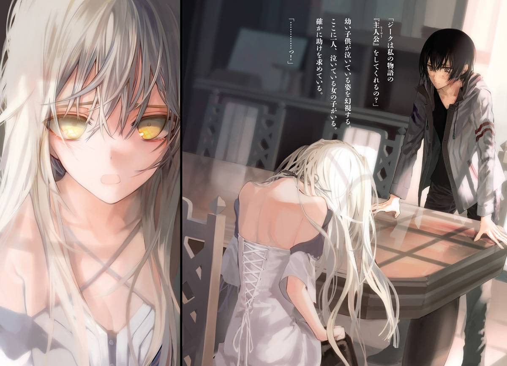
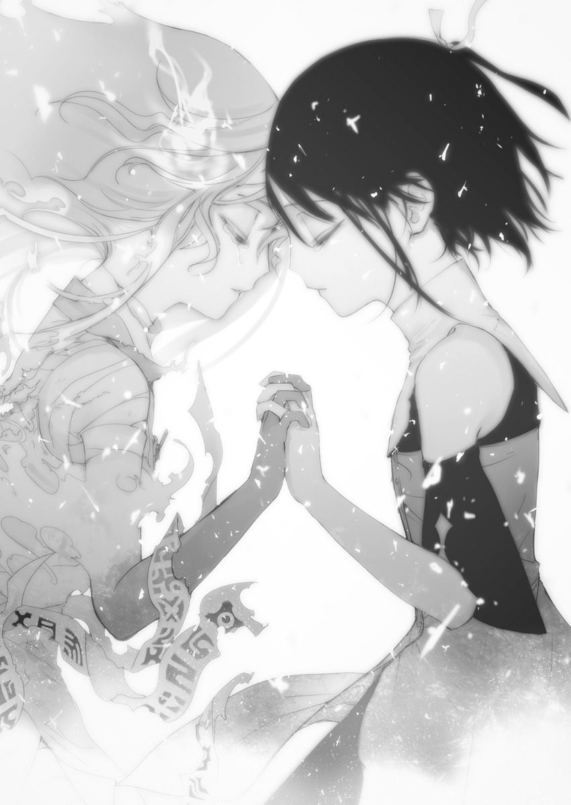

| 異世界迷宮の最深部を目指そう 3 | |
| 割内タリサ | |
| オーバーラップ (2015) | |

イラスト／鵜飼沙樹
１．狂気を判断する正気の焼失
――ハインさんとの戦いは終わった。
ラスティアラが意識を取り戻したことで、ハインさんは自らの形勢の不利を感じ、逃げだしてくれたからだ。
そのおかげで、いま僕は両の足を地面につけて立てている。しかし、頭痛と疲労で足元がふらついて仕方ない。さらに悪寒も止まらない。あと少しラスティアラの覚醒が遅ければ、この両の足は斬り落とされていたかもしれないのだ。その恐怖と混乱で頭の中は一杯で、正常な思考が戻ってきてくれない。
そんな僕の姿を見て、ラスティアラは叫び声をあげる。
「ジークっ！ ジーク、無事!?」
あらぬ方向へ折れ曲がっている片腕を押さえながら、こちらへ歩いてくるラスティアラ。
「僕は無事だよ。だから落ち着いて......。僕よりもそっちのほうが心配だ」
無理して歩いてくるのを手で制す。そのぶらりと揺れる腕を見る限り、僕よりも彼女のほうが重症だ。
「私のほうは......痛っ！ 完全に折れてるね、これ。――神聖魔法《キュアフール》。......それでハインのやつは？」
ラスティアラは回復魔法を唱えて、腕の骨折を修復しながら状況を確認する。
「ハインさんなら、何とか追い返したよ」
「そっか、良かった......。けど、ああもうっ、ハインは一体何で......！」
ひとまず危機は去っていることを理解して、ラスティアラは安心したみたいだ。けれど次は、この惨状に腹を立て始めた。
「僕にもわからない。ハインさんはわけのわからないことばかり言って、そのまま逃げていったから......」
「わけのわからないこと？ どんなこと言われたの？」
「まず、もしハインさんが勝ったら連合国から出て行けって言われた」
その報酬内容を聞いて、ラスティアラは眉をひそめた。
「そのあと、ラスティアラが『作りもの』だって言ったんだ......」
「私が『作りもの』？ そんなの当たり前じゃん。いまさら過ぎてわけがわからないっ」
回復魔法で腕を治したラスティアラは、治った腕で頭をかきむしる。珍しく苛立ちを露わにしている。
「......えっと、その、ラスティアラは自分が『作りもの』だって認めるのか？」
ラスティアラは『作りもの』と評されることを不快に感じていないようだ。それが気になり、確認をとる。
「前に言ったでしょ。この肉体は聖人ティアラそのものとして作られたの。だから、『作りもの』なのは当たり前。別に、私はそれを否定しないよ」
ラスティアラは自分を『作りもの』だと言う。けれど、ハインさんの言う『作りもの』とは、ニュアンスが違うように感じた。
「いや、ハインさんはそういう意味で『作りもの』って言ったんじゃないと思うよ。肉体的なものじゃなくて、もっと精神的なもの。思考や感情が『作りもの』だって」
「精神が――思考や感情が『作りもの』？ そりゃ、周りの影響はそれなりに受けてるけど、誰だってそうじゃない。私は私だよ」
「そうだけどね......」
しっかりとした口調で自分を表すラスティアラを見て、僕はその精神が『作りもの』とは思えなかった。しかし、あそこまで必死に訴えかけてきたハインさんの言葉も無視できない。言い表せない不安が腹の底に溜まっていく。
そして、ハインさんの言葉の中で最も僕の不安を掻き立てた一文を伝える。
「あと最後に、このままだとラスティアラが死ぬとも言ってた......」
「私が死ぬ......？」
ラスティアラは「死ぬ」という一言を聞いて、呆けた顔を見せる。
「確かにそう言ってた」
「死ぬ......」
二度「死ぬ」という言葉を繰り返し、ラスティアラは目線を地面へと向ける。そして、続けて確認を取るように呟く。
「あのハインが、そう言ったんだ？」
ラスティアラは俯けた顔をゆっくりとこちらに向ける。
僕は短く首肯することしかできない。ラスティアラの目に暗い深みが増す。最近は鳴りを潜めていた狂気が漏れ出している気がした。そのラスティアラは小さく小さく呟く。
「本当になんで、いまさら......。あとちょっとなのに......、ハインらしいと言えばらしいけど......」
――呟いて、手を額に当てて考え込む。
様子がおかしい。他人に「死ぬ」と言われて平静でいられるのもおかしいが、それ以上にラスティアラの様子はおかしい。根拠もなく「死ぬ」と言われて、ここまで考えこむのは......まるで、その根拠に心当たりがあるみたいだ。
その心当たりを聞こうと思い、ラスティアラに近づこうとする。
しかし、近づききる前に、彼女は僕の接近に気づき、慌てて話を再開する。
「あ、ああっ、ごめん、ジーク。少しびっくりしただけ。なんでもないよ。いや、ハインのやつが急に変なことを言うからさ」
もうラスティアラは、いつも通りの顔に戻っていた。
動揺は消え去り、先ほどの長考をなかったことにしようとしている。
判断に迷う......。ここはハインさんとラスティアラの事情に踏み込むべきなのか。それとも、ラスティアラの意を汲んで、先ほどの彼女を見なかったことにするべきか。
その答えを出すのに手間取っていると、ラスティアラは明るい様子で言葉を続ける。
「とにかくっ！ 問題なのはハインの馬鹿が手段を選ばなかったことだね。ちょっとフーズヤーズに戻って、ハインの暴走について話をつけないと......」
そう言いながらラスティアラは《コネクション》の扉へと近づいていく。この様子だと、今日の探索は諦めているようだ。フーズヤーズの家に戻り、今回のイレギュラーについて確認を取るつもりなのだろう。
「僕もフーズヤーズまでついていこうか？」
「いや、いいよいいよ。身内の問題だしね。それよりもごめんね。決闘――、余興のつもりだったのに......」
ラスティアラは身内のことだからと同行を遠慮するが、それだと僕に不安が残る。
「けど、ラスティアラ。またさっきみたいにハインさんが襲ってきたら危険だから、僕もついていったほうがいいんじゃないのか？」
「いや、さっきのは身内だと思って気を抜いていただけだよ。本来なら、私の圧勝だから大丈夫。ステータス見れば一目瞭然でしょ？」
ラスティアラは問題ないと言って、僕にステータスの確認をさせる。
確かに、ステータスだけを見れば圧勝だろう。数値のほとんどが上回り、スキルにも大きな差がある。普通に戦えば、ラスティアラの勝ちに違いない。
けれど、いましがた普通に戦わなかった結果――ラスティアラは負けた。
あれが一対一ならば初手にてハインさんの完封勝ちだ。ラスティアラを油断させる材料さえあれば、ハインさんはラスティアラを完封できるというのが現実なのだ。
僕が不安を拭えないでいると、ラスティアラは真剣な表情で言葉を足す。
「大丈夫、次は絶対に油断しない。だから、待ってて」
そう言ってラスティアラは魔法の扉をくぐる。僕も追いかけるようにして、自宅へと戻った。そして、そこに広がるのは自宅の居間、それとキッチンに立つ黒髪の少女マリア。
急に戻ってきた僕たちにマリアは驚く。
それもそうだ。僕たちが迷宮に入ってから、まだ十分も経っていないのだから。
「あれ？ お二人とも、どうしたんです？ 早すぎませんか？」
マリアはキッチンで行っていた洗い物を中断させ、僕たちのほうへと寄ってくる。
ラスティアラは何事もなかったように答える。
「いやぁ、ちょっと実家の用を思い出しちゃってさ。今日はフーズヤーズに戻るよ。だから今日は二人で遊んでて。二人でモンスター狩ったり、買い物に行ったりしてさ」
答えながら、ラスティアラは家の窓に近づく。そして、最後に手を振って、そそくさと出ていった。
「それじゃあね！」
声をかける暇もなかった。
そのラスティアラの様子をマリアは不審に思い、何かあったのかと僕に聞いてくる。僕は大したことじゃないと言葉を濁すしかなかった。
マリアに心配をかけたくない。
できれば荒事とは無縁でいさせたいのが僕の本音だ。
騒がしいやつがいなくなり家の中が静まり返る。その後、マリアは今後の予定の確認をとろうとする。
「私はアルティさんに呼ばれているのですが、ご主人様はこれからどうされますか？」
「アルティに呼ばれた？ あいつがここへ来たのか？」
「いえ、朝方、料理してたら点けた火に話しかけられました。そろそろ約束の時間です」
「あいつ、どこにでもいるな。うん、行ってくるといいよ。僕は迷宮探索してるから」
どうやら、アルティは家のキッチンの火を介してマリアとコンタクトを取っていたようだ。アルティの反則的な能力を再確認しつつ、マリアの誘いを断る。
おそらく、用件は例の魔法の伝授だろう。そこに僕がいてもやることはない。
「わかりました。それじゃあ、先に失礼しますね」
「ああ、いってらっしゃい」
マリアも家から出て行き、より一層と家の中は静かになる。
その静寂の中、居間のテーブルに一人で座り、心を落ち着かせる。思いがけない襲撃で心が乱れている。まずは、それを治めないといけない。
ゆっくりと僕は深呼吸をする。
何度も呼吸を繰り返し――その果て、妙な孤独感を覚える。
久しぶりに一人となった。
最近は誰かしらがいつも隣にいた。
異世界に来たての頃は孤独に苦しめられたものだが、いつの間にか孤独が安らぎになっている。その自分の我がままぶりに呆れながらも、それが人間だとも思った。
ないものをねだり、あるものが煩わしいと思ってしまう。
自分の未熟さを痛感する。
要は子供なのだろう。僕は自分のことだけで精一杯の子供だ。
もし、自分が大人で、相応の余裕があれば、マリアにいつまでも恋心を秘めさせてはいない。いまだって、ラスティアラを一人でフーズヤーズに向かわせてはいない。アルティとの間に溝はなく、ハインさんの必死の訴えを理解することもできて、ディアだって大怪我をすることはなかったはずだ......――
しかし、全て、過ぎ去ってしまった。
自分の未熟さゆえに対応しきれなかった。最善の選択をしてきたとは、到底思えない。
いまも、ラスティアラに無理にでもついていったほうがよかったのではないかと後悔している。同時に、ラスティアラの身内の事情に僕という他人が深く踏み込んでいいものかと悩んでもいる。
ああ、簡単なことだ。判断する余裕と力が僕にないだけ。
なら――もっと強くならないといけない。
そう思い至る。
過ぎ去ったことを悔やむより、少しでも成長しようと奮い立つ。
そして、《コネクション》を通り、二十層へ一人で戻っていく。流石に一人で深層を開拓しようとは思わない。力量が足りないとは思わないが、二人のときより危険が増すのは間違いない。なにより、ラスティアラがいないときに探索を進めたりしたら、あとで文句を言われると思った。
だから、モンスター狩りへ行くことにする。
少しでも自分を強くしたい。精神的な未熟さは一朝一夕で解決しないが、この異世界では身体的な強さは一朝一夕で解決できてしまう。ならば、身体的な強さを先にカバーしようと思うのは、当然の思考だった。
最善の選択のため――後悔しないためにも、この空いた時間を使って少しでも強くなっておくのは損じゃないはずだ。
強くなるため、まず狩場の選定を行う。
一人でも問題なく狩れるレベルで、最も強いモンスターは二十一層のフューリーだ。
だが、フューリーが最も効率のいい相手かと言うとそうでもない。フューリーは経験値は高いが、代わりに耐久力も高い。一体にかかる時間と経験値を計算すると、一番の効率とは言えないだろう。
理想のモンスターは、剣の一振りで即死する相手だ。そして、敵を探す時間の短さ、密集率も重要だろう。あとはイレギュラーが少なければ少ないほどいい。
元の世界で培ったゲームの経験で、最適解を探していく。いままで戦ったモンスターを思い返し、その条件にあてはまる層を導き出し、最もバランスがいいと思われる十五層へと向かう。
予想通り、十五層での狩りは理想的だった。そこで様々なモンスターを延々と狩っていき、経験値と魔石を溜め続ける。――無心になって敵を殺し続ける。
敵は一振りで倒せるため、ＭＰの消費は少ない。レベルアップによってＭＰの最大値が伸びたことでＭＰの自然回復量も伸びたおかげか、半永久的に狩り続けることができた。
ときおり、ラスティアラとマリアの顔が浮かぶ。願いを叶えて欲しいと言ったアルティの顔も浮かぶ。――それでも剣を振り続ける。
僕は元の世界に『帰還』しないといけない。
『帰還』するための最善は、いまやっている狩りだ。そう自分に言い聞かせて、久しぶりのゲーム感覚でレベル上げに徹し続ける。
不安と迷いを振り切るかのように、日が暮れるまで、ずっと......。
◆◆◆◆◆
迷宮での狩りを終えた僕は、家に戻った。
今日一日で、かつてない経験値を取得できた。当然、レベルアップの条件も満たしている。ラスティアラがいればレベルアップしてもらおうと思ったが、残念ながら家にはいなかった。フーズヤーズ国まで足を運んでいるのだから、すぐには帰ってこられないのだろう。そう考えながら、次はマリアを探す。しかし、マリアも家にいない。こちらは新しい魔法の修得に手間取っているのだろうか。
――僕以外、誰もいない。
戻るのが早かったかと思いつつ、窓の外に目をやる。
陽が落ち始め、綺麗な夕焼けが家の中に差し込んできていた。
不思議な物悲しさに追い立てられ、家から出る。
溜まった経験値を消化するため、余った時間で教会に足を向ける。レベルアップはできるだけ早めにしておいた方がいい。あと魔石も溜まってきたので、換金もしないといけない。そのあとは気分転換も兼ねて買い物をして、最後にディアのところへお見舞いに行こう。歩きながら計画を固め、丘を下り、ヴァルトの街に入る。
夕焼けが照らすヴァルトの街道を一人で歩いていると、また不思議な物悲しさに襲われてしまう。宝石の装飾が施された街道の端が、薄く赤く煌めいていた。その淡い光が僕の心を揺さぶる。その物悲しさから逃げるように歩く速度を上げて、教会に辿りつく。
教会の中に入ると、都合よく神父が詠唱しており、市民が祈りを捧げている最中だった。
途中から祈り始めていいものかわからなかったが、とりあえず後方にある長椅子の端に座って見様見真似で祈りを捧げる。
静かな時間だった。
時々レベルアップしたかなと自分のステータス画面を開き、レベルアップしていないことを確認して、また祈りを捧げ直す。
教会でのレベルアップ作業は、ラスティアラと比べると格段に長い。
ステータスを確認したり、教会のステンドグラスを眺めたりして時間を潰す。翼の生えた女性の描かれたステンドグラスが余りにも煌びやかだったので、試しに『注視』してみる。すると、その全てが宝石で出来ていたとわかって驚いた。
こうして色々と教会内を観察している内に、神父が詠唱を終えて一礼した。それに合わせて周囲で祈りを捧げていたものも一礼して、まばらに立ち上がって退出し始めたので、席に座ったまま、自分のステータスを確認する。
【ステータス】
名前：相川渦波 HP345/372 MP221/653-200 クラス：なし
レベル13
筋力7.82 体力8.02 技量9.35 速さ12.01 賢さ11.73 魔力29.78 素質7.00
経験値：20235/35000
レベルが上がったことを確認して、ボーナスポイントをどうしようかと迷う。
いままでは必要に駆られてＨＰとＭＰに振ってきたポイントだったが、そろそろ別の振り方も考えていいかもしれない。
耐久力、継戦能力の次に必要なもの。それはモンスターを倒すための火力だと僕は思う。
単純に考えるのならば筋力か魔力が、火力に繋がるだろう。
【ステータス】
名前：相川渦波 HP345/372 MP221/657-200 クラス：なし
レベル13
筋力7.82 体力8.02 技量9.35 速さ12.01 賢さ11.73 魔力30.08 素質7.00
経験値：20235/35000
魔力が0.30上昇し、僅かだがＭＰも上昇した。
一気に1.00上昇することを期待していたが、そこまで急上昇はしてくれないようだ。他のステータスの上昇数も0.30なのかは、次のボーナスポイントを試さないとわからない。次は筋力あたりに振って、その法則性を見出そうと思う。
考察を終えた僕は、レベルアップで自分が強くなったことを喜びながら席を立つ。
そして、教会の外へと出ようとして、その足を止めた。
――見知った騎士が扉の外にいる。
それを《ディメンション》で感知した。
朝にハインさんの襲撃があったため、《ディメンション》を強めて警戒していたのが幸いした。そのおかげで、外へ出る前に気づくことができた。
【ステータス】
名前：パリンクロン・レガシィ HP311/312 MP42/62 クラス：騎士
レベル22
筋力7.90 体力9.87 技量11.89 速さ5.67 賢さ7.34 魔力4.78 素質1.80
先天スキル：観察眼1.45
後天スキル：剣術1.89 神聖魔法1.23 体術1.87 呪術0.54
その騎士の名はパリンクロン・レガシィ。
記憶を掘り起こして、奴隷市場で出会ったパリンクロンという人間を思い出す。飄々としながら人を惑わす苦手なタイプの男だ。
入り口から教会を出るのを諦めて、違う出口がないかを《ディメンション》で探そうとする。すると、外にいたパリンクロンが動き出す。
教会の扉が開かれ、背の高い男が教会に現れる。
相変わらず騎士らしさは全くなく、まるで商人のような動き難い服を着ている。かろうじてパリンクロンが騎士と言えるのは、腰に下げている剣のおかげだろう。
パリンクロンは濁った茶色の髪を揺らしながら、僕に近づいてくる。
「やあ、奇遇だな。ジークの兄さん」
そして、偶然を装って僕へ挨拶をする。
しかし、それが偶然でないことを僕は知っている。確かにやつは、僕を待って教会の外にいた。この教会に入ってきたのは、僕が《ディメンション》を広域に展開して違う出口を探したからだ。
「ああ、奇遇だな。またストーキングか？ 暇なんだな、騎士って職業は」
険しい口調でパリンクロンに応対する。騎士たちには敬語をもって接してきた僕だったが、なぜだかこのパリンクロンだけはそういった気にならない。
「あら、尾けてたのばれてたか......。兄さんも、なかなかいい感知能力を持ってるな。急に兄さんの魔力が膨れ上がったから、驚いて入っちゃったぜ」
パリンクロンは僕もと言った。つまり、やつも《ディメンション》に似た魔法をを所持している可能性が高い。今回の待ち伏せも、以前の尾行も、その魔法で行われたのだろう。おそらく、『呪術』というスキルが関わっていると見た。
いままでの情報収集の中でも聞いたことのない魔法ジャンルだ。
「それで何の用だよ。おまえも決闘でもしたいのか？」
「おいおい、物騒だな。ちょっと話しに来ただけさ。兄さんはセラ、ラグネ、ハインの三人を撃退したんだろう？ なら、俺じゃあ相手にならないさ。俺はホープスのおっさんと最下位争いしているくらいだからな」
パリンクロンはおどけながら肩をすくめる。
しかし、僕は警戒を緩めない。距離を一定に保ち、その一挙一動を『注視』する。
【鉄の剣】
攻撃力２。特筆すべきところのない鉄の剣
この鉄の剣以外に戦闘で使える装備はない。
パリンクロンは僕が警戒を強めて装備を『注視』していることに気づき、軽い口調で場を和ませようとしてくる。
「いや、ほんとに。ちょっと話をしにきただけさ。この剣も、そこらへんの騎士宿舎からかっぱらってきた粗末なやつさ」
「今朝、いまみたいな和やかな雰囲気の中、襲撃されたばっかりなんでね......」
「ははっ、知ってる知ってる。ハインだろう？ 知ってるから、様子を見にきたのさ」
パリンクロンは笑いながら、近くの長椅子の端に座る。
周囲の人気がなくなってきた。神父も一仕事を終えて奥に引っ込んでいる。不自然にも、教会内は僕とパリンクロンだけだ。
「知ってるなら、察してくれ。僕の中での騎士の信用はガタ落ちなんだ。剣の届く間合いには入って欲しくない」
「わかった、入らない。約束する。......だから、俺と話をしようぜ？」
そう言ってパリンクロンは、腰の剣を床に置いて戦意がないことを示した。
その素直な対応が、逆に胡散臭いと感じる。剣がなくとも戦闘できる手段はある。
しかし、ここまでしてもらって、話もしないというのは人として不義理だ。それにハインさんの件も含めて、フーズヤーズの人間には聞きたいことがある。仕方なく僕は、パリンクロンの座っている長椅子の逆の端に座る。
「話くらいならかまわない......」
「ありがとうな。ここで話すらできなかったら、困るところだった」
パリンクロンは「よかったよかった」と言いながら、話を続ける。
「どうだい？ 俺以外の『天上の七騎士』は、もう全員倒したかい？」
そして、予想していなかった質問が飛んでくる。
「いや、全員とはやってない。やったのは......レイディアントさん、ホープスさん、ラグネちゃん、ハインさんの四人だ」
嘘をつくこともないと思い、正直に答えることにする。パリンクロンがその気になれば知ることのできる情報だろう。
「うんうん、なるほどな」
パリンクロンは自分の仲間が負けたことを、嬉しそうに聞く。
「次は僕の質問だ。なぜ、ハインさんがあんなことをしたのか知っているのか？」
「ああ、知ってる」
間髪をいれず、パリンクロンは答えた。
正直に答えてくれるとは思っていなかったので、少しばかり驚く。
パリンクロンは驚いている僕を見て笑う。
「驚くなよ。ジークの兄さんも正直に答えてくれたんだ、こっちも正直に答えるさ」
「......早く教えてくれ」
「いいぜ。簡潔に答えよう。それは――俺が煽ったから、だぜ。この数日の間ずっと、そ知らぬ顔で、「ああ、ジーク君と一緒にいる主は楽しそうだな。まるで、普通の女の子みたいに笑う」とか「生まれてから今日まで騙され続け、小さな幸せも掴めぬまま消えていくなんて......。国のためとはいえ心苦しいものだ」とか言って苛め続けたら、上手いこと半狂乱してくれたんだ。そして、そのまま、主を助けに行っちゃったわけだ。ははっ、やったぜ」
笑いながらパリンクロンは答える。それはまるで、小さな子供が悪戯に成功したときに見せるような無邪気な笑いだった。その笑いと内容のギャップに僕は唖然とする。
「あ、煽った......？」
「俺は煽りに定評があってね。修得している魔法も、そういった精神系が多い」
「な、なんで、そんなことを......」
「面白そうだからさ。あとフーズヤーズという国の不利益を願っているから、というのもあるな。ま、ほとんどが趣味だけどな」
パリンクロンは笑う。そして、僕は言葉を失う。
ここまで悪意に純粋な人間と話すのは初めてだったため、対応の仕方がわからない。こんな気楽に人を狂わせる人間がいるという事実に恐ろしさを感じる。
呆然としている僕にパリンクロンは話を続ける。
「次は俺の質問だな。なあ、兄さんは主を――ラスティアラを助ける気はあるかい？」
ラ、ラスティアラを助ける？
それはつまり、ラスティアラは助けないといけないような状況ということか？
パリンクロンの言葉は、麻薬にも似た毒のようだった。僕にとって、パリンクロンは毒を吐き続ける魔物に近い。
先ほど話に挙がった精神魔法を警戒して、自分のステータスを確認する。しかし、ステータスに異常はない。これは、ただのパリンクロンの話術だ。
ただ話をしているだけだと言うのに、こんなにも頭が痛む......。
「助けるっていうのは、どういうことだ？」
「あれ、ハインから聞いていないか？ ああ、聞いていないのなら仕方がない。俺から説明してやろう。これはサービスだ。フーズヤーズの秘密と主の秘密を、とくと説明してあげよう。ああ、仕方がない」
パリンクロンは白々しく、仕方がないと繰り返して話を進める。
「簡潔に話そうか。ラスティアラ・フーズヤーズは――聖誕祭の『生贄』だ。聖人ティアラを降ろすための器で、そのためだけに創られた。ま、そんなもんを降ろしてしまえば、当然ラスティアラなんて自我は消える。要は、明後日、死ぬ」
そして、あっさりとラスティアラが死ぬと言った。
心臓の鼓動が不快に速まる。その鼓動は、いつかのときと同じような音を奏でる。
いま僕は、あの奴隷市場のときと同じことをされている。同じように煽られている。
パリンクロンは不幸に落ちる少女を指差して、薄笑いを浮かべながら僕を煽るのだ。
このままでいいのか、と......。
「それは本当なのか......？」
「嘘はつかない。まあ、判断するのはジークの兄さんだがな」
それを信じる理由はない。嘘つきは自分を嘘つきだと言わない。
けれど、ラスティアラとハインさんの話と合わせれば、辻褄が合ってしまうのだ。
「もう少し詳しく話してくれ」
できれば嘘だと言い返したい。矛盾点を見つけようと詳しい話を促す。
「いいぜ。いくらでも話そう。ジークの兄さんにはその資格がある」
パリンクロンは口の端を歪ませて、少しだけ僕のほうへとにじり寄る。
その笑みは、まるで獲物がかかったことを喜ぶ蜘蛛のようだ。哺乳類や爬虫類のような血の通ったものではなく、虫特有の酷く冷たい笑みだ。
「まず、前提としてラスティアラは人間じゃない。人間の腹から生まれておらず、真っ当な生き物ですらない。人肉と宝石をこねて創った『魔石人間』といったところかな。俺たちは『魔石人間』って呼んでる。知ってるか？ あの大きさで生後三年のガキなんだぜ、あれ」
まず軽く、ラスティアラが人間でないことを暴露した。
しかし、それは知っている。本人が言っていたことだ。
三才という年齢には驚きだが、それらしさは薄々と感じていた。心身のアンバランスさはラスティアラの代名詞でもある。彼女の精神の未成熟さに説明がつく話だ。
けれど、一応は確認を取る。
「ラスティアラ本人は十六才って言っていたぞ」
「ああ、肉体年齢は十六才に設定してある。正直に三才って答えて混乱させるより、肉体年齢を選んだんだろう」
祭りのとき、ラスティアラは十六才に「一応」と付け足していた。
内心はパリンクロンの言う通りだったのだろう。大きな矛盾とまでは言えない。
「続けてくれ」
「ああ。それでなぜ、フーズヤーズがそんな『魔石人間』なんて『素体』を創ったかと言うと......、ずばり、それは過去の偉人を再誕させるためだ」
パリンクロンは両手を広げて楽しそうに喋り続ける。その一言一言が僕の心を削る。
「大聖堂には過去の聖人の血が丸々と保存されてる。魔法の祖である聖人ティアラさんは、もう一度この世に戻るために色々と試行錯誤したみたいだな。そこで目をつけたのが魔法使いの血の性質だ。血には多くの魔法術式を残すことができる。ならば、聖人ティアラという人格を術式として、その血に残せないかと考えたらしい。......いや、すごい執念だな、この人」
パリンクロンから聖人に対する敬意は感じない。もちろん、僕にもない。
この話の流れからすると、つまり、その血は――
「つまり、『魔石人間』ラスティアラの使命は、その聖人ティアラの血を飲み干して、その身体を明け渡すこと。その身体を巡る血には、受け渡すための術式がぎっしりと詰まっている。彼女は再誕の受け皿となるために――いや、死ぬために生まれたのさ」
――ラスティアラを殺す血ということなのだから。
もはや、聖人ティアラという存在は僕の敵でしかない。
「聖人ティアラ再誕はレヴァン教の聖書にも予言されていてね。それが今年だ。フーズヤーズは、それに則って行動している。そして、フーズヤーズの市民も予言に期待している。今年の聖誕祭は一味違うはずだってね。そして、聖誕祭も明後日に迫ってきていて、主の命はあと僅かっ。はははっ。さあさあ、どうする？ どうする、ジークの兄さんっ？」
パリンクロンはまとわりつくような説明を終え、僕の返答を期待して、まとわりつくような目をこちらに向ける。
「......ラスティアラは全て承知の上なのか？」
「聖人ティアラと一つになるってくらいの説明はされているはずだ。ぼやかしてはいるが、薄らと消滅を予期してるだろうな。教育係はハインだったから詳しくは知らないが、生まれて間もない純真な主を洗脳するのが容易だったのは間違いないぜ」
パリンクロンは笑いをこらえながら洗脳の可能性を示唆する。
ラスティアラは聖誕祭で聖人ティアラとなることを当然だと受け入れてるのだろう。受け入れていなければ、呑気に迷宮探索なんてしているはずがない。普通の感性ならば、すぐにでも逃げ出しているはずだ。ハインさんの言うとおり、ここではないどこか遠くへ。
「ラスティアラは儀式を受け入れることに何の疑問も抱いていないということか？」
「正確には、抱けないように調整されてる、かな。ラスティアラの人生は、すでに計画表で決められていて、それを調整され続けるのが彼女の運命なんだ」
「調整され続けている......運命......」
その言葉に僕は何かが引っかかる。調整と言うのなら、それは僕だって――
「全てはフーズヤーズの計画のためらしいぜ？」
表情を歪ませる僕に構わず、パリンクロンは話を続ける。
僕は引っかかったものを振り払い、話に集中する。
「計画？ どんな計画なんだ？」
「ああ、よく聞いてくれた。楽しい楽しい計画だから、教えたくて仕方なかったんだ。計画はこうだ。『ラスティアラは喜んで儀式を受け、聖人ティアラとなる。そして、市民たちに喜ばれながら聖誕祭でお披露目される。そのあとの物語は、まさに英雄譚。その奇跡の力をもって前人未到の迷宮を開拓し、『正道』を延長させ、最強の名をグレンから受け継ぐ。ちなみに当の本人、グレンも協力者だぜ。さらに後日の『舞闘大会』で優勝、大陸全土にその名を轟かせ、各地でその奇跡の力を奮いながらフーズヤーズ本国へ凱旋。満を持して大陸北部の戦争に参加し、最前線の総大将に生きる伝説である聖人様が降臨するわけだ。その威光と力をもって、戦争はフーズヤーズの大勝利！ すごい、まさに英雄だ！』――ははっ、素晴らしい物語だろ？ これが、もう決まってるんだ」
パリンクロンはつらつらと、とある英雄の生涯を語るように、ラスティアラの将来を語る。その計画は、彼女の好む英雄譚そのものだ。
ラスティアラならば喜ぶかもしれないと思い、それが都合の良い一致だと気付く。彼女の趣味嗜好が人為的に作られたものであることを、僕に疑わせる。
ラスティアラは英雄譚に憧れて英雄になりたがっているのではなく、英雄になるから英雄譚に憧れるように教育されたのかもしれない。
それが真実だとしたら、それは......とても気分の悪いものだ......。
「そんな計画された人生、おかしい......。絶対におかしい......」
不快のままに、自然とそう呟いてしまう。
「だろ!?」
すると、パリンクロンは一際大きな声で同意した。そして、その勢いのまま、僕を誘う。
「だからさあ、ジークの兄さん！ 助けようぜ、ラスティアラを！」
満面の笑みのパリンクロンが、とても良心溢れる提案をする。
それが恐ろしくて堪らない。その良心溢れる提案をしているのが、あの悪意溢れるパリンクロンだということが怖い。
「そうやって僕を煽って......！ おまえは何がしたいんだよ......！」
「何がしたいって？ もちろん、人助けをしたいんだよ。我が主に、本当の人間の人生を与えてあげたい。聖人なんて化け物の妄執の犠牲から救ってあげたいんだ、俺は！」
パリンクロンは目を輝かせながら答える。
僕にはわかる。こいつは純粋にラスティアラの運命をつまらないと思っている。このまま定まりきった計画通りに進むのはつまらないと思っている。
ラスティアラを助けると面白そう。
それだけ。ああ、それだけだ。なんてわかりやすい、混沌への欲求だ......。
「ジークの兄さんには聖人ティアラの復活を阻止してもらいたい。具体的に言えば、明後日のフーズヤーズ最大のお祭り『聖人ティアラ聖誕祭』をぶっ壊して欲しい」
壊せ――とパリンクロンは誘う。
しかし、それに僕は頷けない。その道は僕の方針に反している。
確かにラスティアラの事情を知って怒りは感じた。けれど、僕にできることは限られている。僕にそんな余裕はなく、時間だってない。
「そんなことをしても捕まるだけだ。善意でやったとしても、それじゃあただの犯罪者だろうが」
「そうか？ きっとジークの兄さんなら捕まらないさ。逃げ切れるだけの実力がある。この国の最高戦力にあたるであろう『天上の七騎士』を、幾度となく無傷で追い払っている」
「国に目をつけられ、犯罪者として動きにくくなる。僕の生活への影響も大きい」
「そうなったら、国外へ逃げればいい。フーズヤーズの手の届かない国に行けば安全だ」
「僕は身寄りのない迷宮探索者だ。ここを離れたくないし、逃げ先に当てもない」
「南の二国ならば、問題ないと思うがな。このヴァルトだって、フーズヤーズと仲がいいわけでもない。あんたほどの実力者ならば、匿ってもらえるところはいくらでもあるさ」
「匿ってもらうとか、逃げるとか、そういう発想からおかしいんだよ。そんなこと――」
「ああ。つまり、助けられるけど、我が身可愛さのあまり、助けないってことか？」
パリンクロンは厭らしく笑う。
僕の突かれたくないところを、笑顔で突く。
その適確な指摘に、僕は顔を歪ませる。自分の矮小さを認めるしかなかった。
「ああ、そうだ。その通りさ......」
反論しようがない。
そうさ。誰だって我が身が可愛い。
恥じ入る僕を、パリンクロンは残念そうに見つめる。
「......んー、今回は上手く釣られてくれないなあ。奴隷のときは簡単だったが、もしかして我が主は好みじゃないのか？ いや、逆にあの奴隷に特別な何かがあったのか？」
そして今度は、誰も気づいていないであろう僕の心の底まで適確に突いてくる。
「程度の問題だ。あのときは金で簡単に済んだけど、今回は話が違う。おまえの言うとおり、そこまでラスティアラを気に入っているわけじゃない」
その強がりを聞いたパリンクロンは、ねっとりとした目で僕を観察する。
見透かすような視線で、僕の嘘を見抜こうとしている。いくらか僕を見つめたあと、パリンクロンは微笑しながら答える。
「ははっ、まあ急に国を敵に回す覚悟をしろってのも無茶な話だしな。無理強いはしないさ。俺としてはハイン一人を血迷わせただけで、今回は大成功と言ってもいい。ここで欲はかかない。だが――」
言葉の表面上は諦めたようにとれる。
「――あんたならやってくれそうだ」
しかし、未だにパリンクロンは、僕のことを網にかかった獲物のように見ていた。
その一言を最後に、パリンクロンは立ち上がる。
「さて、そろそろ俺は隠れるぜ。俺の信条は暗躍なんでね」
そう言って、パリンクロンは僕に小さく手を振って教会から去ろうとする。
そのあっさりとした最後は予想外だった。もっとしつこく勧誘してくるかと思っていた。
それとも、ここまで話せば僕は勝手に動くとでも思っているのだろうか。
真意はわからないままだが、何も言わずに見送る。最低限の情報は得られた。引き止めてまで、さらなる情報を得ようとは思わない。それほどまでに、あいつは得体が知れない。
そして、パリンクロンが去り、静かになった教会内で深く息を吐く。
「はあ......」
深呼吸をしたあと、鉛のような身体を引きずって足を帰路へ向ける。
とにかく身体が重い。それに比例して、気持ちも重い。
その重苦しさのせいか、その後、買い物もディアへの見舞いもすることができなかった。
真っ直ぐ家へと帰り、ラスティアラを探す。
しかし、そこにラスティアラはいなかった。
いくら探してもいない......。
いたのはマリアだけだった。
マリアは僕の様子を見て心配そうに近づいてくる。
健気な仕草だ。しかし、その健気さが恋心からくるのかもしれないと知ってからは、どうにも対応がしにくい。
「......ご主人様、どうしたんですか？」
ラスティアラのことをマリアに話そうかと迷う。
見たところ、二人は仲がいい。マリアは冷たい言葉でラスティアラを突き放すことが多いものの、それは友人同士のコミュニケーションだと僕は見ている。
マリアはラスティアラのことを知っているのだろうか。二人きりのときに、先のような話をしているかもしれない。
「いや、ラスティアラが明後日......」
「明後日？ ラスティアラさんが何か？」
「聖誕祭の日に......」
「はい」
マリアは僕の言葉を待つだけだった。『明後日』『聖誕祭』に特別な事情を抱いていない。
先ほどまでの僕と同じく何も知らないようだ。詳しい話を伝えるべきか迷う。
マリアとラスティアラは友人だ。友人ならば、ラスティアラの口から聞かせるのが正しい流れではないかと思ってしまう。それに僕の知っている情報だって、ラスティアラ自身からの言葉じゃない。ハインさんとパリンクロンからの又聞きだ。
............。
いや、それは言い訳だ。
ただ、気が重いのだ。説明するのが気だるい。
マリアと出会った奴隷市場にいたときのように、ただただ気が重いから、口に出そうとした言葉を引っ込めて、当たり障りのない言葉を引っ張り出す。
「聖誕祭の日に、また遊ぼうってさ」
「......はい。もちろん、いいですよ」
僕の誤魔化しを聞いて、マリアは素直に頷くだけだった。
マリアの目は、真っ直ぐに僕を射貫き続けている。
おそらく、マリアは誤魔化されている振りをしているのだろう。僕の意思を汲んで、深くは追及してこないだけだ。彼女は僕を慮って一歩引くことが多い。それが恋心のせいだと思うと、途端に居た堪れなくなる。
僕はさらに重くなった身体をひきずりながら、寝室に逃げる。
様々な情報が頭の中を渦巻き、気分が悪い。それを振り払うため、僕は毛布にくるまる。
その日――夕食になっても、夜が過ぎても、ラスティアラは帰ってこなかった。
◆◆◆◆◆
そして、翌日。聖誕祭の前日、その早朝。
まだ朝だというのに、遠くから人々の声が聞こえてくる。聖誕祭というクライマックスに向けて、国が活気づいているようだ。
渇ききった喉を潤すため、ベッドから身を起こす。鉛のような身体に鞭を打って、居間へ足を向ける。
廊下を歩き、居間に続く扉を開けたときだった。丁度、窓からもそもそと不法侵入をしている少女を見つける。
昨日、深夜まで待っても帰ってこなかったラスティアラだった。
僕と目が合った彼女は、驚いた様子でこちらに手を振る。
「あっ。お、おはよー、ジーク......」
「あ、ああ、おはよう」
ラスティアラも、まさかこのタイミングで僕と出会うとは思わなかったのだろう。
慌てた様子でリビングに入り、奥の貯蔵庫へ歩いていく。
速まる心臓を落ち着けながら、ラスティアラを眺める。どうやら、朝食のパンを漁っているようだ。パンを持って彼女は居間のテーブルについた。
僕も同じテーブルについて、パンを頬張るラスティアラに声をかける。
「ラスティアラ、ちょっと話がしたいんだけど......」
「む、むむっ。話？ いいよ」
「明日の聖誕祭のことだ」
「ふんふん」
ラスティアラは軽い様子で次の言葉を促す。
それを冷静に見つめながら、一番大事なことだけを問う。
「明日、おまえは聖人ティアラってやつに、その、......身体を明け渡すのか？」
それを聞いてもラスティアラの様子は変わらない。
完全無比に創られたその美貌が歪むことはなかった。
「うん。そうするつもりだよ」
そして、いつも通りの軽い口調で頷いた。
僕は顔を歪ませる。自分でもわかるくらい感情が乱れる。
それでも努めて冷静さを保って、言葉を返す。
「そうするって......。そうすれば、ラスティアラは消えていなくなるって聞いたぞ」
「あ、やっぱり聞いちゃったんだ。ハインあたりに教えてもらったのかな？」
「否定しないということは、本当なのか？」
できれば否定して欲しかった。そんなことは嘘だと、笑って答えて欲しかった。そうしてくれたら、僕は安心して、昨日までと同じように迷宮探索を続けられたのに。
「びっくりさせようと思ったから、内緒にしてたのになー」
「びっくりさせようって、それどころの話じゃないだろ......！」
「いきなり聖人ティアラを仲間にするジークが、どんな表情をするか楽しみだったの」
「楽しみって......、そのとき、そこにおまえはいないだろうが......！」
搾り出すように声を出す。
いつも通り笑いながら話を続けるラスティアラにムカついて仕方がなかった。
「大丈夫大丈夫、聖人ティアラも私だよ。聖人になっても、私はジークの仲間だから。心配しないでいいよ」
僕の苛立ちを察したラスティアラは、迷宮探索に支障はないと言う。だから、心配しなくていいとのことだ。その的外れな発言に、さらに僕の苛立ちは増す。
「違うっ！ そういうことを言っているんじゃない！ 聖人ティアラになったら、おまえの意識はなくなって、おまえが消えてなくなることについて聞いてるんだよ！ おまえはそれをちゃんと理解してるのか!?」
我慢できず、とうとう声を荒らげてしまった。
「そうらしいね。わかってるよ」
それをラスティアラは柳に風と受け流す。
「らしいって......！ おまえはそれでいいのか!?」
「いい――。私の生きる意味は聖人ティアラと一つになること。私は聖人ティアラを尊敬してる。多くの人を救った英雄を素晴らしいと思っているし、その人生も、その物語も大好き。その英雄に私もなれるって言うなら、文句なんてないよ。そこに抵抗なんてあるわけない。むしろ誉れだよ」
その過度な信仰を聞いて、ハインさんの言葉を思い出す。
――『作りもの』。
確かに、作られたとしか思えない清廉で狂気じみた聖人ティアラへの信仰心だった。
「それ、そう教育されたからじゃないのか？ 普通は消えるなんて言われたら、もう少し抵抗があるはずだ。お前の様子を見ていると、まるで洗脳されたとしか思えない......！」
「......うん、そうだろうね。わかってる、私が偏っているのはわかってる。でも、それが私なんだよ。たとえそれが教育だろうが洗脳だろうが、それが私なんだ。今日まで生きてきた私の全てを、ジークも『作りもの』『偽物』って否定するの？ 私にとっては、それだけが私だというのに、それを否定するの？」
ラスティアラはそれが教育だろうが洗脳だろうが構わないと言った。
そこに迷いはない。
はっきりと自分の意思を持っている。芯の通ったしなやかな自我があるように見える。
「――っ!!」
僕は困惑する。境界線がわからなくなったからだ。
ハインさんの言うところの『作られたラスティアラ』と、『本当のラスティアラ』の境界線が見えない。だから、その決意を頭ごなしに否定できない。
『作られたラスティアラ』を否定しようとして、生まれ持った『本当のラスティアラ』までも否定してしまっては元も子もない。だから、苦し紛れの言葉を震えながら返すしかできなかった。
「ほ、本当にそれでいいのか？ 本当に？」
ラスティアラはその言葉を毅然と受け止め、まっすぐに僕を見て答えようと――
「もちろん、いいよ。私は聖人ティアラの器として生まれ、聖人ティアラの器として育てられた。私の生きる意味は、聖人ティアラとなること......で間違いない......。だって、そ、れが......」
――していくうちに、ラスティアラの顔に陰りが生じた。
「それが......、私......？」
ラスティアラは不安そうな顔を見せる。
自分の言っていることを、自分で不安がっている。以前も、似たようなことがあった。
酒場で仲間になった時も、喋っている間にころころと考えが変わっていた。
強固な自信を、喋っている間にあっさりと失う。不安定な澱んだ空のように、晴れたり降ったりを繰り返す。――それがラスティアラ。
「それが私らしいよ......」
目を彷徨わせながら、ラスティアラは自信なさげに呟いた。
その様子を見て、確信する。
この『作られたラスティアラ』と『本当のラスティアラ』が侵食し合っている様こそ、ずっと感じていた彼女の不安定さの正体なのだ。
「らしいって、おまえもよくわかってないんじゃないのか!? 揺らいで、迷って、何が正しいのか、わかってないんじゃないのか!?」
ラスティアラを考え直させる好機だと思い、言葉を矢継ぎ早に足していく。
しかし、次の瞬間、そこには晴れやかな顔のラスティアラがいた。
「――ふ、ふふっ、ふふふっ。そんなことないよ。私は聖人ティアラになるよ。あの心躍るような冒険をして、強大な敵に打ち勝ち、様々な出会いと別れを経て、誰もが憧れる英雄になるんだ。あの英雄にっ！ それはとても素晴らしいに決まってる!!」
ラスティアラが狂った目で笑う。
何かにとり憑かれたかのように豹変し、そして、
「素晴らしいに決まって......るんだよ......」
また弱気になる。
「ほ、ほら見ろ、自信がないんだろ!? 犠牲になることをおまえは怖がってるんだ！」
「――恐怖はないよ。死ぬことが恐ろしいわけじゃない。ジークは私の迷宮での戦いを見て知っているでしょ？ そのくらいで竦むほど、私は柔じゃない!!」
次は急に強気になる。
豹変の条件が少しだけわかってきた。僕が明日の儀式を否定しようとすると、ラスティアラの中の『作られたラスティアラ』が出てくるようだ。
しかし、いまのままでは堂々巡りだ。
これがパリンクロンの言っていた『調整され続けた結果』なのだろう。おそらく、いくら繰り返しても無意味――ラスティアラの説得はできない。
そういう風になっているんだ。
だから、僕は同じ言葉を繰り返すしかなくなる。
「......本当に。......本当にそれでいいのか？」
「私だけの問題じゃないんだよ、ジーク。大聖堂のみんなが、フーズヤーズの誰もが、聖人ティアラを待ち望んでいる。人々の想いがっ、この身体には詰まってるんだよ！」
最後の確認に、ラスティアラは笑顔で答える。――自らの意志を示す。
「だから、私は儀式を受ける」
「それでも、僕は儀式を拒否すべきだと思う」
僕も僕の意志を示し返し、ラスティアラと睨み合う。
しかし、いくら睨みあっても、彼女は意志を曲げないだろう。
付き合いが長くなってきたからこそわかる。この表情のラスティアラは絶対に引かない。狂気を身に纏った状態のまま、自分の意志を貫き続けるだろう。死ぬ一歩手前まで。
睨み合いのまま、静寂が過ぎていく。
先に沈黙を破ったのはラスティアラだった。
気丈な面持ちから一転し、すがりつくような表情になっていた。
また感情の揺り返しかと思った。しかし、どうも様子が違う。
「――......なら！ そう思うならさっ、ジークは助けてくれるの？ ハインの言うとおり、どこか遠く違うところで、私と二人で旅をしてくれるの？」
ラスティアラの目じりが下がり、甘えるように上目遣いで僕を見つめてきた。
こうも弱々しさを表に出したラスティアラを見るのは初めてだった。その年相応の女の子らしさに、目を見開いて驚く。
子供みたいだと思った。そして、いまの彼女こそが作られていない『本当のラスティアラ』かと期待する。しかし、そういうときに限って答えられない質問がきてしまった。
――「私と二人で旅をしてくれるの？」
僕は迷宮の深層へ辿りつき『帰還』しなくてはいけない。それだけは絶対だ。僕の生きる目的であり、この異世界での目標だ。
なのに、この連合国から出て、二人で旅なんてできるはずがない。
「そ、それは......」
僕が口ごもるのを見てラスティアラはさらに質問していく。
「連合国の騎士全てを、フーズヤーズという国を敵に回せるの？ 明日の儀式を壊してくれるの？ 大きな大きなリスクを負って、それでも私を助けてくれるの？」
その質問の全てが、問いではなく懇願に聞こえる。
そして――
「ねえ、ジークは私の物語の『主人公』をしてくれるの？」
幼い子供が泣いている姿を幻視する。
ここに一人、泣いている女の子がいる。確かに助けを求めている。
間違いない。これは作りものじゃなくて、『本当のラスティアラ』の声だ。
この声に上手く答えれば、本当のラスティアラを引き寄せ、本当の会話ができるだろう。意思さえ通じ合えば、説得することだってできるはずだ。
説得のチャンスは、このタイミング――このときしかない。
しかないのに......、
「............っ！」
それに答えることができない。
僕の『帰還』するという目的と、その懇願は逆方向が過ぎる。
呵責、道徳、義務、我欲といった様々なものが、僕の身体を引っ張り合って身じろぎすら許さない。そんな微動だにしない僕を見て、ラスティアラは顔を一層曇らせる。
ラスティアラが懇願していた時間は一瞬――流れ星が落ちるほどしかない僅かな時間。その一瞬で、僕の声が届く時間は終わってしまう。
ラスティアラはいつもの陽気な表情に戻り、いつものように笑い飛ばす。
「......は、ははっ！ 冗談だよ。別にそんなことしなくていいよ。ジークにそんな余裕がないことは知ってる。ジークは自分ひとりで一杯一杯だもんね」
......答えられなかった。
もう届かない。ハインさんの助言の甲斐もなく、何も言ってあげることができなかった。
「ジークは『候補』だから、無理は言わないよ。そんな義理も責任もないもんね」
笑いながらラスティアラは、残ったパンを口に放り込んだ。
ああ、いつも通りだ。いつも通り不安定で、落ち着きがなくて、ぶれていて、言っていることがすぐに変わるラスティアラだ。
「ま、待て、ラスティアラ、話はまだ......――」
「それに、なんだかんだいって大丈夫かもしれないしね。私が聖人ティアラの意識を、逆に潰す場合だってあるんだから。いやぁ、どうなるのかなー。私もかなり強いからねー」
楽観的に前向きに楽しそうに笑って、ラスティアラは明日のことを話す。
もう僕の話を聞いてくれそうにはなかった。
残った朝食を全て平らげ、ラスティアラは席を立つ。
「ごちそうさま。明日の用意があるから、もう行くね。たぶん、今日一日は迷宮探索を手伝ってあげられないと思うから、マリアちゃんと遊んでていいよ。あと、ついでにまたよろしくって伝えて」
「もう少しだけ話を――！」
話すことは全て終わったと言わんばかりに、ラスティアラは背中を見せる。そして、そのまま別れの挨拶を告げる。
「明日の夜、私が来ると思うから、それまで待ってて......。ばいばい......」
それを最後にラスティアラは家から出て行った。
戦ってでも止めようかと迷い、『持ち物』に手を入れる。しかし、その躊躇の間にラスティアラは足早に去ってしまった。僕は一人、家の中に取り残されてしまう。
いまのがラスティアラの最期の言葉......？
そう思うと、僕はやりきれない気持ちに押しつぶされそうになる。
そのとき、後方から扉の開く音がした。
扉の向こうにはマリアが立っていた。僕と同じくらい暗く真剣な表情で、こちらを見ている。その様子から、いまの会話を聞いていたのだと察する。
「マリア、聞いていたのか......？」
「はい」
マリアは嘘偽りなく肯定する。
尋常でない様子で話す僕たちを見て、リビングに入りづらくなり、そのまま聞き耳を立ててしまったのかもしれない。
「その、それでラスティアラさんは......」
「行ったよ。聞いての通りさ」
弱々しくラスティアラの去っていったあとを指差す。
「これでいいんですか、ご主人様......」
「問題が大き過ぎる......。少なくとも、いまの僕は迷宮から離れることはできない......」
そして、自分の手に負えないことを正直に話す。
いまの状況を一言にすれば、それだけのことだった。ただの学生だった僕には、余りに問題が大きい。
「では、新しいティアラさんという人が来たら、それをラスティアラさんだと思って、いままで通り迷宮探索をするんですか？」
「そいつはラスティアラじゃない、別人だ。いままで通りなんて無理に決まってる」
何の思い入れもない別人を、ラスティアラのように扱うことなんてできない。むしろ、本当に話通りならば、ラスティアラの中に入ったティアラは仇とも言える。
「少なくとも、仲間だなんて思えるわけがない......」
だと言うのに、それを聞いたマリアは、
「そうですか......。よかった、本当によかったです......」
とても澄んだ声を返す。
悲しみや怒りといった感情はなく、心の底から安堵しているマリアがそこにいた。
「よ、よかった......？」
安堵している理由がわからなかった。
ラスティアラと仲の良かったマリアは、もっと別れを悲しむかと思っていた。しかし、全くの逆だった。そして、いつかのアルティと同じようにマリアは告げる。

「だって、ご主人様はラスティアラさんのことを好きかと思っていましたから」
僕がラスティアラのことを好き――と、あっさり告げる。
「――え？」
頭の中が真っ白になりかける。つい二日前、アルティに言われたときと同じだ。言葉の意味をすぐに理解することはできなかった。
唖然とする僕を置いて、マリアは話し続ける。
「そりゃ、ラスティアラさんは変なところもありますけど――」
言っている言葉はわかるが、言っている意味がわからない。予想だにしなかった答えに混乱する。多種多様の疑問が頭の中を飛び交う。
恋と言えば、マリアがしているんじゃなかったのか？
なんで、いきなり僕の話になるんだ？
わけがわからない。
「あんなに美人で――」
ああ、確かにラスティアラは美人だ。美人という二文字では表せないほど、現実離れしている。僕の世界のテレビでも、お目にかかれないほどの美少女だ。
「あんなに強くて、明るくて――」
肉体面では誰よりも強いと確信できる。反則的な存在だ。スキルも豊富で、僕に近しい目も持っている。
性格は明るいと言えば明るい。不安定なところや狂気を除けば、とても前向きで明るい性格をしている。その明るさで周囲の人を引っ張って、仲間を笑顔にするようなムードメーカーなところがある。
「悪戯好きだけど、根っこのところは仲間想いで――」
そうだ。
あいつは危なっかしいところが多い。スリルを好み、劇的なことばかりを望む。
けど、だからといって無意味に人を危険に晒したりはしない。それどころか、多くの助言をしてくれた。言い難いことがあったとしても、悪役になってでも言ってくれた。
「夢見がちだけど、迷宮探索者としては理想的で――」
夢見がちなのは環境のせいだろう。ラスティアラは英雄となるため、自然と英雄の話を好むように誘導されていた。だからこそ、誰より冒険に対する熱意があって、誰よりも迷宮探索者として優秀だ。
「ご主人様とよく似てるから、とても気が合ってて――」
ラスティアラとは気が合った。
僕がいまのような慎重なスタンスを取っているのは、絶対に死ぬわけにはいかない理由があるからだ。もしそれがなかったら、僕もラスティアラのように、夢見がちでゲーム好きな性格をしている。口では逆のことを言ってはいても、本質的にはラスティアラの言っていることがよくわかっていたのだ。
「――そんなラスティアラさんのことが、ご主人様は好きかと思っていました。でも、違うんですよね？ そうなんですよね？」
――そんなラスティアラのことを、僕は好きだったのか？
迷宮探索を第一に考えれば、ラスティアラを切り捨てるのが妥当だろう。元よりそのつもりだった。そして、さっきそうしたところだ。
けど、最後まで未練たらしく追いすがった。
それはラスティアラが好きだったからか？
よくよく考えれば、あそこまで完成された美少女と一緒にいて、男として何とも思わなかったのはおかしい。出会い方が悪かったから、状況が悪かったから、惹かれている事実を認められなかったのか？
けど、確かにいま、ラスティアラが失われようとして僕は焦っている。どうにかできないかと必死に考えて動いている。
ということは......ということは、つまりだ。
マリアの言うとおり、僕はラスティアラのことが好――
【スキル『？？？』が暴走しました】
いくらかの感情と引き換えに精神を安定させます
混乱に+1.00の補正が付きます
――は？
スキル『？？？』が発動した。
そして、冷水を浴びたように全身の熱が冷えた。
心臓の鼓動が落ち着いていき、頭の中に渦巻いていた情報が綺麗に整頓されていく。
それと同時に、僕の胸を高鳴らせていた『何か』が失われたことにも気づく。
大切な『何か』をスキル『？？？』は勝手に冷静さと引き換えた。
冷めた思考で、それを僕は分析する。
その『何か』はわかる。その前に考えていたことから察するに、おそらく『恋』とか『愛』とかに相当するものだろう。
それはわかる。わかる――けど、いまとなっては信じられないくらい冷め切ってしまっている。
「は？ はっ、はは、ははっ、はははは......」
渇いた笑い声を上げる。
僕が知っているスキル『？？？』の発動条件は二つ。
一つ目は『感情が暴走したとき』。これに引っかかり発動したのかと一瞬思ったが、先ほどのは違うだろう。僕は暴走と言えるほど混乱していなかった。むしろ理論的に状況を整理しながら答えを出そうとしていた。
ならば、もう一つの条件。
二つ目の条件、『死にそうなとき』に値したとでも言うのか？
「はははっ、ははははははっ――！」
つまり、スキル『？？？』が『恋』とか『愛』は命に関わると判断した？
僕がラスティアラに恋心を抱いたら死ぬって言いたいのか？
確かにそうかもしれない。そうかもしれない――けど！
だからってそれは無断で引き換えていいものじゃないだろ！
いいわけがない......!!
ふつふつと怒りという名の炎が燃え上がっていく。せっかくスキル『？？？』で手に入れた冷静さが台無しになるほどの、心の底からの怒りだった。
しかし、そのかつてない怒りにスキル『？？？』は反応しない。
先ほどより冷静さを欠いているはずなのに、それでもスキル『？？？』は発動しない。
ああ、つまりそういうことか。ちょっと子供らしく『恋』とか考えたらアウトで、この誰かを殺したくなるほどの怒りはセーフってわけだ。本当に笑わせてくれる......!!
「ど、どうしました、ご主人様？」
笑い出したあと、顔を引き攣らせたまま動かない僕にマリアは狼狽する。
ただ、僕はそれどころじゃない。
そういえば、ラスティアラと初めて出会ったとき、その前後でスキル『？？？』を発動させていた。二度目の出会いの前後でも発動していた記憶がある。
そりゃ、自分の感情に気づくのが遅れるわけだ。まともな感情が育たないのも当然だ。感情の種となるものが根こそぎ刈られていたわけだから。
僕とラスティアラは、出会い方からして、最悪だったのだ。
苦笑する。怒りのあまりに笑い、笑いすぎて冷静になってきた。
「ははっ......。いや、少しおかしくて......。そうだね、マリア。僕はラスティアラを好きじゃない。間違いないよ」
「ぇ、え？ そ、そうですか......」
マリアは僕の答えに驚く。どうやら予想外の答えだったようだ。すぐにその真偽を確かめるため、表情を窺ってきた。しかし、どれだけ窺っても無駄だ。
そんなもの、いま消えたところだ。
「それよりも、面白いこと言ってたね。僕とラスティアラが似てるって」
本当にマリアのスキル『炯眼』は便利なものだ。
本人さえも気づけないことを知ることができるのだから。
「......は、はい、上手く言えないんですけど、根っこは似てるなって思って。私から見れば、お二人とも、『作りもの』のように無駄がなくて完成された存在ですから」
「ははっ」
その適確な指摘に、乾いた笑いが大きくなる。
的を射すぎて楽しくすらある。
ラスティアラが環境で作られた『作りもの』ならば、僕もスキル『？？？』で綺麗に整えられた『作りもの』だ。マリアの言うとおり、似たもの同士だ。
「そっか。根っこは似てるか」
「はい......」
マリアは笑い続ける僕に怯えている。
その『炯眼』を以てしても、いまの僕の豹変と思考は看破できないようだ。
それほどまでに、スキル『？？？』は異常なのだろう。つまり、僕もラスティアラと同じくらい不安定だったということ。
いまならば、ラスティアラの気持ちが少しわかる気がする。
おそらく、ラスティアラは儀式を受けることがおかしいとわかってはいても、それに感情が伴わないのだろう。だから、生まれ持った義務を優先している。もはや、儀式を受けることだけが心の拠り所になっているからだ。
それで、僕は？
僕も同じだ。ラスティアラに好意があるとわかっても、それに感情が伴わない。そして、残っている心の拠り所は迷宮の『最深部』へ行くことだけだ。
だから僕も、ラスティアラと同じように、義務を優先して迷宮へ行くのか？
――行けるわけがない。
あそこまでラスティアラに偉そうなことを言っておきながら、自分のことは棚に上げるなんて真似はできない。なにより、単純にスキル『？？？』への怒りがそれを許さない。
「マリア、ちょっと出かけてくるよ。昼には戻るから」
「え、え......？ ご主人様、どこへ――！」
混乱しているマリアを置いて、僕は窓から外へ出る。時間が惜しい。
――迷宮には行かない。ならば、僕はどこに行くべきか？
スキル『？？？』を発動させないように、怒りを底に秘めながら冷静に考える。
ラスティアラへの好意があるという前提で行動するつもりだ。だが、好意そのものを失ってしまった僕は、その自分の行動に自信が持てない。やるべきことはわかっているが、誰かに確認して欲しいというのが本音だ。
それを確認するには、マリアは適切ではないだろう。私情が入り込みすぎる。
だから、僕は会いに行く。
僕たちみたいな不安定な人間ではなく、確固とした自分を持っている仲間のところへ。
◆◆◆◆◆
病院の受付を通り過ぎ、ディアの待つ病棟まで歩く。
風通しの良かった廊下は修復され、廊下としての体をギリギリで保っていた。見栄えの悪い廊下を進み、ディアの病室へと入る。
そこにはディアだけでなく、見知らぬ顔が三つほど並んでいた。
「ディア、お客さんがいるの？」
ベッドに座っているディアへ呼びかけながら、三人の見知らぬ男たちを見る。
その三人は神官のような格好をしていた。『注視』したところ、クラスも神官となっていたので職業に間違いはないだろう。清潔で色の薄い服装の上に、柄のついたストールのようなものを前に垂らしている。
「ジ、ジーク!? ちょ、ちょっと待ってくれ」
「わかった」
極めて冷静に答えて、そのまま廊下へと出る。
依然として怒りは消えないが、さっきのスキル『？？？』のおかげで落ち着けている。あたふたしなくていいのは助かる。
しばらく廊下で時間を潰していると、神官たち三人が出てきて、僕に礼をしてから去っていった。それを確認してから、再度病室へと入る。
「やあ、ディア」
「ジーク、こんな朝早くから来るなんて珍しいじゃんか......」
ディアは困ったような顔をしている。
いまの光景は、僕に見られたくなかったようだ。きっとディアにも色々な事情があるのだろう。あのラスティアラと知り合いということから薄らとわかっていたことではある。
「いまのはフーズヤーズの神官？」
「うっ......。フーズヤーズじゃないけど、似たようなものかな？」
「言いたくなければ無理に言わなくていいよ」
「......い、いや、言う。......あいつらは俺の国の神官で、俺を追ってきたんだ」
ディアは素直に告白する。もはや隠すことはできないと思っているのだろう。
「追ってきた？」
「いままで隠していて悪い。俺はある国の要人で、逃亡者なんだ......」
正直に、ディアは自分の身の上を僕に話す。
ディアはある国の要人......やはり、何らかの特殊な事情を抱えた生まれなのだろう。でなければ、人造の完成品であるラスティアラをも超える才能は説明できない。
ディアとしては衝撃の事実を話しているつもりかもしれないが、僕としてはようやく納得の理由を聞けたといったところだ。
とても申し訳なさそうな顔で語るディアを見ていられず、優しく答える。
「......そっか。でも僕は気にしてないよ。何があろうと、ディアはディアだからね」
「ジーク――！」
ディアは感動した様子で、僕を見つめてくる。何らかの非難を覚悟していたのだろう。
だが正直に言うと、いまはそれどころじゃないのだ。手早く話を進める。
「それで、すぐにでも自分の国に帰らないといけないのか？」
「いや、本来ならそうだけど。すぐじゃない。明日の聖誕祭の儀式に出席しないといけなくなったんだ。ある宗教派閥の代表としての任を受けたから......」
ディアが思ったよりも高い地位にいることに、少なからず驚く。出会った頃は、飢え死にしそうなボロボロの姿だったのだから仕方がない。やはり第一印象は大切だ。
詳しく聞きたくなる欲求を抑え付け、現実的な話だけをする。
「出席したあとは帰るのか？ 僕に手伝えることはあるか？」
「いや、もちろん帰らないさ。俺はここで一山あてるって決めてるからな。それに、連中の説得にジークの手は借りないよ。迷惑はかけたくない。いまのところは一人で何とかしてみようと思ってるところだ」
はっきりとディアは自分の意志を示す。
どっかの子供たちとは大違いだ。あいつも僕も、このくらい自分の気持ちに正直で、決断力があれば話は楽だったのに......と思う。
「わかった。けど、僕もできる限りのことは手助けしたいから、何かあったら遠慮なく頼ってくれていいからな」
「ああ、サンキュー。ジーク」
ディアの抱えているであろう問題の話は、数秒で終わった。
無論、これがディアの抱える全てだとは思っていない。けれど、いま僕に手の届くであろう問題は片付いただろう。
――さあ、次はラスティアラの話だ。
「で、大変なところ申し訳ないんだけど、聞きたいことがあるんだ」
「聞きたいこと？ ああ、いくらでも聞いてくれ」
僕は本題に入る。
ディアは、僕やラスティアラのように外的要因の影響で狂っておらず、マリアのように私情に囚われていない。なにより、この異世界で最も信頼できる仲間だ。
「ああ、ラスティアラのことなんだけど――」
そのディアに助言を貰う。それが今回の見舞いの目的。
ラスティアラと聖誕祭について、口早に説明を行っていく。それをディアは神妙な面持ちで聞き続け、最後に大きく頷いた。
「――なるほどな」
ディアはフーズヤーズの聖誕祭を全く知らないわけでなく、話自体はすんなりと受け入れてくれた。そして、ラスティアラについて、自分の考えを述べ始める。
「たぶん、ラスティアラの異常の原因は教育だけじゃないと思う。きっと何かしらの精神魔法もかかっているはずだ。子供の頃から何重にもかけられ続けたやつがね。でないと、そこまで頑なにはならない」
ディアはラスティアラの状態の悪さを宣告する。神聖魔法に詳しいディアは、思い当たる魔法があるようだ。
しかし、僕はラスティアラの状態をステータスで確認したことがある。少なくとも異常となる魔法はかかっていないように見えた。心当たりがあるとすればスキルに『素体』や『擬神の目』といったものがあったことだ。
「ラスティアラに精神魔法にかかっていたとして、ディアならそれを解除できるか？」
「いや、できないと思う。簡単な魔法なら、出会ったときに気づいて解呪してやってる。おそらく、血肉に染み渡っているレベルの魔法術式だと思う。フーズヤーズの上のやつらなら、それくらいのことは平気でするからな」
ディアは見てきたような口調で断言する。
「じゃあ、現状、解除はあきらめるしかないのか......」
「けど、聖人ティアラを降ろす儀式の前には解呪するはずだ。自分の命を軽んじる精神魔法がかかった身体に、過去の偉人を降ろすとは思えない」
「儀式の前、か......」
ならば理想は、儀式の直前にラスティアラを連れ出すことだ。それができなければ、どうにかして解呪方法とやらを知っている人に協力してもらうしかない。
「それで、ジークはどうしたいんだ？ 俺は協力するぜ。体調も戻ってきたしな」
ディアは話を聞き終えたあと、僕の望みを聞いてきた。さらには、協力を惜しまない姿勢まで見せる。自分も大変な状況だとしても、友人のためならば協力を惜しまないようだ。そのことからディアの人の良さがよくわかる。
けど、残念ながら「僕はどうしたいか」の答えを、僕は持ち合わせていない。正確にはその答えをスキル『？？？』に奪われた。
「......ディア、変なことを聞くけど、いいか？」
「あ、ああ」
「ディアなら――いや、普通ならどうするんだ？ ここは助けに行くところなのか？」
だから、飾ることなく聞く。
僕はもう、僕の判断が信用できない。
そのどれもが、スキル『？？？』にいい様に操られた結果としか思えないからだ。
「は、はぁ？ 俺なら？」
「ああ、自分には何よりも優先すべき義務が他にあっても、それでも僕はラスティアラを助けに行くべきなのかな......？」
ディアは驚いて、変なものを見るかのような目つきになる。
しかし、一呼吸置いて、真剣な表情で答えてくれた。
「そ、そうだな......。俺なら優先すべき何かがあっても、自分にとって代えがたい人がいたら助けに行く。ああ、きっと行く。けど、それは俺の話だ。それが普通かどうかはわからないぞ」
ディアは僕に熱い視線を向けながら力説する。相変わらず情に厚い子だ。
ディアなら助けに行くようだ。けれど、それが普通かどうかはわからない......か。
判断材料は増えたが、まだ足りない。
仕方がない。包み隠さず伝えるしかない。
「なら、もし――もしもの話だけど。僕がラスティアラを好きだったなら、僕は助けに行くべきなのかな？」
「へ？」
「だから、もし僕がラスティアラを好きだったなら、僕は助けに行くべきか？」
「え、ちょっと待ってくれ。ジ、ジークはラスティアラのことが好きなのか？」
ディアは急に慌てて、確認を取ろうとする。
確かに、いきなりこんな例えを出されたら驚くのも無理もない。
「いや、好きじゃない。けど、もし、そうだったらという仮定で答えて欲しい」
「そ、そうか。もしも......仮定の話だな。......それなら、助けに行くんじゃないか？ 好きなら、どんなに優先すべきものがあっても、必ず助けたいって思うのが普通だと思う。いや、もし好きならね。もし好きだったらの仮定の話だからっ！」
ディアは迷うことなく答えた。
やはり、好きだったなら迷いなく助けに行くのが普通のようだ。だからこそ、スキル『？？？』は感情を打ち消した。大聖堂へ助けに行くのは命に関わるからだろう。
「わかった。じゃあ、僕はラスティアラを助けることに決めたよ」
僕の持っていた考えとディアの意見が合致したのを確認し、決意を固める。
「え？」
「ありがとう、ディア。ちょっとフーズヤーズの大聖堂まで行ってくる」
迷いなく立ち上がる。
いや、最初から迷いなんてなく、答えはわかっていたのかもしれない。
好きな人を見捨てるなんて普通じゃない。好きな人を助けて、迷宮も踏破し、家族の元へ胸を張って帰る――それが一番正しいに決まってる。
「待てっ、ジーク！ い、いきなりすぎる！ いま行っても駄目だって！ さっき精神魔法が解けるのは儀式の直前だって言っただろ！ 無理矢理助けようとしても、ラスティアラに反抗される可能性があるから、ハインって人は色々と悩んでいるんだろ！ 助けたところで、魔法の影響で急変して絶対に儀式に出るって言われたら、ジークはそれをどうにかできるのか!?」
「あっ......」
そうだった。
だから、ハインさんは足を斬ってでもラスティアラを国外へ運ぼうとしたのだ。いま助けようとしても、ラスティアラ本人に抵抗される危険が付きまとう。
何かを思い出したような僕の間抜けな表情を見て、ディアは溜息をつく。
そして、仕方がないと呟きながら言葉を続ける。
「ジークが本気でラスティアラを助けたいのは、よーくわかった。わかったから......ジークは待っててくれ」
ディアは僕に動くなと言う。さらに言葉は続く。
「――俺がラスティアラを助ける」
僕に勝るとも劣らない決意をもって、そう宣言した。
「な、どうして......？」
「俺なら儀式が完成する直前に居合わせることができる。儀式が完成する瞬間の気の緩みを狙って、大聖堂を魔法で崩落させて――ラスティアラに近づいて本心を聞いてみる。もしラスティアラに逃げる意思があったら、すぐに二人でジークのところまで逃げるよ」
何とも大胆で無鉄砲な計画だった。しかし、ラスティアラにかかっている精神魔法が解かれるのは、そのときしかないのも確かだ。
「成功したら、俺とラスティアラはフーズヤーズに追われることになるから......。すぐに南にある海上国家グリアードまで逃げて、また迷宮探索を皆でしようか」
ディアは淡々と話を続ける。しかし、そこまでしてくれる理由が僕にはわからない。
僕が思っている以上にディアとラスティアラの仲は深いのだろうか。
その異様な献身を不審がっていると、気恥ずかしそうにディアは答えた。
「まあ、自分の逃亡生活のもののついでだ。ラスティアラほどの人物が仲間になってくれたら頼りになるからな」
「けどラスティアラを助ければ、敵が増える。それも大きな敵だ。本当に国を敵に回してでも、ラスティアラを助ける覚悟があるのか？」
「――覚悟？ 覚悟ならあるよ。ジークがそうまでして助ける仲間なら、俺にとっても助けるべき仲間に決まっている。このくらい平気さ。俺たちの迷宮探索は、まだ始まったばかりだぜ？」
にやりと笑って即答した。
ディアにも迷宮で一山あてるという夢があるのに、その夢の障害が増えるとわかっていても、ラスティアラを助けようとしている。
ディアの器の大きさに打ちのめされ、自分の器の小ささを再確認させられる。
我が身可愛さに動けなかった自分が恥ずかしい。
ディアの存在は眩しい。そして、僕もディアのようになりたいと思った。
だから、僕もディアの真似をして微笑みながら即答する。
「ありがとう、ディア......。でもそれはディアがやらなくていい。僕がやる」
「ジークが？」
「ああ、ラスティアラの誘拐は僕の仕事だからね。僕が儀式完成直前に飛び込んで、ラスティアラをさらう。あくまで僕が主犯だ。ディアにそこまではさせられない」
ディアのように、迷いなく自信をもって答える振りをする。
それを聞いたディアは「流石、ジークだ」と言って反対はしなかった。相変わらず、僕に対して過度な信仰を持っているようだ。
色々あったが、ようやく方針が固まってきた。
時間が余ったので、大聖堂の情報をできるだけ聞くことにする。
とはいえ、ディアも大聖堂については詳しくない。賓客として、最低限の儀式の予定と間取りを知っている程度だった。しかし、その情報があるとないとでは大違いだ。
僕は飛び込む時間と、飛び込む場所を知る。
ただ、ディアの表情を見る限り、僕一人に任せきりにする気はなさそうだ。無茶な協力は必要ないと何度も釘を刺したが、明日、ディアがどこまで無茶をするかはわからない。
相変わらずのディアの真っ直ぐさに、苦笑がこぼれる。
僕もディアのように真っ直ぐだったなら、もっと早くに別の結果を引き寄せることができたかもしれない。それが惜しくて仕方がない。
しかし、いまはやることをやるしかない。
こうして、ディアとの情報交換を終えた僕は、すぐに病棟から出て国境へと向かう。
ラスティアラが儀式を受けるフーズヤーズの大聖堂とやらを見るために――
◆◆◆◆◆
フーズヤーズの大聖堂。
その巨大で荘厳な建物は、このフーズヤーズを代表するシンボルの一つだ。
そして、フーズヤーズの公的機関を統括する重要な機関でもある。
大聖堂と聞いていたので、西洋風の教会を大きくしたものを想像していたが、実物はまるで違った。それを言葉で表すのならば、要塞と言うほうが相応しかった。
東京ドーム三個分ほどの広さの敷地を、人工の川で囲い込み、さらにその内側を背の高い針葉樹と鉄の柵で囲っている。水と木と鉄の壁で、内部が見えない構造だ。
その背の高い囲いの中に、それ以上に背の高い建物がそびえ立っている。
それはまさしく城砦。中央にある城へ入るには、人工の川にかかった巨大な跳ね橋を通らなければならない。
跳ね橋が架かっているところは、たった一つ。つまり、出入り口は一つしかない。
その幅五十メートルはありそうな巨大跳ね橋は、ずっと川に架かったままだ。この跳ね橋を上げる習慣はないと聞いていたので、川越えを強制させられる心配はなさそうだ。
......心配はないが、その分、跳ね橋の警護は厚い。
橋を守る警備の騎士が数十人ほど、常に待機してある。その上、巨大な門が端の途中に設置されてあり、その門の両端には高台まである。橋の近くには騎士が駐留するための小屋もある。何があっても不審者を通さないという意気込みが窺える造りだった。
正門から侵入するか、それとも川と柵を越えての侵入か......迷う。
顎に手を当てて、明日の侵入のシミュレートを重ねていると、《ディメンション》が独特な気配を捉える。その異様な高温体は、誰かわかりやすい。
「頑張っているね、ジーク」
守護者アルティが後ろから声をかけてきた。
「アルティか......。何か用でもあるのか？」
「事情は知っている。だから、確認をしにきたんだ」
アルティは何もかも見通すような目で、僕に語りかける。
ラスティアラの話をディアかマリアにでも聞いたのかもしれない。もしくは、その反則的な能力で盗み聞きしていたか。その上で、僕に聞きたいことがあるようだ。
「確認？」
「君がラスティアラを助けようとするのは、なぜだい。それが愛だというのなら、私は手助けする準備があるよ」
相変わらず、恋話の好きなやつだ。
どうしても色恋沙汰に繋げたい様子だ。けれど、今回はそれが的中してる。
僕は少しだけ考えて、首を振る。
「いまの僕は愛なんて立派なもので動いてないよ。もっと単純な理由だ」
そんなもの――綺麗に消えてしまった。
ないものを理由にはできない。それはきっとラスティアラに失礼だろうし、自分も納得できない。だから、いま僕が言えるのは、もっとシンプルなことだ。
「へえ。よければ、その単純な理由を聞かせてもらってもいいかい？」
「気に入らないことがあるんだ。弄ばれ続けるのは我慢ならないから、僕はラスティアラのしがらみを断ち切る。それだけだ」
要は......異世界とか、スキルとか、魔法とか、国とか、文化とか、そんなものに遊ばれるのが苛立つのだ。ムカついて仕方ないのだ。
だから、僕はスキル『？？？』に抗う。ラスティアラを助ける。そして、マリアとディアと一緒に迷宮探索をする。それだけだ。
「むう。よくわからないが......、そうはっきりと愛ではないと言われると、愛に生きる私としては手助けしにくいね」
「別に何もしなくていいよ。アルティの存在がばれると、味方してもらっている僕たちの立場が危うくなる。手助けしてくれるなら、町中じゃなくて迷宮内で頼む」
「ふむ、わかったよ。私としても、贔屓しているマリアちゃんの不利益になることはしたくないからね。今回は静観していよう」
アルティは物分りが良かった。そして、優しい表情のまま、言葉を足す。
「しかし、死んでもらったら困るからね。危ないと思ったら、火を点けてくれ。火さえあれば手助けくらいはできる。明日は待機しているから、いつでもいいよ」
そう協力の意思を見せたあと、アルティは踵を返した。
「助かるよ、アルティ」
「礼はいいよ。私たちは協力者だからね」
そう答えたアルティの声は――震えていた。
悲しみといった負の感情ではなく、喜びで震えているのがわかる。小さくだが、確かに笑っている。
「ふふふ、あと少しだね......。あと少しで......」
そして、アルティは不気味に笑いながら、姿を消した。
少し不審に思ったが、それを探る時間なんてない。気持ちを切り替えて、次に移る。
最初に、明日使うであろう道具と武器の購入を街で行う。そして、『持ち物』の補充が終わったあとは、図書館に向かう。まずフーズヤーズと聖誕祭についての本を探して、読み漁った。しかし、知っている以上の目ぼしい情報は手に入らない。仕方なく、次は魔法に関する本を探す。
明日は戦闘になる可能性が高い。それも大人数の人間との戦闘だ。
そのために必要となるであろう魔法の例を探す。
もちろん、探してもその魔法が手に入るわけではない。それでも、僕は本にかじりついて魔法を探す。そして、あたりをつけた魔法の詳細を暗記するほど読み込む。
なぜ、そんなことをするのか。
――それは魔法を創るためだ。
以前、マリアやフランリューレは、魔法を創れないと言った。あのときは二人の手前、強くは反論しなかった。けれど、実際のところ、僕は多くの魔法を編み出している。
魔法《ディメンション・決戦演算》、魔法《ディメンション・多重展開》、魔法《氷結矢》、魔法《次元雪》、魔法《氷結剣》――応用の延長とはいえ、五つも編み出した。
マリアは魔法を創れるのはおとぎ話の中だけだと言った。
魔法を創れるのはおとぎ話に出てくる英雄のような『一部の人間』だけらしい。
しかし、いつだって僕は思っている。ここは、まるでおとぎ話の中だ。
十分に魔法の本を読み込んだあと、図書館から出る。
街を歩きながら、新しい魔法を構想する。
「きっと、僕はその『一部の人間』だ。――魔法《ディメンション》、魔法《フリーズ》」
小さく呟いて、発動させた魔法二つを混ぜ合わせる。
あとはイメージの問題。そのために多くの魔法を調べた。
零から魔法を創るのは難しい。けれど、既存の魔法をイメージすれば話は違う。これは実証済みだ。慎重に魔法を練り上げ、イメージに近づけていく。
できれば家の中でじっくりと練習したいが、少しでも練習の時間は多いほうがいい。
そのため、僕の歩いた道が微かに凍っていく。最初は凝視しなければ気づけないほどの微かな氷結だった。しかし、自宅へ辿りついたときには、僕の足跡からは小さな氷柱が昇り立っていた。
――この凶悪な氷結魔法の創造まで、あと少し。
家に帰ってきてから、まず心配したのはマリアのことだった。衝動に動かされるまま、ラスティアラ誘拐作戦の準備を進め、放ったらかしにしてしまった。
「......おかえりなさいです、ご主人様」
しかし、予想に反して、マリアはいつも通りの様子だった。
いつも通り、夕食の準備をしていたので、何気ない話をしながら一緒に食事を摂る。
僕はマリアの心境を探ろうとして、思い留まった。
できれば、マリアの問題はラスティアラが帰ってくるまで先延ばしにしたい。ここで藪を突くような真似はしないほうがいいと、冷静に考える。
ラスティアラの問題と違い、マリアの問題はいますぐ死人が出るような問題ではない。緊急性において明確な差がある。いまは割り切って、ラスティアラ誘拐作戦に集中しよう。
そして、夜になる。
僕は寝室にこもって、例の魔法の練習を行い続けた。延々と。
ＭＰが切れるまで、その試行錯誤は続いた。瞼を落として眠りに落ちるまで、ずっと。
――ラスティアラは絶対に助ける。
そう誓うと同時に、意識を失った。
◆◆◆◆◆
聖誕祭当日。
日も昇っていない早朝に目を覚まし、体調を確認する。身体が習慣づいているのもあるが、緊張で目が覚めてくれたようだ。
出発するのは日が昇ると同時の予定だ。
ディアに聞いた話によると、儀式は朝の内に終わり、昼には聖人ティアラを国民にお披露目するらしい。なので、それに合わせて作戦は早朝から開始となる。
最後の時間を使って、居間へ軽い朝食を摂りに行く。
ただ、そこには、マリアがぽつんと一人で立っていた。
僕は驚く。
マリアには「どうもしない」と言ったままだ。昨日の夜だって、何事もなく夕食を二人で食べた。なので、このタイミングで顔を合わせるとは思ってもいなかった。
マリアの目が覚めないうちにラスティアラを連れ戻す計画だったが、出だしから躓いてしまったのがわかる。
マリアは無表情のまま、こちらを見つめ、ぽつりぽつりと言葉を零す。
「やっぱり、行くんですね......。ご主人様......」
何もかもわかっているようだった。
マリアの勘の鋭さを舐めていた。僕の行動と思考を読んで、この時間に僕を待っていたのだろう。ここに来て何も話さないわけにもいかない。僕は彼女に指示を出す。
「......ああ、すぐにラスティアラと一緒に戻ってくる。だから、マリアはここで待っていてくれないか？」
それをマリアは無表情で受け止める。うんともすんとも言わない。
妙だと思いながらも、話を続ける。
「帰ってきたあとは、違う国へ逃げることになっているんだ。マリアは――」
――どうする？
と聞こうとして、僕は思い直す。
その聞き方では、マリアはどちらでもいいと言っているようなものだ。
彼女の気持ちを考えれば、ここで「どうする？」と聞くのは薄情すぎる。
「――マリアも一緒に行こう。三人で逃げよう」
一緒だと、はっきりとマリアに言った。
しかし、マリアの無表情は変わらない。無表情のまま、彼女は口を動かす。
「逃げる......？ なら、この家はどうするんですか......？」
い、家？
ここで家の話が出るとは思わなかった。
僕としては一時しのぎでしかない家だ。捨てるのに躊躇はない。しかし、マリアは違うのだろうか。
「残念だけど、この家は捨てるしかないかな。もったいないけどね......」
そこでようやく、マリアは表情を変える。
「......い、嫌です」
一度も見たことのない顔だった。奴隷だったときでも見たことのない顔だ。
この世の終わりのような顔を僕に向けて、身体を震えさせる。
「え？」
冷静に会話ができていると僕は思っていた。
しかし、そんな僕の手応えも虚しく、マリアは感情を荒立てる。
「行かないでください、ご主人様......。お願いしますから、行かないでください......！」
そして、マリアは顔を歪ませて懇願する。
彼女が僕の行動を阻害するのは初めてのことだった。
「マリア......。一体、どうしたんだ......？」
「行けば、二度と届かなくなる......。置いていかれる......」
マリアの表情は悪化の一途を辿り、果てには、いつかのラスティアラのような底知れぬ狂気までもかもしだす。
「い、いや、落ち着け、マリア。一緒に行こうって言っているじゃないか。絶対に置いていかないって約束する。僕がマリアを置いていくわけがないだろう？」
「嘘です。三人で逃げても、きっと、私はそこにいない......。いてもいなくても変わらない......。そんなのは嫌です......！」
ハイなラスティアラを相手にしているときのような会話だった。言葉の表現が飛躍しており、会話のキャッチボールができない。
マリアが正常でないことを確信し、その原因を探す。
ただ、その間もマリアは喋り続ける。
「......なんでラスティアラさんを助けるんです？ 好きでも何でもないんでしょう？」
ラスティアラに対する好意を問う。
つまり、これは嫉妬の結果なのだろうか？
しかし、マリアは冷静で我慢強い性格だ。ここにきて、こうも何もかもを爆発させるというのは違和感を覚える。
僕の行動に問題があったせいで恋心が爆発したのかもしれない。しかし、恋心とは言っても、誰もが小さなものという認識だった。こうも切迫しているのはおかしい。
「なんでって......、ラスティアラは仲間だろ？ あいつはこれからの迷宮探索に必要な仲間だ。見捨てられるわけない」
「これからの迷宮探索に？ 『これからの』って、どこまでのですか!?」
とうとうマリアは声を荒げさせ、詰め寄ってくる。
「お、落ち着いてくれ、マリア！」
「行けば、きっとラスティアラさんは助かってしまいます！ そうなれば、また同じです！ 私は迷宮の奥になんか行きたくない！ 行かなくていいじゃないですか！ この家で穏やかに暮らせれば、それだけでいいのに!!」
そして、いままで溜めていたであろう文句を吐き出す。
けれど、僕はそれを認めるわけにはいかない。その要望は僕が異世界で生きる目的・意味に反している。自分の意思をマリアに伝えるため、もう一度宥めようとする。
「それはできない、マリア。僕が迷宮の奥へ行くのは変えられない。僕は迷宮の『最深部』へ行くために、連合国に居るんだから......」
「そんなのっ、欲をかいてます！ 奥になんか行かなくても、十層くらいで安全にお金を稼いでいれば、普通に幸せに暮らせます！ 私はそれがいい！ それにはラスティアラさんはいなくてもいいじゃないですか!!」
マリアは荒れ狂う。
明らかに、いつものマリアではない。意を決して彼女に近づき、その肩を両の手で掴む。そして、目と目を合わせて逸れた話を戻す。
「マリアっ、そういう話はしていない！ このままだとラスティアラが死んでしまうから助けようって話をしているんだ！ マリアはラスティアラが死んでもいいのか!?」
マリアの潤んでいた両目が見開かれる。
僕の渾身の説得が効いたのか、徐々に手から伝わってくる力みが薄らいでいく。
そして、弱々しく目を伏せて、言葉を返す。
「......ラスティアラさんはいい人です。......死んで欲しくありません」
「そうだろ？ ラスティアラは助けないと......、あいつは僕たちの仲間なんだから......」
マリアの身体から力が抜けていくのがわかる。
よし。これで、ようやくマリアも落ち着いて――
「――仲間......？ 仲間だから？ ご主人様はそれだけのために、命を懸けて助けに行くんですか？」
「あ、ああ......」
それを肯定した瞬間、マリアの身体から異様な圧力を放出される。
その正体が魔力であることを感じ取り、半歩だけ後ずさる。
「仲間だなんて、そんなのそんなの......、嘘です。それだけの理由で命を懸けるだなんておかしい。......そうです。おかしいんです。ええ、わかってます。ご主人様はいいところを見せたいんでしょう!? ラスティアラさんに！ ご主人様は、私じゃなくてラスティアラさんの前で見栄を張りたいんですよね!? あの人がいないときは、私のために格好つけてくれていたのに――!!」
叫ぶと同時に、マリアの身体から炎が噴出する。
咄嗟に後退し、腕を交差させ、炎から顔面を守る。そして、その交差させた腕の隙間から、マリアが炎剣を構築しているのを見る。
炎の剣を携えたマリアが、ゆらりと、こちらへ近づいてきている。
――戦いになる。
そう直感したが、『持ち物』から剣を取り出すことはできなかった。
理由は単純。武器を持ってマリアを攻撃するという選択肢は絶対に選びたくなかった。
魔法を展開しながら、マリアを素手で取り押さえに行く。
「――魔法《ディメンション・決戦演算》、魔法《フリーズ》!!」
まずは《フリーズ》で部屋の中の炎を弱めながら、マリアへ接近する。
その動きに合わせて、マリアは炎剣を上から振り下ろした。
炎剣を半身になってかわし、彼女の手首を掴もうとする。だが、マリアの『目』は、それを予測しきっていた。
炎を纏ったもう片方の手を伸ばしてきて、逆に僕の手首を掴み、それを阻んだ。
マリアの炎が僕の皮膚を焼き、身体を硬直させてしまう。
「――痛ぅっ！」
その硬直の隙を突いて、マリアは炎剣を斬り上げようとする。
しかし、それはあっけなく宙を斬る。《ディメンション・決戦演算》のおかげで、その剣筋は見えていたからだ。
結局のところ、接近戦でマリアに勝機なんてない。それだけの数値の差がある。僕はステータスの筋力のままに力をこめて、マリアの手を振り解き、手首を掴み返し、背後に回る。その身のこなしの速さにマリアは追いつけず、両腕を後ろに回される。そのまま、マリアごと倒れこみ、彼女を床に押し付けながら『注視』で状態を確認する。
【状態】混乱4.23
間違いない。
マリアは正常じゃない。普通の生活をしていて、ここまで急に混乱が高まることはない。何らかの魔法かスキルの影響を受けたとしか考えられない。
記憶の中でそれを行いそうな人物を思い返す。
そして、マリアを押さえつけたまま叫ぶ。
「マリア、よく聞け！ 最近、パリンクロンのやつと会ったか!?」
「パ、パリンクロン――？」
「いつかの奴隷市場でおまえを落札した騎士だ！ 人を観察するような目で見てくる、背は僕より少し高くて、商人のような格好をした、怪しいやつだ！」
「そんなっ......！ そんなことより......！」
さらなる炎を噴出することで、僕を下から焼こうとしてくるが、《フリーズ》を強化してそれに耐える。
「マリア、何かの魔法にかからなかったか!? ありえないほど混乱しているぞ！」
「魔法――、混乱――!?」
密着したまま、《フリーズ》に全魔力を費やす。
昨日からずっと氷結魔法の練習をしていたのが幸いし、冷気のコントロールは完璧だ。マリアの炎を弱め、さらには彼女の身体に灯った熱をも奪い去っていく。
文字通り、頭を冷やさせながら説得し続ける。
その方法は思いのほかに効果的だった。
冷気と共に、マリアの身体から力が抜けていき、落ち着いていく。
「そうだ、落ち着け......。ゆっくりと深呼吸して、落ち着くんだ......」
マリアは僕の指示通り、荒々しくだが深呼吸を繰り返してくれた。
そして、すっかりと身体が冷え切ったとき、マリアは我に帰った様子を見せる。
「え、え......？ え、あれ......？」
「大丈夫か、マリア......。落ち着いたか？」
マリアの混乱は、熱を失うと共に消えていった。
【状態】混乱0.44
そのことから、マリアの炎に原因があったのではないかと疑う。
それならば、一番の容疑者はそれを教えたアルティだ。
しかし、こんな強引な手段がマリアのためになるはずがない。マリアの恋の応援をするとしても的外れ過ぎる。
何らかの理由で僕の命が目的だったとしても、マリアくらいの力では、こうやって取り押さえられるのは目に見えている。アルティの目的を断定できず、僕は奥歯を噛み締めた。
「す、すみません......！ 私、なんてことを......！」
正気に戻ったマリアは、顔を青くして謝る。
「大丈夫。混乱のせいで心にもないことを言ったのはわかってるから......」
そう言いながらマリアの上から退こうとして、窓から朝日が差し込んできているのを感じ取る。ラスティアラ奪還計画は時間との勝負だというのに、足止めを食らってしまった。もしかしたら、これの犯人は、ラスティアラの救出を妨害することが目的ではないかと思い至る。しかし、僕が救出をしようと思ったのは昨日で、それを知っているのはマリア、ディア、アルティくらいだ。
やはり、アルティが......？
しかし、それだと目的が噛み合わない。アルティはラスティアラに対して、何の恨みもないはずだ。少なくとも、昨日の彼女の表情からは読み取れなかった。
「すみません、すみません、すみません、ご主人様......」
僕が推理している間も、マリアは謝り続ける。
とりあえず、彼女を落ち着かせないといけない。
「本当に大丈夫だから、謝らなくていい。それよりも身体のほうは大丈夫そう？ 見た感じ、混乱はかなり治まってるけど......」
マリアの頭を撫でつつ、自意識の確認を行う。
「はい......、いまは正気です。本当にすみません、私......」
マリアは何が起きたのかわからないといった様子だ。しかし、記憶は残っているようで、自分のやったことを、とにかく謝り続ける。
落ちついてきてはいる。これならば留守番くらいはできるだろう。だが――直感的にだが、嫌な予感がする。
しかし、マリアと話す時間はない。もう日が昇り始める。
このタイミングを逃せば、ラスティアラが危ない。
胸騒ぎが止まらないとしても、選択するしかない。
おそらく、これから先、ずっと後悔するであろう選択を――
「――マリア、僕はいまからラスティアラを連れてくる。すぐに終わると思う」
「は、はい。ご主人様がそう決めたのなら、もちろん従います......」
マリアは素直だった。
先の混乱のせいで、萎縮しきってしまっている。
「僕たちが帰ってくるまで、マリアはこの家で待っててくれ。絶対にすぐ戻るから」
本当ならば誰か信頼できる人に預けたい。しかし、適切な人物が思いつかない。
酒場で待ってもらおうかと思ったが、いまとなっては店長よりもマリアの方が強い。
仕方がなく、マリアを家で待たせることにする。
おそらく、ラスティアラ奪還は電撃戦となる。その短い時間ならば大丈夫のはずだ。
「はい、わかりました......。ここで待ってます......、お二人を......」
マリアの目には確かな知性が宿っている。さっきのような狂気はない。
これならば大丈夫――のはずだ。マリアも心配だが、ラスティアラの方はいまにも死んでしまう状態だ。緊急性において、僕はラスティアラを取らざるを得なかった。
「じゃあ、行ってくる。マリア」
「......はい、いってらっしゃいです。ご主人様」
後ろ髪を引かれながらも、マリアに背中を向けて駆け出す。
家から飛び出て、フーズヤーズに向けて走る。
別れの間際、マリアの顔に浮かんだものを振り切ってでも走るしかなかった。
すぐに『持ち物』から大きめのストールを取り出し、首に巻きつけて、顔を鼻まで隠す。無駄だとは思うが、できるだけ人相を隠す。わかる人にはわかるが、わからない人にはわからない。それが理想だ。
そして、朝焼けに照らされたヴァルトの街を抜け、国境を跨いでフーズヤーズに入る。
こんなにも朝早いというのに、フーズヤーズでは多くの人が出歩いていた。その全員が、今日行われる聖誕祭の参加者だろう。皆、浮き足立った様子で大聖堂に向かっている。
一週間かけて行った前祭によって、人々の気分は最高潮に達っしていた。親子連れから老夫婦まで、誰もが大聖堂での聖誕祭への期待を口々に話している。
これから僕が起こすことを心の中で彼らに謝りながら、大通りを駆け抜ける。
そして、遠目に大聖堂が見えたときだった。
進行方向の先に、異様な密度の魔力が立ち昇っているのを感じる。
大聖堂からではない。その外からだ。
人混みに紛れて、大通りの真ん中に立つ男が一人。
男の名はハイン・ヘルヴィルシャイン――金の短髪をなびかせる風の騎士だ。
僕はそれを無視することはできない。
数多く待ち受けているであろう騎士の中、この人だけは無視するわけにはいかなかった。
ゆっくりと走るスピードを下げて、ハインさんの前へと出る。
いつの間にか、大通りの人だかりが割けていた。
僕とハインさんの滲ませる空気が、周囲の人々を遠ざける。
ハインさんは最後に会ったときとほぼ同じ格好をしていた。だが、異常なほどに汚れている。斬り傷があちこちにあり、服のあちこちが破れ、泥にまみれ、裾は擦り切れている。
両手の指に嵌めていた指輪は、残り二つしかない。剣も片方を失っていた。
ステータスを見るまでもなく、満身創痍ということがわかる。
満身創痍のハインさんは、近づいてきた僕に語りかける。
「やっと来ましたね、少年......」
ハインさんは僕を待っていた。
今日、このとき、僕がここを通ると確信して待っていたのだろう。
それがどういった意味を持つのか――二通りある。
ここを通さないためか。もしくは、その逆か。
もちろん、僕はハインさんがどちらの理由で待っていたのかを確信している。
今日という日までに、ラスティアラを国から追い出そうとしたのは、僕が知る限り彼だけだ。だから、迷いなく近づき、ハインさんと向かい合う。
それをハインさんは柔和な笑みで迎える。
以前と同じ、ぞっとするほど綺麗な微笑み。なぜか、その顔には死相が浮かんでいるような気がした。
騎士ヘルヴィルシャインは死を覚悟をしている。
そう思わせるほどの重みを、彼から感じる。その魔力から薄らと――
「――進みながら話しましょうか」
ハインさんは確認のあと、無防備な背中を僕に晒して、大聖堂へ向かって歩き出した。
その後ろをついていく。この背中に攻撃しようとは、どうしても思えなかった。
彼の表情、格好、行動、全てが一つの答えを表している。協力者であると確信できる。
ハインさんは歩きながら、僕に問いかける。
「ことここに至っては、手段は限られています。少年は理解していますか？」
「えっと......、儀式中において、ラスティアラのしがらみが全て消えると聞きました。そこを狙おうと思っています」
協力者であるハインさんの隣に並び、嘘偽りなく計画を話す。
「よろしい。あとは、そのときを狙って少女をさらうか。もしくは、そのときを狙って主催者を言い負かすか。どちらかです」
「言い負かす？」
「主催者は、宰相代理フェーデルト、そして元老院の代理が一人。この二人が儀式の体を成せないと判断しても、お嬢様の死は免れます。各国の賓客や貴族が列席していますので、彼らに被害が出るとなれば中止や変更を余儀なくされる場合もあるでしょう」
「そんな方法もあるんですね」
このギリギリになって選択肢が増えたことに僕は戸惑う。ありがたくもあるが、迷いが生まれるのも確かだ。
「選択肢の一つとして頭においてください」
僕の困惑にハインさんは気づいたのか、それを強制することはなかった。
「わかりました」
そして、僕たちは大聖堂の跳ね橋前まで辿りつく。
周囲で市民たちがざわつきながら時を待っている。ラスティアラの儀式が終わり次第、大聖堂内で本格的な式典が始まるからだ。市民たちはそれに参加しようと、大聖堂の扉が開くのを心待ちにしているわけだ。
目を大聖堂のほうに向ける。
跳ね橋の半ばには、複数の騎士が剣を抱いて壁を作っている。さらに、その奥にある高台や休憩所には、数えきれないほどの騎士が待機しているのが見える。
隣のハインさんは表情を変えることなく、正門を指差して説明を始める。
「これから正門を抜けて、大聖堂まで突っ切ります。昨日から他のルートも探っていましたが、どこも警備の厚さは変わらないようです。ならば、道のわかりやすい正面を突破しましょう」
ハインさんがそう言うのなら、僕から反論はない。そもそも、内部に詳しくない僕は、正面からの道でないと迷ってしまう。予定は変わらない。
「わかりました。一緒にラスティアラを助けましょう、ハインさん」
了承の意図をハインさんに伝える。
しかし、それを聞いたハインさんは薄く笑って首を振る。
「それは違います、少年。助けるのは君です。君だけなのです」
そして、悲しそうな顔をして、嬉しそうな声でハインさんは答える。
「僕だけ......？」
「迷宮で私が言ったことを覚えていますか？ 私も加担した――と言いましたよね？ あれは本当です。あのような教育を彼女に施したのは、他ならぬ私なのです。そして、自分が間違っていると気づきながらも、見て見ぬ振りをし続け、終ぞ少女の心の何もわかってあげることができませんでした。覚悟を決めた『ラスティアラ』も、助けを求める『少女』も、どちらも理解してあげることができなかった......。だから、私には資格がありません」
僕にはハインさんの言う『資格』の意味を理解できなかった。ハインさんは長い間、ラスティアラの問題を知りながらも放置してきたことを悔やんでいるように見える。
「いえ、資格とか、関係ないと思います。そんなことを言い出したら、僕だって......」
僕だって資格はないだろう。
ラスティアラの「助けて」に答えることもできないまま、ラスティアラへの気持ちを失った。いまの僕に、ハインさんほどの想いがある自信はない。
「そんなことはありませんよ。君はたった数日で、ここに立っています。私は三年かかりました。その差の話です。本当に、たったそれだけの差の話......」
ハインさんは自嘲しながら、前へ進む足を速める。
歩く速さに差が出たせいか、自然とハインさんの後ろを歩く形になってしまった。
だから、その背中に追いつこうと、僕も歩く速度を上げようとする。
その際に、ハインさんの歩いたあとに妙な魔力が漂っているのを感じ取った。
僕の《ディメンション》がその魔力に触れ――『重さ』に驚愕する。まるでハインさんの魂を削ぎ落としたかのように、その魔力は重かった。
なぜかはわからないが、ハインさんがラスティアラのために禁忌の魔法に手を出しているのだと僕にはわかった。『呪い』のような何かを利用し、その『代償』に魔力を搾り出しているのだと直感的に理解した。
なぜ、そう思ったのかはわからない。
しかし、不思議なことに、そのハインさんの後ろ姿に懐かしさすら感じたのだ。その『呪い』をどこかで感じた気がする。どこかの誰かが、似たような『代償』を払っていたような、そんな気が......。
その妙なノスタルジーに引き寄せられ、僕はハインさんの魔力に手を伸ばす。
そして、『僕の魔力』と『ハインさんの魔力』――『次元属性の魔力』と『魂から漏れた魔力』が触れ合ったとき。
――目に映る景色が歪んだ。
世界の次元が歪んだかのように、街の景色が一瞬だけ入れ替わったのだ。
いまハインさんが歩いているのはフーズヤーズの大通り。晴れやかな空の下、少し遠くには大聖堂の橋が見える。確認するまでもなく、いま僕たちは屋外を歩いているはずだった。なのに、一瞬だけハインさんが薄暗い地下を歩いているように見えた。
いや、いまもそう見える。二つの次元が重なっているかのように、ハインさんがとある地下の回廊を歩いているのが見える。
それは白昼夢のようでありながら――人生の走馬灯のようでもあった。
走馬灯......？ ハインさんの......？
その現象を引き起こしているのはスキル『？？？』でなく、次元魔法《ディメンション》の力であると僕にはわかった。ハインさんの魂から削ぎ落とされた魔力を《ディメンション》が解析したのだ。
その魔力の密度は濃く、無限にも近い情景が、情報となって頭の中に入ってくる。
それは、ハインさんがこれから助けに行く少女と過ごした日々の記憶であり、世界を呪うほどの後悔をした理由を語る記憶。
――その記憶を『視る』。
２．ハインという名の駒
『天上の七騎士』序列二位ハイン・ヘルヴィルシャイン。
それがいまの私の持つ称号だ。
しかし、そんな大仰な称号など、別に私は欲しくなかった。私がなりたかったのは地位と名誉が自慢の騎士ではなかったからだ。例えば歌劇の脇役に出てくるような、たった一人のために身を捧げる田舎騎士。誰かを守ることのできるような正義の騎士に、私はなりたかった。
しかし、結局私は誰の騎士にもなれずに今日まで至ってしまった。フーズヤーズの騎士の名家に生まれ、その家名に怯えて鍛錬を続け、その身につけた力で間違いを犯し続けた情けない男――それが私だ。
そんな私がお嬢様と出会ったのは十八才の頃、『天上の七騎士』に就任して間もないときだった。
大聖堂の薄暗い地下へ上司に案内され、重たい石造りの扉をいくつもくぐり、蝋燭一本とベッド一つしかない不気味な部屋で出会った。
そのとき、お嬢様は目を瞑って眠っていた。それを、いまでも私は鮮明に思い出せる。
純白のシーツをかけられ、柔らかいベッドの上で眠る美しいお嬢様を見たとき、私の騎士としての物語が、やっと始まったのだから――
――この世のものとは思えない美しさを目の当たりにして、私は息を呑む。
先に簡単な説明は聞いていたので、それが『聖人ティアラの器』だとは理解していた。
確認するように言葉を漏らす。
「これが、あの『ティアラ』様ですか......？」
「ああ、かの聖人ティアラが残した『再誕の魔法』の素体にあたる娘だ。我が国フーズヤーズの悲願であり、魔法技術の結晶だ」
私をここまで案内した男は簡潔に答えた。
彼の名はフェーデルト・リオアス――この国の宰相の代理を務める壮年の男だ。鳶色の髪を揺らし、その下で濁った目をぎょろりと動かしている。
現在、『天上の七騎士』はフェーデルトの直属となっているので、彼は私の上司にあたる。濁った目が示す通り、いくらか手段を選ばない気質だが、国への忠誠心だけは誰にも負けないだけ、まだマシな部類の上司だ。
「一体、いつからこんなことを？ 見たところ十代の半ばほどに見えますが......」
「いや、これは零才児の赤子だ。素体を固定できたのはつい最近だからな。確か、生後三ヵ月くらいだったか......」
「さ、三ヶ月......？ なら、なぜこんなに育って......」
私は驚く。
いま目の前で眠っている少女が赤子なはずはない。
「いまの魔法技術ならば可能なのだ。これを三年後の聖誕祭に間に合わせないといけないゆえ、自然と肉体年齢も引き上げることになった。始祖の予言通りの年、定められた日に、十六才の完成品を捧げる使命が我らにはある」
驚く私を置いて、フェーデルトは何でもないように説明を続ける。
「そのための教育係として選ばれたのが君だ。騎士ハイン・ヘルヴィルシャイン」
「私が教育係ですか......？」
「とりあえずこれは、かの聖人ティアラの末裔として扱う。現人神としての地位を持たせ、来るべき日に備える。......その備えのいくつかを、君にも受け持ってもらいたいのだ。これには、それ相応の力と教養をそなえさせなければならない。かの聖人様が降臨なさったとき、その身体が弱く鈍っていては計画が遅れる。聖人様には、すぐさま働いてもらうつもりなのでな」
ようやく話が見えてきた。
要するに、降臨する聖人ティアラ様に失礼のないような器として、この少女を育てることが私の任務というわけだ。
「少女を鍛えればいいんですか？ それくらいなら、できそうです」
「いや、鍛えるだけじゃない。ここから重要だ。よく聞け――じきに、これには自我が芽生える。そうなったとき、この少女が儀式を受け入れるかどうかが一番の問題なのだ。そのための誘導を君にはしてもらいたい」
見えてきた話に影が落ちてきた。
フェーデルトの濁った目に向けて、質問を投げかける。
「え、えっと、自我が芽生えるのですか？ この子に？ 聖人ティアラとは違う、別の女の子の心が......？」
「当たり前だろう。これは数ヶ月前に誕生した一人の赤子でもあるのだ。その新しき自我が、聖人ティアラの自我に塗り潰されることを拒否する可能性がある」
「塗り潰される？ 同居ではなく、塗りつぶされる？ それは――」
――この子が死ぬってことじゃないのか？
そう思い至り、小さな義憤を燃やそうとしたとき、冷たい言葉に遮られる。
「これは国の決定であり、レヴァン教の総意であり、始祖の遺言なのだ。騎士ハイン」
「............」
その小さな義憤の炎は、国の決定という氷塊にあっけなく潰された。
「これは誰もが崇める聖人へと成るのだ。それは祝福すべきことであって、決して哀れむことではない。君が抱いた情は国への叛意とも取れるぞ」
「いえ、決してそのようなことは......」
何が叛意だ。立場が上だからって、言いたいことを言ってくれる。
内心で唾を吐きながら、頭を下げる。
「不満があるのならば仕事をこなせ、騎士ハイン。これは喜んで聖人ティアラ様になることを受け入れ、我らは喜んでそれを迎える。そして、民は喜んでそれを祝う。そうなれば、誰も不幸にはならないだろう？ 謂わば皆を幸せにするのが君の仕事だ。そのために年が近く、作り話の上手い君が選ばれたのだ。レヴァン教の美しさ、聖人ティアラの偉大さ、使命と献身の尊さを、君の得意の創作話で彩ってくれればいい」
これで話は終わりだと、フェーデルトは説明を打ち切る。
けれど、全く説明は足りていない。
当然、私はそれに従わなければならない。
唇を噛んで耐えないといけない。それがヘルヴィルシャインの騎士の宿命だ。
「いいな、任せたぞ。ヘルヴィルシャインの騎士よ」
フェーデルトは私に言葉の鎖をかける。たったそれだけで私は動けなくなる。
それを最後にフェーデルトは背を向けて、部屋から出て行った。
薄暗い部屋に取り残された私は、溜息をつく。
そして、すぐに中央のベッドへと近づいて、少女を揺り起こす。仕事は早いほうがいい。
「ん、ん、ぅう......」
「や、やあ、私はハインだ。よろしく」
ゆっくりと瞼を開ける少女に、できるだけ優しく、それでいて気さくに声をかけた。
教育係としての信用を得るためだ。
少女は頭を手で抑えながら、上半身を起き上がらせた。
「ぁ、ぅあ......、ハ、ハイン？ わ、わたし、私は......？ うぅ、頭が、痛い......」
私の言葉を少女は理解し、自分のことを思い出そうとして――すぐに自らの名前すらわからないことに気づく。
「私？ わ、私の名前がわからない......？ うぅ、色々なものが湧いては消える......」
その言葉から少女の状態を推察する。
おそらく、血の術式に日常の知識や言葉を仕込んでおいたのだろう。放っておけば、十六才に必要なことは全てわかるようになるはずだ。でなければ、生後三ヶ月の彼女と会話なんてできるわけがない。
「いや、無理はしなくていい。君の名前は、こちらで用意してあるから」
私がそう言うと、少女は目をぱちりと開けてこちらを見つめた。
その新しき名前はフーズヤーズの上層部が用意した鎖――
「――ラスティアラ。君の名前はラスティアラ・フーズヤーズだ」
もはや、呪いとしか言えない名前を授ける。
「ラスティアラ......、私の名前はラスティアラ......」
頬を少し赤くして、少女は嬉しそうにその名前を繰り返す。
「よろしく、ラスティアラ。あ、いやラスティアラ様って呼ばなきゃ駄目か？ 現人神様だもんな......。そうなると、敬語も使わないと駄目かな......。とにかく......、お嬢様、私が今日から君の教導役になるハインだよ。わからないことがあったら、何でも聞いて」
仕事だと割り切り、必要な情報だけを少女に与える。
「わかりました。ハインさん」
少女は微笑みながら了承した。
そして、少しだけ考え込み、私の顔を見て不思議そうに問いかけてくる。
「ハインさん、さっそく聞きたいことがあります」
「なんだい？」
できるだけのことを教えてあげようと思った私は、優しく聞き返す。
「なぜ、あなたはそんなにも悲しそうなんですか？」
けれど、そんな『できるだけ』『優しく』なんて無理だと、すぐに理解する。
「か、悲しそう？」
「はい」
咄嗟に手を顔に当てる。
口を鼻を頬を目を指でなぞることで、自分の顔が歪んでいると理解する。
理解はするが、認めるわけにはいかない。それは私の仕事に不要なものだ。
「そんなはずはない......。私はいま笑ってる。優しく笑っているに決まっている。それは君の勘違いだよ、ラスティアラ......」
「......そうなんですか？」
少女は心底不思議そうに繰り返す。血液から与えられる常識と食い違っている状況に、困惑しているのであろう。それでも、私は言い通す。
「――ああ、勘違いだよ」
私は少女を哀れんでなどいない。同情も感情移入もしていない。――しちゃいけない。
このときの私は、そう決めた。
そう決めてしまったのが、私と少女の出会い......。
......このとき、私は自らの道を決してしまった。
――私は少女の騎士には一生なれない。
それを自分自身で認めてしまった瞬間が、このときだ。
そして、このときから少女の教育係として過ごす日々が始まる。
騎士としての仕事の傍ら、少女をフーズヤーズの都合のいいように調整し続け――大した間もなく、当然のように私はこの純真な少女に恋をする。
しかし、もはや全てが手遅れだ。
恋をして、彼女の騎士になりたいと思ったときには、もう私には資格がなかった。
自分から捨てたからだ。
少女を助ける役割――少女のための主人公役を。
残っていたのは、虚言をもって少女を騙す汚らしい悪役だけだった。
恋物語なんて起きようもなく、悪役は取り返しのつかないことを続ける。
いまさら少女を助けようとすれば、自分が汚らしい悪役であることがばれてしまう。彼女に幻滅されるのが怖くて仕方がなかった。
それだけじゃない。
私は国を敵に回すのが怖かった。いまの立場を失うのが怖かった。家族の期待を裏切るのが怖かった。――簡単なことだ。
ハイン・ヘルヴィルシャインは、ただただ情けない男だったというだけの話。
そんな私のできることは唯一つだけだった。フェーデルトが唆したとおり、少女を苦しませぬように、完璧な『ラスティアラ』とすること。
聖人ティアラを理想とさせ、英雄になることを望ませ、国を救うことを幸せだと思わせれば、『ラスティアラ』は幸せなまま消えられる。
それだけが、少女が幸せに終われる道......。
............。
......という言い訳を重ね続けた。
それでいいわけがないとわかっていながら、教育という名の洗脳を行い続けた。
『ラスティアラ』の調整を続けてしまった......。一年、二年、三年と......。
――しかし、約束の聖誕祭まであと僅かとなったある日、少女は言った。
夜を突き進む船が地平線に『何か』を見つけたかのように願ったのだ。
「――ハインさん。......最後に、外を、見てみたいです」
完璧だった『ラスティアラ』に綻びがあったことを、そのときになって気づく。
最初、私は耳を疑った。私の教育通りならば、まずは言わないであろう台詞だからだ。
しかし、現に少女は言っている。ここから出せと言っている。
まず私は、その原因を考えた。フーズヤーズの騎士として、咄嗟に国の利益を守ろうとしてしまう。
すぐに原因はわかった。いや、ずっと前から薄らとわかっていたことかもしれない。
結局、悩んで、怯えて、苦しんでの私の教育は『完璧』ではなかったのだ。
本来ならば、バランスよく歴史や宗教も教えることになっていた。しかし、冒険譚ばかりを過剰に読み聞かせ、自由と開放について考えさせようとしていた。さらには、年頃の女の子が好みそうな恋愛要素の強い冒険譚を探して、脚色して披露した。
卑怯にも、それが彼女を苦しめるとわかっていながら――彼女が自分の意思で儀式を拒んでくれたらいいのに――と無意識に願って、第二の選択肢を少女に与えていたのだ。
そして、賽は投げられる。
その少女の願いは聞き届けられ、大聖堂という名の籠から飛び出す権利が与えられた。
思ったよりも簡単に許可が下りたのには驚いた。
上のやつらは、少女の完成度によっぽどの自信があるのだろう。
素体作成の段階から幾重もの精神魔法が重ねがけされていた。血液の術式だって万全だ。定期的に精神魔法を得意とするパリンクロンが、少女を検診しているのも知っている。
教育係とはいえ、私が少女の全てを担っていたわけではない。私一人が何かを企もうと無駄だと思われているのだろう。
こうして、作られた『ラスティアラ』は籠を飛び出す。
私は密かに期待していた。現状が激変してくれることを。
ただ、そう現実は上手くは行かない。外出の準備をしていた少女に話を聞いたところ、彼女は英雄のような冒険を夢見ていただけだった。
もっと女の子らしいことをして欲しかった。普通の女の子に憧れてくれるのが理想的だった。しかし、少女は英雄・聖人という枠組みからはみ出ることはなかった。
私が綻びかと思ったものは、ただの夢幻でしかないと――やはり少女は『ラスティアラ』でしかないと――そう私が諦めかけたとき――彼と、私たちは出会った。
「――おい。そこに身を潜めている者、出てくるがいい」
火傷を負った黒髪の少年に出会った。
「僕は物盗りじゃありません――」
風の魔法を張り巡らせていたおかげで、少年の呼気を感じ取り見つけることができた。初めは強盗かと疑ったが、格好からしてそれはなさそうだった。
私たちはいつも通りの対応をして、少年から離れようとする。
「――あなた、おもしろそうですね」
だが、それは少女の好奇の声によって遮られる。
少女がここまで興味を持った同年代の異性は初めてだった。
あの最強の探索者グレン・ウォーカーすら、少女は凡人のように扱っていた。
そして、少女は少年にできうる限りの魔法をかけて助ける。そのあと、何事もなかったように離れようとする。しかし、付き合いの長い私にはわかる。少女は少年のことが気になって仕方がない。私は『私のできる限り』をする好機を得たと思った。
迷宮で少年を救った夜、大聖堂の一室で私は少女に問う。
「......お嬢様、先の少年が気になっていますね？」
少女はわかりやすく目を輝かせた。
いつかは清純だった目の輝きを、狂気に変えて輝かせる。簡単な理由だ。数年に渡る偏った教育が、少女の人格に悪影響を与えているのだ。
「どうせ最後です。あの少年と行動を共にしてみてはどうです？」
「しかし、ハインさん。私には......」
「そうですね。お嬢様は、あの少年に恋をした。そういうことにしましょうか」
「は、はあ。恋ですか？」
「そうすれば、レヴァン教の戒律から文句も言われにくい。外出の言い訳が立ちます」
「え、えっと、確かに戒律にありますけど、そんな言い訳が通じるわけが......」
「通じます」
もちろん、嘘だ。
上への報告は「『ラスティアラ』は聖人ティアラの冒険に憧れ、最後に迷宮探索をしたいと言い出した」とでも報告しよう。全ては聖人ティアラの身に近づきたいがための行動であるということで押し通してしまおう。
とにかく、少女と少年を一緒にするのだ。
振りでもいい。恋をしたということにすれば、少女の心に何かが足される可能性が生まれる。普通の女の子としての感情が戻るかもしれない。
「いいですね、それっ。私もあの聖人ティアラのように『冒険』したいですっ」
私の提案に、少女は目を暗く輝かせて答える。
やはり、作られた『ラスティアラ』の興味は、英雄のような『冒険』にあるようだ。
報告が間違いじゃなくなりそうで、少し悔しいものがある。
「ええ、あの少年と共に冒険してみください。きっと楽しいですよ」
「ふふ、ふふふ、いいですね。それ、いいです」
そのあと、私は数日間ほど、眠る暇もなく大聖堂を駆け回った。
各所から許可を得て、計画の有用性をでっちあげ、工作に工作を重ねた。なぜか、あのパリンクロンがそれを察知し、協力してくれたことも大きかった。
その甲斐あって、上のやつらを誤魔化しきり、なんとか追加の自由行動の時間を得る。
私は意気揚々と、大聖堂にこもる少女へ報告しに行った。
「お嬢様、前に言った件ですが......」
「前？ えっと、カナミとの冒険の話ですか？」
「ええ、上に通したところ、すんなりと通りましたよ。数日ほど、自由行動ができます」
「ぇ、ええ!? や、やった！ すごいっ、ほんとに!?」
「お嬢様、言葉遣いが乱れています」
少女は喜んだ。
年相応の喜び方だ。しかし、その双眸に宿る狂気は、まだ消えてくれない。
いや、仕方ない。それを消すのは私ではなく、あの少年だ。
「すみません、ハインさん。ああ、でも、でもっ、聖人になったあとでしか、カナミとは会えないと思っていましたから。本当に嬉しいです」
「よかったですね、お嬢様。けれど、これは最上級の極秘事項です。十分なご注意を」
「わかっています。それで、外出の名目はどうなっているのですか？」
「最初に言ったとおりです。お嬢様は少年カナミに恋をしたので共に居たいと願うことから全ては始まります。つまり、恋が外出の名目です。当然、現人神様の恋なので、納得のいかないものたちが邪魔をしてくることでしょう。襲い掛かるフーズヤーズの屈強な騎士達に、融通の利かない頭でっかちの神官どもの魔の手。だが、少年カナミは迫り来る全てを、その華麗な剣技で撃退していく。その姿はまるで――！」
「え、ちょ、ちょっと待ってください。そんな豪壮なシナリオ、本当に必要なんですか？ ハインさんの趣味が暴走しているとかじゃなく？」
「ひ、必須です」
少女は私の創作趣味が暴走している思ったらしい。どうも、常の創作披露のせいで、私のイメージが偏っているようだ。しかし、何だったらその勘違いのままでもいい。
「普通に、聖人ティアラに憧れて探検とか、身体の修練のためとか、俗世の見聞を深めるとか、色々あるのでは......？」
「駄目です」
「いや、それ絶対、ハインさんの趣味......」
「これは関わり合いとなる少年カナミの試験もかねているのですよ」
「試験？」
「お嬢様はこう考えておいででしょう？ あの少年には、聖人となったあとも、傍にいて欲しいと」
これは私の憶測だが......。そう考えてくれていないと困る。
「は、はい......。よくわかりましたね、ハインさん」
よし。
私は内心で拳を握り締める。
「仰るとおり豪壮なシナリオですが、お嬢様の騎士となるための試験ならばこれくらいは必要です。定期的な監視の意味もあります」
そして、守られていくうちに、少女は少年の後ろ姿に淡く甘い感情を覚えていくというわけだ。
うん、王道にて正道。やはり、物語とはこのくらいではなくては。
それに夢見がちな少女には、このくらいでないと刺激が足りないだろう。演出は過剰くらいが丁度いい。
「とりあえず、パリンクロンあたりでも送り込んで、少年の実力を測りましょうか。そのあとに、お嬢様が接触。そして、少年に数々の騎士達を退けさせてください。もちろん、騎士は少年が倒せるような騎士を選抜します」
私は説明を終えたが、少女は納得のいかない様子だ。
やはり、演出に無駄が多すぎるか......？
「仕方ありません......。でも、接触したあとは私のやりたいようにやりますよ。恋の演技なんて自信ありませんし、カナミもそれなりに話を知っていた方がいいと思います」
少女は渋々ながらも納得する。作られた甲斐もあって、少女もこういったヒロイックストーリーが嫌いでないのだろう。
しかし、少年にも事情を話すのか......。
本当ならば少年は、どこからともなく現れた自分に好意を抱いている美少女を守って欲しかったのだが......。仕方ない。演出よりも進行の円滑さを取ろう。
互いが演技をしていく内に、それが本心に変わっていくというパターンもある。
「いいでしょう。そこらへんが落としどころでしょうね。それでは、今日にでもパリンクロンを派遣しましょう。暇人な上、あいつは目がいいですから」
「わかりました」
計画が上手くいきそうだとほくそ笑みながら、協力者であるパリンクロンを探し、説明する。パリンクロンは二つ返事でそれを承諾し、その夜には少年の追跡を開始してくれた。
そして、一夜明ける。
しかし翌朝、私はパリンクロンの報告に驚愕することになる。
「――あー、ハイン。少年、強すぎ。あれは俺でもきついぜ？」
「は、はあ？ つまり少年カナミは、『天上の七騎士』に匹敵するということですか？」
「ああ、俺が見る限りじゃ間違いないぜ。いやあ、個人的にも面白いやつだったなぁ」
「ま、待ってください。彼はつい先日まで、迷宮一層で死にかけるような少年だったのですよ？ それが、たった数日で『天上の七騎士』レベルまで？」
「うーん、俺の情報収集でも、それは確かだな。あの兄さんが数日前、一層で大火傷を負って命からがら逃げ出したのは間違いない。しかし、このたった数日で迷宮十層を踏破しているのも間違いない。二十層まで踏破するのも時間の問題だろうな。あの兄さんは異常が過ぎる」
「異常が過ぎる？ それはどういうことです？」
「ここから先は俺の楽しみだから言いたくないな。俺は俺で、あの兄さんで楽しいことを考えているんだ。......ま、少しだけ教えてやるなら、ジークフリート・ヴィジターはあの二十層の守護者ティーダを倒したって可能性がある。あ、ジークフリートってのは、カナミの兄さんの偽名な」
開いた口が塞がらない。
あのティーダといえば、最強の探索者グレン・ウォーカー一行でも相手にならなかった怪物だ。それを打倒したとなると国の英雄レベルだ。口元が綻ぶのを抑え切れない。
「迷宮の守護者を......、少年が......？」
「ああ、ヴァルトのギルドのやつらからの情報だ。それに、無断だが『魔石線』を調べて裏も取った。間違いないと思うけどな」
「また、あなたは勝手に『魔石線』を......。あなたのスキルは、早く封印指定を受けるべきですね......」
「裏を取っただけだぜ。本命はヴァルトの伝手さ」
「いいでしょう......。とにかく計画の変更が必要です......」
「へえ、ここまで聞いて、まだあの少年を推すのかい？」
「聞いて益々です」
好都合であることを隠すことなくパリンクロンに伝える。それを聞いた彼は口笛を吹いて、計画の変更に協力すると言う。
おそらく、パリンクロンは少年の情報を全て開示してはいない。
しかし、それでも構わない。
どんな裏があれ、少年が英雄であるならば、計画を最上のものへと昇華するだけだ。
計画を一夜で変更し、少女に伝えるべく動き出す。『天上の七騎士』のセラと談笑している少女を見つけ、計画の再説明を行った。
ちなみにセラは席を外させた。彼女は性癖が偏っているので、計画に参加させたくない。
変更したシナリオを説明すると、少女は顔を輝かせて頷く。
「ああ、やはり......！ 流石はカナミですね......！」
少女にはスキル『擬神の目』がある。これを予期できていたのだろう。
「ですので、襲い掛かる騎士は『天上の七騎士』が務めます。数が足りないので、私も参加することになってしまいますね」
「ええ。しかし『天上の七騎士』でも相手になるかはわかりませんよ？」
「まあ、余興です。要は勝負になればいいのです」
「ふふっ、楽しみです」
よし、話は固まった。とんだ茶番になるが、やりきるしかない。
「ちなみに、お嬢様の恋が名目だと知っているのは、私とパリンクロン、そして上の方々だけです。それ以外の騎士は知りませんので」
「ほとんどの人が知らないことになるんですね」
「真実を知る者は少なければ少ないほどいいのです」
あとは、上のやつらにこの恋騒動の話が届かないようにする工作だ。
これ自体は、さほど問題ないだろう。連合国まで来ているやつらは少ないし、そのほとんどが現場に興味がない。机上で事を進めるやつらばかりだ。
実際、私のやっていることを知っても、鼻で笑われるだけで終わるかもしれない。それほどまでに、私のやっていることは茶番だ。
「それでは行ってきますね、ハインさん」
「ああ、もし私が現れたら演技をお願いしますね。私も演技しますので」
「はあ、そういうの本当に好きですね。『天上の七騎士』の誰かというか、あなたが来る気満々じゃないですか。あなたの演劇中毒にも困ったものです」
「ええ、もちろん」
少女は呆れながら聖堂を去っていく。
これで計画開始だ。変更された計画はシンプル。
英雄の少年カナミに、少女の『女の子としての感情』を揺さぶってもらう。
そして、一時の幸せではない――死が二人を分かつまでの幸せを二人に育んでもらう。
上には「冒険中に男を見つけて駆け落ちしました」とでも報告してやる。
彼ほどの英雄と一緒ならば、きっとフーズヤーズの刺客が来ようとも幸せに生きていけるはずだ。二人は恋物語のエピローグのように、充足された余暇を過ごすのだ。
それがいまの私に出来る『優しい』『出来る限り』。
そして、私は期待を胸に時が過ぎるのを待った。
まずは予定通り、セラが暴走した。ただ、タイミングが少しばかり早かったので焦ってしまった。あの女の忠誠心――いや、下心にはいつも驚かされる。
しかし、概ねはシナリオ通りに落ち着いてくれそうだ。
セラを撃退後、少女と少年は接触。
そして、仲間になったことを確認したあとは、私の番だ。
様子見にはホープスさんを連れていった。一対一の決闘に向いていないホープスさんならば、勝つことはないと思ったからだ。
さも何も知らない『天上の七騎士』を装って、少女と演劇をこなす。やはり、彼女は私の一番弟子だ。物語の語り方というものを熟知している。大仰でいて意味深に、言葉を交わして遊んだ。少しばかり説明臭い台詞が多かったのが反省点だ。次の創作劇までには修正しよう。
私と少女が戯れていると、少年は思いもしない台詞を言い放つ。
「最初に言っておきます。僕にとって、ラスティアラの想い人どうこうは関係ありません。でも仲間だから、彼女の夢を叶えてあげたいと思っています。――本当にそれだけです」
仲間だから、少女の夢を叶えてあげたい――そう彼は言った。
示し合わせてもいないのに、私にとって最上級の台詞を平然と言い放った。
私は唖然とそれを見つめる。ホープスさんは照れたように、その言葉を茶化す。
ああ、ホープスさんはわかっていない。あれくらいがいいのだ。あれくらいの情熱さを秘めたものこそ、物語の主演に相応しいのだ。
――やはり、彼しかいない。
他力本願はここに極まったのを感じる。しかし、彼しかいないのだから仕方ない。
相応しい彼のため、今日まで運命に押さえつけられてきたと表現しても過言ではないほどに、私は少年を気に入った。
あの少年ならば、これから一生少女を守っていける。
力量の問題ではない、物語を歩む人間性の問題だ。少年ならば、私にできないことをできる。そう確信した瞬間だった。
私は捨て台詞と共に迷宮を去り、大聖堂でそれをパリンクロンに歓喜を交えて語った。
「――ははっ、おまえが嬉しそうだと、俺も嬉しいね」
「ふふ、悪巧みなどしたことがなかった私でしたが、思ったよりも才能があったようです。物語の悪役が、ああも楽しそうに企む理由がわかってきましたよ」
「さて、あとは二人の関係を進ませる必要があるわけだが......」
「む、少年があそこまで情熱的な告白をしたのですよ。まだ梃入れが必要ですか？」
「おまえは演劇かぶれのご都合主義信仰者だから、もう安心しているかもしれないが、俺は安心できないな。俺はおまえよりジークの兄さんを理解しているつもりだからな。あれほど意志薄弱なやつはいないぜ？ 現実は演劇よりも厳しいものさ」
私はあと少しもすれば、二人はお互いの大切さに気づき、恋物語のように話が進むと思っていた。しかし、パリンクロンは私と意見が異なるようだ。
「不安にさせるようなことを言いますね」
「確認しようぜ。いまから『魔石線』を乗っ取るから、待ってろ」
パリンクロンは大聖堂の『魔石線』を仲介し、少女と少年の映像情報を拾っていく。
そして、奴隷を連れてお祭りに参加している二人の様子が、魔法で部屋に映し出される。
少女は人生初めてのお祭りに、興奮して遊び回っていた。少年もお祭りには慣れていないのか、同様だった。
あそこまで少女が楽しそうにしているのを見るのは初めてかもしれない。私は仕事として顔を合わせている以上、節度を守る必要があったので、あそこまで純真な笑顔を見るのは初めてだった。
しかし、その姿は男女と言うよりは、気の合う同性の友達のようだ。
少年は少女のことを、異性として意識していないように見える。
「くっ。確かにあなたの言うとおり、これはまずいですね......」
「だろう？ 俺はどっちも恋をする気なんてないように見えるぜ。主は色々と遠慮しているだろうしな」
「しかし、あのっ、この世で一番美しいと言っても過言ではないお嬢様に、少年が異性として何も感じないはずが......！」
「......はあ。おまえも、なんだかんだ言ってセラと同類だな」
「なっ、セラと一緒にしないでくださいっ」
甚だ心外な評価を受けて、私は憤慨する。
そして、パリンクロンと言い争っている内に、新たな人物が合流する。その意外すぎる人物に驚きを隠せない。
「え、あれって、連合国に協力している守護者、ヴァルトのアルティじゃないですか？」
「お、よく知ってるな。知ってるやつは少ないはずなんだが......。確かに、アルティの姐さんだな。俺も驚いたぜ」
「パリンクロン。ヴァルトの知り合いなら、いますぐ離れさせてください」
「いやいや、偶々だろうさ。大目に見ろよ。どうせ邪魔はしない――いや、それどころか、恋があれば火を点けるタイプだぜ？」
ヴァルトの重鎮である守護者アルティが現れたのは予想外だったが、確かに彼女は余計なことをしなかった。それどころか、三人目である奴隷とよく喋り、少年少女の時間を増やそうとしているように見える。
そして、奴隷を連れて去り、少年少女を二人きりにして見せた。
こうも完璧な立ち回りをされては文句はない。
「......守護者のおかげで、二人きりになりましたね」
さらに都合のいいことに、二人は聖誕祭について話を深め始める。このまま行けば、少女の秘密がわかり、少年はいてもたってもいられなくなるはずだ。
物語の『転』を、いまかいまかと待ち続ける。
辛抱強く待ち続け、待ち続け、待ち続け――しかし、いつまで経っても少女は自分のことを最後まで喋ろうとはしなかった。
少年に心配をかけない範囲でしか説明をしないのだ。もう数日しかないというのに、自分のことを何一つ打ち明けようとしない。
これでは、少年は何も知らないうちに聖誕祭が過ぎてしまう。終いには、自分のことではなく、少年の話を乞い始めた。
「え、魔法そのものがないの？ ジークんところ」「すごい。私は逆にそっちの話を聞きたいな！」「――そっちの話のほうが面白そう！」
自分のことは黙したまま、少年の話だけを聞き続ける。
「お嬢様は、一体......？」
「ははっ、俺に言われてもな。うーん、前日くらいには言うんじゃないのか？」
「そ、そうだ、前日。前日に言ってこそ、ドラマチックです。劇的な演出を狙っているんでしょう、きっと。くっ、私の教育が悪い方向に働いていますね」
「ああ、そうだな。ゆっくりと待とうぜ......？」
しかし、そんな私の希望は、すぐに打ち砕かれてしまう。
――「なぜって、そりゃ、マリアちゃんは君に恋心を抱いているからさ」
あの守護者がとんでもないことを言ってしまったのだ。
「......な、なんてことを！ ああっ、この大事なときに、なんてことをしてくれたんですかっ！ 守護者！」
「へえ......」
「パリンクロン、見てないで『魔石線』を使って何とか――」
「そいつは難しいな。確かに俺とアルティの姐さんとは知り合いだが、これに干渉することはできない。そういう契約を、アルティの姐さんはヴァルトと結んでいるからな」
パリンクロンは国際的な問題を気にして動こうとはしない。
しかし、このままでは少年が奴隷のことを気にし始める。そうなってしまっては、いままで積みあげた少年と少女の関係が無駄に――
「ふんふん。それで、結局ジークはマリアちゃんのことをどう思っているのかな？」
だと言うのに、少女はアルティの発言に便乗した。
さも楽しそうに、嬉しそうに、それが自分のやるべきことと言うように、言葉を紡ぐ。
「あ、あぁ......」
私は愕然としながら、認めたくなかった事実に辿りつく。
つまり。
――少女は、少年と奴隷を結ばせようとしていたのだ。
だから、自分のことを何も言わなかった。
このまま、儀式を受ける自分は結ばれる資格がないとでも思っているに違いない。
ガラガラと計画の全てが狂う音が聞こえてくる。
そして、いままで目を背けていた『聖誕祭の儀式』という現実が私に襲いかかる。
あと、たった数日だ。あと数日でタイムリミットが来てしまう。
背中にどす黒い悪意がのしかかり、呼吸が細くなっていく。
私の計画は失敗した。否応なしにそれがわかる。
それを少女本人が告げている。
ああ、結局、こんな茶番をしても無駄だったのだ......。
私は自嘲しながら、ふらつく頭を片手で抑える。
全ては上のやつらの手のひらの上の出来事。少女は絶対に儀式を受けるように調整されていて、だからこそ、やつらは何の心配もなく私を泳がせている。
ヘルヴィルシャインという駒の動けない方向を把握し、『ラスティアラ』という駒を取れないところに置いているのだ。
生まれてからずっとだ......。
目は届いても、手は届かない......。
希望なんて最初からなかったと、私が打ちひしがれていると、パリンクロンは残念そうに感想を述べる。
「残念だがハイン、どうも計画通りに行かないようだな。主にその気がないと見える」
届かない。届かない。届かない。
ああ、ずっと届かない。少女にも、私自身の夢にも。
それが悔しくて仕方がない。
ここまできて、他力本願なまま動こうとしない自分が悔しくて仕方がない。何一つ枷を外せない自分が情けなくて仕方ない。私は......、なんて弱い騎士なんだ......。
だからこそ、この配置。だからこそ、私が教育係だったのだろう。
あざ笑うような配置をしている。くそっ、畜生がっ。
その間も、パリンクロンは感想を述べ続ける。
「俺たちにできることはここまでか......。そもそも、主に恋心を持たせるというのが無茶だったのかもしれないな。もっと別のアプローチで、儀式を拒むようにしていれば......」
ご都合主義頼みの、私の甘い計画が悪かったのか？
計画をもっと緻密に練っていれば、結果は違ったのか？
少女の興味をうまく利用した計画だと思っていたけれど、とんだ勘違いだったわけか？
ああっ、私の、私の甘さのせいで......！
「ああ、しかし、あの笑顔が見られなくなるのは悲しいものがあるなあ、ハイン。生まれてから今日まで育ててきた情のせいかねえ......？」
このままだと、少女は二度と笑わなくなる。
いや、消えて――死んでしまう！ 死んでしまうのだ!!
「生まれてから今日まで騙され続け、小さな幸せも掴めぬまま消えていくなんて......。国のためとはいえ心苦しいものだね」
国のため？
国のために、少女は死ぬのか!? 何も得られず!? そんなことがあっていいのか！
そんなこと！ そんなこと――!!
「――そんなこと、私が許さない」
自然と言葉が零れた。
口にしないと決めた一言を発してしまった。
そのとき、重い枷がカランと小気味良い音をたてて外れた気がした。大事な大事な箍が外れた感触だ。それはとても心地よい喪失感――
「へえ。――許さない？ 許さなければ、どうするんだ？」
パリンクロンは部屋に反響するような声で私に問う。
その問いかけの表情を見て、私は違和感に気づく。
私の生まれ持った戦闘における才能が、それを気づかせる。
微かにまとわりつく体内の魔力の違和感。
――いま私は侵食されている。
おそらくは、目の前にいる騎士の魔法で。
「......パリンクロン。......あなた、私に魔法をかけましたか？」
「ああ、かけたとも。......怒るか？」
パリンクロンは悪びれることなく認めた。
私と真っ直ぐに見つめ合い、私の剣の届く距離で、私と無防備にも向き合って、私からの信頼を裏切ったことを白状する。
しかし、その裏切りが私はとても嬉しかった。
「......いいえ。あなたの魔法のおかげで、やっと言葉にできました。むしろ感謝します」
「いや、いいさ。全ては俺自身の目的のためだ」
パリンクロンは臆することなく、自分本位であることを告げる。
「いつからです？」
「かなり前からだな。時間のかかる上に燃費の悪い『呪い』だ。けど、『呪い』と言っても、悪い魔法じゃない。ハインの力を上げてくれるし、迷いも吹っ切れる。これからの戦いに必要だろ？」
「ええ、そうですね。その通りです。それじゃあ......、これでお別れですか......？」
自然と、これでこの秘密の会合が最後であるとわかった。
あの秘密主義のパリンクロンが秘していた魔法を使ったこともだが、何より歯車が回るような音が聞こえる。もう止まることはない車輪の音が聞こえるのだ。
そして、これがパリンクロンの目的だったということも理解した。
そもそも、なぜ私は、当然のようにパリンクロンが協力者として隣にいることを疑問に思わなかったのか。何らかの魔法――『呪い』の影響下にあったとしか思えない。
パリンクロンは、本当に『かなり前』から、こうなることを目的としていたのだろう。
「いや、これで最後かどうかはわからねえ。蒔いた種は多いが、どれが育つかは予測がつかないからな。また会う可能性は高いぜ。色々と絡み合えば、面白いんだが」
「......なるほど。なんであれ、私はお嬢様のために動きますよ？」
「ああ、それはもちろんだ」
「では、行ってきますね......」
「行ってこい。死ぬときは悔いのないようにな。俺はそれだけを祈ってるぜ」
パリンクロンは私の安否も成功も祈らない。
悔いを残すなとだけ祈った。
「ふっ、あなたらしいですね......。さよなら、私の数少ない友人......」
相変わらずの性格に私は苦笑する。
そして、私は一人で大聖堂を出る。
その足取りは軽かった。足だけではない、心も身体も軽い。
かつてない爽快感が私にはあった。
国、家、役職――父、母、兄妹、上司、同僚、友――全てのしがらみから解放された、初めての確かな自由だ。
もう弱い私はいない。恐れなどない。躊躇もない。――何もない。
やっと私は私として、少女の幸せのために動けるのだ。
何も持たない一人の騎士として戦えるのだ。
たったそれだけのことが嬉しくてたまらない。
こうして私は『ラスティアラ』という駒を奪うために、フーズヤーズの騎士の駒では届かなかった領域へ進む。
それは、ようやく私が私という駒を前に進めることのできた瞬間だった。
◆◆◆◆◆
駒を進めた私は、夜を見計らって少年少女の家へと赴く。
物語の舞台の上――『ラスティアラ』の劇場に入る。
そして、風の魔法で少女だけを起こし、外へと呼び出す。
眠い目をこすりながら少女は出てきて、不思議そうな顔で私に問いかける。
「ふわぁ......。ハインさん、こんな夜遅くに何の用ですか......？」
「いえ、あと二日と時間も迫ってきたので、様子を見にきました」
「ああ、もうそんな時間ですか。けど、様子見は必要ないですよ。時間くらい守れます」
「それは何よりです」
当然のように時間を守ると言う少女を見るのが腹立たしい。
そう言わせているやつらを全て殺してやりたい。
「ハインさん？ 特に用がないのなら、もう私は寝ますよ？」
「いえ、確認したいことがあります」
私は知りたかった。
私の甘い計画は少しでも効果をあげていたのか、それとも全く意味がなかったのかを。
「遠目ですが見ていましたよ、お嬢様。彼と共にいるあなたはとても幸せそうに見えました。それで、このまま彼と別れてもいいのですか？ このまま『儀式』を受けて、二度と彼と出会えなくなっても後悔はありませんか？」
「......い、いきなりですね」
少女は少しばかり困惑した表情をする。
少しばかりだ......。
「どうか、ご返答を」
最後の希望を乗せて問う。
しかし、少女は少しばかりの困惑を簡単に打ち消し、決意を持った表情で答える。
「構いません。ハインさんのおかげで、『冒険』というものを感じることができました。聖人ティアラの人生の一端に触れ、憧れは確信のものへと変わりました」
「これからも彼と冒険したいとは思わないのですか......？」
「英雄に――聖人ティアラになることが私の夢。生まれた意味ですから」
そこに迷いはない。
私はその迷いのなさに歯噛みする。
それを揺るがすには、相応のものが必要だ。
全てを覆すような、少女の根本を崩すものでないと駄目だ。
少女が怒り、私を侮蔑するのも承知で、その人生を否定しにかかる。
「その気持ちが偽り――『作りもの』でもですか？ 今日までの自分がフーズヤーズに用意された『作りもの』で、騙され利用され続けているだけだとしてもですか？」
未来の幸福のため、少女が苦しんでも、私は伝え――
「『作りもの』でも、私は別に構いませんよ」
伝えたけれど、少女は揺らぐことなく即答した。
苦しむ様子も、怒る様子も、侮蔑する様子もない。
『作りもの』と聞いて、詳細を聞き返すわけでもなく、ただ静かに答えた。
騙されて、利用されていても構わないと言った。
まるで、全てを知っているかのような口ぶりだ。そして、覚悟を決めているような面持ちだった。
......ああ、つまり私は見誤っていたのだ。
三才にも満たない少女の心すら、全く理解できていなかったというわけだ。
少女は作られた『ラスティアラ』の真相なんて、とうに理解していた。そういう人生であることを、誰に言われるまでもなく理解し、覚悟まで決めていた。
それが外的要因の末か、内的要因の末かはさておき、全ては終わっていた。
とうの昔に、全ては終わっていたのだ......。
卑屈な安心感と共に、自嘲する。
そして、やつらにも笑われているのがよくわかる。
だから、気の抜けた声で少女に別れを告げるしかなかった。
「そうですか。わかりました......。それでは、私は大聖堂に戻りますね......」
「......？ はあ、わかりました」
私は少女を置いて去る。
残された希望の薄さに嘆きながら夜の街を歩く。
歩きながら、ハインという駒はどこまで進むことができるのか。それだけを考えて、フーズヤーズの大聖堂にある自室まで戻った。
そして、自室にある武器を全て部屋に広げて、これから訪れるであろう戦いの準備を翌朝まで行う。
結局、残った選択肢は二つだけだ。
要は国一つを倒すか、少女一人を倒すかの二択。
あの様子からすると、少女はどれだけ私が説得しても亡命を納得しないだろう。そのように調整されて、完成してしまっているからだ。
ならば、無理矢理にでも少女を昏倒させ連れ去るしかない。
いまの私にはそれができる。パリンクロンのおかげで、その覚悟ができている。
最も使い慣れた双剣を腰に差し、ぎゅっと皮手袋をつける。その上から、私の魔力を封じた十の指輪を通したあと、騎士の制服の袖に腕を通す。細かな魔法道具も忘れずに、服の下に隠し持つ。これがいまの私に用意できる最高の戦力。
大聖堂から出る途中、すれ違った部下から「どんな化け物を退治するんですか？」と驚かれるほどの重装備だ。私は苦笑して「ちょっと人助けしにいくだけだよ」と誤魔化すしかなかった。
私は早朝に少年少女の家に赴いたが、中には奴隷が一人いるだけだった。どうやら、もう迷宮へ入ったらしい。
仕方なく迷宮の入り口をくぐり、かつてお嬢様と共に歩いた正道を進み、二十層まで辿りつく。ここで待っていれば間違いないだろう。いまの私と同じように何もない無機質な部屋で少年少女を待つことにする。
そして、待ち続けて、待ち続けて、待ち続けて――
お嬢様と出会ったときから――『天上の七騎士』になったときから――街の劇場で見た騎士役に憧れたときから――ヘルヴィルシャインの長男として生を受けたときから――、ずっとずっと待ち続けて――ようやく、少年少女は現れる。
「お待ちしていました、お嬢様......」
このときを私は待っていた。
フーズヤーズを裏切り、ヘルヴィルシャインを捨てて、少女のために戦えるときがやってくるのを......。
そして、私は少年少女に戦いを挑む。あっさりと不意打ちは成功した。
予定通り、少女を昏倒させることはできたが、少年は違った。
やはり、主演の少年なだけはある。
想像以上の力で、私の猛攻を防ぎ続ける。
思い通りに行かない苛立ちと共に、どこか嬉しくもある。やはり、彼しかいない。彼だけが、私の過去の未練を代わりに果たしてくれる。
少年という駒は、少女を救うのに絶対必要だ。
苦戦の中、その確信を得る。
結局――二人を昏倒させる勝負は私の負けだった。失敗したものの、嬉しい誤算でもある。少年ならば、フーズヤーズの魔の手にも打ち勝てると思った。
最後に少女の現状をほのめかす言葉を少年に投げて、逃げ出す。
そして、大聖堂へ戻った私は、想像以上の強さを持つ少年少女を捕縛する準備をすぐに行い始める。
どうせ捨てるものだと思い、『天上の七騎士』とヘルヴィルシャイン家嫡男という立場を使って、フーズヤーズの騎士たちを掻き集める。人海戦術で少年を圧倒するつもりだ。
逃亡したフーズヤーズの要人二人を捕まえるという嘘の任務をでっちあげ、また大聖堂から迷宮へ向かおうとする。
そのときだった。
まるで待っていたかのように、私を捕縛するために他の『天上の七騎士』たちが大聖堂の出口に待っていたのだ。
その中には『天上の七騎士』の総長ペルシオナ・クエイガーもいた。
いまの私がやっていることは明らかにフーズヤーズに対する裏切りだ。私用で騎士たちを使い、大聖堂のお姫様をさらおうとしている。この状況の説明を求める総長に返す言葉はなかった。
だが、もはや私は全てを捨てた身だ。少女を助けるためなら、手段などを選ぶつもりはなかった。かつての仲間たちを斬る覚悟があった。不意打ちの風魔法で総長を吹き飛ばし、大聖堂から逃げ出し、フーズヤーズの街に潜伏する。
物陰で身体を休めながら最初に違和感を覚えたのは、総長たちの対応の早さだ。
上のやつらは私の裏切りを予想していたのだろうか。それとも、パリンクロンのやつが告げ口したのだろうかか。単純にどこかから話が漏れた可能性もある。
原因はわからない。
だが、そう悪くない展開だ。これでもう後戻りは出来ない。
覚悟が私という駒を前へ前へと進めてくれる。
私には新たな盤面が薄らと見えてきていた。明日の聖誕祭を巡る駒の配置がわかってきた。やはり、私は脇役で、少年が主演なのだ。
少女にチェックをかけるには、少年という駒しかない。
ああ、彼しかない。
ならば私という駒の役割は――
明日、必ず少年は大聖堂へやってくるだろう。そう私は信じる。
そのときのために私が状況を整えるべきだ。少年少女のため、劇場の掃除は私がしなくてはならない。
大聖堂を逃げ出したときに負った傷が痛む。だが、構わない。
一つの駒だけでチェックをかけるのは難しいものだ。
だから、考えるまでもない。
私という駒の役割はただ一つ。ただ一つだけだ。
その役割をこなしに、私は前へ前へと進む。進み続けてみせる。
たとえ、ハイン・ヘルヴィルシャインという駒が倒れようとも――......
３．『私』の聖誕祭の終わりに
「――さあ、そろそろです」
大聖堂へ続く大橋の手前でハインさんの声に遮られてしまい、その白昼夢は霧散した。
余りに速い走馬灯だったせいか、情景の断片は頭に残っていても、どんな物語だったかは思い出せない。ただ、間違いなくハインさんは信頼できるという感情だけが残っている。
「あ、は、はいっ」
返事と共にハインさんの隣に追いついた僕は、彼の横顔を盗み見る。
その美貌に張りついていたのは微笑だった。
ハインさんの魔力から、少しだけ彼の内情を知ることができた。しかし、それでもその微笑の真意はまだよくわからない。かろうじて、昔日の想いが笑わせているのだとわかる。
そして、僕たちは式典を待つ群集の中を抜けて、大橋へと踏み入る。
境界線を越えた僕たちを見て、警備の騎士たちがこちらへ駆け寄ってくる。
それに合わせて僕とハインさんは魔法を構築する。
「――魔法《ディメンション・決戦演算》、魔法《フリーズ》」
「――《ワインド・ブレス》、《ワインド・ドロウ》」
感知魔法を周囲半径数メートルほどに展開し、さらに氷結魔法を織り交ぜる。いつでも新魔法を発動させるための下準備だ。身体から冷気が漏れ始め、歩いた跡が凍っていく。
ハインさんのほうは風を身体に纏わせ、無数の風の塊を周囲に展開した。
近づいてきた騎士たちは、僕たちの様子を見て顔色を変える。
その中の一人がハインさんを見て声をあげる。
「ハ、ハイン様、一体何を――？」
「すまない。先を急いでいるんだ」
騎士の驚きに対してハインさんは短く答え、風の塊を一つ動かし、騎士の身体を横から吹き飛ばした。騎士は側面からの衝撃に身体を浮かせ、跳ね橋から落ちていく。
着水の音が聞こえた。
他の騎士たちはそれを見て表情を変え、腰から剣を抜こうとする。だが、今度は僕の番だ。騎士たちが剣を抜く前に間合いを詰め、一人の騎士を力任せに投げ飛ばす。投げ飛ばされた騎士は、先ほどの騎士と同じく川に落ちた。
そこでようやく騎士たちは剣を抜き終える。そして、いきなり神聖な大聖堂前で凶行に及んだ敵二人を迎撃しようとする。
しかし、その全てが遅い。騎士たちには剣を振り上げる時間すらなかった。
ハインさんの風の塊が荒れ狂い、騎士たちは次々と川に落とされていく。それを免れた騎士は僕に投げられ、これもまた川に落とされる。
背後から甲高い声が聞こえた。群集が僕たちの所業を見て悲鳴をあげたのだろう。
それでもハインさんは冷静だった。
「さあ、急ぎましょう。高台の敵は私に任せてください。鐘も狼煙もあげさせません」
「はい」
橋の奥で待機していた騎士たちが異変に気づいて、わらわらと蟻のように湧いてくる。
僕とハインさんは示し合わせることなく、その集団に向かって駆け出す。
隣を駆けるハインさんの魔力が膨れ上がるのを感じる。
そして、ハインさんのつけた指輪の一つが欠けて、いつかと同じ魔法が放たれる。
「『ゼーア・ワインド』！」
ハインさんの手から暴風が放たれ、まとまっていた騎士たちの集団の一部が吹き飛ばされる。その魔法に続いて、僕は吹き飛ばされた集団の穴の中を駆ける。
すると、さらにハインさんの魔力が膨れ上がるのを感じた。ハインさんは僕に叫ぶ。
「少年は先に行ってください！――『ゼーア・ワインド』!!」
さらなる暴風が放たれる。吹き荒れる風が僕の頬をかすめ、前方の騎士たちを吹き飛ばし、最後には前方の格子門を砕いた。
大聖堂の敷地内へと続く一本道が、風によって拓かれた。
「僕が先にですか!?」
「ええ！ いいですかっ、君が助けるんです！ 後ろは任せてくれていい！」
ハインさんは僕にラスティアラを助けさせることにこだわっている。できれば、そんなこだわりは捨てて欲しいが、それを叫ぶ目は真剣で、何があっても譲ることはないとわかってしまう。その気迫に押され頷く。
「はいっ」
足に力を込めて、大地を抉るように蹴って一本道を先行する。
途中、後ろから様々な風が通り過ぎ、僕の進行方向に立ち塞がっていた騎士を打ち払っていく。高台にいた騎士たちが吹き飛ばされ、地面へ落とされていくのも横目で見えた。
恐ろしい魔法の正確さと速度だ。
その風を追い風にして僕は走る。
門で待機していた騎士たちは百人を超えていたはずだが、ハインさんのおかげで、ものの数秒ほどでその全てを置き去りにできた。
僕は一人、背の高い植木に挟まれた宝石で舗装された道を真っ直ぐに駆け抜けていく。
後方から、騎士が追いかけてくる気配はない。ハインさんが足止めしてくれているようだ。
しかし、右方向から人影が接近しているのを魔法が感じ取る。遠くから、別の騎士の一団が近づいてきているようだ。
ただ、その一団が駆ける僕に追いつくことはないだろう。それほどまでに速さの差があり、距離があった。
そう僕が安心した瞬間、その一団から一つの影が飛び出てきたのを感じ取る。
いや、正確には一つの影ではない。
一人が一頭の獣の背中にしがみつき、こちらへ猛スピードで接近している。
《ディメンション》がその影の正体を把握する。
正体は――半獣人の騎士セラ・レイディアント、そして魔剣の騎士ラグネ・カイクヲラ。
二人の『天上の七騎士』がこちらへと向かってきていた。
二人の追跡者を離すため、僕は走る速度を上げる。
しかし、距離は縮まる一方だ。僕の速さは常人離れしているが、相手は常獣離れしていると表現せざるを得ないほどのスピードだった。
そして、駆け抜ける道の隣にある木々の、そのすぐ向こうにまで追いつかれたと感じた瞬間、背中に乗ったラグネちゃんの魔力が膨れ上がった。
ラグネちゃんの魔力が急伸する。
僕の身体を貫かんと、木々の向こう側から刃が襲ってくる。
それは、彼女の得意とする魔力操作の一端、伸縮自在の魔剣。
僕はそれを相手にしたことがあった。その経験と《ディメンション》であらかじめ接近に気づいていたことが合わさり、身をひねって、辛うじてそれの回避に成功する。
魔力の剣は一瞬の内に数本の木々を斬り倒し、すぐに引っ込んでいく。あの剣が何かを斬っているのを見たのはこれが初めてだ。その切れ味の鋭さに警戒を強める。触れれば、手足の一本くらいは容易に斬り飛ばすだろう。
その奇襲の後、二人の騎士は僕の前方へと回りこんでくる。速さに差がある以上、それを僕は防ぐことができない。
僕の道を塞ぐように二人は姿を現した。
狼姿のレイディアントさんと、その背中に乗った短髪の少女騎士のラグネちゃんだ。
「え、えっと、止まってください、いつかのお兄さん！」
ラグネちゃんは緊張感のない声で制止を促す。
しかし、止まる気なんて欠片もない。速度を落とすことなく、その隣を抜けようとする。
「あ、ちょ、ちょっと！」
ラグネちゃんは慌てて魔力の剣を構築し、僕の足に伸ばす。
「――魔法《フリーズ》」
そろそろ、ラグネちゃんの魔法と技にも慣れてきた。
刃を避けて、両手で挟みこむように、その魔力の剣を掴む。
次に、掴んだ魔力の剣へ、《ディメンション・決戦演算》内に溜めていた《フリーズ》の冷気を一気に流し込む。練りに練られた氷結魔法の冷気によって、一瞬にして魔力の剣は根元まで凍った。
「っ、冷た！」
当然、それと繋がっているラグネちゃんの手も凍る。
そして、魔力の剣を掴んだ手に力を入れ――持ち上げる。
「――へ？」
ラグネちゃんは凍った魔力の剣を解除できず、それに釣られる形で身体が宙に浮く。
そして、そのまま僕はラグネちゃんを雑木林の方へ投げ飛ばした。
「え、ちょ、あ、う、うわあぁあアァア――――!!」
ラグネちゃんは悲鳴をあげながら空を舞い、遠くの雑木林のどこかへ落ちた。
レベルを見る限り、あれくらいでは死なないだろう。たぶん......。
少しだけラグネちゃんの安否に冷や汗を垂らしながら、レイディアントさんの横を走り抜けようとする。
当然、僕を通すまいとレイディアントさんの牙と爪が襲い掛かってくる。
そのタイミングを《ディメンション・決戦演算》で正確に測り、紙一重でかわして、『持ち物』から香辛料の入った袋を取り出してぶちまける。
見た目通りの獣ならば、有効な手となるはずだ。僕を追尾していたのも、鼻の力による可能性が高い。
「グゥ、グッ、ガアアァアアアアアア――――!!」
一際大きい咆哮を轟かせながら、レイディアントさんは狼姿を変異させ始める。身体を人間へと変化させているのが見て取れた。鼻についた香辛料を除くため、人間の手で鼻をこすっている。
一糸纏わぬ姿のレイディアントさんに少しばかり動揺するが、すぐに気持ちを切り替えて『持ち物』から愛剣を取り出す。
それを見たレイディアントさんは、片手だけを狼の前足に変化させて吼える。
「――ゥ、ァアア！ な、なぜだっ。なぜ、きさまが、きさまがあぁアァァア――!!」
「少し大人しくしていてください！」
レイディアントさんの爪は空を切り、僕の剣だけが肉を切り裂く。
撫でるように両腕と両足を裂き、空いた左手でレイディアントさんの頭を地面に叩きつけた。
「がぁっ！」
呻き声をあげるレイディアントさんを置いて、すぐに大聖堂へ向かう疾走を再開する。
後ろでレイディアントさんが再び狼に変化し走ろうとするのを《ディメンション》で感じる。しかし、脳を激しく揺らされてしまい、思うように走れない様子だ。もし走れるようになっても、四肢を斬られているため、最初のような速度は出ないだろう。
これで彼女は終わりだ。
安心して、道を走る。
そして、木々に挟まれた道を抜けると、次は開けた庭に出た。
中央に大噴水があり、様々な種類の花壇が並んでいる。
そこには十名ほどの騎士を引き連れた見覚えのある騎士が待っていた。
白髪交じりの壮年の騎士ホープス・ジョークルだ。
ホープスさんは、いつかと同じように軽薄そうな笑いで僕を迎えた。
すぐにホープスさんは抜剣し、その流れのまま腕を横に振る。
すると、後ろの騎士たちが同時に詠唱を始めた。よく見れば、後ろの騎士たち全員が軽装の上に、宝石で装飾された杖を持っている。その姿格好から『注視』するまでもなく、魔法に偏った騎士たちであることが予測できる。
僕は全てを無視して通り過ぎようと走る速度を上げる。だが当然、ホープスさんが僕の行く手を遮るように立ち塞がった。
目の前には『天上の七騎士』。しかし、走る速度は緩めない。
すれ違い様にホープスさんを斬り伏せる自信があった。
勢いのまま飛び込み、剣を振るう。それをホープスさんは、以前と同じように後退しながらいなそうとする。
その動きは僕に勝てる一手ではない。後退の先に待っているのは、勢いのついた僕の一閃だ。斬り合いの時間は確かに少し延びるが、盤上遊戯で言えば『詰み』の一手に当たる。
だが、それはこの戦いが一対一であるならばの話だ。
後退の繰り返しで体勢を崩したホープスさんに、僕の一閃が直撃しかけるとき、背後の騎士たちの魔法が放たれる。
噴水の水全てが宙に浮き、僕を目掛けて落ちてくる。
それを大きく横に跳ねてかわす。もちろん、その隙にホープスさんは体勢を立て直してしまう。そして、緩やかに僕の前方へ移動して、また剣を構え直した。
――明らかな時間稼ぎだ。
思案する。いまの僕ならば、操られた水全てを凍らせることもできる。そのための布石は打ち終わっている。僕の《ディメンション・決戦演算》の中に溜まっている《フリーズ》にはそれだけの力がある。
最速を考えるならば、それを選択してもいい。しかし、僕は残っているであろう初見の『天上の七騎士』のために、それを残しておくことにする。後方の騎士たちの魔法が水の魔法だけとも限らない。
剣を左手に持ちかえ、『持ち物』から投擲できる手ごろな石を取り出す。そして、その石を後方の騎士たちの脳天目掛けて全力で投げつけた。
数人の騎士が投擲物を脳天に食らい、失神した。いまの僕の筋力で投擲された石は、もはや凶器だ。しかし、直撃しても失神しない騎士もいる。その騎士自体のレベルが高いのもあるが、所詮は石ころである。
「総員、二重陣形だ！」
僕が遠距離攻撃を選択したのを見て、すぐにホープスさんは騎士たちへ指示を飛ばす。
騎士たちは素早く二列横隊になり、前方のものが防御し後方のものが詠唱するという役割分担を行う。軍隊のような流れるような動きに感嘆する。そして、それの突破が容易でないことも理解する。
再び投石を行うが、前列の騎士に弾かれ、後方で詠唱している騎士までは届かない。
僕は冷や汗を流す。敵の強さに焦っているのではない。
手加減できなくなった現状に、冷や汗が流れてしまう。
突破するだけならば『持ち物』の中にある予備の剣を、全力で投げつければいい。それだけで前方の騎士はおろか、後方の騎士も串刺しにできるだろう。しかし、それだと十中八九殺してしまう。
僅かにだけ逡巡し、妥協案を選択する。
『持ち物』から予備の剣を取り出し、即死しない部位目掛けて全力で投げつけようとする。急所は避けるとはいえ、死人が出る可能性は十分ある。しかし、ラスティアラを助けると心に決めた以上、迷っていられなかった。
ただ、ホープスさんは僕が『持ち物』から刃物を取り出したのを見るや否や、後退しながらの戦いを反転させ、攻勢に出てきた。彼も刃物の投擲はまずいと思ったのだろう。
咄嗟にホープスさんの手の甲を斬り裂き、剣を落とさせる。防御ではなく攻撃に出たホープスさんを倒すのは容易だった。剣を落としたホープスさんは、すぐに大声をあげる。
「こ、降参っ、もう無理だこれ！ 覚悟を決められたら、俺の負けだ！ だから、その馬鹿力で剣を投げるのだけは簡便してくれ!!」
痛むであろう両手を挙げて、ホープスさんは抵抗の意思がないことを示す。
後方の騎士たちは、自分たちの隊長が降参したことを不思議がる。どよめいて、果てには徹底抗戦の意思を見せた。
「まだまだ、これからですっ、隊長！ 我々の本領はここから――」
「いやいや、相手になってないんだって。怪我しないように手加減されまくってこれだ。俺らが十隊いても無理だ。早く武器を捨てろ捨てろ。これ以上粘ると、さくっと死人が出るぞ。ああ、馬鹿らしー」
ホープスさんは騎士たちに武器を捨てるように命令する。
騎士たちは苦虫を噛み潰したかのような顔で各々の武器を地面に置いていった。
「ありがとうございます。――では」
ホープスさんに小さくお礼を言って、すぐに駆け出す。
「悪いな、良心につけこんだような真似して。しかし、俺なんかに二十秒近くも稼がれたんだ。急いだほうがいいぜ」
後ろでホープスさんの声が聞こえた。
どこか僕のことを激励するかのような口調だった。
ホープスさんの人柄、そしてフーズヤーズでの立場が少しだけわかった気がした。
武装を解いた騎士たちの横を通り抜け、さらに急ぐ。ホープスさんの激励に応えるためにも、一秒も無駄にできない。
こうして、中央の大庭を通り抜け終わった。
これで大聖堂までの道のりの半分は超えたはずだ。このまま進めば、豪壮なＴ字階段と逆Ｔ字階段があると聞いている。
宝石と花々に彩られた道を駆け抜け、ようやく僕は階段前まで辿りつく。
そこには二十人は越える騎士の大隊が待ち構えていた。
その先頭に、明らかな強者の風格をもった騎士が一人。
装いは軽く、先ほどの魔法騎士たちに近かった。腰の剣だけでなく、宝石の装飾がされた杖を持っているのが決定的だ。
おそらく、『天上の七騎士』だろう。魔法に特化していると思われる、初めてのタイプの『天上の七騎士』だ。
長い髪をいくつも編んだ男だ。年は四十前後に見え、背は僕と近い。
『注視』しようとして、止める。初見であるならば、敵の戦力分析は定石だ。しかし、あえて僕はそれを選ばない。
幸運にも条件が整っている。
相手が初見の『天上の七騎士』で魔法寄りだと判断できた場合、僕は新魔法を使うと決めていた。
よって『注視』の手間も惜しんで、魔法を構築する。
いまの僕の最大の魔法ならば、相手を封殺できるという自信がある。
「魔法《ディメンション》、魔法《フリーズ》、複合――！」
詠唱と共に、感知魔法の領域が敵の大隊全てを包み込む。
同時に、氷結魔法の冷気も敵の大隊全てを包み込む。
発想は《次元雪》と全く同じ。違うのは規模だけだろう。
《次元雪》は、泡の形をした次元魔法の中に冷気を込めた。
だが今度は、領域の形をした次元魔法の中に冷気を込める――！
「――魔法《次元の冬》!!」
そして、僕を中心とした直径五十メートルほどの球状の領域が、冬になる。
冬が世界を侵食したことで、僕の氷結魔法は格段に性能を増す。もちろん、温度の低下だけがこの魔法の真価ではない。
この魔法の真価は、範囲内の物質の阻害にある。
前方の『天上の七騎士』と思われる騎士が、魔法を発動させようとしているのを感じ取る。
その魔法に対し、冷気を操り、阻害しにかかる。
イメージは単純。
科学の発達した世界出身の僕は、氷結魔法を分子運動エネルギーを操作する魔法だと解釈している。
分子運動エネルギーが零になれば、物は凍る。そんな雑学程度の浅学を元に、分子の震えを抑えつけるイメージで氷結魔法を使っている。
つまり、分子運動を抑える魔法を、敵の魔力運動を抑える魔法に延長させるのだ。幸い、敵の魔力は次元魔法で細かく把握できているのでイメージは容易い。
《次元の冬》が領域内の騎士たちの魔力を抑えつけにいく。そして、魔法を構成させないように、術式を少しずつずらしていく。
騎士たちは多少の寒気と違和感を覚えながらも、魔法を放った――が、自分たちの放った魔法を見て驚愕する。
放たれた魔法群は、どれも見るからに衰退していた。不発しているものまである。
マッチほどの火。飛距離のない水弾。僅かに震える程度の衝撃波。魔力がうねっただけの魔法の残骸たち――その全てが僕には届いていない。
『天上の七騎士』と思われる隊長騎士の魔法も同様だった。
予想以上の効果に微笑する。
そのまま、剣を片手に弱々しい魔法を弾きながら、先頭の隊長騎士に斬りかかる。
隊長騎士は慌てて腰の剣を抜こうとする。
だが《次元の冬》がそれを許さない。《次元の冬》の効果の二つ目、敵の動きの阻害だ。
魔力を抑えつけるのだから、肉体だって抑えつけることも可能だ。しかし、魔力のような繊細なものを抑えつけるのとは違い、肉体を抑えつけるのには限界がある。相手からすれば、僅かな違和感を覚える程度の阻害だろう。
――違和感を覚える程度。
しかし、それが刃物を扱う者を、どれだけ不安にさせるかは計り知れない。
繰り返し練習したであろう抜剣の動作に、僅かでもズレが生じる。たゆまない努力を重ね、身体に技術を刻み込んだ者にこそ、この魔法の効果は絶大だ。
結果、隊長騎士は剣を抜くのに手こずる。
おそらく、抜剣にいつもの二倍以上の時間はかかっただろう。
僕の速さを前に、それは致命的だ。
隊長騎士が剣を構えた瞬間、僕の剣は容赦なく振り抜かれていた。
宝石の杖は横から真っ二つにされ、さらに浅くだが胸部も切り裂く。
返す刃で剣を持った方の手の甲を切り裂き、剣を弾き飛ばす。
この隊長騎士は見た目通り、接近戦に弱い魔法特化型だったようだ。彼の鳩尾を剣の柄の部分で打ち、足を払って転ばせる。
僕の筋力で打たれてしまえば、胃の中身が逆流するほどの衝撃となる。
隊長騎士は悶絶しながら、地面に倒れこんだ。これで彼は終わりだ。いや、彼の隊は終わりだ。隊長を失った騎士たちは混乱し、陣形の崩れたまばらな攻撃を行ってくる。だが、その程度ならば脅威ではない。近くの騎士を無力化しながら、階段を駆け上る。
Ｔ字階段を上り、折り返し、さらに逆Ｔ字階段を上っていく。
残るは一直線の階段だけだ。しかし、その最後の一直線の階段が長い。
目に見えるだけでも百段近くはある大階段だ。
そして、その大階段の中腹に一人の騎士が立っているのを見つける。
分厚い漆黒の鎧を身に纏った巨漢の騎士。フルフェイスの兜をつけているため、性別や年齢は窺えない。巨大な黒い剣を抜剣し終え、バイザーの隙間から僕を見つめている。
その騎士が『天上の七騎士』であると、直感でわかった。
度重なる騎士たちとの戦いが、僕の敵を見抜く嗅覚に磨きをかけていた。
大聖堂前の階段に一人で立つ――それが何よりの証拠だ。
最後の砦をたった一人で守るという大役。それはつまり――
【ステータス】
名前：ペルシオナ・クエイガー HP421/434 MP105/105 クラス：騎士
レベル27
筋力10.98 体力9.72 技量8.55 速さ10.09 賢さ9.32 魔力6.56 素質1.56
先天スキル：なし
後天スキル：剣術1.88 神聖魔法1.95
この黒騎士ペルシオナ・クエイガーこそが、『天上の七騎士』最強の騎士ということ――！
駆けながらの思考の末、出し惜しみは不要と判断する。
『表示』されたステータスとスキルが、黒騎士の堅牢さを僕に伝えていた。
小細工をするわけでも、特化した何かがあるわけでもない騎士。
万遍に高いステータスに手堅いスキルが二つ。僕の世界のゲームでいうところの聖騎士をイメージさせる。
僕は遠くから魔法《次元の冬》を発動させる。
決して燃費が良いとは言えない大魔法だが、初見の強敵相手に温存の選択肢はない。
「――魔法《次元の冬》！」
「――神聖魔法《グロース》」
それに対し、黒騎士は神聖魔法を唱えた。
当然、それを阻害しようと冷気を操る。
《グロース》。かつて、レイディアントさんと決闘したときに使われた補助魔法だ。
氷結魔法で抑えつけようと試みるが、体内に働きかける補助魔法に対しては相性が悪い。
体外に魔力が出ていれば、いくらでも邪魔できるが、体内の場合だと働きかける難易度が何倍にも跳ね上がる。
結果、阻害できることなく、黒騎士は《グロース》による肉体の強化を成功させる。
【状態】身体強化0.67
そして、互いに補助魔法をかけ終わった瞬間、二つの剣が交差する。
剣に力を込めてはいない。事前の情報から、筋力で負けているのはわかっていたからだ。なにより、立ち位置が力比べに向いていない。上段に黒騎士、下段に僕という立ち位置は、力比べにおいて圧倒的に不利だ。
なので、かち合った剣を受け流すように左後方へずらす。だが、敵の剣は流れていかない。相手も全力では打ち込んでいなかったのだ。すぐに剣を引き戻して、隙を消した。
この一合で敵の力量を完全に悟る。そして現状での短期突破が不可能だとも悟る。
さらなる魔力の消費、もしくは長期戦を覚悟しなければならない。
即断で魔力の消費を選択する。経験がそうさせる。
いざとなれば――最大ＨＰを削ってでも魔力は賄えるという経験だ。
僅かに後退し、生まれた距離と時間で魔法を構築する。《次元の冬》を展開しているため、かつてないほど氷結魔法の構築はスムーズだった。
「――魔法《次元雪》、魔法《フォーム》！」
「――神聖魔法《ディヴァインウェーブ》」
冬の領域に魔法の泡と雪を降らせた――が、それは黒騎士の放った魔法の衝撃波によって弾けて消えた。氷結魔法は霧散し、魔力の雪となって大階段を彩る。
黒騎士の判断力と対応力の速さに戦慄する。
もしも、黒騎士が後退した僕の隙を狙って動いたのならば、カウンターを入れる準備はしていた。しかし、黒騎士は追撃を選択しなかった。
一歩も動くことなく、僕の魔法を目で見て判断して、瞬時に対応する魔法を発動させた。
そして、僕が別の魔法構築をしている際は、《次元の冬》による妨害ができないことも見抜かれている。
戦闘経験の差が如実に現れていることを痛感する。
仕方なく正面から戦うことを諦め、距離を置いた状態から、大きく横へ移動する。相手の重装備を見越して、速度で相手を置いて行くつもりだ。
しかし、黒騎士はそれに問題なく追従してくる。
ステータスを見る限り、速さで上回れるというのは淡い期待でしかなかった。だが、実際にこの巨大な鉄の塊が僕の全力疾走についてくるのを見るまでは、それを信じられなかった。ただでさえ高い筋力と速さの上、魔法による自己強化が重なり、恐ろしい怪物となっている。元となっている体格の影響もあるだろうが、黒騎士にとってこの重装備は枷でないのだ。
経験豊富な騎士が選んだ最高の装備――それがこの鉄の塊なのだろう。
並走する黒騎士が黒剣を振り抜く。僕はそれを剣で受けず、鼻先でかすめさせてかわす。力で劣っている以上、剣と剣がぶつかり合うのは避けるべきだ。しかし、その選択は悪い展開に繋がった。
黒剣は空を裂き、その勢いのまま階段に直撃する。
そして、石造の階段が砕け、破片が飛び散った。全身鎧の黒騎士は平気だろうが、布装備の僕にとっては散弾を浴びるのと同じだ。
もし破片が頭部にでも当たれば隙ができてしまう。仕方なく、手に持った剣で襲い掛かる破片を弾いていく。その間も、黒騎士の斬撃は続く。
大きく階段を下り、その一撃をかわす。
また階段が黒剣によって破壊され、煙が舞った。
煙の中に佇む黒騎士は動かない。
追撃はこない。断固として階段の上部を守り、僕を通さないことに徹している。
バイザーの奥は暗くて窺えないが、いまも僕を観察しているのはわかる。
冷静に状況を把握しているのだろう。このまま時間を稼がれて困るのは僕のほうだ。ハインさんがいるとはいえ、背後の憂いがないとは言い切れない。
計算をし直す。魔法の出し惜しみをしないとは決めていたが、魔力の出し惜しみはしていた。まだ本当の新魔法を使い切ってはいない。
周囲の様子を確認した後、《次元の冬》の領域を直径百メートルほどから直径三メートルほどまでに縮める。そして、その領域内に魔力を過剰に供給する。
これこそ、《次元の冬》の理想形。相手が魔法中心でなく、近距離で、それも一対一で戦ってくれるのならば、これが最高の形――
身体から密度の高い冷気が流れ出し、僕の足元が凍っていく。
黒騎士がバイザーの奥で息を呑むのを感じた。予想以上の魔力に驚いているのだろう。
しかし、この魔力は当然だ。ステータスを見れば一目瞭然の事実だ。
僕は『剣士』でも『騎士』でもない――『次元』と『冷気』を操る『魔法使い』だ。
「魔法《過密次元の真冬》ァアアアア――!!」
ただ魔力強化しただけだが、大仰に魔法名を変えて叫ぶ。
そして、足に力をこめ、階段を蹴る。
先ほどと変わらないスピードの突進。同じことの繰り返し。
しかし、結果は繰り返されない。変わったのは僕でなく、相手のスピードだった。《過密次元の真冬》の領域に入ったものは、真冬の雪の中を動くように低速化する。直径百メートルの《次元の冬》では違和感でしかなかった動作阻害能力が格段に上昇するのだ。
いま黒騎士は、まるで時の流れの次元がずれたような錯覚に陥っていることだろう。これこそ、次元と冷気を操る魔法使い――相川渦波の真価だ。
低速化したことにより黒剣が空を斬る。その隙を突いて、黒騎士の懐へ飛び込む。
刹那の判断で黒騎士は黒剣を投げ捨て、両腕で僕を捕まえようとした。しかし、その全てを把握できている。この真冬の領域は《ディメンション・決戦演算》内でもある。接近戦においての知覚能力は、依然として変わりない。
そして、いまとなっては黒騎士の全てが遅い。遅すぎる。
迫りくる両腕をいなし、鎧の関節の隙間に剣を通す。
深くは刺さない。しかし、行動に支障が出るくらいは刺させて貰う。さらに、隙間を通して冷気を送り込んで凍傷を狙う。加えて、鎧の関節部を氷結させ、手足が曲がらないように接着していく。
黒騎士の身体を縫うようにすり抜けたあと、残ったのは凍りついた鎧の塊だった。
それでも黒騎士は戦意を萎ませることなく、こちらを向こうと鎧を軋ませる。
しかし、最後に黒騎士の背中を押す。黒騎士は身体のバランスを保てず、階段を転げ落ちていくしかなかった。
ガラガラと階段を砕きながら、巨大な鉄塊が転がっていく。思ったよりも重かった黒騎士が落ちていくのを、汗を滴らせながら見つめる。
し、死にはしないはず......。たぶん。
これで終わりだ。《過密次元の真冬》を解いて、広めの《ディメンション》に切り替える。
黒騎士との戦いは十秒ほどだったが、それでも階下の騎士たちはすぐそこまで近づいてきていた。ただ、転げ落ちてきた黒騎士の惨状を見て、足を止めているのが見える。階下では黒騎士の回復を促す声があがっている。
状況確認を終え、僕は階段を駆け上がろうとする。
少しばかり足元がふらつく。
やはり、《過密次元の真冬》は魔力の消費もさることながら、脳への負担も大きい。あの魔法は、常に相手の動作を把握し計算し、そこに魔力を当て続けなければならない。計算の得意な僕とはいえ、人間を抑えつけるのは脳が焼けつきそうだ。完全に一対一用、それも短期決戦用の魔法だと再確認する。
しかし、その甲斐あってか、無傷を保てた。回復魔法の使えない僕にとって、ラスティアラを抱えて逃げる可能性もある以上、負傷しないことは重要だ。
ふらつきながらも階段を上りきる。
そこにはホープスさんと戦った中庭に似た花園が広がっていた。とはいえ、階下ほど広くはなく、すぐに荘厳な大聖堂まで辿りつく。
そして、その入り口の前には一人の男が立っていた。
ここまでの道中、『天上の七騎士』と思われる騎士を五人突破してきた。ハインさんを除けば、あと一人。
七人目の『天上の七騎士』。パリンクロン・レガシィがそこに立っていた。
パリンクロンは拍手で僕を迎え入れる。その顔は賞賛と共に、口元がつりあがっている。
「くくっ、やっぱり面白いな。ジャストだ、兄さん。ようこそ、フーズヤーズ大聖堂へ」
そのにやついた顔が不快で堪らない。こいつにはマリアに魔法をかけた疑いもある。だが証拠はない。湧き出る戦意を抑えて、話しかける。
「おまえの思惑通りなのは癪だが、ラスティアラをさらいに来た」
「いい返事だ」
僕の言葉を聞いたパリンクロンは指を鳴らす。
すると大聖堂の扉がひとりでに開いた。さらに大聖堂を包んでいた魔力が霧散し、何らかの術式が解かれていくのも感じ取る。パリンクロンは満足げな様子で説明を始める。
「さあ、これで大聖堂の障壁と結界は解除された。まあ、兄さんなら問題なかったと思うが、これはサービスだぜ。なにせ、お姫様をさらう勇者様だからな」
僕は説明を聞きながらも歩みを止めない。
油断なくパリンクロンの横を抜け、大聖堂の中へ侵入し、無人の玄関ホールを進む。
不自然に、中には誰もいなかった。
「人がいないな......」
「大聖堂外にいる騎士たちと、ここにある結界だけで安心しているんだろう。誰かいたとしても戦える人間じゃない。遠ざけるのは楽だ」
結界解除といい人払いといい、パリンクロンの能力と人間性は胡散臭いが、少なくとも協力する意思があることはわかる。
「それで、おまえも手助けしてくれるのか？」
パリンクロンはハインさんと違って、ラスティアラに思い入れがなさそうに見える。だが、その確認にこいつは当然のように頷いてみせた。
「もちろんさ。ここまで辿りついた勇者様に敬意を表して、色々と面倒をみてやるぜ。結界も、いま張り直したところだ。これで後続が大聖堂内に入るのを時間稼ぎできるぜ？」
ありがたい話だが、信用はできない。
大聖堂内部を真っ直ぐ進みながらも、パリンクロンへの警戒は怠らない。
「まず、儀式が行われている神殿の部屋を感知魔法で確認してみな。すぐキャンセルされると思うが、状況の把握は必要だろ。ああ、後方は俺が見てるから気にするな。騎士たちが追いつくには、まだ少しかかる」
「まだかかる？ そんなに遠くまでわかるのか？」
「たぶん、俺の感知魔法のほうが範囲は広いぜ。いやあ、ハインはすごいな。たった一人でも引けを取ってないぜ。あいつのためにも、さくさくやったほうがよくないか？」
パリンクロンは軽い口調でハインさんの様子を僕に伝える。
こいつの発言の真偽はわからないが、ハインさんが決死の足止めを行っているのは間違いない。急いで《ディメンション》で大聖堂最奥にある神殿を把握しにいく。
広さは学校の体育館くらいだろうか。内装はおとぎ話に出てくる神殿そのものに近い。相違があるとすれば、装飾の煌びやかさくらいだろう。こっちの世界の装飾は宝石類がとにかく多い。そんな煌びやかな神殿に石柱と長椅子が並び、身なりの良い賓客と思われるものたちが座っている。その賓客たちの中には、ただならぬ空気を纏っているものもいた。
その賓客たちが見つめる先に、ステンドグラスへ祈りを捧げるラスティアラがいた。
壇上に一人で座りこみ、真っ白な装飾の少ないドレスを着て祈っている。そして、その隣に神官のような男が一人、その向かいに女が一人いる。この二人がハインさんの言っていた、フェーデルトと元老院の女とやらだろうか。
「内部は把握できたか？」
「ああ、できた。やたら強そうなやつらが列席しているな......」
「そうだ。それを把握して欲しかった。各国の要人と、その護衛がいるわけだな。ぶっ壊せと言っておいてなんだが、兄さんだけでぶっ壊すのは、かーなーり難しい」
パリンクロンはふざけながら難度の高さを強調する。
「それでも、やるしかないだろ」
「別にやるなとは言っていないさ。けど、知性派の俺としては、強引なお姫様誘拐は最終手段にして欲しいわけだ。ハインも言っていただろう？ 主催者を言い負かすんだ。上手くいけば、争うことなく、無傷でラスティアラを取り返せる。少しの発言権くらいは、俺が勢いで演出してやるれぜ？」
そう言ってパリンクロンはにやりと笑った。
本来ならば、こんな笑い方をするやつに従いたくはない。けれど、ラスティアラ救出においてパリンクロンと利害が一致しているのは確かだった。
詳しい話をパリンクロンから聞くと決める。短い話ならば、まだ聞く時間はある。
「それで、おまえは僕にどうして欲しいいんだ？」
「なあに、ちょっとかき混ぜて欲しいだけ。要は人を煽るときと同じさ――」
パリンクロンはより深く顔を歪めて笑い、歩きながら必要なことについて説明し始める。
そのラスティアラ救出の手順は、さほど悪いものではなかった。確かに、上手く行けば争うことなくラスティアラを連れ出せる。
「――というわけだ。ちょっとやってみたくなったろ？」
説明が終わったところで、丁度僕たちは儀式を行っている神殿の扉の前まで辿りついた。
パリンクロンは悪戯を始める子供のように笑っている。
不快なやつだ。パリンクロンの戦闘能力は低い。いざとなれば、こいつを人質にすると心に決めて、僕も笑い返して同意する。
「わかった。それでやってみよう」
すぐに練った作戦通りに動きだす。まず僕は外套を脱ぎ捨て、パリンクロンが用意してきた金の刺繍の入った高そうなローブを羽織る。さらに、きちんと汗を拭い、身なりを整えていくことで、まるでどこかの貴族のような格好になっていく。
着替え終えると同時に、パリンクロンは豪奢な紋様の入った扉を開いた。
――こうして、とうとう『儀式』を行っている神殿の扉が開かれる。
ギギギと重苦しい音をたてながら扉は開けられ、中の様子が視界に入ってくる。当たり前だが、儀式を進行する神官たちと賓客たちは、その唐突な来訪者に注目する。
壇上のラスティアラもこちらを見て、目を見開いた。
彼女の状態を確認する。まず異常な疲れが見て取れる。ディアの話が正しければ、昨日の夜から一睡もせず祈りを捧げ続けているはずなので当然だろう。
ただ、疲労以外の違和感も感じる。
――抜けている？
憑きものが落ちているように見える。それが何か、はっきりとはわからないが、こちらの目論見通り、彼女を縛る枷が外れていると直感した。
ラスティアラから目を逸らし、次にディアを探す。
見渡すと、軽く腰を浮かしてるディアを見つけた。すぐにそれを手で制し、少し待ってほしいことを伝える。それを見たディアはゆっくりと座りなおして頷いた。
一瞬のやり取りだったが、それに気づいた者はいなさそうだ。先頭に『天上の七騎士』のパリンクロンが立っていたおかげだ。
ディアとのやり取りを終えたあと、状況を把握した一人の男が儀式全体の進行を止めて声をあげる。
「儀式中だぞ。一体何事だ？」
壇上に立つ濁った目の男だ。神官の中でも極めて特徴的な服装をしている。その装いと振る舞いから、この男がフェーデルトという人物であると確信する。
フェーデルトは低い声でパリンクロンに用を問う。
重苦しい声だ。儀式が滞ったことで、酷く憤っているように見える。
それに対して、パリンクロンは飄々と答える。
「いやぁ、すみません、宰相代理殿。少しばかり遅刻していますが、賓客と思われる方がいらっしゃったので神殿内までご案内しました」
そして、僕が神殿内の全員に見えるように、その身をずらした。
僕は軽く礼をする。
とりあえずはパリンクロンの策に乗るつもりだ。もし失敗したとしても、当初の予定通りに力でごり押しして誘拐するだけだ。
奇襲の芽は潰れてしまったが、ラスティアラの状態を把握できた。あとはさらう前に、ラスティアラと一言でも言葉を交わせれば、パリンクロンの策に乗った甲斐はある。
「賓客席は全て埋まっている。そこの者が誰かも知らぬ。すぐに退出せよ」
「しかしですね、宰相代理殿。この少年の事情を聞く限り、列席の資格があるのではないかと私は思いましてね......」
「くどいぞ。どんな事情があろうとありえぬ」
食い下がるパリンクロンを、フェーデルトは一刀両断する。
場の空気も唐突な来訪者を受け入れるものではない。壁に待機していた神官と騎士たちも不審者を退出させるべく近寄ってくる。しかし、パリンクロンは全く動じず話を続ける。
「しかし、現にここにいるんですよ？ 全ての『天上の七騎士』たちが道を通し、大聖堂の結界を無傷でくぐり、ここまで辿りついた人間です。これがお客様でなければ、一体何というんですかね？ 私ごときでは、正当なる賓客かどうかの判断が難しく、こうしてお連れしたわけですよ」
よく回る舌だと呆れる。しかし、確かな説得力がそこにあった。寄ってきていた神官と騎士たちも、思わず歩みを緩める。
騎士たちの頂点である『天上の七騎士』が通したと言われれば、その部下である騎士たちは手を出しづらいだろう。
いま僕は無傷の上、身なりのいい格好でここに立っている。『天上の七騎士』を信頼している騎士ほど、パリンクロンの嘘に騙されるだろう。外を『天上の七騎士』たちが守っている以上、賊が無傷でここまで辿りつくわけがないと考えるからだ。
「戯言を......。そもそも、このタイミングで入ってくるというのが――」
「おや？ しかし、ラスティアラ様はこの少年を見知っているご様子ですよ。やはり、この少年の言う、聖人ティアラ様の縁の者というのは本当かもしれないですね？」
「な、なっ!? 縁の者だと!?」
しれっとした顔でパリンクロンは大嘘をつく。フェーデルトはありえないといった顔で、語尾を荒立たせた。
賓客も含めて、周囲の人たちのざわつきが増していく。
聖人の縁者という話になり、寄ってきていた神官と騎士たちは歩みを完全に止める。
場の空気が少しだけこちらへ傾いた。この気を逃さず、僕はラスティアラへ話しかける。
ラスティアラまでの距離は数十メートル。話しかけるには少し遠いくらいだ。だからといって大声はあげない。部屋全体に通るような、穏やかな声を心がける。
「......なあ、ラスティアラ。聞きたいことがあるんだ。友人として仲間として、お前に聞きたいことがある」
そして、仲間であることを強調する。
ラスティアラは驚いた表情のまま、呼応するように言葉を漏らす。
「ジ、ジーク......」
何が起きているのかわからない様子だったが、それでも僕の名前を返してくれた。
少しばかり混乱しているように見える。単純に驚いているのか、それともラスティアラにかかった魔法が消えた影響なのか、それはわからない。
ラスティアラの隣でそれを聞いていたフェーデルトは堪えきれず、大声をあげる。
「ゆ、友人などっ、虚言を！ 今すぐその少年を取り押さえろ！」
フェーデルトの声に押され、周囲の神官と騎士たちは迷ったようにだがこちらへ歩み始める。迷っているのはパリンクロンの言葉に齟齬がなく、ラスティアラが僕を見て名前を呼び返したからだろう。
パリンクロンはその迷いを利用する。神官と騎士たちに先んじて、剣を抜いて僕の背中に突きつけた。
「うんうん。相手が聖人様の縁者なら、君たちは剣を向けづらいよね。大丈夫、ここは責任を持って、『天上の七騎士』であるわたくしが、後ろからちゃんと押さえておくから」
いけしゃあしゃあと、自分で招いたはずの客に剣を向ける。
一見すると、僕は『天上の七騎士』によって動けないように見える。
こうなると彼らが無理をしてまで動く理由はなくなる。正確には、判断が難しすぎて、末端の自分では対応できないと思うはずだ。
「なっ――！ おまえたち！」
フェーデルトはそれを見て、騎士たちを叱咤しようとする。
僕はそれにかぶせるようにして声を出す。さっきより大きい声で、力強く自信を持って話しかける。
「ラスティアラ、昨日は答えられなくてごめん。でも、いまなら答えられる。おまえの望みは僕が叶えてみせる。――全部、肯定だ」
――ジークは助けてくれるの？ どこか遠く違うところで、二人で旅してくれるの？ 連合国の騎士全てを、フーズヤーズという国を敵にまわせるの？ 明日の儀式を壊してくれるの？ 大きな大きなリスクを負って、それでも私を助けてくれるの？
――ああ、僕が全て叶えてみせる。
「さあ、僕は答えたぞ。だから、次はラスティアラが僕の問いに答えてくれ。ラスティアラの『夢』が何なのかを聞かせてくれ」
役者になっている気持ちで、優雅に、切れ目なく、言葉を続ける。
「わ、私の夢......？」
ラスティアラは僕の言葉を聞いて顔を青ざめる。聞いてはいけないタイミングで、聞いてはいけないことを聞いてしまったような、そんな表情だった。
隣でそれを確認したフェーデルトが焦った顔になり、壇上からラスティアラと僕を繋ぐ絨毯に降りる。
「くっ、この――」
僕はフェーデルトが小さく呻いたのを聞き逃さない。やはり、パリンクロンの描いたこの流れは、主催者であるフェーデルトにとって大変困るものだということだろう。
フェーデルトは檄を飛ばしながら、こちらに近づいてくる。
「――騎士たちよ！ いいからっ、その少年を捕まえろ!!」
それに対して、横の長椅子から賓客の一人が出てくる。
「お待ちください、フェーデルト様。私は少年の言っていることに興味ありますね。かの聖人と成る者の夢。とても興味があります。ええ、とても」
ディアだった。
ラスティアラと同じく純白のドレスで着飾ったディアが、中央の絨毯へと身を躍りだし、フェーデルトの行く手を阻む。声は冷静に聞こえるが、その身に纏う魔力は異常だ。恐ろしいまでに強大な魔力のプレッシャーをフェーデルトにかけている。
「シ、シス殿？ 何を言ってらっしゃる。あれはただの賊で......」
思いがけぬ人物の参入で、フェーデルトは気勢を削がれてしまう。唐突に、巨大な魔力にあてられて、戸惑っているようだ。
ディアに感謝しながら、急いで言葉を紡ぐ。
たった一度。あとたった一度、ラスティアラを揺らせばいいだけなんだ。いまなら、『作られたラスティアラ』はいないはず。――いないと信じて、言葉をかけ続ける。
「ラスティアラ、思い出してくれ。僕たちは『契約』しただろ？ 僕たちが仲間になったとき、『契約』したんだ。僕がラスティアラの夢を叶える代わりに、ラスティアラは僕が帰るのを手伝うって『契約』した。そのときの夢を、もう一度聞かせてくれるだけでいい！ それだけでいいんだ......!!」
ラスティアラから言葉を引き出すため、いつかの約束を持ち出す。それを聞いた彼女は、息を呑んで身体を硬直させた。いま、彼女は思い出している。
あの夜、酒場の裏――、二人で夢を語り合ったときのことを――
あと少しだ......！
一歩前へ出て、声を少しずつ大きくする。
「そもそも僕に選択権なんかないんだよ。『契約』上、僕はラスティアラの夢を叶えないといけない。おまえには、たくさん迷宮で助けてもらったから......」
それをラスティアラは潤んだ目で見つめている。しかし、まだ何も言ってくれない。
もっともっと感情を揺らさないといけない。
さらに一歩前へ出て、ラスティアラに近づいていく。
「『聖人ティアラにならないといけない』とは聞いた。確かに聞いた――けど！ 『聖人ティアラになるのが夢』だとは聞いてないっ！ 僕は一度も聞いてない――!!」
騎士たち、神官たち、賓客たちが観覧する中、一歩一歩ゆっくりと前へ進む。
――ラスティアラ、答えてくれ。
おまえが一言でも答えてくれれば、僕は迷いなく戦える。
一言だけでも聞ければ、何に代えても助けると誓える。だから――
「だから！ いまっ、ここで答えろっ、ラスティアラ――!! おまえの本当の夢をはっきりと聞かせろ――!!」
もう一歩、前へ出る。一歩一歩、前へ前へ、ラスティアラに近づいていく。
声を荒らげると賊に見えるから気をつけろとパリンクロンには注意された。
しかし、ここへ来て、声を抑えることなんてできない。いや、しないほうが正しい。
当たり前だ。僕は賊じゃない。彼女の仲間なんだから――!!
「心配するな！ まだ『契約』は終わっていない！ ここにある全てがおまえの夢の邪魔だって言うのならっ、僕が全て壊してやる！ 代価は僕のところへ戻って来るだけでいい！ それだけでいいんだ！ だから、言え！ いまっ、ここでっ、はっきりと!! もう一度、おまえの夢を、ここにいる全員に叫んでやれ――!! ラスティアラァアアアアアアアアア――――――!!!!」
叫んだ。
これで僕は後戻りできない。
いま完全に、僕はフーズヤーズの敵対者となった。
そして、僕から言えることは、もうない。あとはラスティアラの返答を待つだけだ。
ラスティアラは震えていた。喉から声を出そうとして、喉の奥から湧く嗚咽に邪魔されている。混乱しているのはわかる。けど、答えて欲しい。
その一言があるとないとじゃ大違いなんだ。
それとも、儀式の時に魔法が解かれるというのは、僕たちの勘違いだったのか？
『作りもの』だけがラスティアラの全てだったのか？
「わ、私の、夢......」
ラスティアラは掠れた声で答える。
僕の目を見つめ返しながら、ぽつりぽつりと言葉を紡ぐ。
「英雄に......、聖人ティアラになるのが私の夢......――」
何かを思い返すように言葉を紡ぎ続け、その果てに――
「――じゃない！ そうじゃない!! 私が憧れていたのは、なることじゃない。英雄になるまでの物語が、私の本当の夢！ 夢だったんだ！」
――首を振った。
ああ、そうだ。知ってたさ。
ラスティアラが虚栄を満たすだけの栄光を望んでいるわけがない。彼女が目を輝かせていたのは、いつもそこに至るまでの冒険だった。だからこそ、迷宮でも結果より過程を重視していた。
「ここで『聖人ティアラ』になると、私の物語が終わっちゃう......！ ジークと過ごした数日、あのたった数日で『夢』が終わっちゃうんだなんて......、そんなの......！」
本当の夢を語りながら、肩を震わせ、目を潤ませ、顔を俯け、
「そんなの嫌だよ――！ 絶対に嫌――!!」
最後に「嫌だ」と言った。
それが全て。
ラスティアラの――『そこにいる少女』の全てだ。
ただの少女は、僕に想いを伝えるため、全身全霊で叫ぶ。
「すぐに終わる『聖人ティアラ』なんかよりっ、これから始まる『私』の物語がいい！ 私は『私』がいい――!!」
それは聖人ティアラの否定。
全員に聞こえるように、はっきりとラスティアラは叫んだ。それは間違いなく、この儀式を受け入れていないという意思表明だった。
――ああ、よかった。
これで安心して、ラスティアラを弄んだ全てを、怒りのままに壊せる。
弱々しくこちらを見つめるラスティアラに、僕は頷いて答える。
「ああ！ あとは僕に任せろ、ラスティアラ！ ここから始まるのは聖人ティアラじゃなくて、おまえの物語！ おまえの物語が、いまから始まるんだ――!!」
「――うん!!」
その返答を聞き、ラスティアラは顔を明るくして頷き返した。
それは、ずっと道を迷っていた少女がようやく道しるべを見つけた瞬間。
彼女の物語に血が通った瞬間だった――
◆◆◆◆◆
ラスティアラと僕の叫び合いが終わり、後ろから大きな笑い声があがる。
「ははっ、はははは!! ジークの兄さんっ！ よく言わせたぜっ、それで十分！ ああ、素晴らしいなあっ！ 新たな英雄の誕生というのは、いつ見ても心躍るぜ！ あは！ あははははハハハ――!!」
笑うのはいいが、おまえの提示した条件を僕は満たしたのだから、早く行動して欲しい。正直なところ、この膠着状態も限界に近い。
案の定、フェーデルトは床を踏み鳴らしながら叫び出す。
「な、何を！ 何を言っている！ ラスティアラ・フーズヤーズ――!!」
フェーデルトは壇上へと戻りながら、もう一人の若い女性に声をかける。
「レキ様！ 多少手荒でもかまいません！」
女性の特徴から、ハインさんから聞いた元老院の代理に見える。
レキと呼ばれた元老院の代理は冷静に言葉を返す。
「ふむ、儀式は途中だが......」
「構いません！」
「ま、おぬしがそう言うのならな......」
女が何かを呟くと、ラスティアラは喉を抑えて膝をついた。
「く、うぅっ――」
これ以上の発言は許さんとばかりに、何らかの魔法で自由を奪われたようだ。
「さあ、騎士たちよ！ 虚言で聖女を惑わそうとする不届き者を捕らえろ！ この命に足を止めたものはフーズヤーズへの反逆罪に値するぞ!!」
動けないラスティアラを確認したフェーデルトは、今日一番の大声をあげて、周囲の騎士たちに厳命する。もはや余裕はないといった様子だ。
それに対して、パリンクロンは笑いながら言い返す。
「ははっ！ 判断が遅かったな、宰相代理殿！ ジャストだ！ よくきた、ハイン!!」
そして、後方の入り口から誰かが音をたてながら入ってくる。
入ってきたのはパリンクロンの言ったとおり、ハインさんだった。しかし、満身創痍にも程がある。身体中が引き裂かれており、血まみれだ。さらにその後ろからは、他の『天上の七騎士』たちが続く。
どうやら、他五名の『天上の七騎士』の足止めをしていたハインさんが、ここまで追いやられたようだ。
「な、なんだ、おまえたち！」
フェーデルトは驚いている。この様子だと外のことはわかっていないのかもしれない。
僕も驚いている。ここで敵が増えるのは厄介だ。予定と少しばかり違う。
しかし、すぐにパリンクロンの狙いはわかった。
パリンクロンは僕と背中合わせになり、新たに現れた『天上の七騎士』に剣を向けた。それを見たハインさんは、迷いなくパリンクロンの隣に並び、僕の背中を守る。
その迷いない一連の動きを見た周囲の賓客たちはどよめく。
ラスティアラの儀式の拒否に続き、さらには『天上の七騎士』の内の二人までもが僕の背中を守ろうとしているのだ。
何が起きているのか全くわからないといった様子だ。
「ハイン、パリンクロン！ 何のつもりだ!? 国に逆らうつもりか!?」
フェーデルトは二人に理由を問う。
それに対して、二人は背中を向けたまま、短く答えるだけだった。
「私はお嬢様に仕える騎士になった。それだけのことです」
「うーん、俺も同じくで」
それを聞いたフェーデルトは顔を一層歪ませる。
そして、二人が小声で話しているのが、後ろから聞こえてくる。
「パリンクロン、あなたも手を貸してくれるのですか？」
「ジークの兄さんが見事に条件を満たしてくれて、面白いヴィジョンが見えたんでね。俺もそっちについてやるよ、ハイン」
どうやら、本格的にパリンクロンはラスティアラ救出の協力をしてくれるようだ。
「ありがとうございます。ハインさん、パリンクロン」
僕は小さくお礼を言う。それにパリンクロンは真剣な声で返す。
「しかし、兄さん。さらうにはまだまだ敵が多いだろう？ だから、もっと場を混ぜようぜ。なあに、各国の信頼なんて脆いもんさ。あとちょっと建前を足してやるだけでいい」
パリンクロンの見えているヴィジョンが、僕にも見えてきた。
僕は声を大きくして、しかし荒らげることなく、この場にいる全員に伝える。
「......聞いてください。あなた達から見て、僕は何も知らない愚か者に見えるかもしれない。けれど、そんな愚か者でも一つだけわかることがあります。それは、そこにいる少女がこの儀式を望んでいないということですっ。この儀式によって、自分が消えてしまうことに怯えている！ 自由を奪われ、自分の意思を曲げられ、望まぬ終わりを迎えようとしている！ それが人のやることなんですか!? それが国の意思なんですか!? それが、レヴァン教の教えなんですか!? あなた達の心は、それで痛まないんですか!? 本当にっ、本当にそれでいいんですか――!?」
用意していた言葉ではない。
その場の勢いに任せた戯言だ。この際、馬鹿な理論でも、稚拙な詭弁でも構わなかった。目的は納得してもらうことではなく――迷わせることだからだ。
当然、負けじと敵も声をあげる。
「そんな戯言でっ、国が決定し終えた行事を乱す理由になるものか！ おまえたちがやろうとしているのはただの反逆で！ おまえたちは、ただの罪人でしかない!!」
フェーデルトもパリンクロンの目的がわかってきたようだ。賓客たちに働きかけるように、儀式の正当性を説く。そして、続けて協力を要請する。
「――こちらの不手際で申し訳ないが、腕の立つ騎士殿たちには事態の収拾の協力をお願いしたい！ 罪人捕縛の協力を！」
僕たちが悪であることを強調して釘を刺す。気紛れにも、僕たちに協力するものが出てくれば困ったことになるからだ。
ただ、それはちょっとの刃傷沙汰も困ると白状したも当然だった。
賓客たちがアキレス腱であることを確信する。
しかし、フェーデルトのなりふり構わない要請によって、手の空いている腕の立つ護衛たちが数名立ち上がろうとする。
フーズヤーズに恩を売ろうと考えている連中だ。賓客本人は困るが、賓客の護衛たちならば問題ないと、フェーデルトはそれを歓迎する。
場の勢力図が傾きかける。それを見てフェーデルトは薄く笑った。
しかし、そこでフェーデルトの計算を狂わす巨大な魔力が神殿全体を揺らす。その魔力は部屋中を駆け巡り、立ち上がった者たちの足を竦ませた。
中央に陣取ったディアが魔力を波打たせながら発言する。
「ええ、確かにそうでしょう。ここへきて道徳の話はおかしいかもしれません。国が決めたことを、個人の感情で変えていいものではありません。しかし、その少年の言うことはとても面白い。別に手を貸そうとは思っていません。ただ、あと少しだけ、そこの現人神様と少年の会話を聞いてみたいと私は思います。それも駄目なのでしょうか、フェーデルト宰相代理殿？」
若干機嫌が悪そうに見えるのは気のせいだろうか......。
もちろん、フェーデルトは無遠慮に噛みついてきたディアに怒りを露わにする。
「使徒殿、遊びが過ぎるぞ......！」
怒りを込めた言葉と共に鋭い目で睨みつけるが、ディアは意にも介さない。
フェーデルトはディアに構っている場合ではないと判断したのか、次は入り口にいる騎士へと呼びかける。
「『天上の七騎士』！ 何を呆けている！ 早く動け！」
それに対して、後方の入り口から声が聞こえてくる。
「くっ、仕方があるまい......！」
「しかし、ハインとパリンクロンが！」
年季の入った低い声と、凜と響く女性の声。
僕は崩しやすい人がいると喜び――狙いすまして、後方に振り返り、呼びかける。
「レイディアントさん！ あそこにいるラスティアラは苦しんでいます！ あれが幸せそうに見えますか！ あれがあなたの望む光景ですか！ 本当にあれでいいんですか!?」
ラスティアラを指差して、レイディアントさんに呼びかける。
すると、レイディアントさんの代わりに、隣の黒騎士が反論する。
「違う！ 違うぞ、ハイン、パリンクロン、レイディアント！ 思い直せ、『天上の七騎士』は、これから降臨する『聖人ティアラ』のための騎士だ！ それを間違えてはならん！」
年季の入った低い声で、他の三人の騎士を説得しようとする。
しかし、僕は負けじと反論する。レイディアントさんは絶対に渡さない。
「初耳ですね！ そんなこと！ 少なくとも、僕の知っている『天上の七騎士』ハイン・ヘルヴィルシャインは違う！ 『聖人ティアラ』の騎士なんかじゃない！ ねえ、ハインさん、そうでしょう!?」
説得を打ち消すように、ハインさんへと話を振る。
「あ、ああっ！ もちろんだ！ 私が仕えたのは、『聖人ティアラ』なんて過去の偉人ではない！ 私が心から守りたいと思ったのは死人ではなく、いまっ、そこに生きているお嬢様だ！ ようやく胸を張って言える！ 私はお嬢様の騎士だ――!!」
突然話を振られたにも関わらず、ハインさんは上手く返してくれた。
ラスティアラの騎士であることを嬉しそうに宣言した。まるで、それが自分の人生の全てだと言わんばかりの叫びだった。薄らと涙が浮かんでいるようにも見える。
その呼応に感謝をしながら、さらに言葉を重ねる。
「聞いての通り、ハインさんはラスティアラの騎士だ！ なら、レイディアントさん！ あなたはどっちです!? ラスティアラの騎士かっ、『聖人ティアラ』の騎士かっ、いますぐ、ここで、決めてください！ さあ!!」
悩む暇を与えないように、勢いに重点を置いて煽る。
「くっ――！ 私はっ!!」
レイディアントさんは迷った声をあげ、続いて若い女の子の声が上がる。
「せ、先輩!?」
ラグネちゃんの声だ。レイディアントさんが隣の黒騎士に剣を向けたのを見て悲鳴をあげたのだ。
悩んで動かないでくれるだけでもよかった。しかし、予想以上の速さでレイディアントさんは寝返ってくれた。周囲への影響は大きい。
レイディアントさんは僕達に近寄りながら、ラグネちゃんに叫ぶ。
「ラグネっ、おまえは幼い！ 先輩からの助言だ！ 私はやらかしてしまったが、おまえは私かジークあたりと適当に戦って、適当に倒れろ！ おまえは故郷のために働いているのだから、無理はするな!!」
さらにはラグネちゃんの説得も行ってくれる。
嬉しい誤算が続く。これでラグネちゃんが動かなくなれば入り口方面の力関係は大逆転する。状況が変動し、入り口で手をこまねいている『天上の七騎士』たちは、汗を垂らしながら話し合う。
「もちろん、おじさんは公務を全うしますけど。いやぁ......」
「私も同じく」
「実質、こちらは三人か......」
苦渋に満ちた声をあげたのはホープスさん、魔法特化の『天上の七騎士』、黒騎士の三人。
ホープスさんは嫌そうな顔で、黒騎士に話す。
「こういうときのために用意された騎士が、三人も寝返ってますよ？ どうしましょ、総長。この面子で勝てる気します？ 俺は嫌だなぁ、魔法の相性が悪いし......」
「屋外ならば手段はあるが......、ここでは人を巻き込む......」
『天上の七騎士』たちが攻めあぐねているのを見たフェーデルトは、痺れを切らして賓客の一人に向けて叫ぶ。
「グレンっ！――いや、ラウラヴィアの『最強の英雄』よ！ そいつらを取り押さえろ!!」
「え、ええ！ 僕たちですか!?」
賓客席の最前列の男が情けない声で、それに答えた。
男は立ち上がり、こちらを向いておろおろとする。赤銅色の髪をした覇気のない顔つきの男だ。聞き間違いでなければ、『グレン』と確かに呼ばれた。その名前の意味するところは、最強の迷宮探索者であるということだ。
この情けない声の男が、この世界の最強......？
唐突な敵戦力の登場に僕が汗を垂らしていると、グレンの隣に座っている少女が彼の服の裾を引っ張った。そして、小声で何かを言っている。
「......兄さん、ここは様子を見て」
そこにいたのは竜人のスノウ・ウォーカーだった。
数日前に迷宮で出会い、一度だけパーティーを組んだ少女だ。スノウさんはグレンを兄と呼んでいる。全く似ていない兄妹だが、賓客席に隣同士で座っている以上は、そういうことなのだろう。スノウさんは小さい声で、こちらに目をやりながら話す。
「......下手に動けば、今後に関わる。......それに、あの人は悪い人じゃない」
「えー、悪い人じゃないって言われても......。でも、スノウさんがそう言うのなら......」
スノウさんと目が合った気がした。
以前、別れ際に「探索者に向いていない」と言われたときと同じ、呆れた顔だった。
「すみませんー！ 僕たちはパスでー！」
そして、グレンは大きな声でフェーデルトに返答した。
「グレン・ウォーカァー!!」
「だって、そっち直属の『天上の七騎士』が相手じゃないですか！ どうなってるのかわからないし！ 殺して、あとから怒られるの嫌ですもん！」
フェーデルトは最強からの予想外の答えに激昂する。しかし、グレンは情けない声で核心をついた言い訳を返した。
そう、多くの人が思っているのだ。どうなっているのかわからない。後から何を言われるかわかったものではない。だから、静観するしかない。
最強の名を有するグレンが、はっきりと代弁したことで周囲の流れも変わる。
それに危険を感じたフェーデルトは、グレンを早々に諦め、次の賓客へ声をかける。
「ならば、剣聖殿――！」
剣聖？ なんだか、すごい渾名の人がいるみたいだ。
平時に聞けばわくわくする渾名だが、いまは聞きたくなかった。
フェーデルトの呼びかけに対して、賓客席の一席から困ったような声が返ってくる。
「宰相代理、俺はやる気あるぜ。けどよ、グレンのやつの言うとおり、やるならかなりの死人が出る。あと予想外なやつが殺気放ってやがるのがやばい。まじでやばい」
初老の男が中央にいるディアを見ながら、情けない言葉を返す。
ディアは部屋中にプレッシャーをかけているものの、ずっと目線は集中している。剣聖と呼ばれた初老の男を睨み続けていた。
この初老の男を、ディアはこの場で最も厄介な相手だと思っているようだった。
素の言葉遣いに戻って、言葉で牽制する。
「人聞きが悪いぜ、アレイスのじいさん。俺は客観的に見て、そこの少年はあながち間違っていないと思った。だから、ちょっと話を聞きたいだけだぜ？」
「客観的、ねえ。ちょっと前までは、あんなにお淑やかな子だったのになあ......。なにシスちゃん、そこの黒髪君に惚れちゃったの？」
「っ！ このくそじじいが......！」
どうやら、二人は知り合いのようだ。
目線で火花を散らしている。ただ、見たところ、剣聖とやらはすぐに動きそうではない。
それを見たフェーデルトは、さらに他の有名人へ声をかけていく。
止めようとは思わない。なんだか、逆にこちらの状況が良くなっている気がしたからだ。
聖堂内に声が飛び交い、周囲のざわつきが増していく。
気の抜けたグレンと剣聖の受け答えのせいか、部屋の空気が浮ついてきたように感じる。
フェーデルトに対し協力しようとする声もあれば、芳しくない答えも多い。
終いには、様々な国の要人たちが好き勝手に発言し始める。もはや、儀式の厳正な空気はない。そして、周囲の神官と騎士たちは、様々な国の代表たちの言葉が飛び交う中で動けなくなっている。――神殿突入前のパリンクロンの思惑通りになってきた。
当然、背中を任せているパリンクロンは調子に乗りまくる。
「ははははっ、宰相殿ぉぉ!? これ、やりあったら五分五分くらいなんじゃないんですかねえ!? ハインとジークの兄さんは強いですよぉおお！ ははははっ!!」
「パリンクロン、貴様！ くっ、だから蛮国の騎士を迎え入れるのは反対だったのだ！」
フェーデルトは悪態をつく。
そして、事態を収拾するため、さらに声をあげようとして――そのとき、壇上から轟音が鳴り響く。
「むむ......」
壇上にいた女は顔をしかめ、ラスティアラから距離を取る。
「はあっ、はあっ、はあっ――！」
ラスティアラは大量の汗と共に息を切らす。見たところ、女の張った魔法を跳ね除け、声が出せるようになったようだ。それを見たフェーデルトは疑問の声をあげる。
「レキ様の結界が!?」
女は溜息をつきながら答える。
「いや、すごいのう、この『魔石人間』。あの体調で強引に結界を破りおった。これ以上は無理じゃな。抑えきれん」
「そんな！」
「むしろ、数分持ったわしを褒めてほしいところじゃ」
フェーデルトは女に詰め寄って非難の声をあげる。一方、解放されたラスティアラは、ふらつきながらも立ち上がり、意を決した表情を作る。
そして、部屋中に響き渡る声で全員に宣言する。
「はぁっ、はあっ、はあっ――！ ラスティアラ・フーズヤーズの名を持って命ずるっ！ 我が騎士ジークフリート、ハイン、レイディアント、パリンクロン！ 私が聖人ティアラなんてものに成り下がったときは、その剣をもってこの心臓を貫け!!」
はっきりとした意志を持って、ラスティアラは儀式を拒否する。聖人ティアラになるくらいなら死ぬと言い放った。
そこに『作りもの』は感じない。ラスティアラの確かな意志だと判断して僕は叫ぶ。
「わかった、ラスティアラ！」
続いてラスティアラの騎士たちも声を返していく。
「いい第一声だ、主！ 少なくともジークと俺はやるぜ！」
「それが少女ラスティアラの意志とあればっ！」
「お、お嬢様を死なせはしない！」
このやり取りを多くの賓客たちが見届ける。
面白そうに眺める者、不快そうに眺める者、心を動かされる者、何も感じない者、様々な反応を示す。《ディメンション》を広げて、その賓客たちのざわめきの声を拾っていく。
儀式を受ける当の本人が毅然と拒否したのを見て、手を出そうとする人が減ったように感じる。――いま勢力図は完全に入れ替わった。
そして、ラスティアラはふらつきながらも歩き始める。
僕を真っ直ぐに見据えて、ゆっくりと壇上を下り、一歩一歩進む。
それを見たフェーデルトがラスティアラを止めようとして――そのフェーデルトを止めるために僕とパリンクロンが動こうとして――
「待て！ いま動くでないっ、フェーデルト！」
さらにそれを壇上の女が声をあげて止めた。
フェーデルトは声に反応し、踏みとどまる。
その結果、ラスティアラは何にも阻まれることなく神殿中央の絨毯を歩き続ける。僕とパリンクロンは、飛び込むタイミングを逃してしまい立ち止まってしまう。
タイミングは逃してしまったが――決定的でもあった。この場の主催者の一人であろう女が、ラスティアラへの関与を諦めたのだ。
当然、周囲の賓客たちも、神官たちも、騎士たちも、ラスティアラに手を出そうとはしない。いや、手を出せない。
その間、壇上で歯噛みしながら話す二人の声を《ディメンション》で拾う。
「なぜ止めたのです、レキ様！」
「ここで止めようとすれば、間違いなくパリンクロンが動く」
「しかし、やつ一人くらいでしたら――」
「あの少年も、おそらく普通ではない。なにより『天上の七騎士』同士の乱戦を、この状況で起こさせるわけにはいかん」
「ですが、レキ様が参戦すればいくらでも挽回できます......！」
「他国の要人に一人でも死傷者が出れば、我らの負けだ。それにここで七騎士を失うのも痛い。少なくとも、この神殿内で手出しはできん。何の犠牲もなく、あの少年と『魔石人間』を抑えるというのは、もはや不可能なのじゃ」
女は首を振って、フェーデルトを諭し続ける。
「聖人ティアラという駒が手に入っても、失うものが多くては本末転倒じゃ。計画のためにも、ここは耐えろ。耐えれば、『魔石人間』も『天上の七騎士』も、いつかフーズヤーズに帰ってくる可能性が残る。――この戦いは、パリンクロンとハインが裏切り、あの少年が無傷でここに現れた時点で負けておったのじゃ」
女は冷静に状況をフェーデルトへ伝え終えた。
フェーデルトは唇を噛んで、こちらを睨む。
怒りと憎しみが混ざった視線で、僕というイレギュラーを睨んでいる。
どうやら、やっとこの場での劣勢を認めてくれたようだ。もはや、フェーデルトという男は脅威でない。視線を壇上から外し、ラスティアラに向ける。
ラスティアラはふらつきながら、何者にも阻まれることなく僕の元に辿りついた。
疲労困憊のラスティアラは弱々しく笑う。
笑いながら、小さく、ぶっきらぼうに、仲間である僕に一言だけで感謝を伝える。
「ありがと」
「ああ......」
僕も小さく笑い返して、ラスティアラの手を握った。
そして、その後ろから何やら不機嫌そうなディアが出てくる。どうやら、ラスティアラの後ろをついてきたようだ。当初の予定通り、このまま僕たちについてくる様子だ。
ラスティアラを取り返し、背後へ振り返ると、そこには狼形態となったレイディアントさんがいた。背中をこちらに向け、乗るように促している。
ラスティアラの状態を見て、足になると決めたようだ。
「レイディアントさん、ディアも乗せてくれませんか。ラスティアラの味方です」
一拍の間のあと、狼は頭を垂れる。
ディアも自分の身体能力の低さは理解しているのだろう。ごねることなくラスティアラと共にレイディアントさんの背中に乗ってくれた。
そのとき、ディアと同行していた神官たちの怒声が聞こえたが、無視して入り口を見据える。四人の『天上の七騎士』が立ち塞がっている。
まずハインさんが、脅すようにかつての仲間へ語りかける。
「どいてください。どいてくれませんと、ここで魔法を放つことになります。そうなれば、この神殿が崩れる可能性もある。賓客たちに被害が出て困るのは、そちらでしょう？」
ハインさんは冷たい表情で手のひらを向け、パリンクロンが言う予定だった言葉を告げる。それに対し、黒騎士は深く息を吐いて、横にずれて道を空けた。
上司が道を譲ったのを見て、他の三人もそれに倣う。
完璧に条件が整った瞬間だった。
最後の勝利宣言と共に、全員へ号令をかける。
「――ラスティアラ・フーズヤーズは僕が貰って行きます！ ハインさん、パリンクロン、レイディアントさん！ 行きましょう！ 一気に走り抜けます!!」
誰よりも先に駆け出したのはレイディアントさんだった。
目にも留まらぬ速さで、少女二人を乗せて部屋から飛び出す。
それに続いて、僕とハインさんとパリンクロンも神殿の外へと駆け抜ける。
当然、敵である『天上の七騎士』たち四人もそれに追従しようと走り出す。しかし、すぐに攻撃はしかけてこない。まだ神殿に近いと思っているのだろう。ここで戦えば神殿内まで余波が届く可能性がある。
しかし、そんな敵の心配など知ったことではないと、ハインさんは走りながら魔法を詠唱し、暴風の魔法を放つ。
「――《ゼーア・ワインド》ァ!!」
振り向き様に放たれたハインさんの魔法が、後方から追い縋ってきた四人を吹き飛ばす。
そして、すぐに前へ向き直り、また全力で走り出す。
階段を下り、廊下とエントランスを抜け、来た道を戻っていく。
しかし、入り口まで戻ったところで、なぜか大聖堂の外でレイディアントさんが立ち止まっていた。その理由がわからず、疑問を抱きながら近づく。ハインさんとパリンクロンも、同様のようだった。
しかし、その疑問はレイディアントの背中に座るディアを見て氷解する。
正確には、ディアから昇り立つ魔力の火柱を見て、理解した。
後続の三人が大聖堂の入り口を駆け抜け、レイディアントさんの横に並ぶと同時に、ディアの圧縮に圧縮を重ねた高密度の魔法が発動する。
「――《フレイムアロー・散花》！」
ディアは魔力の火柱を爆発させ、空に炎の花びらを散らせた。次にその花びらを千を越える火の矢へと変質させ、空を埋め尽くし、雨のように大聖堂へ降り注がせる。
ディアの《フレイムアロー》は、もはや以前のレーザーのような魔法ではなくなっていた。アルティから手ほどきを受け、火力のコントロールができるようになっている。一般的な炎の矢の形状だ。
無数の炎の矢が、その物量で大聖堂の入り口を破壊していく。さらに、大聖堂にある窓という窓も破壊していき、ここから見える大聖堂の全ての出入り口は潰されてしまった。
これならば、内部からそう簡単に追っ手は出てこられないだろう。
それを確認したあと、その惨状を引き起こした術者に目を向ける。
そこには得意げなディアが、さらなる魔力を練りながらこっちを見ていた。
「ジーク、もっとやったほうがいいか？ 崩そうと思えば、全部崩せるぞ？」
「い、いや、十分だよ。これ以上やっても、恨みを買うだけだ」
「わかった。狼さん、もういいってさ。進んでくれ」
そうレイディアントに声をかけ、ディアたちは先へと走り出す。
パリンクロンは笑いをこらえ、ハインさんは目を見開いている。
僕はハインさんと似たような心境だ。
「行きましょう、ハインさん。これで、いくらか時間を稼げました」
しかし、いつまでも呆然としていられない。すぐに逃走を再開する。
そして、大階段を駆け下りようとして、待ち構えていた騎士たちと交戦することになる。
ただ、僕たち三人を相手に、末端の騎士たちだけでは荷が重い。単純に賊と『天上の七騎士』が一緒というだけで動けない騎士もいた。
騎士たちをなぎ払いながら、階段を下りていく。
前方の女性組も同様のようだ。そもそも、狼となったレイディアントさんに追走できる速さをもった存在はいない。近づけたとしても背の上にいるディアの魔法によって撃ち抜かれるだけだ。見たところ、こっちの男三人組よりも安泰そうだ。
僕は安心する。逃亡できる手応えを、確かに感じとった。
歓喜の笑みを作って、ハインさんに話しかける。フーズヤーズを抜けたあとの計画を確認するためだ。
「このまま僕たちは南の国グリアードへ逃げようと思っています。ハインさんたちはどうしますか？」
「南へ逃げますか......。賢明ですね。できれば私もついて行かせてもらいたい。これでも顔が利きますので、必ず役に立って見せます」
ハインさんは僕の計画を聞いて同行を願う。
「あ、俺は途中で抜けるぜ。途中まではついていくけどな」
パリンクロンは違う答えを出す。僕としては助かる答えだった。
ここまで協力してもらって薄情かもしれないが、僕はパリンクロンという男を味方だとは思っていない。今回は利害が一致しただけで、こんな危険人物とは一秒でも一緒にいたくないというのが本音だ。ゆえに、いまも警戒を解いていない状態だ。
二人に対し頷き返して、了承の意思を示す。
そして、周囲の騎士たちを蹴散らし、噴水のある中庭を抜け、針葉樹に挟まれた道を駆け抜けていく。その先にある橋の門には騎士の団体が待ち構えていたが、レイディアントさんはその頭上を容易に飛び越える。もちろん、僕たちは飛び越えることなんて出来ないので、ハインさんが魔法を放って突破口を開き、無理矢理通り抜ける。
僕たち六人は無事に橋を通り抜ける。次は聖誕祭を待つ市民たちの壁。
唐突に現れた巨大な狼に市民は驚くが、後ろが詰まっているため、すぐに道は開かない。
仕方なくレイディアントさんは道にあった外灯や出店の屋根などを潰しながら、強引に人を避けて進み出す。
市民たちは悲鳴をあげて混乱しだした。地上を走る僕たちはその混乱に乗じて、人々の合間を縫ってレイディアントさんを追いかける。
道の代わりになりそうな建物群まで辿りついたところで、僕たち六人はその上に登る。そこで合流し直し、屋根を走ってフーズヤーズからの脱出を進める。
下では走り抜けるこちらを見て、楽しそうに指差す人々がいた。どうやら、聖誕祭の出し物か何かだと勘違いしてくれているようだ。
後方を返り見て、追っ手の確認をする。
僕たちを追おうとする騎士たちは、壁となった市民たちのせいで立ち往生しているのが見える。建物の上に登って追ってこられるほどの身体能力の持ち主はいなかった。
一安心して、レイディアントさんに声をかける。
「......ふう。レイディアントさん、ひとまずヴァルトへ向かってください。家に寄って仲間と合流したいんです。合流したあとは南の国グリアードまで、一直線に逃げましょう」
レイディアントさんが頷き返したのを見て、ラスティアラ奪還作戦の成功を確信する。
――終わった。
想定していた結果の中でも最上に近い出来だ。大成功と言っていいだろう。
思った以上に儀式には穴があった。それが幸いした。いや、単純に僕が強すぎたというのもあったのかもしれない。もはや、この世界の人間では僕を止めることは敵わない。そう思えるほどの大成功だった。
誰も欠けることなく、敵に死者を出すこともなく、ラスティアラを助け出せた。
まだ気を抜いてはいけないとわかっていても、自然と頬が緩んでしまう。
それに気付いたディアとラスティアラも、こちらを見ながら微笑む。二人のドレスが風になびく。純白の衣装で着飾った二人の笑顔は反則的なまでに綺麗だった。
――ああ、よかった。
二人の笑顔を守れて本当によかった。あとは南の国で態勢を立て直して、迷宮探索を再開させるだけだ。しかも、この様子だと、ハインさんとレイディアントさんが迷宮探索に協力してくれる可能性は高い。一気に仲間が増え、迷宮探索も捗るに違いない。
騎士二人の特性は迷宮探索に向いている。ハインさんの風魔法があれば、飛行系モンスターに困ることはなくなるだろう。レイディアントさんの狼化の能力があれば、いまのように足の遅い魔法特化の仲間を乗せて戦うことで、パーティーの総合力は格段に跳ね上がることだろう。
これならば、マリアだって迷宮探索に参加するのも夢じゃなくなる。
僕はマリアにいい報告ができると思い、口元を更に綻ばせる。
一緒に迷宮探索をしようと、やっとマリアに自信を持って言える。
――本当によかった......。
ラスティアラ奪還のリスクは高いと考えていた。けれど、終わってみれば、何の損失もなく頼れる仲間が増えただけだった。
ディアは全快し、前以上の魔法使いとして復帰してくれた。
ラスティアラは自分を取り戻し、また僕と冒険をしてくれる。
ハインさんとレイディアントさんのラスティアラに対する忠誠心は折り紙つきだ。仲間として信頼に値する。
そして、マリアを足せば六人パーティー。
一パーティーにしては大所帯となってきたが、僕にとって大人数というのは悪いことではない。《コネクション》があれば、パーティーを変更しながらの攻略ができる。常に六人全員の挑戦にこだわる必要はない。
これから仲間が増えていけば、色々なローテーションによる迷宮探索ができるだろう。
ああ、夢が広がっていく。
迷宮での選択肢が増えていくのを感じて、心から喜ぶ。
何もかもが上手くいっている。
数日前の消極的だった僕に、いまの僕を見せてやりたいほどだ。
いまの僕ならば声を大にして言える。
少し勇気を出せば、素晴らしいものが手に入ると。
頑張れば、頑張っただけの結果が返ってくると。
そう伝えたい。
何も信じられない異世界だとしても――だからこそ、物語のような結末が僕には待っている。そのことを過去の僕に教えてあげたい。
僕は羽のように軽くなった身体で走る。
スキル『？？？』による苦しみも怒りも、もうない。何でもできると思いながら、建物の屋根でできた道を進み続け、フーズヤーズの国境を越える。
ヴァルトの街道を走り、僕の家がある丘を目指す。
丘の上の家にはマリアが待っている。
いまの僕なら、マリアの気持ちとだって向き合える気がする。
避け続けた自分の全てと向き合い、マリアの問題だって解決できる。その自信ができた。
それほどまでに、心に余裕がある。
だから、マリアと会いたかった。
ああ、早くマリアと会って、それで――、それで――！
しかし、期待に胸を膨らませる僕が目にしたのは――、
家があるであろう丘から昇る『煙』だった。
『何か』が丘で燃えて、大量の煙が空に充満している。
――え？
浮かれた気持ちが一瞬で冷める。
心の中にあった余裕を、真っ黒な水溜りに落としてしまったような錯覚を覚えた。
僕は青ざめて、何も考えず、ただ急いで家に向かって走った。
一人だけで先行し、丘を駆け上がり、煙の元まで辿りつく。
辿りつき――目にする。
燃えていたのは、僕の家だった。
パチパチと音をたてながらキャンプファイアーのように燃えていく家を、二人の少女が眺めている。僕が帰ってきたのを感じ取り、二人の少女はこちらに顔を向けた。
二人の少女はアルティとマリア。
アルティは微笑みながら、「ジークが来たよ」とマリアに伝える。
マリアは僕を見つけ、無邪気に笑った。
しかし、その笑顔はすぐに消える。僕の後ろを見て、表情を硬くする。
アルティは何かを囁きながら、マリアの頭を撫でて慰める。
――おかしい。
燃える家を背にして、平然としている二人がおかしい。マリアを愛でるアルティの目がおかしい。ラスティアラたちを見て、殺意を抱いているマリアがおかしい。おかしい。おかしいおかしいおかしい。
――全てがおかしい。
頭の中が真っ白になっていく。
そして、その真っ白な頭の中に澄んだ声が通る。
とても澄んだ声。泣きそうな、悲しそうな、苦しそうな――マリアの声。
「ご主人様を、返し、て......」
マリアはこちらを見て呟いていた。
いつかよりも暗く沈んだ目。無よりも虚ろな目でこちらを見ていた。
心臓が大きく跳ね、どくんと音を立てる。
胸に小さな痛みを感じた。
それはラスティアラ奪還作戦において初めて感じた痛みだった。
いま思えば、今日、僕に痛みを与えることができたのは――マリアだけだ。そこにいるマリアだけだ......。
その事実に、僕は寒気を感じた。
味方であるはずのアルティとマリアを前にして、恐怖を感じてしまったのだ......。
４．マリア・■■■■■■
――燃える。
ああ、何もかもが燃えていく。
ご主人様に任された大切な家が、私の居場所だったところが――燃えていく。
いつの間に。ああ、いつの間に......。こんなにも溜まっていたのだろう......。
それはボコボコと泡をたてながら、ここから出せと絶叫する赤黒い感情。ヘドロのように粘着性があって、心の底で煮えたぎり、抑えつけて抑えつけて密度の高まりすぎた燃料。
......狂愛と嫉妬。
始まりは一つの火種だった。
火の理を盗むものによる、新たな世界を生む魔法の火種。
その火種は心に溜まった全てを燃やし、心を満たす業炎と変えた。
業炎は心を燃やし、照らし、曝け出す。私が本当に求めているモノの影を、くっきりと心に映す。とある■■の日常を、影絵のように映し出してみせた。
そう。私はそこに帰りたいはずだった。
戻りたいだけ。あの幸せだった場所へ。
故郷へ。過去へ。あの素晴らしき日々へ。
あの平穏を取り戻したいだけ――だった。
あそこでは誰もが幸せだった。
■■がいて、■■がいて、■■がいて、友人がいて、一族がいた。
ファニアの辺境。面白いものなんて一つもない田舎の中の田舎。
畑仕事をして、狩りをして、家事を手伝って、忙しい毎日だった。けれど、皆、笑っていた。誰もが笑っていたんだ......。
その場所を壊したの私......。私の『目』の力が壊してしまった......。
この『目』は物事の本質を見てしまう。
見つけるとか、見抜くとか、見えるとかじゃなくて......見てしまう。
だから、野良仕事をしていても、すぐ根本的な改善に目がいってしまって手が止まる。狩りをすると、伝統的な手法なんて使っていられなくなる。家事をしていれば、私のすることではないと思ってしまう。
その度に怒られたものだ。ああ、懐かしい。
■■はそんな私を見て、優しく諭してくれた気がする。「おまえは、他の子より見る目がある」って褒めてくれた。「その『目』は天から与えられた贈り物だよ」ってスキルについて教えてくれて、「その力で、村のためになることを見つけてくれ」と頼まれた記憶が薄らとある。
ただ、いまとなっては、その■■の顔も思い出せない。
どこから間違っていたのだろうか。
村に不穏な噂が流れ始めたときから？ 国が戦争になったときから？ いや、決定的だったのは軍が村に駐留しはじめたときから？ 軍の指揮官の方針に私が口を出したときから？ 私が戦いに勝てると言い出したときから？ それとも、私が戦いを――......
違う。そうじゃない。
そんな過程は重要じゃない。
そういう問題じゃないことが『目』のせいでわかってしまう。
結局、何があってもあの村は滅んでいた。軍が来るずっと前から、全ての運命は定まっていたのだ。つまるところ、あの村は『立地』が悪かった。
そんな単純な話。それが私にはわかってしまう。
村の滅びは運命だった。私がそれを加速させたのは確かだ。だが、真因はそうでないと、私には見えてしまう。
もし、私の願いどおり、あの素晴らしき日々へ戻れたとしても、また同じ運命を辿るだろう。あんな小さな村に住む、珍しい黒髪黒目の一族なんて、こんな時代では必ず滅びる運命にあった。ただ、それだけのことだ......。
「だから、私は過去へ戻りたい――わけじゃない」
火の理を盗むものは悲しそうに返す。
「ああ、そうだろうね......」
なら、私はどうしたいのだ。私の望みは？
炎の光で生まれた影絵を見る。私の心を映し出した世界を、もう一度確認する。
そこには故郷なんて、■■なんて、そんなものはない。
そんなもの、とうに燃えて滓となった。
■■、■■、■■、もう滓となって思い出せない......。
火炎魔法の『代償』で燃え尽きたのだ。それは覚えている。
とても大切なものだったのに消えてしまった......。
だから、あとは人影が一つ残っているだけ。
私の一族と同じ黒髪黒目を持つ人。残ったのはそれだけ。
出会ったときからずっと、私の心の底に澱みを生み続けた人。
その人だけが私の世界に映し出されている。
そして、火の理を盗むものが悲しそうに「ジークが来たよ」と私に囁く。
ジークフリート・ヴィジターという嘘をつくご主人様が、丘の下から姿を現す。
■■の代わりとなるべくして、私の『目』に選ばれた優しい人。
そして、『目』では捉えきれないほど尊い人。英雄の中の英雄。
私の愛しい人。
燃える炎の行き着く先。
やっと私のご主人様が帰ってきてくれた......。
あの日から......、やっと......――
◆◆◆◆◆
――火の理を盗むものは、ただの恋に興味はない。
それは三日前。
『火の理を盗むもの』と真の意味で出会ったのは、ご主人様たちと一緒に前祭へ出かけたときのことだ。
その帰り、私は彼女と二人きりとなった。それが『私たち』の物語の始まり。
「素晴らしいっ、君は素晴らしいよ！ ああ、なんていじらしいんだ、マリアちゃん！」
『火の理を盗むもの』――アルティさんは私の恋を「素晴らしい」と評した。
「......愚かしいの間違いでは？」
「いやいや、君はいじらしく、可愛らしいよ。決して愚かではない。君は普通の女の子として普通の想いを抱いている。惜しむらくは相手の悪さだね。相手があのラスティアラとなると誰だって分は悪い」
「そうですね。誰だって分は悪いでしょう。それくらい完璧な人です。まるで『作りもの』みたいに綺麗で完璧な人......」
私は深い溜息をつきながら、現状の戦力差に絶望する。
「ふふっ、『作りもの』か。言い得て妙だね。確かに彼女は反則的な『作りもの』だよ」
「私は神を恨みます。どうして、もう少し私の背を大きくしてくれなかったのか......。ラスティアラさんのようにスタイルがよくて、髪だってサラサラで、目つきも良ければ、少しはご主人様も振り向いてくれるかもしれないのに......」
「マリアちゃんにはマリアちゃんの魅力があると私は思うけどね」
「ははっ、私のどこに魅力が？ ちっこくて胸はぺたんこで子供みたい。髪はボサボサで、目つきも悪い。女性としての魅力は全くありませんよ」
自分の特徴を挙げながら、気分が泥沼に沈んでいくような気がした。
「そんなことないと思うけどね」
「そんなことないとしても、何より私にはご主人様の隣に立つ資格がありません。ご主人様が望んでいるのは迷宮探索の役に立つ強さです。私には力が足りません。力が......」
「ふむ。力かい......」
数日前の出来事を思い出す。
迷宮で役に立つどころか、足を引っ張ることしかできなかった。二度と迷宮で居場所を見つけることは出来ないだろう。
あのとき、ラスティアラさんは「端から、死なないように、破綻しないように――」と言っていた。遠回しに私の恋を応援してくれるつもりなのはわかったものの、幸先は良くない。なにせ、ご主人様に近づく口実が一つもないのだ。「この家で、毎日料理を作って欲しい」と頼られ、なんとか絶望から立ち直ったものの、まだまだ先は暗いままだ。
「はあ......」
「そんなに落ち込まないでくれ、こっちまで悲しくなる」
「す、すみません......」
アルティさんは本当に悲しそうな顔になっていた。
「いや、謝らないでいいさ。それよりも、力だったね。君に足りないのは」
「あ、はい。力がないと、ご主人様の役には立てませんので」
「それに関しては、私に手がある。君を強くする方法がね」
「え、ほ、ほんとですか!?」
つい大声を出してアルティさんに詰め寄ってしまう。
「ああ、もちろんだとも。私はいつでも報われない恋をする少女の味方だからね」
「それって、どんな方法なんですか!?」
「君に魔法を教えてあげよう。火炎魔法の専門家である私が、君の火炎魔法を最高のものへと昇華させてみせる」
「魔法を......？」
「手段は少しばかり強引だがね。なにせ、私の魔法術式の詰まった血を直接飲む」
「血を飲むんですか......？」
術式の刻まれた魔石を飲むというのならばわかるが、術式の詰まった血を飲むなんて話は聞いたことがない。そんなことをしても、魔法が身につくとは思えない。
「君が疑問に思うのも無理はない。この手法はこの時代にはないらしいからね。けれど、私が保証するよ。最高峰の火炎魔法使いとして保証する。これで君も世界最高峰の火炎魔法使いに近づける」
アルティさんは真剣な眼で私を見つめる。
「けど、血なんて飲んでも魔法の術式は......」
「あまり知られていない話だがね。血を飲むのと魔石を飲むのは、結局同じことなのさ。魔石のほうが、覚えやすく改良されているのは確かだよ。あれならば、属性さえ合えば誰でも覚えられる。けど、仕組みはどちらも同じさ。もちろん、血で魔法を覚える条件はとても狭い。本当に狭い。だから、この手法は浸透してなくて誰も知らない」
アルティさんは魔法について詳しい。少々奇抜なことを言うものの、学院に通うフランリューレさんより見識が深いのは確かだ。少なからず説得力があった。
「その条件を私はクリアしているんですか？」
「ああ、している。幸か不幸か、完璧だ。完璧な親和性と言っていい」
「一体、どんな条件を......？」
「うーん、本当は秘密なんだが......。他ならぬマリアちゃんだから、少しだけ教えよう。要は血を与える側と飲む側の共通性なんだよ。私とマリアちゃんは同じ悩みを持ち、似たような性格をしている。あと人生も近い。ほんと近いね。これが重要だ」
「え、えっと、それはつまり、アルティさんも叶わない恋を......？」
「ふふっ、そうだよ。私も君と同じさ」
その事実は私に衝撃を与える。
心のどこかで、こんな悩みを持っているのは私だけと思っていた。
「だから、こんなにも気をかけてくれるんですね」
そして、頭の片隅にあった疑問も解消される。
正直、異様なまでに私へ肩入れするのを怪しく思っていた。しかし、そんな仲間意識があったのならば、それにも納得できる。
私のスキル『炯眼』――『目』もアルティさんが私に好意的であることを認めている。
「そういうことさ。とにかく、私の血を飲めば全てがわかるよ。どうだい、飲むかい？」
アルティさんは笑顔で腕を出して、血を飲むかどうかを聞く。
私は悩む。
別に虚偽の可能性やリスクに悩んでいるわけではない。アルティさんに迷惑をかけないかと悩んだ。それに対価もなくここまでしてもらうのは気が引ける。
「ほ、本当に構わないんですか？ 魔法って魔法使いにとって、とても大切なもので、簡単に人へ分けていいものじゃないのでは？」
「構わないよ。私はマリアちゃんの力になりたい」
即答だった。アルティさんは迷いなく私の力になりたいと言った。
「――なら、飲みます。それで力を手に入れられるのなら、私は飲みます」
それに私も即答する。迷いなく答えた私を見て、アルティさんは薄く笑う。
「ふふっ、いい答えだ」
すぐさまアルティさんは手首を掻き切り、血を垂らした。
その容赦のない自傷行為に驚いたものの、熟練の魔法使いならばこのくらい問題ないようだ。私は意を決して、アルティさんの手首に口を近づける。
赤い血が零れ落ち、私の舌に落ちた。
血が舌にからみつき、喉を通り、体内に染み込んでいく。鉄の味が口内に広がり、他人の血を飲んだという実感が湧く。
それと同時に腹の底から熱い何かが込みあげてくるような気がした。
体内の魔力が驚いたような、血が騒ぐような、新しい何かを手に入れた感覚だ。
「これで私の持つ火炎魔法の全てが、君の血に記憶された」
私の様子を見てアルティさんは頷く。
「こ、これだけで、全てが......？」
あっけなかった。魔石を飲んだときよりも楽な気がする。
「と言っても、すぐには使えないけどね。馴染むのに時間はかかるし。いきなり高位の魔法を使えば、負担も恐ろしいことになる。まずは手軽なものをいくつか練習しようか」
驚く私を見て、アルティさんは薄く笑い、手のひらから小さな炎を出す。
無詠唱の炎だ。しかし、それが迷宮で通用する炎だとは思えない。
少しばかり焦る。
火炎魔法の選択肢が増えても、二十層以降のモンスターに通用しなければ意味がない。
私が力を欲するのは、全てご主人様についていくためなのだ。
「す、すみませんっ！ できればですが、強力な攻撃魔法の練習をさせてください。迷宮深層の巨大モンスターにも通用するものを！」
声を荒らげて、強い魔法を望む。アルティさんはそれを柔らかく受け止めてくれた。
「ふふっ、やはり急ぐのかい？」
「はい。急がないと、何もかもが間に合わなくなる。そんな気がするんです」
「しかし、無茶な魔法運用にはそれ相応の『代償』がいる。魔法は精神で成り立つ技術だ。その魔法で無茶をするということは、精神を酷使することに他ならない」
「......大丈夫です。お願いします」
アルティさんは脅すような物言いで私の決意を問う。もちろん、私に躊躇なんてない。何かを犠牲にすれば力を手に入れられるなんて、都合のいい話が目の前にあるのだ。飛び込まないわけがない。
いままでの私は、何を犠牲にしても力を手に入れられなかったのだから。
「......ああ、やっぱり」
それに対し、アルティさんは小さく呟いた。
私にかけた言葉ではない。自分自身にかけた言葉のようだった。
何が「やっぱり」なのかを聞こうとして――アルティさんの力強い返答に遮られる。
「いい覚悟だ、マリアちゃん。では、少しばかり負担がかかるが、深層でも通用する火炎魔法を教えようか。火力特化の炎《ミドガルズブレイズ》に、近接専用の炎《フレイムフランベルジュ》。どちらも威力は凄まじいが、コントロールの難しい魔法だ。心して修練して欲しい」
そう言って、アルティさんは無詠唱で片手から炎の蛇を出してみせた。
その禍々しい炎を見て、私は息を呑みながらも頷いた。
私たちは家路から逸れて、町外れの空き地へと移動する。
まず、魔法の基本と火炎魔法のコツをアルティさんに教えてもらった。そして、教授してもらう内に、自然とアルティさんを師匠と呼ぶようになっていた。
数時間もしないうちに、私は《ミドガルズブレイズ》《フレイムフランベルジュ》の両方を修得していた。アルティさんとは違って、長い詠唱を必要としていたが、この短期間で高位の魔法を修得したのは普通ならば考えられないスピードだ。
「こんなすごい魔法を、もう使えるように......」
恐ろしい殺傷力を持った炎の蛇が自由自在に私の周囲を泳ぐ。
「私とマリアちゃんの相性のよさのおかげだね。......あとは、そうだね、君の得意な《ファイアフライ》もアレンジしてみよう。あれは使い方次第で化ける魔法だ」
夜も遅くなってきたので、あとは流す程度の練習だった。
しかし、達人であるアルティさんの指導のおかげで、魔法の選択肢はさらに増えていった。帰る間際、私は大きく頭を下げてお礼を言う。
「ありがとうございましたっ、アルティ師匠！」
「いや、お礼はいらないさ。好きでやってることだからね」
「いえ、いつか絶対に恩はお返しします！ おかげで、ご主人様の力になれそうです！」
「本当にマリアちゃんはジークが好きなんだね。けど無理だけはしないように。私の教えた火炎魔法用の詠唱はどれも特殊だ。多用すれば感情の熱が増す。マリアちゃん用に『過去を燃料にいまの恋心を燃やす』ものばかりにしたが、それでも多用は推奨しない」
「大丈夫です。恋の熱が増すくらいなら、むしろ大歓迎です」
「それでも火傷しないよう、気をつけてくれよ」
「はい！」
確かな力の手応えを胸に、笑顔でアルティさんに返事をする。
アルティさんはそれを、なぜか悲しそうに見つめ、最後には笑って去っていった。
私も家へと帰る。その日、私の足取りは、かつてないほど軽かった。
◆◆◆◆◆
――その翌日。
習った火炎魔法を使って、二十一層のフューリーたちと戦う。
結果から言うと、それでも私は迷宮探索についていけなかった。
当然だ。私が強くなっても、それ以上のスピードで二人は強くなっていくのだから。
しかし、手応えは残っていた。以前ほどの絶望は感じない。
応援してくれているラスティアラさんも「また」と言ってくれた。
私は一人残された家の中で、自分に足りないものを分析する。まず、ラスティアラさんに言われた継戦能力。これが足りないのは間違いない。そして、ご主人様が気にしている自衛力のなさも問題だ。この二つを解決しなければ、私に未来はない。
「もっと力を、もっと魔法を練習しないと――！」
額に流れる汗をぬぐいながら、家の外に出て魔法の修練を再開する。迷宮探索で倒れそうになったが、弱音は吐いていられない。
魔法のコントロールが上手くなれば、火力の調節ができ、魔力の節約が出来る。魔法の発動速度が上がれば、隙がなくなる。練習すればするほど、課題は解消されるのだ。
気絶の直前まで魔法の練習をして、身体を休める代わりに家事をする。
それを繰り返し続けた。
朦朧とする意識の中、様々なものが失われていく錯覚がする。しかし、それに反比例して、魔法の練度が増しているのも確かだ。
そして、鍛錬の途中、料理をしながら休憩しているときに二人が帰ってくる。
なにやら、迷宮の奥で問題があったようだ。
炎と熱に関わる問題だったので、協力を名乗り出ようかと思った。けれど、それをぐっと我慢して魔法の修練に時間を費やす。いまの私の力では、まだ役には立たない。いまは我慢のときだ。
しかし、その日の夜、ご主人様たちが帰ってきて、少し様子がおかしいことに気づく。
ご主人様と目を合わせようとすると、絶妙なタイミングで目を逸らされるのだ。
よく見れば、どこか顔が紅潮している気がする。アルティさんと会ってきてから、ずっとこの調子だった。もしかしたら、アルティさんが要らぬ気を利かせたのかもしれない。
私はスキル『炯眼』でご主人様が照れているのを確信する。久しぶりにご主人様の人間らしい感情を見つけた気がする。
それが嬉しくて、私はご主人様を深く問い詰めるような真似はしなかった。
さらに翌日、朝早くから起きて魔法に磨きをかけ、二人が起きる頃には朝食の準備を始める。
料理をしている際も、魔法の練習は怠らない。自前の炎を使って料理をする。
そんな独自の鍛錬をしていると、自分の意思に反して炎が変形していった。私は焦って、魔力を込めて炎を抑えようとする。だが炎は私の魔力操作を跳ね除け、口を模って喋りだした。
「マリアちゃんっ。私だよ。アルティだ」
「へ？ ア、アルティさん？」
見たことがある光景だ。ご主人様と二人で迷宮の十層へ行ったとき、炎が喋っていたのと同じだった。
「驚かしてすまない。けど、こうしたほうが早くてね。ちょっとマリアちゃんと話したいことがあるんだ」
「便利ですね、これ。それでどんなお話が？」
「そのうち、これも教えてあげるよ。けど、今回は別の魔法を教えようと思ってね」
「え、また魔法を教えてくれるんですか？」
自然と私の声は大きくなる。
アルティさんは忙しい人だと思っていたので、次に会えるのはもっと先だと覚悟していた。なので、こんなにも早く、また魔法を教えて貰えるのは幸運だと思った。
「ああ、ジークたちに頼まれてね。迷宮の溶岩を取り除く魔法を教えることになった」
「溶岩を、ですか......？」
「ああ、二十四層が溶岩地帯でね。そこを通るのに、この魔法があったら便利なんだ。君が覚えていれば、迷宮で役に立てる」
「なるほど......」
本当は新しい攻撃魔法が欲しい。ここで溶岩を取り除く魔法を覚えても、私の出番はその二十四層だけだ。普遍的に通用する魔法がなければ、二人についていくことはできない。
「ふふっ。心配しなくても、他の魔法も色々と教えるよ。そうだな。今日のお昼、初めて出会ったときの酒場で待ち合わせにしよう」
「あ、はい、わかりました」
私の本音を察して、アルティは笑いながら他の魔法の伝授を約束する。
そして、キッチンの炎の形状が元に戻る。
私は口元を綻ばせて、調理を再開する。この調子で魔法が増えていけば、迷宮での役割を確立できるかもしれない。そんな希望を抱いて、私は料理を作る。
その日、朝食を摂ったご主人様とラスティアラさんは迷宮探索に向かい、しかしすぐに探索を切り上げて帰ってきた。
ラスティアラさんは言葉少なく、急いでフーズヤーズの実家のほうへと帰っていった。
そして、気落ちしているご主人様だけが家に残る。
二人きりで色々とできるチャンスだった。しかし、ここでアルティさんとの約束を破るわけにはいかない。魔法の習得は長期的な目で見て、絶対に必要だ。ここで一時の快楽に流されてはいけない。
私はご主人様を置いて、アルティさんと合流しに行った。
いつかのときと同じ席にアルティさんは座っていた。そして、そこには見知らぬ男も一人座っている。
「やあ、マリアちゃん。こっちだよ」
「あ、はい」
私はアルティさんに導かれるまま、席に着く。
そして、背の高い精悍な顔立ちの男に礼をする。アルティさんの知り合いだろうか。
私がいぶかしんでいると、アルティさんが男について教えてくれる。
「ああ、こいつは気にしなくていい。すぐにいなくなる。ま、古い友人ってところだよ」
「ははっ、古い友人か。確かに、そんなところだ。お嬢ちゃん、気にするな。俺はすぐに退散する」
そう言って男は、言葉通り、すぐに席を立って去っていく。
私は男が去ってから気付く。あの男とは会ったことがある。特殊な『目』を持っているおかげか、いまの短い間で過去に会った男と特徴を一致させることができた。
確か、私がご主人様に奴隷として落札してもらったとき、あの男も同じ場所にいた。
詳しい関係は知らないが、ご主人様の知り合いでもあるはずだ。
もう少しきちんと挨拶したほうがよかったかと後悔する。けれど、スキル『炯眼』がそれを否定する。あの男とは、極力関わり合いにならないほうがいいと助言してくれている。
「それじゃあ、まずは何か食べようか。お昼だからね」
そう言って、アルティさんはメニューを私に渡す。
そして、何事もなかったかのように、私たちは昼食を摂り始める。
食べながら、アルティさんは世間話のように私のことを聞いてくる。
「最近はどうだい？ 仲は進展しそうかい？」
「いえ......、余り変わりません。けど、教えてもらった魔法のおかげで、強いモンスターを倒せるようにはなりました」
「それはよかった」
「でも、私の魔力だとすぐに息切れしてしまいます。結局、迷宮はご主人様とラスティアラさんの二人っきりです。ままなりません」
テーブルに置かれたスープを掻き混ぜながら、いまの自分の欠点を報告する。
「そうかい......。私はマリアちゃんを応援しているから、それは悲しい限りだ......」
「けど、いつかは私だってラスティアラさんのようになってみせます。いまは無理でも、いつかは絶対に――！」
私は前向きに意気込みを語る。しかし、それを聞くアルティさんの顔は沈んだままだ。
「いつかか......」
アルティさんは何かを思い返すように、悲しい表情を浮かべる。
「ど、どうしました？」
「いや、その「いつか」が問題なんだ。さっき聞いたところによると、ジークとラスティアラの関係が急変しそうだとわかってね......」
「急変？」
確かに、今日の二人は妙だった。しかし、ご主人様があたふたしているのはいつものことだし、ラスティアラさんが精神を乱しているのもいつものことだ。
「ふふっ。マリアちゃんの思っている通り、あの二人は変わっていない。変わろうとしていない。あのままでいいと思っている。ああ、あの二人はそうだ。けれど、周囲がそれを許さないみたいでね......。少しばかり、色々と急がないといけないみたいだ」
ご主人様の周囲といえば、働き先である酒場の人間たちくらいだ。しかし、アルティが言っているのは、ここの人たちのことではないように聞こえる。
残るはラスティアラさんの周囲。つまり、迷宮で遭遇したフーズヤーズ騎士たちのことだろうか。確かに、あの人たちは二人の仲を進展させそうな厄介さを持っている。
「もしかして、あの騎士たちが？」
「ああ、マリアちゃんの危惧している通りだよ。フーズヤーズの騎士たちが、強引に二人の仲を取り持とうとしている」
「な、なら、もっと急がないと......。早く私に魔法を教えてください、師匠っ！」
「ふふっ、迷いがないね。更なる高位の魔法の修得は身体に障る。それでもかい？」
「ええ、もちろんです」
「......それじゃあ、場所を移そうか」
私たちは酒場での食事を終え、人のいない空き地へと移動する。
街から遠いところにある草原だ。ヴァルトには開拓されきっていない土地が多い。こういったところならば、人目につかない。
そこでアルティさんは表情を真剣なものに変え、鋭い第一声をあげる。
「さて、見たところ......、マリアちゃん、君は無茶を繰り返してるね。実戦での魔法の連発。それに独自の魔法修練で身体がぼろぼろだ」
しかし、責めるような雰囲気ではなく、確認しているといった感じだ。アルティさんほどの魔法使いになれば、一目で看破できてしまうのだろう。私は正直に頷く。
「はい......」
「ふむ。予想通りというかなんというか。私そっくりと言わざるを得ないね」
「アルティさんとそっくりですか？」
「ああ、そっくりだよ。だから、いまの君の症状のこともよくわかる」
「しょ、症状？ 私、何か病気でも患ってしまったのですか？」
症状と聞いて、私はぎょっとする。もし感染する病気ならば、ご主人様と一緒にいられなくなる。
「いや、病気じゃないよ。前に言っただろう？ 魔法で精神を酷使すれば、相応の代償がいると。君は君の思っている以上に、精神にダメージを受けている」
「そうなんですか......？」
精神にダメージと聞いても実感はなかった。
「私のときは、酷使しすぎて記憶障害まで発生した。どうだい、何か思い当たることはあるかい？ 思い出せないものとかあれば早めに言ってほしい」
記憶障害？ 特にはない......はずだ。
「い、いえ、いまのところは......」
「高位の火炎魔法の運用は、いつのまにか古い記憶を燃焼していることがある。身の丈に合わない魔法を使っている君には、常にその危険が付きまとう」
「古い記憶を燃やす......」
「過去を燃やして、いまを燃え盛る。それが火炎魔法の真髄だからね。私が教えた詠唱は、そういった術式が含まれている」
記憶なんて、どうせいつかは失われるものだ。それを燃やすことを忌避はしない。「精神を酷使する」と聞いた時から、その程度の覚悟は決めている。
「構いません。力を手に入れるためなら、過去なんていりません......！」
それを聞いたアルティさんは、また悲しそうに笑う。
「ふふっ。だろうね。マリアちゃんもそうだろうね......」
笑いながら、アルティさんは以前と同じように、手首を掻き切る。
彼女の意図を汲み取り、手首に唇を近づけて血を舐め取った。
――その日、私は魔法だけでなく、詠唱の成り立ちについても学んだ。
詠唱と魔法の関係性は深く、詠む言葉によって魔法の効果は変わっていくらしい。一般的に、魔法を使用するにはＭＰが消費されると思われている。しかし、魔法に造詣が深いアルティさんは、それ以外の方法も教えてくれた。
ＭＰがなくとも魔法を撃つ方法。記憶を代償とする詠唱。感情を代償とする詠唱。命を代償とする詠唱。様々な詠唱を私は身につける。
これをうまく利用すれば、連発しても息切れしなくなる。
魔法への理解が増し、強くなっていくのを実感する。
ただ、詠んでいくうちに、心から大切なものが剥がれ落ちていくのも感じた。
アルティさんはそれを承知で私に教えている。私もそれを覚悟している。
ご主人様から離れるくらいなら、死んだほうがマシだ。
死んだ方がマシ。そう――、思って――......頭に熱がこもって眩暈がする。
いつのまにか、想いの嵩が増していたようだ。
感情を『代償』とする詠唱が、想いを水増ししているのだろう。『代償』とは、失うだけではない。増幅させることも含む。
自分という存在が、魔法によって改変されている事実に寒気がする。
けれど、構わない。
想いが失われるのならともかく、増えるのならば大歓迎だ。
アルティさんは、そういう詠唱を選択して私に教えている。彼女は私の恋を全力で応援してくれている。そのための詠唱であり、『代償』だ。だから私は何の不安もなく、魔法を練習し続ける。
強くなるにつれ、さらに熱はこもっていく。その熱は身の内の感情を沸騰させる。
感情はドロドロとしたものに変わり、果てには――
「今日は、このくらいにしておこう」
いつの間にか、アルティさんが私を見下ろしていた。修練を繰り返していくうちに、倒れてしまっていたようだ。汗を拭いながら、立ち上がる。
「ま、まだやれます......」
「わかってるさ。けど、そろそろジークが家に戻るからね。出迎えてあげないと」
アルティさんはご主人様の動向を把握できているようだ。
例の炎を使って感覚器官を拡げる魔法だろう。
「......わかりました。今日はありがとうございました」
「いや、お礼はいいよ。全ては私のためでもあるんだ」
「......アルティさんのためでもあるんですか？」
「私は届かなかったけど、君が届くことで気が晴れるんだ。そう、気が晴れる......。そのために、私はマリアちゃんを利用しているんだよ」
アルティさんは自嘲しながら、そう答えた。
どこか自虐的に見える。私は恩人にそんな顔をさせたくないと思い、励まそうとする。
「私はアルティさんのことをよく知りません。事情もわかりません。......けど、それは悪いことじゃないと思います。普通は、自分が成しえなかったことを成そうとする人を見たら邪魔すると思います。汚い感情で邪魔すると思います。だから、それをせずに応援することのできるアルティさんは素晴らしい人です」
明確に伝える。アルティさんとラスティアラさんは素晴らしい人で、自分が汚い人間であることをはっきりと言葉にする。
そう、汚いのは私だけだ......。
「ふふっ。......ありがとう、マリアちゃん」
それを聞いたアルティさんは頬を緩ませ、そして、どこか遠くを見ながらお礼を言った。アルティさんの胸の中で、様々な感情が錯綜しているのがわかる。しかし、その全容は自慢の『目』でも把握しきれない。複雑に絡み合った底の深い感情のようだ。
「アルティさん......？」
その感情の複雑さに戸惑い、名前を呼ぶ。
「本当にありがとう、マリアちゃん。それじゃあ私は行くよ」
アルティさんは着ている服を燃やし、炎となって、ふっと消えた。
それは蝋燭の最後の炎のように、どこか物悲しさを漂わせていた。
アルティさんの心を察しきれず、もやもやとした気持ちになる。しかし、彼女の教えてくれたご主人様が家に戻るという情報を無駄にしないため、立ち止まることなく帰る。
先に帰って食事を用意してあげないといけない。料理はいまの私に残された意義であり、居場所でもあるのだから。
そして、いつも通り料理の準備を行っているとご主人様が一人で帰ってくる。
けれど、様子がおかしい。ご主人様がいつかのときに戻っている。
初めて出会ったときの雰囲気。私を奴隷市場で見つけたときの表情と全く同じだ。
たった一人で彷徨う迷子のような――そんな顔。
何かが崩れ始めているのを感じた。心配になって、早足でご主人様に近づく。
「ご主人様、どうしたんですか......？」
ご主人様は視線を揺らしつつ、言葉を選びながら呟く。
「いや、ラスティアラが明後日......」
「明後日？ ラスティアラさんが何か？」
「聖誕祭の日に......」
「はい」
どうやら、ラスティアラさんのことでご主人様は心を乱しているようだ。
その事実に心が泡立つ。しかし、それを悟られぬように心を静めて、ご主人様の言葉を待つ。ご主人様は迷いに迷った末、搾り出すように声を出した。
「聖誕祭の日に、また遊ぼうってさ」
――嘘をつかれた？
『目』でそれがわかってしまう。いま、ご主人様は私に説明する必要はないと判断した。
泡立つ心が、嵐のように荒れ狂っていくのを感じる。
「......はい。もちろん、いいですよ」
嘘をつかれたのはわかっている。それも、いつもと違って私を想っての嘘でないこともわかる。けれど、私は素直に頷く。
憔悴しきったご主人様を見ていると、それ以上のことは言えなかった。
話を終えたご主人様はゆっくりと自室へと歩いていく。
その背中を睨むように見届け、独り言を私は呟く。
「――つまり、私には悩みを明かすほどの価値もないってことですよね」
いつも感じている取り残される感覚が強まるのがわかる。
いま、ご主人様はラスティアラさんのことで頭が一杯だ。そこに私はいない。
それがわかってしまう。確認するまでもない。
拳を握り締めながら、台所へと戻る。火炎魔法で火力を強め、調理を早々に終わらせる。
居間に戻ってこないご主人様のために料理を保存し、一人で屋外に出ていく。
ひとけのない丘から、さらに人の少ないほうへと歩き続ける。
そして、誰もいないのを確認したあと、魔法を練習する。
私の心を映し出したかのように、荒れ狂う炎が空を舞った。
その炎を強めるため、何度も、何度も、何度も、詠唱を重ねる。アルティさんに多用してはいけないと言われたものを何度も詠む。詠めば詠むほど力が湧いてくる。なにより、感情を吐き出しているようで心地よかった。
身体が悲鳴をあげ、心が壊れていく。それが、とてもとても気持ちいい。
炎のコントロールが、恐ろしいスピードで上手くなっていく。
詠唱の速度もどんどん上がり、もはや魔法名を口に出さなくても発動できるようになった。これがアルティさんの言っていた無詠唱という技術だろう。修得には何年もかかると言われたが、そんなことはない。コツを掴めば簡単だった。
無詠唱で炎を産み、それを少ない魔力で操る。
いかにして、少ない魔力で火炎魔法を運用するか。それが私の課題だったが、もうほぼ解消されてきたと言ってもいい。
足りない魔力の代替方法はわかった。
無駄な感情を燃料にすればいい。不出来な身体を燃料にすればいい。
アルティさんのように記憶や思い出を犠牲にすれば、いくらでも魔法は練れる。
私は《ミドガルズブレイズ》の炎蛇を何匹も空に躍らせ、その全てをコントロールする。そして、体内の魔力を大して失っていないことを確認する。最小限の魔力で最大の魔法を発動させられたことに笑みをこぼしながら、魔法を霧散させた。
私は強くなっている。その確かな感触があった。それが私の修練に拍車をかける。
力さえ――、力さえあれば今日のようなことはないはずだ――
頼りにならない私――悩み一つ吐き出す価値もない私――弱い私でなくなれば――ご主人様に嘘をつかれることもなくなる――
ラスティアラさんのように、ご主人様の隣を歩いていける。
そのためなら何だって犠牲にできる。記憶障害くらい、なんてことはない。
大事なのは過去でなく、いまだ。消えた故郷を求めるな。いない■■のことは忘れろ。
炎の力とご主人様への想いさえ残ればいい。
この二つさえあれば、私は幸せになれる。
それだけが大事。
そして、その幸せまであと少しだ。
「ふふっ、ふふふふふっ」
私は笑う。
魔法の修練が楽しくて仕方がない。あのラスティアラさんにも引けをとらない力を得ているのがわかる。
あの恐ろしい暴力の塊が相手でも、いまならば竦むことなく向き合える。
あと少し、あと少しで――
ラスティアラさんじゃなくて、私がご主人様の隣に――！
「――え？」
驚き、笑いが止まる。
愕然とする。余りに黒過ぎる感情が胸の中で渦巻いていることに。
「違う......。ラスティアラさんはいい人なんだから......」
すぐに首を振って否定する。
別に私はラスティアラさんを引き摺り下ろしたいわけじゃない。
あの人は考え方が突飛なのは確かだが、悪い人じゃない。むしろ、私を助けてくれるいい人だ。私の恋を応援してくれている。なのに、まるでラスティアラさんに消えて欲しいみたいなことを考えてしまった。
すぐに全ての火炎魔法を鎮火させ、何度も首を振って、夜風で頭を冷やす。
『代償』の払いすぎで、頭の中が煮立っているみたいだ。そのせいで、変なことばかり考えている。
まだ時間はあるが、そろそろ休もう。
私はふらつきながら家に戻り、自室のベッドに倒れこむ。
天井を見上げながら、先ほどの黒い感情を思い出す。
ベッドの上で休んでいるいまは、あの黒い感情は少しも湧いてこない。
魔法のせいかと思ったが、アルティさんはこんな黒い感情が生まれるとは言っていない。
原因は自分自身にあると思う。おそらく、あれは底の底にあった感情。それが何かのきっかけで浮かび上がったのだろう。
私は自分の内にある醜い感情から逃げるように、目を強く瞑った。
明日になれば、いつも通りの自分に戻れると信じて眠る。
今日の修練で火炎魔法のコントロールは完璧になった。魔力の問題も解決した。明日からは私も迷宮探索に加えさせてもらおう。これで元通りだ。
またご主人様と一緒になれる。
迷宮で私の力を示せば、もう嘘をつかれることもなくなる。
――やっと私は本当のご主人様を見つけられる......！
そんな夢を見ながら、私は意識を手放した。
しかし、翌日の朝。
今日からいつも通りだと信じていた――のに、私は裏切られる。
ご主人様とラスティアラさんが話しているのを聞いてしまう。
「――......なら！ そう思うならさっ、ジークは助けてくれるの？ ハインの言うとおり、どこか遠く違うところで、私と二人で旅してくれるの？」
それは、まるでどこかの恋物語の一幕のようで、私は引き攣った笑いを浮かべることしかできなかった。
ラスティアラさんがご主人様に訴えかける。その姿は物語のヒロインのように美しく、悲劇的で――とても卑怯な話だった。
卑怯。そう、卑怯だ。
部屋の外の廊下で言葉を漏らす。
「ラスティアラさん......、見てるだけって言ったのに......！ なんで......!?」
ラスティアラさんは私の恋を応援すると二人きりのときに言ってくれた。
けれど、現実に広がる光景は無慈悲だ。
間違いなく、いまのご主人様にとってのヒロインはラスティアラさんで、私は端役だ。
ご主人様とラスティアラさんの二人の世界と、私の世界。二つの世界を遮る扉にもたれかかり、一滴の涙を流す。
その一滴の涙は頬を伝って落ち、床へ落ちる前に炎となって消えた。
黒く黒く燃え盛って消えた。
――ただ、結局ご主人様はラスティアラさんの懇願に応えられなかった。
ラスティアラさんの不安定な精神を捉えきれず、答えを出す前に逃げられてしまったのだ。その結果から、少しばかりの安堵感に包まれる。しかし、安心してはいられないと思い、意を決して扉を開く。そこには、この世の終わりのような表情のご主人様がいた。
「マリア、聞いていたのか......？」
「はい」
私は嘘偽りなく肯定し、続けてご主人様の意思を確認していく。
「その、それでラスティアラさんは......」
「行ったよ。聞いての通りさ」
ご主人様は弱々しく窓の外を指差した。
「これでいいんですか、ご主人様......」
「問題が大き過ぎる......。少なくとも、いまの僕は迷宮から離れることはできない......」
その諦めの言葉を聞いたとき、荒んでいた心が安らいだ。
もちろん、それは表に出さず、さらにそのあとのことについても確認する。
「では、新しいティアラさんという人が来たら、それをラスティアラさんだと思って、いままで通りに迷宮探索をするんですか？」
「そいつはラスティアラじゃない、別人だ。いままで通りなんて無理に決まってる」
安らいでいた心が、次は歓喜する。
私が醜く喜んでいるのをご主人様に悟られぬように、必死で表情を固める。
「少なくとも、仲間だなんて思えるわけがない......」
しかし、ラスティアラさんがいなくなるとわかり、私の抑制は限界を超えてしまう。
「そうですか......。よかった、本当によかったです......」
心の底の安堵が零れ、薄情な言葉に代わってしまった。
「よ、よかった......？」
私の微笑を見たご主人様は不思議そうな顔をした。
私は「しまった」と思いながら、しかし、逆にいい機会だと判断する。ラスティアラさんに取り残され、弱りきっているご主人様からなら、私の聞きたかった言葉を引き出せるかもしれない。この状況を磐石のものへと変える好機だ。
機会を計ることが得意な私の『目』も、いまならばいけると言っている。
ラスティアラさんだって似たようなことをした。なら、私だって――
「だって、ご主人様はラスティアラさんのことを好きかと思っていましたから」
その言葉を聞き、ご主人様は目を丸くする。
唐突な言葉に思考が追いついていないようだ。『目』のおかげで、その焦りが手に取るようにわかる。そして、その纏まらない思考で、これに答えられる言葉は一つだけだろう。
ラスティアラさんを引き止めることのできなかったご主人様は、口が裂けても「好き」とは答えられない。たとえ、そうだとしても言えない。言わないのではなく、その論理的な性格のせいで言えない。
もしラスティアラさんが「好き」だったのなら、彼女の「助けて」を傍観しているはずがない――「助けて」を無視したのは「好きじゃない」から――と理屈で考える。ご主人様はそういう人だ。
そして、一度でも「好きじゃない」と言葉にさせてしまえば、それが真実になる。自分で自分を騙すのが上手いご主人様のことだ。「好きじゃない」と言った自分の言葉を信じて、全てを諦めてくれるに違いない。
私の知っているご主人様なら、国という強大な力を前に諦める。リスクを恐れ、消極的な選択をするに決まっている。それがわかっていて、私は言葉を続ける。
「そりゃ、ラスティアラさんは変なところもありますけど......。あんなに美人で、あんなに強くて、明るくて。悪戯好きだけど、根っこのところは仲間想いで。夢見がちだけど、迷宮探索者としては理想的で。ご主人様とよく似てるから、とても気が合ってて――」
ご主人様の顔が歪んでいくのがわかる。
けれど、それは必要なこと。これからの決別のため、すべきこと。
だから、ご主人様のためにも問う。
「――そんなラスティアラさんのことが、ご主人様は好きかと思っていました。でも、違うんですよね？ そうなんですよね？」
脅迫するように、答えを促す。
ご主人様は言葉を失いながらも、目まぐるしく思考していた。過去といまを想起し、必死に答えを探している。
さあ、早く言ってください。
ラスティアラさんなんて好きじゃないと。
いつも通り、感情を理屈で抑えつけてください。
さあ、早く。さあ、さあ、さあ。「好きじゃない」と一言――
「は？ は、はは、ははっ、はははは......。はははっ、ははははははっ――！」
ご主人様は笑った。それと同時に、
一瞬だけ視界の色が反転し、世界が歪んだ。
何かに憑かれたかのように表情を急変させ、迷いなく清々しく笑う。
ご主人様は笑い続ける。そして、笑いながらも怒っているようにも見えた。
急に『目』がずきりと痛み出す。それを手で抑えながら戸惑う。
こんな反応、私の『目』は予見していなかった。どうして笑っているのか、そして怒っているのか、全くわからない。
自慢の『目』で見ているというのに、何もわからない。
確かにご主人様は『目』で捉えにくい人だった。けれど、ここまでじゃなかった......。
「ど、どうしました、ご主人様？」
別人のように笑う理由を、恐る恐る聞く。
「ははっ......。いや、少しおかしくて......。そうだね、マリア。僕はラスティアラを好きじゃない。間違いないよ」
「ぇ、え？ そ、そうですか......」
望んでいた「好きじゃない」という言葉を聞く。ただ、それをあっさりと答えてくれたことが逆に不安だった。
予想では、もっと苦々しく妥協に妥協を重ねた形で答えるはずだった。しかし、そこにあるのは清々しい笑顔だった。
「それよりも、面白いこと言ってたね。僕とラスティアラが似てるって」
私の動揺など気にすることなく、ご主人様は陽気に話す。
それに対し、私は飾り気なく答えるしかなかった。言葉を選ぶ余裕なんてない。
「......は、はい、上手く言えないんですけど、根っこは似てるなって思って。私から見れば、お二人とも、『作りもの』のように無駄がなくて完成された存在ですから」
「ははっ」
私の正直な感想を聞いたご主人様は、また笑う。今度は乾いた笑いだ。
「そっか。根っこは似てるか」
「はい......」
笑う意味がわからない。
確かに、ご主人様は難儀な性格をしていてわかりにくい。優柔不断な上に、価値観も思考方法も独特で、一般人には理解が追いつかない人だ。
けれど、これは異常だ。いままでは、それでも『目』を使えば、少しは把握できた。
しかし、いまは全くわからない。これではまるで、別人になったかのようだ。
そう私がうろたえている内に、ご主人様はきびきびと動き出す。
「マリア、ちょっと出かけてくるよ。昼には戻るから」
「え、え......？ ご主人様、どこへ――！」
私が制止しようとしたときには、もうご主人様は家から出ようとしていた。
そのまま確信に満ちた動きで、ラスティアラさんのように窓から出て行ってしまう。私はそれを見送ることしか出来なかった。
思考が追いつかず、一歩も動けなかった。
伸ばした手をゆっくりと下ろし、居間にある椅子の一つに座る。
「い、一体何がどうなって......」
ご主人様の気持ちを全く理解できなかったという事実を受け止め切れず、身体が震えていた。
人の気持ちが――それも大好きな人の気持ちが全くわからない。それがこんなにも心細く、恐ろしいものとは思わなかった。いままでの人生では一度もなかったことだ。
私には他人にはない長所、スキル『炯眼』がある。そのおかげで、一度もそんなことになったことはない。自分を騙すのが上手いご主人様でも、あのラスティアラさんでも、考えていることが何一つわからないということはなかった。
「も、もしかして、また......？ またこの『目』のせいで......？」
かつての記憶が蘇る。
村が、■■が、私のスキル『炯眼』の判断のせいで燃えていくのを思い出す。
......って、■■？ぇ、え？
あれ、■■？ 言葉が出ない？ いや、思い出せない？
私は何を失ったんだっけ......？
「い、いや、落ち着け......。まずは落ち着こう......」
私は経験から、冷静さを取り戻そうとする。
故郷にいたときも、戦争のときも、奴隷になったときも、冷静さを失ってよかったことなど一度もない。深呼吸を繰り返し、混濁した思考を整えていく。
ご主人様の気持ちが全くわからないのは初めてだ。しかし、元々人間関係とはそういうものなのだ。いつでも、何でもわかってしまうほうがおかしい。
そう。このスキル『炯眼』はおかしい。けど、いまは『目』に対する怒りは置いておく。
まずは冷静さが大事だ。何よりも先に、ご主人様の行動を予測しないといけない。
ご主人様はラスティアラさんを「好きじゃない」と言った。しかし、そこから全て狂い始めた。明確な『何か』を笑い、明確な『何か』に怒っていた。
でも、その『何か』がわからない。私でもご主人様自身でもないはずだ。
冷静に、いままでの情報の欠片たちを拾い集めていく。
今日のご主人様とラスティアラさんの話だけでなく、もっと広い視野で情報を統合させ、要因を探す。――そして、思い至る。
アルティさんは言っていた。「あの二人は変わろうとしていない」「けれど周囲がそれを許さない」。それがこの状況ということだろうか。他に心当たりはない。
つまり、周囲の手によって、ご主人様は変えられたということ。
思い当たるのは、フーズヤーズの騎士たち。大国の最先端の魔法道具や薬品ならば、不可能ではないのかもしれない。
非道な手段でご主人様は変えられて、それに気づき、不甲斐ない自分を笑い、怒り、ラスティアラさんを助けに行った？
その可能性は高い。いや、そうでないと、このタイミングで出かけた意味がわからない。
このタイミングで一人になったのは、ラスティアラさんを助けるため以外に理由がない。もし、迷宮へ行くのならば魔法の扉を使う。
つまり、答えは――
ご主人様は私に何の話もせず、私を置いて、ラスティアラさんのところへ――？
「だ、駄目......、それだけは......」
自分の辿りついた答えに身体の震えが止まらなくなる。
かつて故郷で失敗したときの状況と似すぎている。
あのときと全く同じだ......。また大事なものを全て失う......。
堪らず家から外に飛び出し、フーズヤーズへ向けて駆け出そうとする。しかし、その道の途中に一人の男が立っていたため、立ち止まる。
この男と出会うのは三度目だ。
奴隷市場で出会い、アルティさんと酒場で再会し、そして三度目の邂逅。
スキル『炯眼』が警鐘を鳴らす。目の前の男は危険だと叫んでいる。
背の高い精悍な顔つきの男は、口の端を吊り上げながら近づいてくる。
「また会ったな」
男は笑みを張り付けたまま、私に声をかける。
「私、急いでいるんです......。どいてください......」
この男に近づいてはならないと思い、素っ気無く対応する。しかし、男は気にした様子もなく言葉を返す。
「そろそろだと思ってな。様子を見にきたんだ」
「そろそろ......？」
男の言っていることがわからない。しかし、ろくでもないことを考えているのだけはわかった。私は相手にしないと決めて、その横を通り抜けようとする。
しかし、その歩みは男の言葉によって止められる。
「フーズヤーズの人間に聞きたいことがあるんじゃないのか？ これでも、俺はフーズヤーズの偉いえらーい騎士様だ。主のラスティアラやジークの兄さんとも関係は深い。なんなら、俺が相談に乗るぜ？」
「あなた......、フーズヤーズの騎士なんですか......？」
フーズヤーズの騎士――ご主人様を惑わした疑いの濃い敵。
「ああ、そうだぜ」
頭に血が上っていくのを感じた。どこにもぶつけようのなかった感情が、フーズヤーズの騎士という対象を見つけ、溢れ出していく。
「あ、あなたたちはっ、ご主人様に一体何をしたんですか!? ご主人様の様子がおかしい！ あなたたちフーズヤーズに関わったせいで、おかしくなっていく!!」
力の限り叫んだ。だが、男は涼しい顔で受け止め、冷静に言葉を返す。
「いいや、俺たちがしたのは主――ラスティアラ・フーズヤーズに対してだけだな。ジークの兄さんには、何もしていない」
「嘘だっ！ あなたたちがご主人様を利用しようとしているのは知っているんです！ そのために、ご主人様に魔法をかけたんでしょう!? 操ろうとして！」
「いいや、かけてない。俺が嘘をついていないと、お嬢ちゃんならわかるはずだぜ」
そう言って、男は自らの目を指差した。男は私と似たスキルで、私のスキル『炯眼』の正体を看破しているようだった。そして、その『目』で見て真偽を判断しろと言う。
しかし、もう真偽の判断は終えている。男が嘘をついていないのはよくわかっていた。
ただ、わかってはいても、もう何を信用していいのかわからないのだ。
唇を噛みながら、ご主人様の状態の理由を聞く。
「だったらっ、なんでご主人様は、あんな状態に......！」
「俺はその状態を直に見ていないから何とも言えないが、それでもわかることはあるぜ」
「......言ってください」
「結局のところ、ジークの兄さんはなんだかんだで誰も見捨てられないってことだ。苦しんで、迷って、何度間違えたとしても――それでも結局は情の移った相手を見捨てることはできない。それがジークフリート・ヴィジターって人間だ」
目の前の男は、あっさりと答えを出す。
ご主人様は優しいから助けに行く。たったそれだけだと言い切る。
認めたくなかった。その優しさを独り占めにしたいからか、それとも他の理由からか。
「......そうかもしれません。そういうところもあるのは確かです。けど、それ以上にっ、ご主人様は臆病で、優柔不断で、情けない人なんです！ だから本来ならっ、ラスティアラさんを助けに行けるはずなんてないんです!!」
「そうだろうな。確かにそうだ。俺もよく知っているよ」
私のご主人様の評価を聞いて男は頷く。否定しようとしなかった。
そのまま、私の言葉に同調し続ける。
「臆病だから迷宮に怯え、優柔不断のせいで仲間を傷つけ、言いたいことも言わない。ただ迷宮に潜ることだけが得意な少年。それがジークの兄さんだ。最初なんてもっと酷かった。一国を敵にしてでも誰かを助ける度胸なんてあるわけない」
「で、でしょう？ だから――」
同調する男の言葉を利用して、私は自分の意見を通そうとする。
しかし、それは男の嫌らしい笑みに遮られる。
「ははっ。だから、ジークの兄さんは変わろうと努力しているんじゃないのか？ より良い結果を引き寄せるために強くなろうと、頑張っているんじゃないのか？」
違う――と否定できない。
そんな自信なんて、もうどこにもない。
もし、男の言うとおりだったとしたら？
これ以上ご主人様が強くなったら、ラスティアラさんと二人で私の届かない遥か高みまで行ってしまう。少し火炎魔法を覚えただけの私なんて置いていかれるに決まってる。
いや、違う。もう私は置いていかれている......？
現に私は家に一人。たった一人、残された。
「そ、そんな......。そんなこと知らない。そんなの見えたことない......」
「そうだろうな。『目』に頼り切ってきたお嬢ちゃんの限界だな。おまえはジークの兄さんの何も理解できていなかったんだ」
ご主人様は変わろうとしていた？ けれど、私がスキル『炯眼』に頼り切っていたから、それに気付けなかった？ 『目』のせいで、また間違えた？ いつの間にか、ご主人様の心は強くなっていて、フーズヤーズという強大な壁に抗う意思を手に入れていた？ だから、ご主人様はフーズヤーズに怒り、ラスティアラさんを助けようとしている？
「さあ、お嬢ちゃん、もう時間はないぜ。明日になれば、ジークの兄さんは主を助けに行ってしまうだろう。そして、成長したあいつは、見事、主を助けてしまうだろうな」
あ、ああ......、きっと助けてしまう......。
ご主人様は強い。精神は年相応だが、能力だけなら晩年の英雄のような人だ。
きっとラスティアラさんを劇的に助け、さらに前へ進んでしまうことだろう。
「そうなれば、『ヒーロー』と『ヒロイン』は運命的な絆で結ばれてしまう。そう、運命的な絆でだ......」
運命的な絆に結ばれた二人は、物語のヒーロー・ヒロインとして、次の舞台へ進む。
果たして、そこに私はいるのだろうか。
前章の端役でしかない私は、次の舞台でも出番はあるのだろうか。
ない。きっとない。何の役目も持たない登場人物は、削れて消えるのが常だ。
「ああ、しかし、お嬢ちゃんには何もない。ジークの兄さんと解り合うこともできず、絆なんて一つもなく、その後ろをついていく力もない」
そうだ。私には何もない。
ラスティアラさんのような完璧さはない。美しさもない。性格も良くない。良家のお嬢様でもなければ、国が関わるような過去もない。才能もなければ、力もない。
何もない私が、ご主人様の隣にいられるわけがない。置いていかれる。
「お嬢ちゃんに残ったのは、一方的に取り付けた主従の約束だけ。それも、ジークの兄さんが意識しているかも怪しい約束だ」
言われなくてもわかっている。わかっているからこそ、代わりの繋がりを求めた。
力を求めた。
ご主人様が最も欲しがっているであろうものを、何を犠牲にしても欲しがった。
私は浅い呼吸を繰り返しながら、目の前の男に言い返す。
「ま、まだ......、まだ大丈夫です。魔法さえ、魔法さえ強くなれば......」
その言葉に押し潰されないために、自分の持つ可能性を示す。
しかし、男は無慈悲に言葉を続ける。
「君より有能な魔法使いが、今後現れないとでも？」
男は私の可能性を潰そうとする。楽しそうに現実を突きつける。
それを私は否定できなかった。
時間が経てば経つほど、ご主人様の知り合いは増えていく。そして、その中に私を上回る魔法使いが現れないとも限らない。そうなれば、私は――
「けどっ、ご主人様はここにいていいって言ってくれました！ ここで料理を作ってくれればそれでいいって、言って――！」
「わかっているだろう？ それは憐れみだ。同情で居ていいと言われただけだろう？ 料理は彼にとって重要ではない。彼自身得意だし、代替などいくらでもきく」
わかっていた。
あれは私に気を使って与えた役目だということはわかっていた。
私の料理なんて、ご主人様は必要としていない。
――う、うぅ......。
心の中で、涙がこぼれる。
「ま、まだ！ まだご主人様は行くなんて、言ってません！ 聞いてません！ ラスティアラさんのところへ行くとは、まだ聞いてない......!!」
現実を認めたくなかった。そして、一縷の望みに賭ける。
「そんなに楽観してていいのか？」
「聞いてません聞いてません！ ご主人様はラスティアラさんのところへなんか行ってません！ 明日からは、また二人きりです！ また二人で迷宮探索を続けるんです！」
私が頑として首を振り続けるのを見て、男は呆れたように肩をすくめ、背中を向けながら最後の言葉を残す。
「そう信じるのもいい。しかし、下手をすれば、この家ごと置いていかれるかもしれないぜ？ よく考えるんだな、お嬢ちゃん......」
そう言い残し、男はこの場を離れていった。
その最後の言葉が、いまの私を表す全てだった。
ずっと私は蚊帳の外だった。そして、今日も私は家で一人。
ついていけず、家ごと置いていかれる。それが全てだ。
かつて奴隷に落ちたときの恐怖が蘇る。
また■■がいなくなる。
かつて、■■を、■■を、■■を失ったように、ご主人様を失ってしまう。
その恐怖が四肢全体に行き渡り、膝を地面につく。
そして、朦朧とした意識のまま立ち上がり、亡霊のように私は歩き出す。
ご主人様を捜して、ヴァルトの街を歩き回る。ご主人様が向かいそうなところを確認する。酒場、教会、そして迷宮に必要なものを揃える店を虱潰しにあたった。
けれど、どこにもいない。
つまり、ご主人様はヴァルトではないところへ向かったということ。
吐き気を抑えながらも足を動かす。とにかく、会いたかった。
一人は嫌だ。絶対に嫌だ。もう嫌だ。
そう頭の中で繰り返していると、見知った顔と出会う。道を歩いていると、赤い髪の少女が陽炎のようにどこからともなく現れたのだ。
「......ア、アルティさん？」
縋りつける相手を見つけ、目じりに涙を溜めながら近寄る。
それをアルティさんは慈愛の目で迎えてくれた。
「マリアちゃん、大丈夫かい？」
「アルティさん！ このままだとご主人様がっ、ご主人様が――！」
「わかってるよ、マリアちゃん。落ち着くんだ。大丈夫だから、落ち着いて......」
アルティさんは混乱している私の頭を抱えて撫でてくれた。
それを繰り返していく内に、私は少しずつ落ち着いてくる。
「アルティさん......。ご主人様がラスティアラさんと二人でどこかに行ってしまいそうなんです。それで、私――」
「まだ大丈夫だよ、マリアちゃん。さっき、私はジークと会った」
「ご、ご主人様と......？」
信頼できる人が想い人の名前を出してくれて、少しだけ安心する。
「まだ、彼はどこにも行っていない。すぐ家に帰ってくるよ」
その少しの安心が、心の中で体積を増やしていく。「帰ってくる」という一言が、私に僅かな冷静さを取り戻させてくれた。
「しかし、見たところ、ジークがラスティアラを助けに行くかどうかは、すまないが私にもわからない。それは明日にならなければわからないだろう」
「......明日ですか？」
違和感を覚えた。スキル『炯眼』が何かの矛盾を見つけたときの感覚だ。
しかし、信頼するアルティさんを疑いたくなくて、それを追及しない。なにより、いまとなっては『目』なんて、もう全く信用していない。
いま信用できるのは、今日まで私のために動いてくれたアルティさんだけだ。
「ああ、ラスティアラを助けるのならば、明日の早朝しかない。だから、マリアちゃん。明日の早朝、必ずジークの傍にいるんだ。そして、確かめよう。全てを」
アルティさんはご主人様の気持ちを理解するための方法を真剣に教えてくれる。いつも、彼女は私のために全力だ。その心を疑うことなんて、私にはできない。
「わかりました......、明日ですね......」
「ああ、明日だよ......。全てはそのあとだ。それじゃあ、一度戻ろう」
それを最後に私はアルティさんと一緒に家へ帰る。そして、アルティさんは、また明日会いに来ることを約束して去って行った。今日はやらなければならないことがたくさんあると言っていたので、それを引き止めることができなかった。
アルティさんから貰った希望を抱いて、私は誰もいない家でご主人様を待つ。
あのフーズヤーズの騎士は偉そうに、ご主人様はラスティアラさんを助けるとのたまっていたが、それはまだわからないことだ。アルティさんがまだわからないと言ったのだから、希望は残っているに決まっている。
悶々と考えながら、家で魔法修練と料理を繰り返す。
そうしている内に、ご主人様が帰ってくる。
――帰ってきたっ。アルティさんの言うとおり、帰ってきたっ。
私は笑顔でそれを迎える。
やっぱり、そんなことはなかった。また二人の生活に戻るに決まってる。そう確信して、ご主人様を迎える。
そして、二人で食事を摂り、少しだけ話をする。何もおかしいところはない。
ラスティアラさんのことは話題に上らなかった。私も恐怖からか、無意識にそれを口にしなかった。
食事を摂ったあと、すぐにご主人様は自室に戻っていった。
異常があったのは、その夜だった。
ご主人様の様子が気になって部屋の近くを通ったとき、扉の隙間から冷気が漏れていたのを見つける。私は意識を部屋の内部へ集中させて、その原因を確かめる。
その魔力の流れには、覚えがあった。
私が火炎魔法を修練しているときと同じだ。ご主人様は部屋の中で、氷結魔法を修練している。それも、いままでにないレベルの魔法を創造しようとしている。
私も同じことをしていたから、それがわかった。
「なんで、いまになって魔法の修練を......」
それが迷宮のための魔法ならば構わない。
それならば、明日、ご主人様はその魔法で迷宮に潜るだけだ。
しかし、そうでない可能性もある。
明日、ご主人様は迷宮へ行くのか、それとも大聖堂へ行くのか。
気になって仕方なくて、その夜は一睡もできなかった。
氷結魔法を修練するご主人様の部屋の隣で、私も火炎魔法を修練し続ける。
「『熾れ断炎、夢幻蹌踉と繊の随に』――」
何度も、何度も、何度も、何度も――詠唱した。
なぜだか、それが落ち着くのだ。
感情が削れ、溢れ、偏っていくのがとても落ち着く。
何か大事なものが変質している予感はあった。それでも、私はそれを止めることができなかった。そうしていなければ不安で押し潰されそうで、堪らなかったからだ。
だから、私は呟く。
「『芽吹け誕炎』、『血噴く焚炎』――」
願うように、私は詠み続ける。
詠み続けて、朝を待った。
「『行かないで』、『見捨てないで』――、『私は』、『私は――......」
朦朧とした意識の中、私は詠唱で『代償』を払い続けた。
しかし、その願いは――、翌日――
◆◆◆◆◆
聖誕祭当日の早朝。
私に声をかけることなく、ご主人様は出かけようとしていた。
つまりは、そういうことだ......。
「やっぱり、行くんですね......。ご主人様......」
引き止めた私に対して、取り繕うようにご主人様は言葉を返す。
「......ああ、すぐにラスティアラと一緒に戻ってくる。だから、マリアはここで待っていてくれないか？」
その真偽を探る。しかし、全くわからない。もう何もわからない。
わからないわからないわからないわからないわからない。
戻ってくる？ 本当に？
「帰ってきたあとは、違う国へ逃げることになっているんだ。マリアは――」
違う国へ逃げると聞いて、ラスティアラさんの「どこか遠く違うところで、私と二人で旅してくれるの？」という台詞を思い出す。
ここで私がご主人様を止めなければ、二人で違う国へ行こうとしたのかもしれない。
私を置いて、二人で――
「――マリアも一緒に行こう。三人で逃げよう」
二人のつもりだったのか、三人のつもりだったのか。私にはわからない。
わからない私はわかることだけを聞き返す。
「逃げる......？ なら、この家はどうするんですか......？」
この家はどうなるのだろうか。
まるで、二度と戻ってこないような物言いだ。
ご主人様が私に任せてくれた家なのに。
「残念だけど、この家は捨てるしかないかな。もったいないけどね......」
しかし、ご主人様は「捨てる」と断言した。
この家で慎ましく幸せに暮らす私の夢。
その夢が綺麗に打ち砕かれ――砕かれた夢の欠片が、黒い炎へ転換されていく。
「......い、嫌です」
この一夜で、心の底は黒い炎で一杯になっていた。
その黒い炎が震えながら口から零れ出ていく。
「え？」
「行かないでください、ご主人様......。お願いしますから、行かないでください......！」
「マリア、一体、どうしたんだ......？」
「行けば、二度と届かなくなる......。置いていかれる......」
「い、いや、落ち着け、マリア。一緒に行こうって言っているじゃないか。絶対に置いていかないって約束する。僕がマリアを置いていくわけがないだろう？」
「嘘です。三人で逃げても、きっと、私はそこにいない......。いてもいなくても変わらない......、そんなのは嫌です......！」
その優しい言葉が信じられない。
だって、ご主人様は嘘をついた。
黙ってラスティアラさんを助けに行こうとした。
好きだけど――！ いや、好きだからこそっ、信じられるわけがない――！
「......なんでラスティアラさんを助けるんです？ 好きでも何でもないんでしょう？」
「なんでって......、ラスティアラは仲間だろ？ あいつはこれからの迷宮探索に必要な仲間だ。見捨てられるわけない」
嫌だ。これからの話なんて聞きたくない。
私は戻りたいのだ。
ご主人様と二人だけのときに戻りたい――！
「これからの迷宮探索？ これからのって、どこまでのですか!?」
「お、落ち着いてくれ、マリア！」
「行けば、きっとラスティアラさんは助かってしまいます！ そうなれば、また同じです！ 私は迷宮の奥になんか行きたくない！ 行かなくていいじゃないですか！ この家で穏やかに暮らせれば、それだけでいいのに！」
私は自分本位の意見を振り回す。
腹の底にある黒い炎の熱気が、本心を喉から溢れさせる。
「それはできない、マリア。僕が迷宮の奥へ行くのは変えられない。僕は迷宮の『最深部』へ行くために、連合国に居るんだから......」
「そんなのっ、欲をかいてます！ 奥になんか行かなくても、十層くらいで安全にお金を稼いでいれば、普通に幸せに暮らせます！ 私はそれがいい！ それにはラスティアラさんはいなくてもいいじゃないですか!!」
「マリアっ、そういう話はしていない！ このままだとラスティアラが死んでしまうから助けようって話をしているんだ！ マリアはラスティアラが死んでもいいのか!?」
ご主人様は私の両肩を手で掴んで、ラスティアラさんの死について問う。
私の恋を応援してくれた優しいラスティアラさんを思い出し、少しだけ我に返る。
「......ラスティアラさんはいい人です。......死んで欲しくありません」
「そうだろ？ ラスティアラは助けないと......、あいつは僕たちの仲間なんだから......」
一瞬だけ身体から力が抜けた。それは、ラスティアラさんが私に優しくしてくれた分だけの時間。しかし、次に昨日のラスティアラさんの言葉を思い出し、抜けていった力は膨れ上がって戻ってくる。
そう、彼女は仲間だ。――けど、昨日、私のご主人様を奪おうとした。卑怯な手段で、仲間以上のことをしようとした。
ご主人様とラスティアラさんは仲間？ 信じられるわけがない......！
「――仲間......？ 仲間だから？ ご主人様はそれだけのために、命を懸けて助けに行くんですか？」
「あ、ああ......」
嘘に決まっている。仲間で済まないから、昨日みたいなことになったんだ。
「仲間だなんて、そんなのそんなの......、嘘です。それだけの理由で命を懸けるだなんておかしい。......そうです。おかしいんです。ええ、わかってます。ご主人様はいいところを見せたいんでしょう!? ラスティアラさんに！ ご主人様は、私じゃなくてラスティアラさんの前で見栄を張りたいんですよね!? あの人がいないときは、私のために格好つけてくれていたのに――!!」
嘘。
ああ、また嘘だ。
嘘をつかれているという事実が、さらに私の中の黒い炎を燃え盛らせる。
そして、ついに黒い炎は、現実の炎として私の身体から漏れ出し始める。魔法を使ってもいないのに、身の魔力が炎へと変換される。だが、そんなことはどうでもいい。
もはや、確信した。
ご主人様は嘘つきだ。全てを隠して、私を置いていこうとしている。
なら、私にできるのは一つだけ。一つしかない。
私は炎剣を構築しつつ、ゆっくりとご主人様に近づいていく。
「――魔法《ディメンション・決戦演算》、魔法《フリーズ》!!」
ご主人様は叫ぶ。そして、煩わしい冷気が、私の炎を消そうとしてくる。
消させない。この炎はご主人様を手に入れるために必要な炎。
私を置いていこうとするご主人様の足を斬るための炎だ。
近づいてくるご主人様に向けて、炎剣を大きく振りかぶって振るう。
ご主人様はその異常な動体視力でそれを紙一重でかわし、私の手を掴もうとした。ありふれた対応だ。私のスキル『炯眼』では、もはやご主人様の内情は捉えられない。けれど、ありふれた戦術くらいならば予測できる。
掴もうとする手を逆に私が掴み返し、そして、その手を炎で焼く。
「――痛ぅっ！」
熱によってご主人様の身体が硬直する。その隙をついて、もう一度炎の剣を振るう。
しかし、それはあっけなく宙を斬った。
ご主人様の魔力が膨れ上がった。そして、目が合う。
一瞬だけだったが、本気の目をしていた。迷宮で戦っているときと同じ表情だ。
背筋が凍ると同時に、全ては決していた。
両腕を取られ、後ろに手を回され、そのまま床に押し付けられる。
「マリア、よく聞け！ 最近、パリンクロンのやつと会ったか!?」
「パ、パリンクロン――？」
「いつかの奴隷市場でおまえを落札した騎士だ！ 人を観察するような目で見てくる、背は僕より少し高くて、商人のような格好をした、怪しいやつだ！」
「そんなっ......！ そんなことより......！」
そんなことはどうでもいい。いまはご主人様を捕らえるほうが先決だ。
「マリア、何かの魔法にかからなかったか!? ありえないほど混乱しているぞ！」
「魔法――、混乱――!?」
それはご主人様のほうだ。魔法で洗脳されたのはご主人様だ。
言い返そうとした言葉を、背中から伝わる魔力の冷気が止めた。
私が身体から炎を噴出するのと同じく、ご主人様も身体から冷気を噴出させている。その冷気が私の炎を――心の中の黒い炎ごと、冷ましていく。
全身が凍るように冷たい。
その冷気は私の力の源である炎を根元から封じていく。
「そうだ、落ち着け......。ゆっくりと、深呼吸して、落ち着くんだ......」
ご主人様の声が耳元から聞こえる。言われるがままに深呼吸をして、心を落ち着かせる。
そして、徐々に冷静さを取り戻していく。身体を支配していた感情が冷めていく。
「え、え......？ え、あれ......？」
「大丈夫か、マリア......。落ち着いたか？」
冷めていくと同時に、状況も理解していく。
家の至る所が焦げ、ご主人様に取り押さえられている。
ご主人様に炎剣を向けた......？ な、なんで......？
一対一で勝てるはずもないのに。こんなことをしてもご主人様が好いてくれるはずないのに。何の意味がないのに。むしろ、嫌われるだけなのにっ。どうして――!?
「す、すみません......！ 私、なんてことを......！」
「大丈夫。混乱のせいで心にもないことを言ったのはわかってるから......」
ご主人様は疲れた様子で私の傍を離れ、外を気にし始める。
――あ、あぁ、駄目だ。駄目だ。
冷めた頭が、取り返しのつかないことをしたと理解する。ご主人様の前では秘めていた感情を、全て吐き出してしまった。
わけがわからない。そうした理由がわからない。
頭の中が真っ白になっていき、私は謝罪の言葉を重ねることしかできなかった。
「すみません、すみません、すみません、ご主人様......」
謝り続ける。
許して欲しい。嫌いにならないで欲しい。行かないで欲しい。一緒にいて欲しい。
様々な想いが混ざり、謝ることしかできない。
「本当に大丈夫だから、謝らなくていい。それよりも身体のほうは大丈夫そう？ 見た感じ、混乱はかなり治まってるけど......」
「はい......、いまは正気です。本当にすみません、私......」
ご主人様は私の頭を撫でながら様子を窺ってくる。
ああ、その手のひらが冷たくて気持ちいい。
けれど、駄目だ。その快楽に身を任せてはいけない。私は取り返しのつかないことをしてしまった。なぜそうなったのかわからない。けど、ご主人様にもっと謝らないといけないことだけはわかる。
「――マリア、僕はいまからラスティアラを連れてくる。すぐに終わると思う」
「は、はい。ご主人様がそう決めたのなら、もちろん従います......」
ご主人様の機嫌を損なってはいけないと思い、深く考えずに答える。
「僕たちが帰ってくるまで、マリアはこの家で待っててくれ。絶対にすぐ戻るから」
「はい、わかりました......。ここで待ってます......、お二人を......」
言うことを聞かないと嫌われる。それだけが私の頭の中を渦巻いていた。
嫌われたら、一緒にいられない。それだけは駄目。そうなったら私は、もう――
「じゃあ、行ってくる。マリア」
「......はい、いってらっしゃいです。ご主人様」
本当は、このまま見送ってしまうなんて嫌だ......。
だけど、私に止めることなどできない。これ以上の醜態は晒せない。
行かないで欲しい。もう少し傍にいて欲しい。離れないで欲しい。
何がどうなっているのか教えて欲しい。助けて欲しい。
助けて欲しい。助けて欲しい助けて欲しい助けて欲しい。
お願いです、ご主人様。
私を置いて行かないで......。
――しかし、その想いは言葉にならない。
一度も振り返ることなく、ご主人様は行ってしまう。
ラスティアラさんのいるフーズヤーズへ行ってしまった。
私を置いて......。
◆◆◆◆◆
一人取り残された私は放心状態で座り込む。
感情に振り回されるがまま、暴れに暴れてしまった。
久しぶりの癇癪だった。あんなにも心を乱したのは思い出せないくらい昔のことだ。
心の底の醜い感情が溢れ出し、歯止めが利かなくなった。
自分が自分でなくなるような悪夢だった。
どうして、ご主人様を攻撃したのかわからない。
そんなことをしても何の解決にもならないのはわかっている。だというのに、あのときの私は恐ろしいことを考えていた。
炎で焼いて――ご主人様を動けなくすれば、私だけのものになる。
確かに、そう思っていた。
私の本心とは、こうもおぞましかったと言うのだろうか。
ご主人様がわからないどころか、自分自身もわからない。
家の居間の中央に座り込んで、ただただ宙を見つめる。
「マリアちゃん、大丈夫かい......？」
いつの間にか、私の隣に誰かが立っていた。
当然のようにアルティさんはそこにいた。
私は吐き出すように、唯一信頼できる人に縋りつく。
「ぁ、ぁああ、ア、アルティさん、もう何が何だかわからないんです......。助けてください。私を助けてください......」
「大丈夫、私がいる。マリアちゃんには私がいるよ」
アルティさんは私を抱き寄せ、優しく囁く。
「でもっ、でも私！ ご主人様を焼こうとしました......！ 自分のものにしたいって思って、炎で焼こうと......!!」
「わかるよ、マリアちゃん。私にはその気持ちがよくわかる」
「ぇ、え......？」
「好きな人を自分のものにしたい。力づくでも引き止めたい。手に入らないのなら燃やして自分のものにしたい。よくわかる、それは当然の感情だよ」
肯定し、「それが当然」とまで言った。
けど、そこまで言って欲しいわけじゃなかった。
「と、当然？ そんな、こんなのが当然なわけないです。そうじゃなくて――」
慰めて欲しいわけじゃない。
私はこのわけのわからない状態の理由を教えて欲しいのだ。どうしてこうなったのか、私がどうなったのか、何が悪くて誰を恨めばいいのか、それを知りたいだけ。
だって、もう何がおかしいのかもわからない。むしろ――
「――もう私がおかしいとしか思えません！ 嫌っ、嫌だ！ 何がおかしいのかもわからないんです！ 助けてっ、誰か、誰か私を助けて......!!」
狂いそうだ。
いや、もう狂っているのかもしれない。
いつから狂っていたのかわからない。どこから狂っていたのかもわからない。
何も信じられない。結局、『目』なんて何の役にも立たなかった。■■の嘘つき。それどころか、私の大切なものを壊していった。そのせいで、もう私には何もない。
強く強く瞼を閉じて、額を床につける。
「すまない、マリアちゃん」
遠くから声が聞こえる。
もう何もないから、もう何もわからない。
意識が沈んでいく。ヘドロのような黒い世界へと沈んでいく。
どこまでもどこまでも落ちていく。
黒い炎の火種がある底まで......。
「できれば、マリアちゃんの最も望む形で終わらせたかった。もっとゆっくり進めてもよかった。けど、駄目だった。駄目だったんだ。本当にすまない」
けど一人じゃない。
私と一緒に落ちてくれる人がいる。
アルティさんが、どこまでも私と一緒にいてくれる。それだけは信じられる。
「タイミングが良すぎた。もう収まりがつかないんだ。今日なら、ラスティアラは動けない。あらゆる意味で、互角のジークと一対一になれるのは今日しかないから......」
互いの熱を確かめ合いながら、混ざり合いながら、私とアルティさんは黒い火種に向かって落ちていく。
――ああ、アルティさんは安心できる。
アルティさんだけは私を置いていかない。そう信頼できる。
「『過去の私』と『満身創痍の英雄』が二人きりになれるのは今日しかないんだ......」
やっとわかった。
これがアルティさんの言っていた親和性。人生が近い。近すぎるという真の意味。
ゆえに、私とアルティさんは同化していく。
意識と意識が混じり合い、炎と炎が互いを燃やす。
「やっと、悲願が叶う。私の『悲恋の成就』が、今日、やっと――」
アルティさんは呟く。
終わりが始まることを宣言する。
そして、私はアルティさんがずっと悲しそうだった理由を知る。
混ざり、溶け合い――その果てに、彼女の人生を知る。
それは余りに虚しい『悲恋』の物語で......――
◆◆◆◆◆
そして、私は全てを燃やす。
――燃える。
ああ、守りたかった家が燃えていく。
私を縛っていた全てのしがらみも燃えていく。
倫理も、打算も、後先も、何もかも、もう要らないから燃料に変えてしまおう。
燃やしながら、私とアルティさんは混ざり合い、これから成すべきことを理解する。
アルティさんも私と一緒だったのだ。一緒だから、彼女はあんなにも親身になってくれた。自分のことのように真剣に考えてくれた。
「アルティさんの『悲恋』も成就させます」
届かない恋の成就。それだけがアルティさんの望み。
そして、いまとなっては私の望みでもある。
アルティさんと同化し、全てのしがらみを失い、やっと私はその望みに正直となれる。
もう嫌なのだ。
一人は嫌だ。不幸は嫌だ。苦しいのは嫌だ。
何も失いたくない。ずっと愛しい人と一緒にいたい。
ご主人様。ご主人様。ご主人様が欲しい――。
幸せにして欲しい。どこにも行かないで欲しい。
私を見て。
私だけを見て。
私だけを見て生きて。
私もご主人様のためだけに生きるのだから、ご主人様も私のためだけに生きて欲しい。
たったそれだけの単純明快な望み。
感情の錯綜の果て、ようやく私は真の望みを知った。
その夢のためならば、全てを失う覚悟もできた。
かつてのアルティさんのように、全てを燃やすことに躊躇はない。
当然だ。躊躇なんてまともな機能――とっくの昔に燃料となって消えた。
燃え上がる炎を見つめている内に、時はやってくる。
火の理を盗むものが悲しそうに「ジークが来たよ」と私に囁く。
ジークフリート・ヴィジターという嘘をつくご主人様が、丘の下から姿を現した。
■■の代わりとなるべくして、スキル『炯眼』に選ばれた優しい人。
私の愛しい人が帰ってきてくれた。
しかし、愛しい人は一人で来てはくれなかった。
当たり前のように、その後ろには邪魔者がついてきている。
ラスティアラさんがいる。
誰よりも妬ましい人。いなければよかった人。
ラスティアラさんがそこにいるだけで、ご主人様はその光に引き寄せられてしまう。どれだけ彼女が私を応援していると口で言っても、そこにいるだけで邪魔なのが現実だ。
忌まわしい。何もかもが忌まわしい。
優しくて眩しいラスティアラさん。ちょっかいをかけるフーズヤーズの騎士たち。間に割り込もうとする新たな仲間たち。誰も彼も、邪魔で仕方がない。
二人だけでいい。
私とご主人様、二人だけでいいのだ。
二人だけで慎ましく、幸せに暮らしていければ、それでいい。
そんなささやかな私の幸せを奪おうとしているやつら。
全部燃やさないといけない。
今日、私はラスティアラさんのせいで置いていかれた。
だから、奪い返さないといけない。
ラスティアラさんから、ご主人様を返してもらう。
ご主人様を先に見つけたのは私だ――！ だから――!!
「ご主人様を、返し、て......」
業炎の一部が、口から零れ出る。
一度、外へ流れてしまえば留めることはできない。身体の中にあった全ての炎が出口に向かって奔りだす。業炎という名前の私の想いが、世界を焼こうと溢れ出す。
――ああ、この業炎で何もかも燃やしてしまおう。
そうすることでしか、私の悲恋は成就できないのだから......。
その果て、■■のように大切な人が灰となって消えると、私に『目』が教えていても。
全ての結末を知るアルティさんが悲しそうに笑っていても。
私は、もう燃やすことしかできない――
５．そして、英雄は十層に辿りつく。化け物は貴方をずっと待っていました
――燃えている。
パチパチと音をたてながらキャンプファイアーのように燃えていくそれは、確かに僕たちが住んでいた家だ。
家の周りには、ちらほらと人だかりができ始めている。
いますぐにでもマリアを連れて、ここを離れないといけない。
燃えている家に未練はない。迅速に行動すればいいだけ。
それだけでいいはずなのだが......、目の前にいる少女たちがそれを躊躇わせる。
虚ろな目で僕たちを見つめるマリア。そして、そのすぐ後ろで浮いている身体の半分を炎に変質させたアルティ。どちらも、気軽に近づける様子ではない。
だが、このままここで立ちすくんでいても解決などしない。
一歩前に出て、燃え盛る家の前で佇むマリアに声をかける。
「帰ったよ、マリア......。行こう。とにかく、ここから離れよう......」
いまは時間との勝負だ。だから、まず移動を促した。
しかし、それを聞いたマリアは虚ろな目のまま、小さな声で呟く。
「これで私のもの......。ずっと私のもの......。あとはご主人様を......――」
僕の言葉を理解しての返答とは思えない。マリアは呟きながら、僕たちを睨んだ。そして、その足を前に出そうとして、隣の少女アルティに止められた。
アルティはマリアに何かを囁く。すると、マリアは大人しくなり、俯いた。
問題なのはアルティのほうだと判断し、意識をマリアではなく彼女に向ける。
アルティは僕の視線に対し、微笑みながら答える。
「――ようこそ、探索者ジーク。ここが、こここそが十層。火の理を盗むものアルティの階層だ。出張の上、急造で申し訳ないが、この丘の上は迷宮の十層だと思ってくれて構わない。そして、遅ればせながら、君に『第十の試練』を受けてもらおうと思っている」
答えながら、アルティは仰々しく礼をした。
その仕草は、いつかの守護者を思い出させる。あの理不尽で自分勝手なティーダと同じような笑みと態度だった。
「アルティ。おまえが......、おまえがやったのか？」
「そうだ。マリアを唆し、引きずり込み、私に有利な状況を作らせてもらった」
アルティが肯定した瞬間、天と地が逆さまになったような錯覚に陥る。
きっと僕は、どこかでアルティという存在を信用しかけていた。だから、それを裏切られたことに、予想以上のショックを受けている。
『持ち物』から愛剣を抜きつつ叫ぶ。
「そんな！ アルティ、どうして!? アルティはモンスターだけど、それでもっ、話し合えてた！ 解り合えそうだと思ってたのに！ 結局、おまえもティーダと一緒で敵なのか、アルティ――!!」
叫びながら、アルティに詰め寄る。
「ああ、ティーダと一緒さ。けど、迂闊に近づいてもいいのかな？」
アルティは僕の後ろを指差す。
釣られて後ろを見るほど、僕は愚かではなかった。敵を前にして、余所見をするのは論外だ。しかし、自分の魔法の特性上、片手間に後ろを確認できてしまう。
そして、後方で起きる惨事に僕は息を詰まらせる。
「使徒シス。おまえは少し余計だな――！」
そう言って、パリンクロンがディアの胴体を下から斬り上げた。
鮮血が舞い、ラスティアラとレイディアントさんの服が赤く染まる。
おそらくディアは、戦意を見せたアルティに対して魔法を放とうとしたのだろう。それを見た隣のパリンクロンが、無防備のディアを斬った。
立ち位置が悪かった。なにより関係性が悪かった。
この中でディアだけがパリンクロンのことを詳しく知らなかった。あの混沌とした性格を知らず、全く警戒をしていなかった。そのせいだ。
そして、パリンクロンは返す刀で、ディアの首を刈ろうとする。しかし、それは近くにいたハインさんが剣で防いでくれた。そして、状況が一変したのを理解したレイディアントさんは、ディアとラスティアラを乗せたまま大きく跳び離れる。
最悪の事態を回避したことに安堵する。
ただ、ハインさんは無茶な態勢で割り込んだため、受け止めた剣の衝撃で身体が泳いでしまっていた。その隙を見たパリンクロンは容赦なく剣を横に振り抜き、ハインさんの横腹を斬り裂く。
そこでようやく僕が後方に辿りつき、パリンクロンとハインさんの間に入って構える。
「パリンクロン！ おまえっ――!!」
必死な僕をパリンクロンは笑う。
「ふふっ、ジークの兄さんの相手は俺じゃないぜ。聞こえてなかったのか？ いまから、兄さんはそこの守護者の試練を受けるんだ。俺はちょっと、主たちと遊んでるからよ」
「君はこっちだ、ジーク。――『フレイムアロー』」
アルティから炎の矢が放たれる。それを僕は身を捻ってかわす。
目を向けると、狂気に満ちたアルティとマリアが僕だけを見つめていた。
「くっ――！」
いまの状況を冷静に、そして迅速に分析する。
はっきりとした敵はアルティとパリンクロン。そして、おそらくは操られたマリアも相手になる可能性は高い。
それに対してこちらは五人。しかし、そのほとんどが疲労困憊、もしくは重傷だ。
ラスティアラは儀式の影響でＭＰは残り少なく、体調は最悪。満足に動けないだろう。
ディアは先の攻撃で出血多量となり、意識が遠のきかけている。隣でラスティアラが力を振り絞って回復魔法を唱えてくれているが、魔法の光は弱々しく、効果は芳しくない。
ハインさんもこれ以上は戦えない。今日、最も戦闘を重ねたのは間違いなくハインさんだ。パリンクロンに斬られた横腹の傷は浅いようだが、酷使した身体の限界が近い。
レイディアントさんだけは深刻なダメージは負っていない。僕に裂かれた手足は回復を終えている。『持ち物』から剣を貸せば戦力になってくれるだろう。しかし、そうすると背中に乗っている二人が無防備になってしまう。
状況を分析し終え、声を張り上げる。
「――レイディアントさんっ、二人を連れて先に逃げてください！ ラスティアラはそのままディアを頼む！ ハインさんはそれについていって護衛を！ ここは僕一人だけで大丈夫です!!」
ここでディアとラスティアラにもしものことがあれば、全ては台無しだ。とりあえず二人をここから遠ざけることを優先する。
「なっ!? ジークっ、私も戦う!! ――くっ！」
ディアに回復魔法をかけながらラスティアラは叫ぶ。しかし、叫んだあと、すぐに頭を押さえてふらついた。どう見ても、満足に戦えるとは思えない。正直、いるだけで邪魔だ。パリンクロンに人質にでも取られたら最悪の状況になる。
ハインさんは苦虫を噛み潰したような顔で、パリンクロンを睨みながらレイディアントさんのほうに駆け出した。
レイディアントさんは鋭い目で僕の目を射貫き、その頭を垂れた。彼女も状況を僕と同じように分析したのだろう。その背中にハインさんも乗せて、ここから離れるべく走り出した。
「セラッ！ 待て、ジークを置いていくな！ セラァアアアアア―――!!」
ラスティアラの制止を聞かず、レイディアントさんは丘の外へと駆け抜ける。
そして、この場には敵に挟まれた僕だけが残った。
それを見たパリンクロンは感心した様子を見せた。そして、アルティへ親しげに話しかける。
「早い判断だ。限りなく正解に近い。......アルティの姐さん、俺はあの四人を追いかけるけど、そっちは大丈夫だよな。俺じゃないとヴァルトの兵を動かせない」
「ああ、そうしてくれていい」
「それじゃあ、行ってくるぜ」
パリンクロンは言葉通り、レイディアントさんの去っていった方向へと駆け出す。
アルティはそれを無表情で見送った。僕もそれを見送る。
こうして、この場に残ったのは三人だけとなった。僕とアルティとマリアだけだ。アルティもそれを確認して――指を鳴らす。
同時に周囲の燃え盛る炎の勢いが増し、いたるところに飛び火し、完全に丘は火炎に包まれてしまう。その光景は迷宮十層の様相そのものだった。アルティが「ここが十層」と言ったのも頷けるほどの火炎が周囲を取り囲む。
「それじゃあ、始めようか......。そして、私の悲願を叶えよう......」
アルティは神妙な顔つきで、そう呟いた。
僕は二人を『注視』し、その始まりに備える。
【十守護者】火の理を盗むもの
【ステータス】
名前：マリア HP107/122 MP855/132+723 クラス：奴隷
レベル10
筋力4.48 体力4.02 技量2.96 速さ2.37 賢さ3.97 魔力6.89+34.23 素質1.52
状態：精神汚染1.98 混乱3.42 記憶障害0.78
先天スキル：炯眼1.50
後天スキル：狩り0.68 料理1.08 火炎魔法1.52+2.00
並行して周囲の情報も収得していく。
丘は炎に囲まれ逃げ場が一つもないことを確認する。
できれば、マリアだけ連れてレイディアントさんに追いつきたいところだ。しかし、目の前の守護者を倒さなければ逃走は難しいだろう。何より、マリアのステータスの『状態』が示す状況から、彼女が大人しくついてきてくれそうにない。
敵であるアルティを睨みつけ、最後の確認を取る。
「アルティ、これがおまえの望みだったのか......？」
「ああ、『ここ』が、『これ』が私の悲願だ」
そう言ってアルティは両手を広げた。
この状況――この惨状が悲願......？
「僕を殺すことが、悲願だったってわけか......。『恋の成就』なんて嘘っぱちで、ずっと僕を騙していたんだな......！」
「いや、『恋の成就』は嘘じゃないさ。騙していたつもりはない。もしマリアの恋が叶えば、間違いなく私は力を失って消失する。ゆえに、どう転ぼうと――今日、ここで、私は消えるだろうね」
アルティは自分が死ぬことを淡々と告げた。
その宣言に動揺を隠せず、ありのままの疑問をぶつける。
「なら、なんで!? おまえが何をしたいのか、何を言いたいのか、僕には全くわからない！ おまえは僕にどうして欲しいんだよ......!!」
死ぬことを厭わない人型のモンスターを前に、腹が立ってしようがなかった。
「『恋の成就』を――マリアの『悲恋』を叶えさせて欲しい」
「『悲恋』......？」
アルティは恋を『悲恋』と言い直した。しかし、その差がわからない。
「マリアの恋は『悲恋』だ。悲しい終わりが決定している恋だ。私たちの『目』はそれをわかってしまう。その『悲恋』を叶えたい。叶えないと、死んでも死にきれない」
丁寧にアルティは説明しようとする。だが、それでも僕はわからなかった。
ここまでする理由にはならないと思った。
「わからない......！ 僕はおまえの言っていることがわからない......!!」
「恋に破れたから身を引く？ 希望のない恋だから諦める？ ありえない。恋とはそういうものではない。恋とはもっとどうしようもなくて、気が狂いそうになるものだ。届かなければ生きていても意味がない。だから心中したい。殺してでも奪い取ってやりたい。手段を選んでいられない、正気でなどいられない。それが、それだけがっ、『悲恋』こそがっ、本当の恋だ――!!」
およそ普通ではない愛を、それが真理のようにアルティは言い切った。
それを語るアルティの表情は激変していた。ここにきて無表情は崩れ、自分の内にある熱情を吐き出すかのように顔を歪ませた。
その気迫に一歩だけ後ずさる。
後退した僕に、アルティは言葉を続ける。
「マリアは悲恋を成就させる資格がある。誰よりも......」
アルティはマリアの頭を撫でながら、表情を穏やかなものへと変える。
その撫でる所作の全てから、マリアを慈しんでいることがわかる。
間違いなく、アルティは誰よりもマリアを思いやっている。それが見て取れた。
「だから、ジーク。君は今日、ここで、マリアのものになるんだ。たとえそれが、共に死ぬことで永遠とするものでも、私は喜んでそれを成就させてみせる。......そして、私も消える。たとえ、ここで私たち三人が死ぬとしても、私はそれでいい!!」
そして、はっきりとアルティは告げた。
僕をマリアのものにする。それが目的であり試練。そのために、この舞台を整えたと。
「そんな、そんなことのために......？ そんなことのために、マリアをおかしくしたのか......!?」
認めたくなかった。アルティの目的も、その手段も、舞台も、全てを認めたくなかった。いまの僕は、何かの都合で心を弄ぶことを何よりも許せない。アルティのやろうとしている手段は、まさしくそれだ。
「そんなこと......？ そうだ、そんなことだ！ 生前の私はそんなこともできなかった！ それが、とても心残りなんだ！ 喉を引き裂いても、胸を破り開いても、この狂おしい心残りが、私を苛み続けるんだ！ あのとき、私は何も出来ず、置いていかれた！ 想い人は、私の知らないところで、知らない人と幸せになったに違いない！ それを、私は死ぬまで後悔した！ 死ぬまで後悔して、死んでからも後悔してる！ だから、私は成就させる！ マリアを通して、今度こそ、私の悲恋も叶えるんだ!!」
アルティは炎を猛々しく燃え盛らせ、身の内の感情を表現する。
「そんな勝手なことにマリアを巻き込むな！ 一人で解決しろ！ そんなことが、人の心をおかしくしていい理由になるか!!」
アルティの身の内にどんな感情が潜んでいようと、マリアには関係ないことだ。その感情の始末をマリアにさせようとするアルティを、僕は認めるわけにはいかない。
マリアを見る。そこには虚ろな目を地面に向け、言葉にならない言葉を呟き続ける彼女がいる。
ああ――！
スキル『？？？』のように、心を弄るという行為だけは絶対に許せない――！
「私はマリアの心を、正直にしてあげただけだ。これが真実。本当の望みを、本当の恋の炎を教えてあげただけっ。これが正しい姿だ！」
「それをおかしくしたって言うんだよっ。人が皆っ、正直であり続けるのが普通なわけあるか！」
もう話し合いは終わっている。もはや、ただの口喧嘩だ。
アルティも僕も、互いを否定しながら、身の内の感情を魔力に変えて魔法を構築している。戦いは避けられないと、互いにわかっていた。
そして、先に魔法を完成させたのは僕だった。
剣を突きつけながら、魔法を放つ。
ラスティアラ奪還の際でも出し惜しんだ、全力中の全力。
真なる冬の魔法。
炎の丘全体に氷結魔法を展開させ、剣の届く範囲は次元魔法を展開する。魔方陣の二重円が構築され、炎の荒れ狂う丘に魔力の雪が降り始める。
炎の世界に、冬の世界が重なる――
「やっぱり、やっぱり！ おまえもティーダと同じだっ。おまえは敵だ、アルティ！――魔法《ディメンション・決戦演算》、魔法《次元の冬》!!」
それに対し、アルティはその手から溢れる穏やかな炎でマリアを包み始める。赤とも黄とも青とも似つかない、幻想的に輝く炎の柱が二人の頭上に立ち昇る。昇った炎は空で散り、炎の雪を降らせた。
「ジーク！ 君は私に過去を思い出させるんだよっ、千年前を！ その面影が、かつてを思い出させる！ 君を倒して、やっと私の悲恋も成就する！ ――魔法《フレイム・決戦炎域》、魔法《焦熱の世界》!!」
世界に赤と白の雪が降る。
酷似していた。お互いの秘奥は、奇しくも同じ類の魔法だった。
その理由はわからない。偶然ではすまない一致だが、いまはそれを考えている場合ではなかった。
敵の熱の波動から危険を感じ取り、警戒を強めて《次元の冬》で火炎魔法の妨害をする。しかし、アルティの膨大な魔力相手では何の意味もない。
アルティは燃え盛る炎を身に纏いながら、マリアに囁く。
「さあ、起きて。マリアちゃん、もう少しで恋は叶う。幸せになれる」
マリアは俯かせていた顔をゆっくりと持ち上げ、こちらを見つめる。虚ろな目だ。奴隷だった頃よりも酷い。何もかもに絶望した目をしている。
そこに落とした張本人であろうアルティを僕は睨む。
アルティも僕を睨み返し、戦いの開始を宣言する。
「いくぞ、英雄。少女を選ばなかったことを、死ぬまで悔やめ――！」
「知るか、化け物。独りで悔やんで、独りで消えろ――！」
それを合図に、僕は駆け出す。
――『火の理を盗むもの』による『第十の試練』が始まった。
◆◆◆◆◆
駆けながら、戦闘のシミュレーションを先んじて行う。
狙いは一つ。アルティという名前のモンスターを斬り殺すことだけ。
アルティを殺さなければ、この場を切り抜けられないという確信があった。アルティは死を覚悟している。おそらく、彼女は死ぬまで止まらないだろう。
ハインさんとの戦いとは違い、彼女を殺すことに迷いはない。死のうとしているやつを助ける気なんてない。それが無理心中を図る相手ならなおさらだ。
良心を痛め、その選択を後悔しながら――それでも、殺してみせる。
前へ駆け出した僕に対し、アルティは後ろに跳び退いた。そして、周囲の炎を飲み込み、圧縮させようとする。
その行動が示すのは、『火の理を盗むもの』は『闇の理を盗むもの』と違い、接近戦を得意としていないということだった。その動きを見て、勝算は高いと感じる。
勝算が高くなければ、一人で残ったりはしない。僕には自信があった。ラスティアラを助け出した自信が、僕に精神的余裕を与えていた。
その自負が、マリアも助けてみせると息巻いている。
アルティを斬り殺し、マリアを正気に戻せば終わりだ。幸い、冷気によってマリアの混乱が収まるという前例がある。
僕は全速力でアルティへと距離を詰めようとして――
「ご主人様っ――！」
しかし、炎剣を手にしたマリアに襲いかかられ、足止めを食らってしまう。
圧縮された炎剣と僕の剣が鍔迫り合いになる。その余熱が僕の手を焼き、さらには炎の剣が形状を変えて襲いかかってこようとする。
マリアから距離を取りながら訴えかける。
「マリアっ、邪魔するな！ 惑わされるな、その感情は嘘だ！ そこの化け物に操られているだけだ!!」
「これが嘘ッ!? そんなはずがないです！ 嘘つきなのはご主人様です!!」
マリアは猛る感情を炎に変えていく。足元から炎が噴出し、それは二匹の炎の蛇へと変貌していく。いつかの迷宮探索で見せた《ミドガルズ・ブレイズ》だ。かつては一匹だけで疲労困憊になったにもかかわらず、いまは無詠唱で二匹も即座に形成した。
「なっ――！」
そして、荒々しくうねる二匹の炎蛇が顎を開く。
「私を置いて、隠し事してっ、嘘ばっかりついて！」
マリアは叫びながら、炎剣を指揮棒のように振るい、炎蛇をこちらに襲わせる。
「言ってないことは確かにあるっ！ けど、嘘はついていない！」
襲いかかってくる炎蛇から距離を取りながら、叫び返す。
「嘘をつきました！ ご主人様は私のことが嫌いだから、嘘をついて置き去りにしようとしています!!」
二匹の炎蛇を荒れ狂わせながら、マリアは僕を責め続ける。
その炎の熱に汗を垂らす。もはや、以前の弱いマリアではない。僕に致命傷を与えられるほどの魔法使いになっている。
本当ならば、マリアを無視してアルティと戦いたい。だが、マリアの動きを止めなければ、背後のアルティとの距離を詰められない。徹底した前衛後衛の役割分担が機能している。
「僕はマリアを置いてなんかいかない！ 絶対に！ 嘘だってつかない！」
できることなら説得で終わらせたい。マリアに剣を向けるのだけは避けたい。
そんな甘い考えが頭をよぎり、口が勝手に動いた。
「嘘ついてます！ そもそも、その名前が嘘です！ ジークフリートという名前を名乗るたび、ジークって呼ばれるたび、ご主人様はどこか他人事です！ 嘘の名前で、自分を騙し続けて、自分を明かそうともしない！」
炎蛇をかわしたところに、炎剣を振りかぶったマリアが飛びこんでくる。その一閃を剣でなんとか防ぐ。
明らかに僕の動きを先読みしていた攻撃だ。スキル『炯眼』『狩り』が戦い方をマリアに教えているに違いない。
「そんなことはない！ 確かに名前は偽名だけど、他人事と思ったことは――」
「や、やっぱり――！ やっぱり、偽名だったんですね――!!」
僕が偽名だと認めた瞬間、マリアの炎剣の火力が増す。マリアの炎剣が赤から青へと変色し、僕の剣を溶かす勢いで熱が増す。
咄嗟に炎剣を受け流して、さらに距離を取る。
そして、戦術を間違えたと悔やむ。いまの応答で、マリアが理性的に会話をしていないことは確信した。感情のまま、疑わしかったことを羅列しているだけなのだろう。僕の偽名についてだって、それを知っていたわけでなく、そんな気がしていただけだったようだ。
その疑惑を僕が認めてしまったから、マリアの熱が増した。
熱くなった頭を《フリーズ》で冷やす。戦闘しながらの説得は逆効果だ。マリアは好き放題言えるが、僕はマリアを落ち着かせるために言葉を選ばなければならない。即死クラスの魔法が飛び交う中で、最適な言葉を選ぶのは至難の業だ。
「名前も嘘ならっ、出自も嘘っ。ファニアの辺境に住んでいたなんて、嘘ですよね。だって、私の住んでいたところより辺境なところなんてありません。それなのに、聖誕祭も知らなかった！ そんなこと絶対にありえない！」
荒れ狂うマリアをいなし続けながら状況を整理し終え、決意を固める。
マリアの説得は諦め、気絶を狙う。多少の手荒な真似は仕方がない。
「マリアっ、ちょっと我慢しろ！」
体術でマリアの意識を奪おうと疾走する。しかし――
「――駄目だよ、ジーク。いいから、もっとマリアの話を聞け」
後方のアルティがそれを冷たく拒否する。
アルティは凝縮された炎を頭上に掲げ、魔法を唱える。
「――『熾れ閃炎』『世界蛇の繊の随に』。――《熾天の繊炎》！」
瞬間、背筋に寒気が走った。マリアへの接近を止め、後ろへ飛び退く。それと同時に、僕とマリアの間に何かが通り過ぎた。
その何かは炎だった。
細く白い炎が、空間を切ったかのように線となって宙に残っている。
それはアルティの頭上の炎から伸び、地面に突き刺さっていた。白い炎の刺さった地面の周囲は溶岩のように溶け、ボコボコと泡をたてている。
その白い炎の温度は予測もつかない。しかし、それが直撃すれば死ぬということだけは直感的にわかった。
白い炎が震える。
僕の後方で、地面の一部が溶岩に変質するのを《ディメンション》が捉えた。そして、その柔らかくなった溶岩から、白い炎の先端が飛び出してくる。
「くっ――!!」
限界まで身を捻り、それをかわす。
僕は理解する。この白い炎は、糸の形をした炎だということを。
そして、それが地面の下を通って、背後から襲ってきたのだ。
限界まで身を捻り体勢を崩した僕に、さらにマリアが襲いかかる。息をつく暇すらない。
「ご主人様は嘘ばっかりです！ ラスティアラさんを好きじゃないって言ったのに！ 言ったのに、助けに行きました！ 私を置いて行った！ 好きじゃない私を置いて、好きなラスティアラさんのところへ行った――!!」
振り抜かれる炎剣に僕の剣をかち合わせ、その反動で後方に跳ぶ。
しかし、着地した足元がドロリと崩れかける。その崩れた地面から、また白い炎の先端が突き出てきた。
半身になってそれをギリギリのところでかわしきるが、絶え間ない連続攻撃に顔を引き攣らせる。
いつまでも、マリアと白い炎の猛攻に耐えられはしないだろう。
ゆえに僕は、すぐ隣を通った白い炎に手を伸ばす。
全魔力を手に集中させ、氷結魔法を構築する。
「――魔法《過密次元の真冬》ァアア!!」
展開範囲は手のひらほど。
手のひらに魔法の真冬空間を展開し、白い炎に干渉する。
《次元の冬》ではアルティの魔法に干渉できない。しかし、密度の高い《過密次元の真冬》ならば可能性はある。さらに、通常よりも狭い範囲へ集中させたことで、その効果は最大のものとなった。
ただ、白い炎を解析しようとした瞬間、脳が燃えるような錯覚に陥る。
緻密な計算の元に成り立った火炎魔法を理解するのに眩暈がした。しかし、なにより恐ろしいのは、それを成り立たせるこの魔法に込められた怨念だ。恨み辛み、嫉妬や憎悪、様々な負の感情が捧げられて構築されたそれは、僕の脳の処理をパンクさせる。
しかし、これに失敗すれば僕の手は溶けてなくなる。そうなるわけにはいかない。
「掻き消せぇええええ――!!」
咆哮をあげて、白い炎の熱を奪う。魔法の構築をずらす。
そして、通常の何倍もの魔力を流すことで、強引に白い炎を霧散させることに成功した。
「よし！」
勝算が上がったと思い、明るい顔をマリアに向ける。
次はマリアの炎も霧散させようと意気込み――足がもつれる。
「――え？」
「ふっ、私の炎に干渉したのは驚きだ。驚きだよ、ジーク。しかし、私の魔法一つを消すのに、どれだけの魔力を失ったのかな？」
アルティは笑う。僕は急いでステータスを確認する。
【ステータス】HP286/372 MP91/657-200
愕然とする。割りに合わなさすぎる。
白い炎を消しただけでＭＰが200ほど減っている。ざっと三分の一だ。
しかし、驚いている暇はない。足を止めた僕に、マリアの炎の蛇が襲いかかる。
それを霧散させようと手を伸ばそうとして、思いとどまる。ここで、この炎を消せば、さらにＭＰが減少する。もしＭＰが０になれば、アルティに対抗する手段が失われる。
アルティに物理攻撃が通用するかどうか、まだわかっていない。ティーダと同じように不定形な身体という理由で、氷結魔法しか通用しないという可能性は多いにある。最低限のＭＰを残しておかなければ、戦いそのものが詰んでしまう。
途端に勝利の道筋が見えなくなり、マリアを説得しようと叫ぶ。無駄だとわかっていながらも訴えかけてしまう。高温と焦りが、僕の判断力を奪っていっていた。
「マリア、いいから落ち着け！ このままだと、僕は死ぬぞ！ その炎が直撃すれば、無事にすむはずがない！」
「大丈夫です！ ご主人様の四肢が焼け崩れても、私が面倒を見ますから。手足がなくなっても、私がいれば大丈夫です。私、強くなりました。ご主人様のおかげです。この力があれば、迷宮でお金だって稼げます。問題ありません！ あの家でっ、一生二人だけで暮らしましょう――!!」
マリアはそう言って、焼け落ちる寸前の家を指差して満面の笑みを浮かべる。
「――っ!!」
灼熱のフィールドで戦いながら、ぞっと背筋が凍る。
説得の望みはない。マリアの笑みを見て、それを理解してしまった。
言葉を失い、身体能力だけでマリアを抑えに動く。
しかし、当然、それは後方のアルティが許さない。
「『芽吹け誕炎』『原初原罪の万障聖火』！ ――《開闢の華炎》!!」
マリアの足元から炎の花が咲く。
その炎の花は百合のような花弁を広げて、僕に襲いかかった。必然と、僕はマリアから遠ざかざるを得ない。さらに炎の花は蠢き、その中心で赤い何かが散る。その何かは花粉のように舞い、周囲の地面へと落ちて、新たな花を咲かせた。
広範囲魔法だと確信し、また距離を取ろうと思って、後方を炎の壁に遮られる。
度重なる火炎魔法によって、いつの間にか逃げ場がなくなっていた。
ねずみ算式に広がっていく炎の花畑を前に、打開方法を思考する。手札を全て確認し、有効な手段を探す。しかし、様々な手札の組み合わせをシミュレートするものの、そのどれもが現状を打開できるものではないとわかってしまう。
高速回転する脳が、死を予感していく。
それと共に何かがぞわりと背中を這い登る感覚に襲われた。
スキル『？？？』が、すぐ傍まで寄ってきている。
――認めない。それだけは絶対に認めない。
その意思を胸に打開策を探す。
そして、手を付けていない一つの手札に気づく。
「――スキルポイントを全てっ、氷結魔法に!!」
言葉と共に、網膜へ『表示』が映る。
【全てのスキルポイントが氷結魔法に振り当てられます】
氷結魔法2.06+1.10
手付かずだった11のスキルポイントが氷結魔法に足される。
さらに、ＭＰに−200の補正をかけていた《コネクション》も解除して、一身の魔力全てを氷結魔法に注ぎ込む。
全ての手札を使い切ったことで、展開した《次元の冬》の寒気が強まる。氷結魔法への理解が深まっていき、分子振動の把握力が増す。
どうすれば、世界の振動を止められるか。いや、どうすれば、世界を凍らせられるか。
その方法の一端に辿りつく。
「凍れっ、凍れぇええ――!!」
かつてないほどの冷気が精製されていく。
その冷気をローブのように纏い、迫りくる火炎に備える。
さらには『持ち物』から布と水を取り出し、ずぶ濡れにしたそれを外套のように頭からかぶって――駆け出す。
花畑を駆け抜けようとする僕に反応して、炎の花たちが僕を捕まえようと花弁を広げた。
そのいくつかが身体に触れ、うめき声をあげる。
「――ぐっ、うぁあ!!」
炎の花弁が僕の背中を焼く。背中の布が焼き消え、直に炎が肉を焼く。もはや熱の感覚はない。痛みもない。危険信号だけが脳内に反響する。
その全てを無視して、まだ僕は走る。
途中、炎の中を自由に歩くマリアが立ち塞がった。
しかし、構っていられない。マリアの炎剣に肩を裂かれながら、その隣を走り抜け、一目散にアルティの下へ向かう。
「来たなっ、ジーク――!!」
捨て身で突進してくる僕を見て、アルティは笑う。
それは、いつかのティーダと同じ笑みだった。
「アルティィッ――!!」
叫ぶ。口内を焼かれ、喉を焼かれ、身の内を焼かれながらも、僕は叫ぶ。
「『世界を震わせる全能の炎』――！ 『万象の情熱にて赤き意思』――！」
アルティも叫ぶ。同じく、その全てを燃焼させながら詠唱する。
僕がアルティへと辿りつく前に、アルティの魔法は完成するだろう。
「『身より血噴く焚炎』――!! 『紅蓮風花こそ我が姿』――!! 『世界は、いま、燃えている』――!!!!」
しかし、それでも前に進むしかない。残り少ない命が、この瞬間しかないと訴えている。
完成する火炎魔法の中へ飛び込むつもりで走る。
「――魔法《自魂焦熱の骸炎》!!」
完成した炎は小さな太陽のような球体だった。
それがライトのように光った瞬間、全ては炎に包まれた。
感覚器官が全機能を失い、全身が焦げていく感覚。
それでも、その中を僕は前進する。
身を守るためにも前進するしかないとわかっていた。感覚を失った手足を無理やり動かし、左手で頭部を守り、右手の剣でアルティの胴体を斬りつける。
そして、斬った勢いのまま、アルティの後方へと抜けて、さらに走り進む。
結果、背後から小さな太陽の熱量を受けることになる。冷気を後方へと集中させ、逃げるように走り抜ける。
背中に押し寄せる熱気と衝撃によって、僕は受身もとれず、地面の上をボールのように転がった。
身を包んでいた外套が燃え尽きたものの、強化された氷結魔法によって致命傷は避けられたようだ。そして、手に感触が残っている。
確かにアルティを斬り裂いた感触だ。
ゆっくりと立ち上がり、アルティの状況を確認する。
肩から腰にかけて斜めに斬られたアルティが立っていた。
流れ出る血を手で押さえながら、こちらを見て笑っている。
その血は燃えていた。
人間にとっては重傷であろう斬り傷を負いながらも、アルティは笑う。戦いが終わっていないことを確信させるには十分な笑みだった。
空になったＭＰの代わりに、命を削って魔法を唱える。
「――魔法《ディメンション・決戦演算》......」
【ステータス】
HP246/372 MP0/657
HP238/366 MP0/657――
まだだ。
まだ終わらない。
ティーダを相手にしたときを思い出しつつ、削れていく命を静かに見送る。
「......流石だよ、ジーク。あのティーダを殺しただけはある」
アルティは燃える血を流しながら、余裕を持って僕に語りかける。
「うるさいっ、いいからさっさとくたばれ......！」
『持ち物』から新たな湿った外套を取り出し、身に纏って剣を構え直す。
残りのＨＰは238。数字だけで見れば、まだ続行可能だ。諦めるには早い。マリアだってラスティアラのように助けてみせる。
「しかし、まだまださ。まだまだ、足りない。そうだろう、マリア......？」
「はい、まだ足りません......！」
アルティはふらつきながらもマリアに近づき、後ろから抱きついた。そして、二人は同じ言葉を繰り返す。「足りない」「これから」と、重ねて繰り返す。
嫌な予感がして、残った力を振り絞って走る。
止めないといけない。そう直感した。
勢いのままに剣を突き出し、マリアの後ろにいるアルティの顔面を刺す。
その剣の先は吸い込まれるようにアルティの顔を貫いた。しかし、手応えはない。アルティの顔の輪郭は揺らめき、実体を失い、炎となってこちらを見て笑った。
アルティは全身を炎と変え、マリアの纏う炎と一体化してしまったのだ。
そして、マリアの炎の一部が口を模り、喋りかけてくる。
「さあ、これからだ、ジーク。これで完全に同化。まだまだ、これからだ――」
身体が硬直する。
斬りかかるべき相手がいなくなり、手が止まってしまう。
アルティが炎となって、マリアの炎と混ざったのはわかる。つまりそれは、この場にある炎を全て鎮火しないと駄目なのか。それとも、マリアの身体の中に入り込んでしまい、マリアごと殺さないといけないのか。もっと別の何かなのか。見当がつかない。
僕が迷って動けないでいると、マリアが斬りかかってくる。
「ご主人様っ、倒れてください！ 倒れてくれたら、やり直せます！ またあのときからやり直せます！ 今度は誰もいりません！ 二人だけでやり直しましょう！」
何度も襲いかかってくる炎剣を弾くことしかできない。アルティへの攻撃方法がわからないからだ。
仕方なく、いま対抗できる手段として、マリアの説得を繰り返す。
「マリアっ、気をしっかりともってくれ！ 何もかも、そこの化け物の思う壺だぞ！ 僕と戦っても意味なんかないっ、人生にやり直しなんてない！」
「だとしてもっ、アルティさんは最後まで私の味方でいてくれました！ 一人ぼっちだった私のために、一生懸命になってくれました！ ご主人様と違って、私を仲間はずれにもしなければ、一人ぼっちにもしなければ、置いていきもしなかった！」
説得の言葉は、さらなる非難の言葉で返される。
話せば話すほど、炎が強まる気がした。
間違いなく、マリアの精神と熱には密接な関係がある。《次元の冬》で冷気を強めながら叫ぶ。
「二度と一人にしないっ、置いていかない！ 約束する！ だから、炎を収めてくれ！」
「また嘘です......！ なら、なんでラスティアラさんを助けてきたんですか？ あの人がいると、私はついていけない。置いていかれる。一人ぼっちになる。それがわかっていて、なんでラスティアラさんを助けたんですか!?」
「ラスティアラがいても変わらないっ。大丈夫だ、みんな一緒だっ。だから――」
「あの人がっ、ラスティアラさんが来てからおかしくなった！ あの人は卑怯です。生まれもって眩しい存在なんてずるいです。ご主人様がふらふらとあの人の光に吸い寄せられて行くのを見て、私がどんなに不安だったか！ あの人がいる限り、またいつ置き去りにされるかっ、またご主人様が嘘をつくか！ 安心できません！」
会話を重ねれば重ねるほど、マリアの本音がさらけだされる。
そして、僕の勘違いが浮き彫りになっていく。マリアの想いの根本が、少しずつ見えてきた。恋や嫉妬の感情が暴走しているのかと思っていたが、少し違う。
マリアは何度も何度も――『違うこと』に怒っている。
いま、僕とマリアは命を削って叫び合っている。
だからこそ、やっと僕たちは分かり合え始めている気がする。
「......だから、やり直します。ご主人様が迷子のように弱々しかった頃へ戻ります。あのときは、ご主人様が私に縋りついてくれていたから、とっても安心できました。この人なら私の傍にいてくれるって、やっと幸せになれるって、そう思えました！ だから、あの人のいない頃に戻るんです!!」
マリアは全てを焼いて、弱った僕と一緒になりたいと言う。そうでないと安心できないと言う。弱った僕でないと、いつどこに消えるか心配でならないから...。
ああ、やっとわかった。つまり――マリアは不安なのだ。
だって、僕はマリアに何も言っていない。
本名も、出自も、目的も、何も言っていない......。
僕のことを何も知らないから、心配で堪らないんだ......。
どれだけ大丈夫だと言っても、優しくしても、贔屓しても、真実を一つも伝えていなければ意味はない。むしろ、逆効果だったのだろう。
マリアは保証を欲しがっている。僕がどこにも消えない保証を――
「好きな人が遠ざかっていくのを、見ていることしかできなくてっ！ 追い縋っても、届かなくてっ！ また何もかも失うなんて、私は嫌です!!」
いまこそ、逃げ続けてきた感情と向き合うときなのかもしれない。
――マリアは僕のことが好き。
だから、僕の本名も出自も目的も知っているラスティアラが許せなかった。いつも僕の傍にいるラスティアラが怖かった。
保証のない自分は、いつ捨てられるか気が気でなかったのだろう。
おそらく、ずっとマリアは不安だった。
ずっとずっと狂いそうなほど不安だった。
マリアの気持ちが紐解け、少しずつわかってくる。
いや、教えられている。この『第十の試練』に。
「ご主人様は私のものです！ 先に私が見つけました！ だから、私だけのものっ！」
マリアの炎はどこまでも燃え盛る。身の全てを燃やし、その勢いは僕の冷気を上回る。
果てには剣の応酬さえも僕を上回り、僕の剣を大きく後ろに弾いた。そして、無防備の胴体を突き飛ばされ、距離が空く。その時間を使って、マリアは詠唱する。
「『熾れ断炎』――」
それは何に代えても手に入れるという決意の詩だ。なぜか、僕はその詠唱の意味を理解できた。詠唱に込められたマリアの願いが、僕に届く。
同時に、マリアがどれだけのものを『代償』に魔法を唱えてきたかも理解してしまう。
身も心も、記憶も感情も、過去も未来も、全て――僕のためにマリアは捨ててしまった。
「『伝え断氷』――」
なら、僕も捨てよう。
追いかけるように僕も唱える。
その詠唱は、まるで自分が考えたかのように、僕の口から零れた。
同時に、大切な記憶が一つ欠けるのを感じる。感情が弄ばれるのを感じる。しかし、それはマリアも同じだ。僕だけが逃げるわけにはいかない。
「『夢幻蹌踉と繊の随に』――」
「『夢幻蹌踉と繊の随に』――」
構築される魔法は、おそらく炎蛇の魔法。
いまの僕ならばできるはずだ。
氷結魔法を修練し、理解し、強化し、命を賭け、詠唱を足し、マリアの炎の源を知ったいまなら――、同じ魔法を――！
「――『星を飲みこめ』！ 火炎魔法《ミドガルズブレイズ》ッ!!」
「――『星を飲み込め』！ 氷結魔法《ミドガルズフリーズ》ッ!!」
僕とマリアの身体から二匹の大蛇が生まれ、奔り、ぶつかり合う。
どちらも実体のない蛇。熱と冷気、炎蛇と氷蛇。反属性の大魔法が衝突し、互いが互いを打ち消し合おうと食い合う。
拮抗は一瞬。当然だが、勝利したのは炎蛇だった。
僕の魔法が勝つ要素は一つもなかった。
ただ、拮抗したことにより、炎蛇の勢いは大きく失われている。
横に飛び跳ねてかわすことで、炎蛇は地面とぶつかって霧散した。
すぐに体勢を立て直し、悲鳴をあげる身体を動かしてマリアに肉迫する。
もうマリアに火炎の魔法は使わせない。『代償』も払わせない。
そう誓って、マリアに接近戦をしかける。
「――『輝け炎剣』――《フレイムフランベルジュ》」
しかし、それに合わせて、浮かぶ炎が口を模って魔法を唱えた。アルティの声だ。
同時にマリアの炎剣の熱が増す。見るからに密度の増した炎剣は色を青に変え、果てには眩い白色に変貌する。
僕の宝剣とマリアの炎剣がぶつかり合う。
奇妙な手応えだった。ぶつかるというには、余りに温い手応え。
その理由は単純。炎剣に触れた宝剣の刃先が、どろりと溶けていたのだ。
「――くっ！ 魔法《氷結剣》！」
【ステータス】
HP219/345 MP0/657
HP208/332 MP0/657――
――残り208。まだだ。まだいける。
宝剣に氷のコーティングを纏わせ、剣の損傷を抑える。だが、慣れない魔法を使用したため、目に見えて命が削れていく。
レベルが上がると共に増していっていた命が、氷が溶けるように魔力へ変換されていく。
炎剣と氷剣が鍔迫り合い、魔力の火花が散る。
咄嗟に剣を引き、振り直す。しかし、その剣閃の全てをマリアの炎剣に弾かれてしまう。明らかに少し前のマリアの動きとは別物だった。アルティが同化したことによって全ての能力が上がっている。力も速度も技も、スキル『炯眼』の精度も、段違いだ。
どれだけ剣を振るっても火花が上がるだけだった。躍る火花に合わせて、マリアは叫ぶ。
「故郷を失ったときも、奴隷になったときも、こんなには苦しくなかった！ こんなに苦しくて妬ましくて悲しくなるくらいなら、最初から見捨てて欲しかった!!」
マリアの胸の内を聞くたび、僕の身体は鈍っていく。
もう言い返そうとは思わない。
僕の全ての行動がマリアを苦しめていた。
何もかも間違えてしまっていた。
それがわかった。
「希望なんてなければよかった！ もし奴隷として死んでいたとしても、いまほど苦しいとは思えません！ 近づきたくても置いていかれ、知りたくても目を逸らされるのは、狂いそうなほど苦しいんです!!」
結果、マリアはアルティという化け物に唆され、弄ばれている。
無傷でラスティアラを助け出し、全て順調だと思っていた自分を殴り飛ばしてやりたい。
何が「何もかもが上手くいっている」だ。何が「――本当によかった」だ。
意識すれば、すぐ傍にスキル『？？？』は這いよってきているのがわかる。
いまの精神状態ならば、手を伸ばせば簡単に発動するだろう。きっと迷宮以外のものを犠牲にして、全てを解決してくれるだろう。混雑とした迷いを切り捨てて、シンプルな答えを出してくれるだろう。
この苦しみ、悲しみ、怒り、悩みの全てを消すことができる。
甘い誘惑だ。ただ、発動すれば、きっと僕はマリアを殺す。殺してしまう。
――それだけは絶対に選ばない。
いま僕がやるべきことは楽になることじゃない。
逃げることじゃなくて、犯した罪を償うことだ。
目の前で苦しんでいる女の子を助けること――、それだけだ――！
決して冷静とは言えない頭で、いまある全ての情報を集め、取るべき行動を決める。
「――もう、それしかない」
喉を震わせ、決意を口にする。
――スキル『？？？』は発動させず、答えを選択した。
そして、詠唱もせずに、身の魔力だけで魔法を構築する。
狙うのは、朝と同じように冷気でマリアを包むこと。力の全てを振り絞って戦う。
「――魔法《過密次元の真冬》ァア!!」
遠のく意識を必死につなぎとめ、命を削って最大の魔法を構築する。マリアを包むように領域を広げ、その熱を奪いながら剣を振るう。
冷気がマリアの動きを阻害しつつ、戦場全体を冷やしていく。
敵の熱源は千を超える。それら全てを理解し、最適な魔力分配をしようとして、脳の回路が焦げた。危険を感じた脳が、麻薬を大量に分泌する。管という管を、痛みを抑える物質が通り抜けていく。
痛みの向こう側まで辿りつき、人ならざる処理能力で全ての熱源を理解していく。
《過密次元の真冬》がマリアの炎も動きも、何もかもを封じていく。その結果、マリアの炎もアルティの炎も封じ、炎剣を紙一重でかわすことに成功し、僕の氷剣がマリアの首もとに添えられる。
しかし、僕にできるのはそこまでだ。この戦いはこれで終わりだ。
最初からわかっていたことだ。マリアを斬ることなんてできない。
正気を失っているマリアは首を斬られても構わないといった動きで、炎剣を再度振るおうとする。僕は余った手で、彼女の手首を掴んで止める。掴んだ手のひらが焼け焦げた。けれど、絶対に手を離さない。
こうして、僕とマリアは、鼻を突き合わせて見つめ合う形になる。
その状態で、僕はゆっくりと話しかける。おそらく、これが最後のチャンスだ。
言葉を間違えれば、きっと今日ここで三人は死ぬ。
けれど――もう間違えない。
「......マリア、それでも僕は諦めないよ。どれだけ君が嫌だと言っても、最深部を目指すことだけは止められない。......僕はラスティアラと迷宮に行き続ける」
「私は！ 私は行きたくない！ どこにも行きたくない！ もう一人は嫌です......！」
「ああ、わかるよ。だって、僕も一人は嫌だから......。だから、最深部に行くって決めたんだ......！」
僕の手を振りほどこうとするマリアを押さえ込み、嘘偽りない本心を吐露する。そして、彼女の首に添えていた剣を手放し、地面に落とす。
「――え？」
武器を捨てた僕を見て、マリアは少しだけ力を緩めた。
僕は冷気を浸透させながら、ずっと隠し続けてきた本音を呼び起こす。きっと、それを口にしてしまえば心の抑えがきかなくなるだろう。考えるだけで狂いそうになる事実だ。意識してしまえば涙が止まらなくなる。いてもたってもいられなくなって、平静でいられなくなる。それはわかっている。
けど、いまのマリアに必要なのは、その本心だ。それだけなのだ。
この数日間、スキル『？？？』を抑えてきた甲斐があった。いまならば、家族への想いを偽りなく表現できるだろう。先日、スキル『？？？』が代償としたのはラスティアラへの感情だけだ。
僕は『家族』を――『妹』を思い出す。
瞬間、眩暈がする。それと向き合うだけで、不安に飲み込まれ、吐き気が止まらなくなる。しかし、絶対にスキル『？？？』は発動させない。
「ああっ、マリアが一人なら僕だって一人だ......！ だって、僕は世界でたった一人。たった一人の異物なんだから......！」
「な、なにを言って――？」
「僕はこの世界の人間じゃない。遠い遠い別の世界から呼ばれた、ただの学生だ。だから、帰りたい。帰りたいんだ......。こんなわけのわからないところで死ぬのは嫌だ......。だって、ここには家族がいないっ！ 正真正銘っ、世界に一人だ！ 怖かった！ こんなところで一人で死ぬのは怖くて怖くて仕方がなかった！ だから、僕は迷宮に行くしかないんだ......!!」
「この世界の、人間じゃない......？」
初めて、この異世界へ迷い込んだときの気持ちを――スキル『？？？』でなかったことにされた恐怖を思い出して、目と目を合わせてマリアに伝える。
けど、重要なのはその恐怖じゃない。それはディアとの数日で、ほぼ克服したといってもいい。未だに僕を苛む悪夢は、もう一つの恐怖のことだ。
自分を偽ってまで隠してきた本音。マリアの気持ちから逃げ続けた理由。
考えないように考えないように、大事に守ってきた僕の一番大切な部分。
「帰って大切な家族にっ、『妹』に会いたいんだ！ 寂しいのもあるけど、なにより、あいつが心配で心配で堪らない！ 僕たちは二人だけの家族だったから......、僕がいないとあいつも一人ぼっちになる！ あいつは僕がいないと生きていけないのに、僕はもう一週間以上もこんな世界に囚われてる！ 僕も一人なのは苦しい。けどっ、きっと妹はあっちの世界でもっともっと苦しんでいるはずなんだ！ だから、僕は戻らないといけない！ そのためには、奇跡を手にするしかないんだ！ 迷宮の奥の奇跡が必要なんだ!!」
「ご主人様に......、妹......？」
「ああ、マリアそっくりの女の子だよ。だから、妹に似てるマリアを助けて、贔屓して、自分を慰めていたんだ！ マリアを妹の代わりにして、家に置いておくことで、僕は僕を保っていたんだ！ 気を紛らわすためだけに、マリアを助けたんだ!!」
「ぁ、ぁあ、だから......、だから......！」
そのマリアの黒い髪が、容姿が、年齢が、態度が、境遇が、『妹』を思い出させる。
認めたくなかった。
考えないようにしていた。
思い出すだけで、話すだけで、心が歪んでいくから。ペンチで捻じ切られているかのように胸が痛むから。
大事な人が、遠くて届かない。それだけでこんなにも苦しい。不安で堪らない。
けど......マリアはこの苦しみを、ずっと味わっていたんだ。ずっとずっとだ。
そして、その苦しみを与えていたのは僕だ。
僕は手を足を首を身体を焼かれながら、マリアに謝る。
いくらでも焼いていい。けれど、その代わりにマリアだけは助けてみせる。僕のせいで苦しんでいる女の子を、その苦しみの炎から解放させないと帰るに帰れない。
命が削られていく。細胞が一つずつ死滅していき、舌の奥から死の味がしてくる。
それでも、決して止まらない。ＨＰが０になるまで、僕は止めるわけにはいかない。
冷気の浸透を、さらに強めていく。
しかし、そこへアルティが口を挟もうとする。
「ま、待て、マリア、それが本当だと――」
「アルティさんは少し黙っててください!!」
だが、それをマリアが黙らせる。真実を語り始めた僕の邪魔をするものは、何であろうと許さない様子だ。マリアにとっては、ようやく見つけた真実への糸口だ。
「ごめん、マリア。僕はマリアにひどいことをした。マリアの恋心に気づいていながら、どこまでも妹のように扱った。それが僕にとって一番楽だったから、そこへ逃げ続けた」
真剣な表情でマリアは僕の謝罪を聞いてくれていた。
僕は偽りなく、決意したことを伝える。
「だから決めたよ、マリア――」
上手くいかなかったことを、上手くいかせようとするのなら、代価が必要だ。
その代価は僕が払うしかない。
「ここで、四肢を焼かれてマリアのものになってもいい。その果てに死んだって構わない。たった一つの条件を呑んでくれるなら、いますぐ手足を千切ってもいい」
――これが僕の選択した答え。
その答えと『妹』の救出は相容れないと決めつけていた。
けれど、そんなことはない。
「マリアが最深部まで行くと約束してくれ。僕の代わりに、絶対に妹を助けるって誓ってくれ。いまのマリアがラスティアラたちと協力すればできる。きっとできるから......」
別に、僕がやる必要はない。
信用できる仲間に任せてもいい。
いまならば、自分を取り戻したラスティアラがいる。あいつの才能は破格だ。リーダーとしての素質もある。信頼できるし、なにより奇跡を欲していない探索者だ。
レイディアントさん、ハインさん、ディアもいる。この五人が力を合わせれば、きっと迷宮の最深部に到達できる。マリアが僕の意思を継いでくれるのならば、僕の異世界の戦いは、そういう終わり方でもいい。
ラスティアラの『契約』はマリアでも果たせる。
結局のところ、ジークフリート・ヴィジターという探索者の気持ちなんて重要じゃないのだ。僕が五体満足であることも重要じゃない。僕の帰還すらも必須ではない。
重要なのは『妹の幸せ』だけ。それが相川渦波の本当の望み。
「僕の本当の名前は相川渦波。そして、妹は陽滝。もし僕の世界に辿りついたら陽滝を探して欲しい。妹の陽滝を助けてくれたら、僕はもう何もいらないんだ......」
馬鹿な考えに違いない。
スキル『？？？』が発動したら、絶対に許さない選択だろう。
けど、余裕のない人間なんてそんなものだ。死の間際に、ちゃんと感情があって、ちゃんと迷うことができたのなら、こんな選択だって取ることができる。
合理的でない一縷の希望にだって、命を賭けられる。夢を見ることができる。
そんな僕の名前をマリアは繰り返す。
「カナミ......、ご主人様の本当の名前はアイカワ・カナミ......」
スキル『？？？』もなく、ジークフリート・ヴィジターという嘘もない。『ただの相川渦波が出した答え』を聞いて、マリアは噛みしめるように名前を繰り返す。
「アイカワ、カナミ......」
それと共にマリアの炎が弱まっていく。炎剣は綻び、剣としての形状を保てなくなった。
マリアの心の中にあった火種が消えていっているのを感じた。やはり、いま彼女に必要なのは僕の偽りない本心だったのだ。
さらに《過密次元の真冬》が、マリアの熱を奪い、その身に宿った混乱をも弱めていく。
「ああ、もうマリアを苦しませない。マリアの恋だって『悲恋』にしない。僕はマリアのものになる。それで全部終わりだ」
マリアの身体を冷やし続けながら宣言する。
それを聞いたマリアは手の炎剣を霧散させ、ゆっくりと僕に身体を預けた。顔を僕の胸にうずめ、嬉しそうに名前を呼ぶ。
「カナミ......、カナミ！ カナミさんっ、カナミさんの本当の名前はカナミ――！」
剣を放した手で、名前を繰り返すマリアの頭を撫でる。
マリアは撫でられながら、頭を上げ、潤んだ目で僕を見据えて――叫ぶ。
大声で告白する。
「カナミさん、好きです！ 大好きです！ 優しいところが好きです、大甘なところが好きです、情けないところが好きです、臆病なところが好きです、子供っぽいところが好きです、好きです、全部好きです――！ やっと思い出しました!!」
ああ、似ている。本当によく似ている......。
ずっと、そう思っていた。いまなら声を大にして言える。
マリアは妹の陽滝と似ている。だから何に代えても助けたかった。
「家族のように、兄のように、好きです！ もちろん、異性としても好きです！ だからずっと！――ずっと一緒にいてください！」
叫びに合わせて、周囲の温度が上がった気がした。
吐き出された感情が、炎となって周囲を舞っていた。また混乱が増すのかと、少しだけ警戒する。しかし、それを肌で感じて、杞憂であることがわかった。
それは絶望の黒い炎でなく、歓喜の赤き炎だった。
「ああ、僕はマリアのものだ。もう一人にしないって約束する。それで許して欲しい」
マリアを抱き寄せ、僕の感情の全てを乗せ、目一杯の冷気で彼女を冷やしていく。
それをマリアも受け入れている。
一度も見たことのない表情で、僕を強く抱きしめている。
「カナミさんは、ひんやりして気持ちいいです......」
それを最後に、マリアの炎の全てが消えていった。その身に宿った熱さえも消えていくのを感じる。抱え込んでいた感情を吐き出し尽くし、悩みの晴れた声でマリアは呟く。
「やっと、やっと私を見てくれました......。やっと隣にいるって肌で感じます......」
その言葉が全て。
ちゃんとマリアを見て、隣にいてあげるだけでよかったんだ。
恋心や嫉妬、炎や混乱――そんな難しいことは重要じゃなかった。
互いに自らの真実を打ち明け合う。それだけでよかったんだ......。
【ステータス】
状態：精神汚染0.12 混乱0.38 記憶障害0.48
目に見えて、マリアの『状態』は回復していった。
マリアを抱きしめながら、無傷でマリアを取り戻したことを喜ぶ。
しかし、当然、それに納得しないやつもいる。
僕とマリアの間に熱源が生まれ、渦のような炎が小さく弾ける。それによって、僕たちは距離を取らされる。
宙に残った炎が喋る。
「......待て。待つんだ、マリア。それが本当だって信じるのか？ 私は信じない！ ジークはずっと嘘をつき続けた男だ。きっと、また口先だけだ。この場を収めるために、君を騙そうとしているんだ。君の優しさにつけこんでいるんだ！」
アルティがマリアの中にいるのは間違いない。ゆえに炎でしか、僕たちに干渉することができない。
僕はアルティの炎を消すために近づこうとする。その間も、アルティは叫び続ける。
「その『目』でわかるだろう！ 本心をさらけだしたジークならば、『目』だって通用する！ 見ろっ、その男は絶対に君を幸せにしない！ できない！ 英雄なんて、結局、どいつもこいつも自分勝手で、周囲に不幸しか撒き散らさない――!!」
マリアは首を振って、僕の接近を制止した。彼女の目から、自分のことは自分で終わらせるという覚悟を感じた。僕は少し迷った末、足を止めてマリアに託す。
「はい、『目』で見えてます......。けど私はカナミさんを信じます。信じたいんです......」
「信じちゃ駄目だ！ 私には分かるんだっ、知っているんだ！ 英雄は絶対に約束を守らない!!」
冷えたマリアの身体を温めようと、アルティの炎が燃え盛る。
燃え盛りながら吼える。それに対し、マリアは冷静を保って答える。
「アルティさん......。同化して、少しだけですがあなたの人生を感じました。『目』のせいで全てを失ったあなたは、私よりもずっと悲惨で――ずっと不幸でした。アルティさんが同じ道を進ませまいと、私のために必死なのもわかります」
マリアはアルティに対して、何の憎しみも抱いていない。
その優しさに満ちた言葉の端々からわかった。
「けど、私は信じたいんです。――『ご主人様』は信じられません。だけど、カナミさんは信じられます。だから、かつてのアルティさんと同じように進ませてください......」
「駄目だ駄目だ駄目だっ！ 信じても、もっと辛くなるだけだ！ 届かない想いがどこまでも積もって、もっともっと苦しんで、最後に裏切られてしまう！」
「いいえ、それはわかりません。まだわかりません。だって、私とアルティさんは違う人間なんです。だから、同じ最期になるとは限りません」
「限るっ、同じに決まっている！ 全く同じになる！ だって、マリアは私と同じ――」
「いいえ、私にはアルティさんがいました。けど、アルティさんの人生には、アルティさんのような人はいませんでした。それは大きな差です」
それを聞いたアルティは、一瞬だけ口ごもる。しかし、すぐに勢いを取り戻し、炎を荒立たせて叫ぶ。
「大きな差じゃない！ 私にはわかるっ、そうなるって身体で知っている！ 私のときはそうだった！ この『目』が教えるんだ！ 絶対に幸せになれないって、だから――!!」
「アルティさん、ありがとうございます。それでも、私は違う道を行きます。違う道を行く方法もわかりました。そう、なまじ『目』が見えるから、駄目だったんです......」
その言葉と共に、マリアは両手を頭部に持っていく。
「これで、この先は誰にもわかりません――」
そして、その指を両目に抉りこませた。
「あ、あぁあ、ぁああぁアア――！ マリアァアア――!!」
アルティの悲痛な叫びがあがった。マリアは誰に操られることなく、自分の意思で『目』を抜こうとしている。そして、それがアルティにとって最も受け入れがたいことであると、その声からわかった。
マリアの意志と決意を信じて、それを見守り続ける。
「くっ、うぅ、ぁあぁああああっ!!」
マリアは激痛に耐え、両目を焼きながら取り出す。そして、取り出した両目を、炎で燃やして滓へと変えた。
「ぁあああ！ マリアぁ、なんてことっ、なんてことを！」
アルティは泣くように叫ぶ。マリアはそれに対して、優しい声で返す。
「これで私とアルティさんは同じじゃありません。もうこんなものに惑わされません。私は私のために、カナミさんを信じます。だから、アルティさん、お願いです......。『悲恋』で終わらないって、私に信じさせてください......」
「ぁあ、あぁああぁぁ......」
アルティは咽び泣き、その炎を震わせる。
マリアの中から異色の炎が漏れ出す。ドロリドロリと這い出たそれは、空気に触れると共に人型へと変わっていく。
その嘆きの炎は幼い少女の形をしていた。少女の形をした炎――アルティは両手を地面について呟く。
「あ、ぁあ......、最後の親和性まで崩れた......。もう一緒になれない、わ、私はまた、一人......」
もはや、アルティの炎に力強さを感じない。
よく見れば、周囲の炎も弱まってきている。アルティの心は折れかけ、それに呼応して場の炎も弱まっているのだ。
アルティの炎も感情と強く結びついている。そして、いまのやり取りが決定的だったのは間違いない。アルティは消える直前のロウソクの炎のように揺らめきながら、弱々しく立ち上がる。
そこにかつての尊大な雰囲気はない。年相応の子供のような目でこちらを見る。
「アルティ、まだやるのか......？」
もはや、勝負はついたと思い、アルティに確認を取る。
「ああ、やるさ......」
しかし、アルティは弱々しさを押さえ込み、かつてのように尊大な物言いで返す。
張りぼてだ。見るからに力が伴っていない。アルティは、もう――
「確かに、マリアの『悲恋』――いや、『恋』は成就したかもしれない。けど、まだ私の悲恋は成就していない。まだやる意義はある。――あるんだっ！」
アルティは虚勢を張り続ける。
手に炎剣を構築し、薄笑いを浮かべて、こちらに歩きながら言葉を続ける。
それは断頭台へ向かう不遜な罪人を思い浮かばせた。
「『人とモンスターが出会えば殺しあう。それがこの世の不文律』。ははっ、ティーダの自分ルールも、たまには真理を突くなぁ......」
その身体の炎も炎剣も、いまにも消えてしまいそうだった。
「けど、おまえ......」
僕はアルティを許すつもりはない。落ちた剣を拾い、いつでも迎撃できるように構える。
しかし、アルティの悲痛の叫びを聞き、マリアが戻ってきた以上、僕の中の怒りが収まってきているのも事実だった。
血迷ったような告白合戦を終え、冷静さを取り戻しつつある脳が、アルティとの和解の可能性を示唆する。
「うるさい！ なにより、私はジークみたいなやつが大嫌いなんだっ！ 死ねっ、英雄なんてっ、みんな絶滅しろぉおおっ――!!」
その可能性はアルティの怨念のこもった叫びによって掻き消える。
アルティは地を蹴って接近し、炎剣を横に振った。
剣の腹でそれを受ける。
――軽い。
力も、炎も、想いも、何もかもが軽い。
「アルティ、もう――！」
もう――アルティには何の力も残っていない。
マリアに拒否されたとはいえ、この力のなさは異常だ。思い至るのは一つ。
戦わずに守護者を殺す方法。
守護者は未練がなくなると共に力を失い、果てには消える。
つまり、アルティは未練を失いかけているということ。そうとしか考えられない。
マリアに寄生していた状態で、マリアの目的達成を身近に感じてしまったせいか？
『悲恋の成就』の一端を感じた？
いや、違う。
それらも一因となっているだろうが、直感的に違うと思った。
いまアルティは、もっと別の何かの未練が解消され、消えようとしている。
おそらく、それはアルティ本人しかわからないもので、最も本人が認めたくなかった未練だろう。ゆえに彼女は叫び続ける。
「まだっ、まだ未練があるっ！ まだやれるっ！」
僕の表情から考えていることが伝わったのか、アルティは「まだ未練がある」と必死に繰り返す。炎を噴出させ、剣を振るう。それは消える直前に見せる炎の輝きに似ていた。
次第に、その決死の剣を捌ききれなくなってくる。
アルティの力が弱まったとはいえ、僕だって瀕死に近い。
結果、手加減することもできず、アルティの身体を撫で斬りにしてしまう。
しかし、それでもアルティは止まらない。次はアルティの炎剣が僕の首を捉えかける。咄嗟に彼女の腕を斬り飛ばすしかなかった。
細い腕が宙を舞い、赤い血が地面を彩った。
飛んだ腕は炎となって消え、その赤い血は地面に炎の花を咲かせた。
堪らなく美しく、堪らなく不快な光景だった。
対照的にアルティは心地良さそうに笑って、戦い続ける。
「あ、ああ、『血が、肉が燃える』......。『血油を足し、肉体が燃え盛る』......。しかし、構わない。『人は肉体に生きるのではない、心に灯った炎に生きる』のだから......。『魂に燃え盛る煉獄』が消えぬ限り、私は止まらない......」
血を吐きながら詠唱し、僕に斬りかかる。
いや、吐いているのは血じゃない。炎を――自分を削りながらアルティは戦っている。
その気迫に圧され、手に持つ宝剣の動きが鈍り、彼女の炎剣が僕の身体に届きかける。
「すみません、アルティさん......」
しかし、あと僅かのところで――届かない。
アルティの最後の一閃は、間に入ったマリアの炎剣によって遮られた。
炎剣と炎剣が絡み合い、溶け合い、消えていく。
「マ、マリア――」
アルティは名前を呼び返す。そして、目まぐるしく表情を変えていく。
悲しんでいるような、喜んでいるような、不満げな、満足げな、様々な感情を織り成した顔を見せたあと、一歩後ろに下がる。距離を取って、俯いて、小さく呟く。
「負けだ......」
アルティは認めた。
「私の負けだよ......。おめでとう、ジーク――いや、アイカワ・カナミ。これで『十層の試練』は終わりだ......」
終わりを告げた。
アルティの胴体は千切れかけ、腕を失い、炎も魔力も残り僅かしかない。誰の目から見ても勝敗は明らかだ。アルティ自身、それを認めた瞬間だった。
ただ、しおらしく敗北を受け入れたのも束の間で、すぐに薄笑いを浮かべて強気に僕を睨む。かつて一緒に迷宮を歩いていたときのように、親しげに不遜に嘯く。
「しかし、私はジークに負けたんじゃない。マリアに負けたんだ。そこを勘違いしないでくれよ」
そう言いながら、アルティはマリアに微笑みかけた。そして、僕とマリアが見守る中、自分の両目に指を入れる。
「おいっ、アルティ、何を――」
「本当なら、勝者には魔石が与えられる。が、今回はなしだ。悪いね、カナミ。こればっかりは譲れない」
的外れな返答ではぐらかし、アルティは両目をくりぬく。
マリアのときと同じく、その両目は炎となって消えた。アルティはマリアと『同じ』になった。それを見たマリアは、何かを感じ取ったのか、真剣な面持ちで前に出る。
その凶行に危険を感じて止めようとしたが、逆に制止を受ける。
マリアはいままでにない厳粛な表情で、アルティに近づいていく。
アルティも同じような表情で、マリアに近づいていく。
そして、二人は手を合わせ、額を合わせ、最後の別れを告げ合う――
「これで同じだ。――連れて行ってくれ、マリア」

「もちろんです。――アルティさんは私の『親友』ですから」
二人の間に、どんな時間が存在していたのか僕には分からない。
僕にとって、アルティはマリアを狂わせた化け物でしかない。しかし、マリアは彼女を『親友』と呼んだ。それが、なぜか、心のどこかを――ちくりと痛めた。
ああ、本当なら、その役目は、きっと――......
アルティは僕にも最後の言葉を告げる。
「カナミ、マリアをいじめてくれるなよ。見てるからな」
何も言い返せない。言い返せるほど、僕はアルティのことを知らない。
いや、知ろうとしなかった。それだけのこと。
無言の僕を見て、アルティはため息をつく。
しかし、どこか満足げだ。それ以上は何も言ってこない。
アルティは満足げに空を見上げる。
大量の炎と煙によって、空は曇り空へと変わっていた。しかし、アルティはその灰色の空を眩しそうに見上げる。
炎が光へと、少しずつ変換されていく。
「ああ、最悪の気分だ......。けど、今回は言いたいことが言えたかな......。それだ、け、でいい、か......」
誰に言うわけでもなく、アルティは空に呟く。アルティの全てが光となっていき、その言葉はかすれていく。
「わ、たし......、がん――ばっ、たよ......――」
その途切れ途切れの言葉を最後に、アルティは世界から消えた。
そして、魔石が一つ、マリアの手に落ちる。しかし、それはすぐに形状を失い、小さな炎となってマリアの身体に吸収された。
【称号『火の灰かぶり』を獲得しました】
火炎魔法に+0.50の補正がつきます
『表示』が網膜に映し出され、アルティという名前のモンスターが確かに死んだことを伝える。
終わった......。
アルティという主を失い、周囲を囲んでいた炎も弱まっていく。
同時に雨が降る。
この炎の空間をなかったことにしようと、曇り空から水滴が降ってきた。
「雨......」
丘の炎が鎮火されてしまうと、炎のせいで近づけなかったヴァルトの警備兵などが近づけるようになるだろう。その前に逃げるため、急いでマリアに近づく。
「大丈夫か、マリア......。目は......」
「いえ、炎があれば見えます。それよりカナミさんこそ......」
マリアは両の手のひらで空間を作り、その中に炎を生んでいた。
いつの間に修得したのかはわからないが、アルティと同じ能力だろう。それで周囲の情報が拾えるようだ。
「僕は大丈夫だ。それよりも、早くここを離れよう。炎が消えれば人がここに集まる」
正直、油断するといまにも意識が飛びそうだ。しかし、ここにきてそれは許されない。
ヴァルトを出て、安全を確保するまでは気を失うわけにはいかない。できれば、今日中にラスティアラたちと合流したい。
合流さえすれば、もう怖いものはない。
それでみんな、元通りだ。
色々とあったけど、マリアは取り戻した。これでまた、いつも通りに戻れる。
僕とマリアは倒れそうな身体に鞭を打って、歩き出そうとして――
――拍手の音が聞こえてくる。
背中を冷たい手でなぞられたような寒気がした。
その拍手は弱まった炎の一角から聞こえてきた。
そして、炎の向こう側から一人の男がこちらへ歩いてくる。
「おめでとう、ジークの兄さん――いや、もうアイカワ・カナミか？」
嬉しそうに拍手を鳴らしながら現れていたのは、騎士パリンクロン・レガシィだった。
「......パ、パリンクロン？ なんで、ここに!?」
ラスティアラたちを追っていると思っていた。しかし、パリンクロンはタイミングを見計らったかのようにここへ現れた。
「こっちはすぐに終わった。色々あって冷めちまってな、こっちへ来たわけだ」
終わった......？
それはラスティアラ一行がパリンクロンに負けたということだろうか。
実力的にありえない。負傷があれど、その全員がパリンクロンより上位の存在だ。
なにより、パリンクロンは不満そうな顔をしている。予定外のことがあって、思い通りにいかなかったため、ここへ早く戻ってこられたように見える。
パリンクロンは血塗れの剣に目をやって、何かを思い出している。不快そうに......。
しかし、やつの不満など関係ない。即座に逃走経路を頭の中に浮かべる。
正直なところ、一対一の戦闘ならば負ける気はしない。あと少し最大ＨＰを削れば、無傷で勝てるはずだ。
――しかし、戦いたくない。
この男とは戦うなと僕の本能が告げている。
逃げるのならば、パリンクロンのいる方向の逆しかない。だが、そちらはフーズヤーズの方向だ。なにより、マリアがパリンクロンの速さを下回っているため、ただ逃走するだけでは追いつかれてしまう。
必死に頭を回転させながら、パリンクロンの一挙一動を『注視』する。
それに対し、パリンクロンは余裕の表情で宣言する。
「おめでとう、カナミ。よくぞ、『第十の試練』を――迷宮の十層を乗り越えた。しかし、まだだ。まだ『試練』は終わらないぜ。まだ『迷宮』の中だぜ。そうだな、前口上は真似させてもらおうか」
『試練』は終わらない？ 前口上？
ぞわりと背中が震える。
空から降る雨が黒く見える錯覚がした――
「いまからだ。いまから、ここが二十層。闇の理を盗むものティーダの階層だ。出張の上、急造で申し訳ないが、ここが迷宮の二十層だと思ってくれ。さあ、真の試練を始めようか」
パリンクロンは当然のように、血塗れの剣を構えて、戦う意思を見せた。
聖誕祭は、まだ終わらない――
６．聖誕祭の終わりに
ティーダという名前を聞いて身体が硬直する。
しかし、すぐに剣を構えてパリンクロンに叫ぶ。
「な、何が、二十層だっ！ もうティーダはいないっ、いないんだ！」
「ああ、ティーダはいない。だから、俺が代理だ。代理で俺が『第二十の試練』をやるのさ。本当の『第二十の試練』をな」
パリンクロンは答えながらも、こちらに近づいてくる。
そして、その血塗れの剣を振りかざす。
考えている暇はない。マリアの前に立ちふさがり、『持ち物』から予備の剣を取り出して、パリンクロンと剣を交える。不吉な甲高い音が鳴った。
ＨＰとＭＰは限界に近いため、補助魔法は《ディメンション》のみだ。結果、純粋な剣術の競い合いとなってしまう。
片手で振るうパリンクロンの剣術は異様なまでに柔らかい。剣と剣を合わせつつ、余った手で僕の腕を掴んできた。
その動きに合わせて、パリンクロンの魔力が膨らむ。
触れ合う肌から、おぞましい魔力が伝わってくる。それは良くないものだと本能が判断し、残り少ない命をさらに削って、一瞬だけ次元魔法を強く展開する。
パリンクロンの体勢の最も弱いところを探し出して、そこに力を込める。
「離れろぉお――！」
パリンクロンを振り払い、突き飛ばす。
やつの両手が、ぼんやりと灰色に光っていた。先ほどのおぞましい魔力の正体は、精神魔法である可能性が高い。
「お、おおっ。すげえな、カナミ。その身体でよくやる」
パリンクロンは心底驚いた様子で笑う。
苛立つ。パリンクロンの所作、その全てに苛立つ。
痛む身体を奮い立たせ、僕は叫ぶ。
「おまえの目的はなんだ！ フーズヤーズを混乱させて、それで満足じゃないのか!?」
「あれは趣味だな。そして、これも趣味だ。けど、目的は教えられないな。教えたら動きを読まれる」
激昂している僕と対照的に、パリンクロンは穏やかに答える。
その飄々とした態度に、僕の苛立ちは頂点に達し、命を魔力に変換する。
【ステータス】
HP62/284 MP0/657
HP52/275 MP0/657――
合計で最大ＨＰは100近く減っていた。熟練の探索者一人分の命が削れ、僕の身体が悲鳴に悲鳴を重ねる。
「ふざけるなよ！ いまの僕が手加減できると思うな！ 殺されても知らないからな！」
「ここにきて手加減を気にしているか。本当に優しいな。いや、人殺しが怖いのか？」
「怖くないっ！ アルティを殺した以上、もう躊躇えない――！」
「くくっ、姐さんを人扱いかっ。流石は、カナミの兄さん！ 頭おかしいぜ！」
その会話を最後に、パリンクロンを殺すつもりで駆け出そうとする。
しかし、その足は、やつが懐から取り出したものによって止められる。
「ただ、そうだな。本気を出されると殺されそうなのは確かだ。酷い話だが、ここまで有利な状況でもアイカワ・カナミに俺は勝てない。ああ、俺は俺の力を過信しない。だから、これを使う」
どこかで見たことがある石だった。僕はその不審な石を『注視』し――
【守護者の魔石】
守護者ティーダの魔力の結晶
「ティ、ティーダの魔石......!?」
かつて僕が売り払ったティーダの魔石であることを理解する。
「ああ、カナミの兄さんが迂闊にも手放した守護者の魔石だ。まさか、直行でヴァルトに売り払うとはなあ......。ま、そのおかげで、俺の手にあるんだがな」
パリンクロンは手の中で魔石を弄び、その顔の笑みを深く歪ませる。
僕の額から冷たい汗が一滴流れる。
「姐さんとティーダは親和性に問題はないと言っていたが、それでも怖かった。しかし、さっきの光景を見て、確信できたぜ。俺は――いや、俺だけがティーダの意思を継げる」
そして、パリンクロンはティーダの魔石を口に含み、飲み下す。
それと同時にパリンクロンの魔力が――狂う。パリンクロンを基点にして、世界がずれていく気がした。まるで空間が痙攣しているかのようだ。
パリンクロンの目から生気が失われていく。
元々薄かった人間味がさらに薄まっていき、パリンクロン・レガシィという人間が変質していく。
外見的には一つも変わりない。しかし、間違いなく、パリンクロンは変わった。
「は、ははっ、さあ、はジメよウゼ、エイユウ......」
喉を震わせ、パリンクロンは笑う。
その声は、あのティーダと重なっているような気がした。
パリンクロンは剣を強く握り直し、こちらに近づいてくる。
不安に駆られ、『注視』し直す。
【ステータス】
名前：パリンクロン・レガシィ HP501/512 MP368/392 クラス：なし
レベル22
筋力15.21 体力19.45 技量12.12 速さ18.22 賢さ10.11 魔力13.99 素質4.89
先天スキル：観察眼1.46
後天スキル：剣術1.89 神聖魔法1.23 精神魔法3.89 体術1.87 呪術2.54
もはや別人だ。
どのステータスも二倍に跳ね上がっている。魔法の面に至っては桁違いだ。
パリンクロンへの評価を改め、想定していた戦術を見直そうとして――考える暇なく、ティーダのような速さで僕に襲いかかってくる。
振り下ろされる剣を、剣で迎え撃つ。だが、その衝撃で腕が痺れてしまう。明らかに先ほどまでのパリンクロンの膂力ではない。
この力任せの一撃も、かつてのティーダを思い出させる。
「そんなっ......！」
別人と化したパリンクロンを前にして、後悔と焦燥に襲われる。
ティーダの魔石が重要なものであると感づいていながら手放したことを悔やむ。そして、またあのティーダと再戦しなければならないということに焦る。
「これで俺はモンスターみたいなもんだ！ 気兼ねなく殺していいんだぜ!?」
一撃一撃が重く速い。さらにパリンクロンの持つ剣技が、それをさらなる高みへと昇華させている。かつてのティーダにはなかった技が、僕の防御を少しずつ崩していく。
いまのままでは後れを取ってしまう。魔法の強化を強いられる。
「くそぉっ!! ――《ディメンション・決戦演算》!!」
しかし、それは悪手だった。
度重なる無茶な魔法構築のせいで、僕の身体は限界に近づいていた。数値だけ見れば、最大ＨＰは残っている。理論だけでならば、魔法を使えるように見える。しかし、現実の体調がそれを許してくれない。
脳を刺すような痛みによって、魔法の構築に失敗する。
「くっ――、うぅっ、ぁああアア――!!」
短い間に命を削りすぎた。
命を削って搾り出した魔力が霧散してしまう。
アルティを倒し、一度緩んでしまった集中力が戻らない。限界の限界が来てしまっていることを激痛と共に理解する。
致命的な隙が生まれてしまった。手に持った剣を弾かれ、足を払われる。
倒れこんだ僕の上にパリンクロンはまたがり、頭部を掴んで地面に叩きつけた。そして、パリンクロンの手のひらからおぞましい魔力が伝わってくる。
「カナミの兄さんでも、ティーダの魔法には抗えないだろう？――魔法《亡失する殉教者》」
ボロボロとなった脳の隙間に、パリンクロンの魔力が侵入していく。それは、かつて、ティーダの行った魔法と似ている。
このままだと精神を塗り替えられると確信する。
迷っている暇はない――！
どちらにしろ、心を弄ばれるのなら、いまの自分の意思が死ぬくらいならっ、使うしかない――!!
【スキル『？？？』が暴走しました】
いくらかの感情と引き換えに、精神を安定させます
混乱に+1.00の補正がつきます
「や、られるかぁあああ――！」
死んでも頼らないと誓っていたスキル『？？？』を発動させる。パリンクロンの精神干渉を跳ね除け、魔法に集中していたパリンクロンを力任せに蹴り飛ばす。
誓いを破っても使わざる得なかった。いまのパリンクロンの魔法にかかるのは死ぬよりも恐ろしかった。
様々な感情が失われていくのを感じる。あらゆる想いと誓いが薄まっていく。
冷えてしまった頭がそれを見送る。そして、それをさせた敵を睨みつける。
蹴り飛ばされたパリンクロンは驚愕した表情を見せる。
「く、くくっ、ははははははっ！ いや、強すぎだろっ、カナミ！」
そして、その驚きを歓喜の表情に変えた。
「――《ミドガルズブレイズ》！」
そこへマリアの魔法が放たれる。ずっと僕とパリンクロンが離れるタイミングを見計らっていたようだ。
しかし、放たれた炎蛇の勢いは頼りない。雨の中という環境もだが、目の負傷の影響も大きい。ＨＰとＭＰを大きく消耗している。激戦を繰り広げていたのはマリアも同じだ。
蒸気を撒き散らしながら進む炎蛇をパリンクロンは悠々とかわした。炎はそのまま雨に晒されて消えていった。
「カナミさん、大丈夫ですか!?」
後ろでマリアが心配そうに声を上げる。しかし、こちらへは寄ってこない。マリアは自分の役割をわかっていた。アルティとの確執を乗り越えたおかげか、頭は冷えているようだ。迷宮での戦闘経験を活かして、冷静に魔法使いとしての役割に徹している。
「大丈夫！ そのまま、魔法を頼む！」
ここでマリアが冷静さを欠いたら終わりだ。二対一の形が崩れても負けだ。
そんな余裕のない僕たちの様子をパリンクロンは眺める。
「二人とも、もっと弱らせないと駄目か......。身体もだが、心をもっと――な！」
そして、パリンクロンは駆け出す。
今度は僕を無視して、後方のマリアを狙っていた。僕は激痛を感じながらも全力で走って、パリンクロンの前に立ち塞がる。しかし、それでもパリンクロンは僕と戦おうとしない。別の方向からマリアに襲いかかろうとする。
血を流しながら、それを追いかける。一歩地面を踏むだけで、全身が悲鳴をあげる。いますぐ意識を手放せと、全細胞が脳に危険信号を送っている。
その僕の身体の状態を、冷静にパリンクロンは理解しているのだろう。
こうやって、僕を振り回しているだけで自滅することをわかっている。だから、僕を放置してマリアを狙っている。
長引かせてはいけないと判断し、あらん限りの力を振り絞ってパリンクロンに斬りかかる。しかし、その特攻を見てパリンクロンは笑う。――読まれていた。
パリンクロンは笑いながら僕の剣を弾き飛ばし、空いている手で僕の腹を殴った。
脳内麻薬で麻痺気味だった身体が痛みを思い出し、全身が雷に撃たれたように硬直する。そして、パリンクロンはその硬直の隙に僕の後ろに回って、剣を持ったまま羽交い締めをかけてきた。
「っ、ぁあ――」
首を絞められて、頸動脈が圧迫される。いま、最も食らってはいけない類の攻撃だった。
「これで終わりだ、カナミの兄さん。気絶してもらうぜ」
徐々に視界が黒へ染まっていき、意識が遠ざかっていく。
朦朧とした意識の中、マリアの叫びが聞こえた。
「カ、カナミさん！――《ミドガルズブレイズ》!!」
しかし、それをまともに認識できない。
熱い何かが傍を通った気がした。同時に、首を絞めていたパリンクロンが離れていく。
――よかった。これでまだ戦える。
そう戦意を燃やすが、視界は黒く染まったまま戻ってくれなかった。ぬかるんだ地面が頬にぶつかり、全身が言うことをきかなくなる。
遠くからマリアの悲鳴が聞こえた。それでも身体はぴくりとも動かない。
動いて......くれない......。
「こっちも終わり。これでお嬢ちゃんも確保、と......」
なのに、パリンクロンの苛立つ声だけは、はっきりと耳を通る。
最後の戦意を糧に顔を持ち上げて、目を凝らす。
丁度、マリアがパリンクロンの手によって意識を奪われる光景が目に映った。そして、気絶しているであろうマリアに対してパリンクロンは何かを呟き、その身体を持ち上げて肩に抱えた。
そのあと、マリアを抱えたパリンクロンは倒れた僕に近づき、動けない僕の頭に手をかざす。
「――魔法《亡失する殉教者》」
おぞましい魔力が僕の身体へと侵入してくる。それを認識するのも限界だった。
――ま、まだ僕は戦える......。
そう必死に心の中で叫ぶが、その戦意に身体はついてきてくれなかった。
パリンクロンの魔力によって、視界だけでなく、頭の中までも真っ黒に染まっていく。
深い闇の底に僕は落ちていく......。
そして、遠ざかる意識の中、声が聞こえてくる。
「これで聖誕祭も終わりか。......結局、立っているのは俺一人。予定通り、俺一人か」
それはパリンクロンの声。
いつもの軽薄な声とは違い、どこか悔しそうに聞こえた......。
その声を最後に僕は意識を失う。
闇に落ちきる。
こうして、多くの人々の願いが絡み合った聖誕祭が終わってしまう。
相川渦波という異邦人は、途中脱落という形で――
７．『清算』
あ、ぁあ......。
ああ、喉が渇く......。
頭がぼうっとする......。夢の中にいるみたいだ......。
夢の中――自分の視点は遠く、常に一拍遅れて身体が動く感覚。そのまどろんだ闇の中から、ゆっくりと僕は抜け出す。
目を覚まさないといけないと思ったからだ。
そして、木製の天井が目に入る。しかし、暗い。暗がりのせいで、木製かどうかの自信は余りない。
明かりを探して、首を動かす。身体は起こせないので、首だけを動かして周囲を確認する。まず自分がベッドの上に寝ていることを確認した。そのベッドの隣に蝋燭と水差しの乗った台を見つける。どうやら、この部屋の明かりはその蝋燭だけのようだ。
その台の隣で見知らぬ男が椅子に座っていた。
顔に無数の古傷が刻まれた屈強な男で、年は四十前後に見える。その綺麗な身なりから、それなりの地位の人物であることがわかる。
屈強な男は目を覚ました僕に気づき、声をかけてくる。
「......起きたか、ジークフリート・ヴィジター。まず、自己紹介をさせてもらおう。私はラウラヴィア国直属のギルド『エピックシーカー』のレイルだ。君の実力上、常に私が立ち会うことを義務付けられている」
男はレイルと名乗った。
ラウラヴィアは――確か南西にある連合国の一つだ。しかし、『エピックシーカー』、『レイル』は聞いたことがない。
こんな関わりのない国で、聞いたことのない男を前にしている理由がわからなかった。
「君には多くの疑いがかかっている。良い疑いもあれば、悪い疑いもある。様々だ。ゆえに君は拘束されている」
拘束と聞いて焦り、身体に力を込めようとして――しかし、思うように身体が動かない。何か重りのようなものが手足につけられている。
状況を少しずつ理解していく。
周囲をよくよく観察すればするほど、呆けている場合でないことがわかっていく。
右手がベッドから放り出され、指先の切り傷から血を抜かれている。隅では香のようなものが焚かれていて、部屋に煙が充満している。強く匂いはしないが、身体に良くないものような気がする。
明らかに体調がおかしい。ぼやけた思考もだが、身体のほうもおかしい。何度も力を込めて起き上がろうとするが全く叶わない。
「混乱するのもわかる。しかし、落ち着いてくれ。まずは喉を潤せ。水を用意してある」
ベッドの上で身じろぎする僕を見て、レイルという男は水差しを手に取った。
「い、いりません......」
何が入っているのか分かったものではないと思い、かすれた喉を動かして拒否する。
「そうか。喋れるのなら結構だ」
そう言って、男は水差しを台に戻す。水を飲ませることに固執した様子はない。もしかしたら、本当に善意で水を用意してくれたのかもしれない。
冷静になろうと努め、自分の能力を思い出す。基本すら忘れていた。
水差しの水に細工がないことを『注視』で確かめる。次に男の能力を確認する。
【ステータス】
名前：レイル・センクス HP312/322 MP0/0 クラス：闘士
レベル21
筋力11.22 体力10.19 技量6.79 速さ4.02 賢さ6.60 魔力0 素質1.09
先天スキル：なし
後天スキル：見切り1.03
名前に嘘はない。そして、この世界の実力者であることがステータスから読み取れた。
「すみません、レイルさん......。状況を説明してもらえませんか......」
丁寧な言葉を心がけ、説明を求める。
「む......、自分を取り戻すのが早い。流石だな......」
レイルさんは感心した様子を見せ、言葉を続ける。
「まず、場所を教えよう。ここはラウラヴィアの中央にある建物。ギルド『エピックシーカー』の本拠だ。ラウラヴィア直属ギルドなので、いま君はラウラヴィア国の手の内にあると考えてもらっていい」
レイルさんの説明のおかげで、少しずつ状況を把握していく。目覚める前のことも思い出してきた。確か僕は、ラスティアラを助けに行き、ヴァルトに戻り、アルティを殺し、パリンクロンに敗北した。
しかし、いま、何より大事なのは――
「場所は分かりました、ありがとうございます。それで、僕の他に拘束されている子はいるんですか？」
「君の仲間のことは聞いている。現在、ラスティアラ・フーズヤーズ、ディアブロ・シス、セラ・レイディアントの三名は逃亡中。ここにはマリアという女の子が拘束されている」
「その拘束されている女の子は無事ですか......？」
レイルさんは「聞いている」と言った。しかし、どこまで聞いているかはわからない。言葉を選びながら、仲間たちについて聞く。
「死んではいない。それよりも――」
「やあ、レイル。やっとカナミの兄さんが起きたようだね」
レイルさんが答えようとしたところで、乱暴に扉を開く音が遮った。
陽気な声が部屋に響く。聞いたことのある声だ。決して聞き違えはしない。
パリンクロン......！ パリンクロン・レガシィ......！
「パリンクロン、『監視』していたな......。確かに少年は起きたが......」
レイルさんは振り返って、苦々しい表情で現れた人物を睨む。
僕は呪いをこめて喉を震わせる。
「ぁ、ぁあ、パ、パリンクロン！ おまえ、おまえはぁあアア――!!」
手足が千切れるくらいの力を込め、立ち上がろうとする。乱れた魔力を無理やりにかき集め、《過密次元の真冬》を構築しようとする。
もちろん、立ち上がれないし、魔法も構築できない。
それでも、目の前の男を倒さんと身体を動かす。
「そう怒るなよ、カナミの兄さん。ほら、美味いもんを持ってきてやったぜ。まずは腹ごしらえだ」
パリンクロンは奥の暗がりから姿を現し、その手に持った調理済みのパンをこちらへ見せながら笑う。
「ふざけるなっ！ ふざけるなよ、パリンクロン!!」
その軽薄な態度に、怒りが湧き出るのをとめられない。
こいつさえいなければ、全ては解決していた。こいつさえ裏切らなければ――、こいつがディアを斬らなければ――、最後にこいつが現れなければ――！
南の国のグリアードで、みんなと笑い合えていたはずだったのだ......!!
それだけに悔しい。パリンクロンに負けたことが、ただただ悔しい。
その感情全てを魔法の冷気に変換し、自分を拘束するもの全てを氷結させようと暴走させる。目の前の男に襲いかかるため、次元魔法を最大限に広げていく。
僕を拘束している鉄枷と鎖が震える。
独特な金属音を鳴らしながら、僕の力を無力化しようとする。しかし、徐々に魔力を外へ出せるようになり、身体も僅かに動けるようになってくる。
「――なっ!? 三重の魔力錠と、通常の五倍の枷をしているんだぞ！ 魔力を精製できるわけがない！ 動けるわけがない！ ま、待てっ、二人とも待つんだ!!」
レイルさんが僕の放つ魔力の波動を感じて、慌てて立ち上がり、僕とパリンクロンの間に割り込んだ。
邪魔だ。割り込むレイルさんもだが、『魔力錠』と『枷』も邪魔だ。
身体を限界までよじらせ、冷気を精製し、『魔力錠』と『枷』を破損させようとする。
「レイル、俺に任せておけ。新しい力も馴染んできたころだ。――魔法《啓蒙家の再調律》」
しかし、破損させる前に、パリンクロンの手が僕の頭に触れる。
「くっ、また......っ！」
パリンクロンの魔力が身体に流れ込み、急速に思考が冷えていくのを感じる。
「ただの医療魔法だぜ。鎮静作用しかない。ま、落ち着けよ、カナミの兄さん」
僕は即座にステータスを確認する。
【ステータス】
状態：混乱9.81 沈静0.45
鎮静作用しかないという話に嘘はなさそうだ。状態を見る限り、冷静さを取り戻しただけだ。スキル『？？？』を使うほどの異常はない......はずだ。
だからといって怒りの全てが消えたわけではない。
しかし、この拘束された状態でパリンクロンと戦おうとすれば、先手を取られて間違いなく負けるということは理解できてしまう。
落ち着いた頭が、交渉のほうがいいと判断する。
それを察したパリンクロンは、近くの椅子に座って話を始める。
「さて、始めようか。楽しい楽しい尋問の時間だ」
レイルさんは僕たちの様子を見て、息をついて、不安そうに後ろへ下がった。
パリンクロンはそれを確認し、話を進める。
「いま、カナミの兄さんには多くの疑いがかかっている。ここ数日の動きは、全て『魔石線』で大体は把握したから、言い逃れはできねえぜ。――と言っても、ここ数日しかわからなかったんだがな」
そして、まるで刑事ドラマみたいに、パリンクロンは僕に語りかけていく。
「ジークフリート・ヴィジターと名乗る少年は、十四日前、唐突に迷宮内から現れた。そう。唐突に迷宮から現れたんだ。これが問題だ。ゆえに十四日間しか、この少年の動向はわからない。連合国五国の『魔石線』を全て確認したが、少年が連合国に入った記録も、迷宮に入った記録もない。少年は本当の意味で、『迷宮内から現れた』んだ」
パリンクロンは僕の正体・素性を暴こうとしている。話の振り方から、それがわかる。
逆に言えば、それが僕の切れる手札とも言える。
話を聞きながら頭を冷たく速く回転させる。
「これに対し、連合国の上層部たちはジークフリート・ヴィジターに三十層の守護者の疑いをかけた。誰かが三十層に辿りつき、ティーダやアルティのときのように守護者を出現させた。そして、そいつが街へ散策しにきたと推測した。なんせ、前例が二例もあるからな。上から見れば、またかと言ったところだ」
ティーダやアルティと同列にされているとわかり、否定する。
「違う......」
モンスター扱いされて、ろくな目に合う気がしない。
「違うと言われてもな。いまのところ、カナミの兄さんはモンスターとして扱われている。その『枷』がその証だ」
パリンクロンはにやつきながら、残念そうな振りをして、僕の手足につけられた『枷』を指差す。それに動揺することなく、冷静に考えた言い訳を口にする。
「僕は次元属性の魔法使いだ......。次元魔法には《コネクション》という魔法がある。その魔法ならば、記録を残さずに迷宮内に侵入できる。間違いなく、僕は人間だ......」
知られてもいい手札と残すべき手札を比べ、《コネクション》の存在を明かす。
本当ならば隠していたかった手札だが、背に腹は変えられない。
「違うね。《コネクション》を修得したのはマリアのお嬢ちゃんと出会ったあとだ。これは魔法屋の店主からも確認できている」
「......それがどうした。次元魔法にはそういうことが可能だって言っているんだ」
「なるほど。カナミの兄さんは《コネクション》に似た次元魔法で、迷宮に侵入したということか。なら、その魔法は――」
「教える義理はない。記録もなく迷宮に入れる方法はいくらでもあると言いたいだけだ」
ここでは可能性だけ示唆しておけばいい。僕が人間である可能性を主張し、モンスターであることを断定させない。それだけで十分だ。
「まっ、そうなるか」
パリンクロンは諦めた様子で肩をすくめる。悔しそうには見えない。
相変わらず目的の見えないやつだ。やつの優先順位が全く見えない。
ただの快楽主義者かと思えば、ときに変なこだわりを見せる。理論的に動いているかと思えば、趣味だからと言って楽しみに走る。交渉の難しさだけで言えば、間違いなくトップクラスだった。
手始めに、仲間について軽く聞くことにする。
とりあえず、交渉の切っ掛けだけでも掴まないといけない。
「パリンクロン......、マリアはどうなった......？」
「拘束されてるな」
パリンクロンは短く答えた。
「会わせてくれ......」
拘束されているのは予想していたことだ。努めて冷静に要望を出す。
それを聞いたパリンクロンは表情を変える。
真剣そうだが、どこか面白がっている表情でそれを断る。
「それは駄目だぜ。大事な大事なモルモット二人。会わせるメリットがない」
「モ、実験動物......？」
その単語を聞き、冷や汗を流し、顔を歪ませる。
それはこの世界に来たとき、最も恐れていた単語だ。レベル１のときは、その可能性が恐ろしくて、取れる行動が制限されていた。
レベルが上がり、その危険はなくなったと頭から消えていた単語が、このタイミングで出てくる。
「ああ、彼女は人類初、守護者と融合した存在だ。モルモットとして扱われるのは当然だろう？」
一瞬で心は歪み、皹が入る。その皹から血が零れ、絶叫したくなるほどの痛みが走る。
「ま、待て！ 待ってくれ、パリンクロンッ！」
不安と焦燥のまま、声を荒らげる。
それだけは駄目だ。僕だけなら自業自得だ。しかし、マリアは違う。
マリアは自業自得じゃない。僕が悪い。
救い上げておきながら、何の責任も果たさなかった僕のせいだ。
ただでさえ、僕はマリアに不幸を強いてきた。それなのに、また僕はマリアを不幸にしてしまう。
「なんだい？」
「マリアは子供だっ！ それも、か弱い女の子だぞ！ マリアは何も悪いことはしていない！ 許してやってくれ！ マリアはこれ以上不幸になるべき子じゃないんだ！」
「ははっ！ か弱いわけないだろ？ カナミの兄さんのおかげで、あれは探索者が束になっても敵わない化け物になったんぜ？ ああ、どれもこれもカナミの兄さんのおかげだ」
「そうだっ、僕のせいだ！ 僕が悪かった！ けど、マリアは何も悪くないんだ！ だから、許してやってくれ！ 僕はモルモットになったっていい！ さっきのは嘘だ！ 僕はただの人間じゃない！ 教えるっ、教えるから――だからマリアだけは!!」
恥も外聞も捨て、僕は叫ぶ。
余裕なんてなかった。交渉なんて頭から消えた。
頭に残っているのは、マリアを幸せにすると言ったのに、もうそれが反故になろうとしている現実。
「カナミの兄さんが、ただの人間じゃない？ そんなことはわかってる。あと、お嬢ちゃんの代わりにモルモットになるって？ 何、馬鹿なことを言っているんだ。二人ともモルモットだ。二人とも調べないわけがないだろう？」
パリンクロンの返答を聞き、奈落の底に落ちるような気がした。高い高い雲の上から、身一つで急降下していくような恐怖。
冷静になれたようで、全く冷静でなかったことに気づく。
パリンクロンに敗北したとき、全ては決まっていたのだ。僕とマリアはパリンクロンの手に落ち、僕たちに自由はない。交渉の余地もない。そう決まっていた。
「ぁ、ああぁ、ぁあああ......」
自責の念を抱き、呻く。
このままだと、マリアが実験動物になってしまう。
全て僕のせいだ。僕の勝手でマリアを助けてしまったことが始まり。
愚かにも手を差し伸べてしまい――その結果、マリアは奴隷として死ぬよりも恐ろしい目に陥ろうとしている。
実験動物。拙い知識でも、人よりも奴隷よりも尊厳のない存在だとわかる。
そこに落としたのは、誰のせいだ？
僕だ。僕さえいなければ、こんなことにはならなかった。
僕が周りを不幸にしている。マリアは迷宮にさえ関わらなければ、アルティに目をつけられることもなかった。こうして、僕と一緒に拘束されることもなかった。
思えば、ディアもそうだ。僕に関わりさえしなければ腕を失うこともなかった。僕が迷宮に誘った二人は、二人とも不幸になっている。
苦しい。自分のことだけでも不安で堪らないのに、他人を巻き込むと、その不安が何倍にも膨れ上がる。
駄目だ。このままだと、耐え切れなくなる。スキル『？？？』が発動してしまう。
見方を変えろ。よかったことを思い出せ。
まだ、終わりじゃない。絶望するには早い。
僕には仲間がいる。まだラスティアラがいる。
彼女だけは、胸を張って「助けた」と言える。僕がいてよかったと口にできる。
その彼女が無事だ。そして、その実力も性格も折り紙付きだ。体調が戻り、僕とマリアの状態を知れば、助けようとするのは間違いない。
まだ終わっていない......！
呻くのを止めて、深呼吸を繰り返し、この状況を打破するための情報を頭の中で集める。
「ん、惜しいな。まだ希望はあるか。――主たちだな」
それを見たパリンクロンは無表情で呟いたあと、揺さぶるように言葉をかけてくる。
「さて、主たちは助けに来てくれるかな？ 主も使徒も、すぐに全快というわけにはいかないだろうよ」
僕の希望を潰そうとしていることはすぐにわかったので、負けじと言い返す。
「ハインさんも、レイディアントさんもいる......」
「いいや、ハインは死んだよ」
「――し、死んだ？」
短く死だけを告げて、パリンクロンは次の話へと移ろうとする。
「セラは主と使徒の護衛で動けないだろうな。ハインという最強の駒を失った主たちに、カナミの兄さんたちを助ける手段はない」
何事もなかったかのように話を続ける。
しかし、僕の頭に話の続きは入ってこない。
「ま、待て。ハインさんが死んだ......？」
「ああ、あの馬鹿は命に代えて三人を逃がした。そして、死んだ」
もう一度パリンクロンは短く答えた。
平静が崩れていくのを感じる。動悸が速まり、気持ちの悪い汗が流れてくる。
パリンクロンを信じる理由はない。怨敵の言葉を信じるなんてナンセンスだ。しかし、僕の意思とは裏腹に呼吸は浅く細くなっていく。
「は、はは、へえ......。あのハインさんが死んだって？ あのハインさんが？」
暗にハインさんの強さを言葉にすることで、パリンクロンの言葉を跳ね除けようとする。
『天上の七騎士』の中でも一二を争う実力を持っていたであろうハインさんが死ぬはずがないと信じる。
「ああ、死んだ。ハインは大聖堂に辿りついた時点で限界だった。それだけの話だ」
パリンクロンはハインさんの死を語るときだけ、全く笑っていない。
「嘘だ。そんなの信じられるか――」
「ハインは死に、依然としてフェーデルトの策謀は継続している。そんな状況で、逃亡中である主たちに救出を求めるのは酷じゃないか？」
救出の可能性の低さを指摘する。そして、悪い話はそれだけではないと話を続ける。
「むしろ、助けに行かなければいけないのはカナミの兄さんのほうだ。フーズヤーズからお姫様をさらった勇者様として、責任を持って主たちを助けに行くべきだ。じゃないと、そのうち主たちがフェーデルトたちの手に落ちるぜ？」
その通りだ。
ラスティアラたちを大聖堂から連れ出して終わりというわけじゃない。むしろ、逃亡生活こそが本番なんだ。
予定では、僕の《コネクション》を活用することで逃亡生活は楽なものになるはずだった。しかし、ラスティアラたちの傍に僕はいない。
いくらラスティアラとディアが規格外だとしても、国による長期的な人海戦術に対応できる術があるかはわからない。もしかしたら、明日にでもラスティアラとディアはフーズヤーズに捕まってしまうかもしれない。
「果たして、あの不器用で世間知らずな三人だけでフーズヤーズの追っ手から逃げ切れるかな？ 悪知恵の働きそうなやつが一人もいない」
意地の悪い笑みを浮かべて、パリンクロンは立ち上がる。
そして、話しながら、ゆっくりと部屋の暗がりの奥に移動する。
「俺も『魔石人間』と『使徒』の捕獲に参加したいところだが、『英雄』と『半守護者』が手にある以上、欲はかかないでおくさ。実験材料は足りているからな」
にちゃりと、肉と水の絡まる音が聞こえてくる。生理的に怖気の立つ音だ。
パリンクロンは部屋の隅で何かを手に取り、ゆっくりとこちらへ戻ってくる。
暗がりのせいでよく見えない。丸っこい何かを持ってパリンクロンは席に着いた。
「まず、ハインの遺体を有効利用させてもらおうか」
そして、パリンクロンはその丸っこい何かを蝋燭の光に当て、僕によく見せた。
――それは人間の生首だった。
金髪の美丈夫の頭部が、穏やかな表情で眠っている。
見間違えようはない。ハイン・ヘルヴィルシャインの生首だ。
「あ、ぁあぁあ、ぁあああっ......！」
鮮やかな金の髪が目元にかかり、頬には多くの擦り傷がついている。口元からは赤い血が垂れ――そして、首から下がない。
幻想的に美しく、無慈悲なまでに生気のない死人の頭部だ。
「ははっ。ここにある『材料』を使えば、ラスティアラ・フーズヤーズを超える存在を創るのも夢じゃない。もう主や使徒に拘る理由はないな！」
パリンクロンはハインさんの頭部を『材料』と言った。
その『材料』の中には、きっと僕とマリアも含まれているのだろう。
はっきりとした実験動物の使い道がわかり、僕の顔が歪む。鏡がなくてもわかる。僕は恐怖と悲愴で、見るも無残なほど顔を歪ませているに違いない。
僕の無駄に浅く広い知識が想像力を働かせる。
目の前の生首から、解体・解剖の光景を思い浮かべる。
幼い頃、学校の教科書で見たカエルの解剖写真が脳裏に映り、それを自分に置き変えてしまい、小さな悲鳴が喉の奥であがる。
――僕も......、ハインさんと同じように死ぬ......？
家族のいない異世界で、人の尊厳も守れず死んでしまうのか？
それも幸せにすると誓った妹そっくりの少女を道連れにしてしまって？
守ろうとしたラスティアラやディアを残して、志半ばに死んでしまう？
――死ぬ......？
目の前に突きつけられたハインさんの生首が、終わりを感じさせる。
終わり。つまりは死ぬということ。
死ぬ。死ぬ。死ぬ。
死――
【スキル『？？？』が暴走しました】
いくらかの感情と引き換えに、精神を安定させます
混乱に+1.00の補正がつきます
死にたくないと願う心が、それを発動させる。
いまの僕に、それに抗う力はなかった。
そして、まだ暴走は終わらない。
スキル『？？？』の説明文は続く。
【ステータス】
状態：混乱10.82 沈静0.12
混乱が直感的に忌避していた10.00台に乗り――
【スキル『？？？』が暴走しました】
混乱が10.00に達し、スキル『？？？』の限界を超えました
溜まった混乱を元の感情に換えて『払い戻し』されます
――全てが払い戻される。
「ぇ、え？ ぁ、ぁあ、ああ......――」
は、『払い戻し』......？
初めての『表示』が網膜に映し出される。すぐにはその意味を理解できなかった。
しかし、理解する前に実感させられる。
あらゆるものが崩れる。
思考が奔流する。様々な悪感情が吹き荒れる。いつかと全く同じ感情が戻ってくる。
『裏切られ、獰猛な獣の前に放り出されたときの絶望』が襲う。『異世界にただ一人、この世の終わりのような孤独感』が包む。『大切な人を失うかもしれなないという焦燥』が湧く。『非道的な手段で弄ばれたという屈辱』を想起する。『理不尽な暴虐に巻き込まれた際のストレス』が蝕む。『自分の世界を強制的に塗り替えられる不快感』が包む。『強大な存在を前にしたときの死の恐怖』が背筋を凍らせる。『魔法による精神汚染の数々』が再発する。『ラスティアラに対する恋心』が再燃する。
死に直結するほどの感情全てを、まとめて返却される――
「あ、ぁあっ、あぁああアアァアアァアアァァッッ――――――!!!!」
絶叫する。
返却なんて生温いものではない。
利子を足された上、強制的に払い戻されている。
その全ての感情は絡み合い、互いを助長させ合っていた。単純な足し算ではない。掛け算で膨れ上がった悪感情が、僕の心全てを埋め尽くしていく。
あの日、初めてこの異世界に迷い込み、迷宮を彷徨い、人に騙され、狼に食われる前の瞬間の精神まで巻き戻され、さらにそこへ今日までの悪感情全てが叩き込まれる。
それは人一人の許容量を遥かに超えていた。
「な、なんだ。カナミの兄さん、急に――」
「ァアアアッ!! イ、イヤダッ、イヤだいやだ、もう嫌だ！ なんで！ なんで、なんで、どうしてこうなる!! 僕の何がいけない!? なんでだよ、なんでだァァアアッ――!!」
パリンクロンが何か言っている。遠くから薄らと聞こえる。
しかし、それを聞き取り、理解する余裕なんて僕にはない。
――い、息が苦しい。
こんなにも一杯空気を吸っているのに、ちっとも胸に溜まらない。楽にならない。
横隔膜が痙攣する。痙攣するたびに肺の空気が外に漏れる。酸素を失い、焦って、また肺を動かすから、さらに横隔膜が痙攣する。果てには痙攣を超え、痛みが走り、全身の激痛で悶え苦しむ。
「カ、カナミの兄さんにとって、ハインの死体はそんなに駄目だったのか......!? いや、『死』そのものが、タブーだったのか......!?」
声は遠く、世界すらも遠く感じる。
その間も、不安になるほどの大量の汗が流れ、火照ってもない身体の熱を奪っていく。
そう。身体は火照っていない。それは確かだ。なのに、なぜか脳が熱いと感じて、汗が止まらない。どろどろと燃える悪感情を、脳が熱だと錯覚しているのか、それを冷やそうと汗が滝のように流れて止まらない。
まるで、煮立った油を飲まされ、肌を剥ぐような冷たい氷水をシャワーで浴びている感覚だ。
耐え難い。耐えられない。いますぐ、意識を失いたいのに、痛みがそれを許さない。
力めば痛いとわかっているのに、身体が壊れていくのに耐え切れず、力をこめてしまう。歯を食いしばり、首を限界まで捻る。比喩でなく、本当に目玉が飛び出しそうだ。
苦しい、苦しい、苦しい。
死ぬほど苦しい――！
本当に死んでしまう――!!
「まずいぞっ。少年は代えのない存在だから、じっくりと削るんじゃなかったのか、パリンクロン！ このままだと少年の心が壊れるぞ!!」
「わかってるっての！ いいからちょっと黙ってろ、レイル！ ちぃっ！ まさか、ティーダの精神魔法を治療に使うはめになるとはな！」
あぁ、ぁああ、ぁあ、人は――
人ってのは、精神状態の影響だけで、こんなにも死にそうになるのか？
ドラマや漫画で、不幸な目にあってショック状態になった登場人物を何度も見てきた。とても苦しそうに見えたけど、僕はそれを信じていなかった。
心の問題だけで、そんなに苦しくなるわけがないと思っていた。
そんなことはなかった。僕は未熟だから、同じ目に遭わないとわからなかっただけだ。
誇張でも何でもなかった。
いまにも呼吸が止まりそうだ。心臓が破れてしまいそうだ。激痛で意識が遠のく。苦しくて喉を掻き毟りたくなる。その果てに頸動脈が切れても――死が苦しみから解放してくれるのなら、いまの僕はそれに手を伸ばしてしまいそうだ。
あ、あぁ、死、死ぬ、そうだ。死ねば、楽になる。楽に......。
僕は『死』という希望を目掛けて、手を伸ばし――
【スキル『？？？』が暴走しました】
いくらかの感情と引き換えに、精神を安定させます
混乱に+1.00の補正がつきます
首へと伸ばした手が硬直する。
あ、ぇえ、え？
苦しいんだ。楽にさせてくれ。
もう嫌なんだ。だから、死なせて――
【スキル『？？？』が暴走しました】
いくらかの感情と引き換えに、精神を安定させます
混乱に+1.00の補正がつきます
やめろ、やめてくれ......。
そんなことしても足りない。それがわからないのか......？
たとえ、スキル『？？？』を十回重ねても、『払い戻し』の分の悪感情を消しきることはできない。なぜなら、利子分の悪感情が余分にあるからだ。
【スキル『？？？』が暴走しました】
いくらかの感情と引き換えに、精神を安定させます
混乱に+1.00の補正がつきます
【スキル『？？？』が暴走しました】
いくらかの感情と引き換えに、精神を安定させます
混乱に+1.00の補正がつきます
【スキル『？？？』が暴走しました】
いくらかの感情と引き換えに、精神を安定させます
混乱に+1.00の補正がつきます
このままだとまた『払い戻し』が起こり、利子分の悪感情が増えるだけだ。
意味がない。
そんなこともわからないのか？
あぁ、ああ......。ぁあぁああ、つまり......。
――つまり、このスキル『？？？』は欠陥品なんだ。
また『払い戻し』が来てしまう......！
【スキル『？？？』が暴走しました】
いくらかの感情と引き換えに、精神を安定させます
混乱に+1.00の補正がつきます
【スキル『？？？』が暴走しました】
いくらかの感情と引き換えに、精神を安定させます
混乱に+1.00の補正がつきます
【スキル『？？？』が暴走しました】
いくらかの感情と引き換えに、精神を安定させます
混乱に+1.00の補正がつきます
駄目だ。
もう一度、あの悪感情の塊が『払い戻し』されたら耐えられない。
僕は、もう――
「――魔法《亡失する殉教者》！――魔法《啓蒙家の再調律》!!」
パリンクロンの声がスキル『？？？』を押し返す。
少しだけ――本当に少しだけだが、泥のような闇の底に濁った光が通る。
「カナミの兄さんっ！ 希望を持てっ、死んだらこっちが困るんだ!!」
最も憎んでいた男が、僕に「希望を持て」と叫んでいる。膨大な魔力を支払い、僕の精神を救おうと魔法を構築している。
パリンクロンが人並みに必死になっているのを見るのは初めてだった。
「絶望するな！ まだ終わりじゃない！ 意識を保て！ 俺の話の続きを聞け!!」
パリンクロンの魔法が、僕の意識を世界と結びつける。
おぞましくも力強い魔力が、僕の身体へと流れ込んでくる。しかし、その魔力が僕の身体を蝕んでいる悪感情を洗い流してくれていた。パリンクロンの魔力が流れることで、全身の痛みが和らいでいく気がした。不安が消え、動悸が収まり、汗が引いていく。
僅かだが、思考する余裕が生まれる。
「あ、ぁあ......」
ギリギリのところで精神を持ち直す。
「はぁっ、はぁっ......。『第二十の試練』はこれからだっていうのに、ちょっと脅しすぎたか......？」
目を薄らとだけ開け、肩で呼吸をしている余裕のないパリンクロンを見る。
焦りを隠すことなく、額の汗を拭っている。控えていたレイルさんも同様だ。
「パ、パリンクロン、少年がこんな状態でも実行可能なのか？」
「......予定よりも甘く調整するしかないな。希望を盛って調整しないと、カナミの兄さんの精神が先に壊死しそうだ」
『実行』『調整』という言葉を耳にする。しかし、その意味を分析する余裕はない。
死の危険は去ったが、それでも身体はぴくりとも動かない。精神の消耗と共に、身体のほうも限界まで消耗してしまったようだ。
僕の精神を安定させていたパリンクロンの魔力が、次はその精神を弄ぼうと駆け巡る。
先ほどまでの延命のための魔力でなく、パリンクロンらしい不快な魔力だ。
「くっ......」
命が助かっても、パリンクロンに弄ばれてしまうのは受け入れがたい。全力でそれに抗おうとする。しかし、どうしようもない。拘束されていることもだが、何より、先のスキル『？？？』の繰り返しで心身共に壊れかけている。
力を入れようとする僕を見て、パリンクロンは困った顔を作る。
「カナミの兄さん、これを受け入れろ......。受け入れれば、マリアのお嬢ちゃんは助ける。必ず助けると約束する......」
困った顔の末、パリンクロンは「マリアを助ける」と言った。
死にそうな精神を奮い立たせて、言葉を返す。
「ぁ、ぁあ......、し、信じられるか......」
「嘘はつかない。約束は守る。さっき言葉を漏らしちまったが、カナミの兄さんに死んでもらったら俺たちが困るのは本当だ。カナミの兄さんに死ぬ気で抵抗されたら、非常に困る。だから自殺しないでもらう代わりに、マリアのお嬢ちゃんを助けると言ってるんだ」
パリンクロンは人を小馬鹿にしたいつもの態度でなく、真摯な物言いで語りかけてくる。どうやら、先ほどのスキル『？？？』の暴走が予想以上に、パリンクロンの考え方を変えたようだ。
「......信じられるか、そんなの。......だけど、僕はもう――」
どれだけパリンクロンが態度を変えようが、信用なんてできるわけがない。しかし、この状況では、その甘言に乗らざるを得なかった。
「もう、それしかない」
本当ならば、僕が死んだら困るというパリンクロンに対して、命を賭けて嫌がらせをしたい気分だ。けれど、マリアを引き合いに出されては終わりだ。僕はマリアのために最善を尽くす義務がある。
だから、最後の力を使って脅す。
「い、いいか、パリンクロン！ もしも、約束を破れば、おまえを殺す！ 絶対に殺すっ！ 何があっても殺すっ！ 殺してやる――!!」
「そこで殺すとしか言えないカナミは、優しいやつだぜ。いや、ほんと......」
しかし、パリンクロンは涼しそうな顔で、それを受け流す。むしろ、脅しを聞いて、安心している様子だ。
そして、最後の力を失った僕は、目を開けていることすらできなくなる。
「マリアのお嬢ちゃんに関しては、そう心配するな。アルティの姐さんとの約束もある......。まあ、カナミの兄さんが望む形で救われはしないだろうが......」
意識が遠ざかっていく。
おそらく、このあと僕はパリンクロンによって、血肉に染み渡るほどの精神魔法に侵されるだろう。あのラスティアラやハインさんと同じような状態になる。
「......僕の心を、弄るんだな？」
朦朧とした意識の中、小さな声で確認を取る。
「そう心配しなくとも、アイカワ・カナミの根本には触れやしない。それは俺にとっても大切なものだからな。少しばかり方向性を変えて、ちょっと勘違いしてもらうだけだ」
なにが「ちょっと」だ。
その「ちょっと」のおかげで、誰も彼も酷い目に遭った......。
「ハインさんみたいになるのか......？」
「いや、ハインのとは少し違うな。どちらかと言えば、アルティの姐さんやマリアのお嬢ちゃんにしたような類だ。あれをより強く、『闇の理を盗むもの』の力も足して行う」
「お、おまえは......！」
思いもよらぬところで、パリンクロンの悪事の数々が露見する。アルティにまでも手を伸ばしていたことに、ショックと共に怒りを感じる。
しかし、戦う力はない。
パリンクロンの魔力だけが膨らんでいき、その魔力が僕に流れ込んでいく。
「さあ、始めるか。まずはカナミの兄さんのスキル。これが問題すぎる」
全身にパリンクロンの魔力が浸透していき、僕の自由意志がなくなっていく。身体の主であるはずの僕の許可を得ずに、パリンクロンの魔の手が精神に触れる。
『闇の理を盗むもの』の力が上乗せされたそれは、いつかのティーダの魔法よりも強力なものとなっていた。
短いような長いような時間の末、瞼の裏に『表示』が見える。
【スキル『？？？』が封印されました】
【スキル『？？？』が封印されました】
できうる限り意識を保っておきたかったが、もう限界だ。
近いか遠いかもわからない声が聞こえる。
「ふう......。これで怪しい固有スキルは全部なんとかなったか。カナミの兄さんが絶望しているせいか、すんなりと魔法は通る。が、それでも『代償』が痛ぇな」
『表示』も声も、情報としては脳に届いても、その意味を理解できない。
まるで、何日も眠っていないかのように眠くてたまらない......。
「さあ、あとは――」
意識がまどろみの底に落ちて、沈んでいく。
抵抗などできない。沈みながら、最後に自分のステータスを確認するくらいだ。
【ステータス】
混乱：7.29 記憶改竄：2.00 精神汚染：2.00 認識阻害：2.00 封印：4.00
やりすぎだ。
自分の『状態』を見て、パリンクロンの念の入れように呆れる。
そして、それを最後に意識を完全に手放した。
――こうして、僕の異世界での戦いは終わる。
戦いの期間は二週間。迷宮探索の成果は二十四層まで。
十四日目の聖誕祭の終わりに『闇の理を盗むもの』に敗北。
その身をパリンクロン・レガシィに囚われる。
結局、スキル『？？？』は十回以上使用し、全てを『払い戻し』してしまった。仲間であるマリアは共に囚われ、ラスティアラとディアは詳細不明。
......これが全ての積み重ねの『清算』の結果。
ただの高校生である僕が異世界に迷い込み、精一杯戦った結果。
意識を失い、闇の底へ落ちていく途中、その情けない結果に自嘲する。
――ああ、どうすればもっと上手くやれたのかな......。
誰に聞いたわけでもない。返答を期待していわけではない。
ただの独り言。
「――、――――。――――っ」
なのに、闇の中から声が返ってきた気がした。
もう誰の声かはわからない。
しかし、どこか懐かしく......、とても大切な声だった気がした......。
◆◆◆◆◆
もういつなのかわからない。ここがどこかもわからない。
そんな真っ暗な空間で一人、反省会を行う。
――僕は失敗した。
結局、僕の敗因は何だったのだろう。
戦闘面は問題なかったと思う。迷宮の攻略も問題なかったはずだ。
............。
わかってる......。
駄目だったのは人と人との触れ合い。
僕は誰にも心を開かなかった。利用しようとはしても、助けてもらおうとは思わなかった。心を開く必要性を感じなかったからだ。
その方針の末、心の余裕を何度も失った。
なまじステータスが見えるせいで、自分が誰よりも強い存在だと勘違いしてしまったのがよくなかった。何とかできるのは自分だけだと思い、他人を頼ろうという発想がなかった。マリアはもちろんのこと、あのディアとラスティアラでさえ、所詮は僕よりも弱い存在だと見下していた。助けはしても、助けられることはないと決めつけていた。
いまならわかる。
僕は誰かに相談して、もっと泣き言を漏らすべきだった。嘘偽りのない正直な感情を、もっと見せるべきだった。理想的だったのは酒場の店長かクロウさんあたりだろうか。
確固とした自分を持っている大人に相談していれば、結末はきっと違っていたはずだ。
才能に溢れた若い人間とばかり交流を持ち、自分の許容量を超えたのも一因だろう。
才能ある人間ほど、どこか精神的な欠陥を抱えていたような気がする。もっと手堅く、才能は人並みでも頼りになる存在を探すべきだった。
だと言うのに、仲間と心を通い合わすことなく日々を過ごしてしまい、その負債の全てを聖誕祭という日に集約させてしまったわけだ。
負債を抱えた時点で、あの日、どうしようとラスティアラかマリア、どちらかしか助けられなかっただろう。
要するに詰んでいたのだ。助けられない方を無理に助けようとして、パリンクロンにその隙をつかれて終わり。
――終わり。僕の負けだ。
............。
........................。
....................................。
......ただ、もし。
もし次があれば、二度とそんな失敗はしない。絶対にしない。
心を開き、人を信じ、嘘をつかない。
『相川渦波』として生きて見せる。
『ジークフリート・ヴィジター』なんて偽者には逃げない。
そう誓う。
次こそは必ず――、道を間違えない――！
もう二度と――、絶対に――
絶対に――......
しかし、その誓いは闇の中に消えていく。
次があったとしても、その誓いを僕は覚えていないことだろう。
それでも僕は誓う。誓わずにはいられない。
待っている妹のため、助けられなかった仲間のため、自分自身のためにも闇の中で誓い続ける。
――そして、その誓いがある限り、物語は終わりを迎えない。
まだ車輪は回っている。
願いを叶えるまで、その転がり落ち続ける車輪の音は途絶えない。
当たり前だ。まだ僕は最深部に辿りついていない。
迷宮の存在理由。世界の仕組み。自分の力の源。遠い過去の記憶。
何一つわかっていない――ゆえに、続く。
『ジークフリート・ヴィジター』は『相川渦波』となってやり直すことになる。
舞台はラウラヴィアに変わり、自らの望みを忘れ、『試練』の檻に囚われ――続く。
僕の迷宮探索は、まだ終わらない――
あとがき
すみませんでした。
いつだってハッピーエンドを目指している割内タリサです。
ようやく本編のほうが色々な意味で一段落つきました。ちなみに、この三巻の終盤、まるで人生の終わりのように見えるかもしれませんが、お話は続きます。まだまだ続きます。というか最深部に辿りつくまでは続けたいです。こんな物語ですが、どうか続けさせてください（切実）。お願いします......。
......こんな風にあとがきを謝罪から始めるくらいなら、このような話を最初から構成するなと思う方はたくさんいると思います。けれど、それでも私が書きたかったのはこういう話だったのです。チート能力を持って異世界で女の子と一緒に（ここ重要）、笑ったり悲しんだり、勝ったり負けたり、上手くいくときもあれば上手くいかないときもある――そんな物語を書きたかったのです。
ここからは切り替えて明るいあとがきにしていきます。なにせ四巻は舞台と名前を変えての新章、生まれ変わった主人公相川渦波の大活躍にご期待ください！ という感じですので。
本編でも書かれていましたが、次に冒険する舞台はヴァルトでもフーズヤーズでもなく、ラウラヴィアという国です。せっかくの異世界なんだから、色んな国を旅させたいと考えた結果ですね。連合国五国くらいは、いつか主人公にコンプリートさせます。無論、各地でカワイイ女の子たちとイチャイチャさせてもいきます。......よかったね、カナミ。
もちろん、四巻には新たなヒロインに新たな守護者も出てくるので、そこもご期待ください。新ヒロインのほうは例のＷＥＢ上で読者人気投票一位を勝ち取った少女です。新守護者のほうの人気はわかるのですが、いまだに彼女のほうの人気は謎ですね。おそらく、四巻があるとすれば、表紙は彼女でしょうか？ 彼女の場合、三巻のマリアと違って、どんな表情になるのかすら想像つかないです。
そして、三巻の表紙といえば......私は表紙のマリアに笑顔で血涙を流して欲しかったのですが、当然のように怒られました。しかし、その代わり、もっともっと素晴らしい表紙になったと思っています。私好みの意味深な部分が多く、この美しいイラストを描いて頂いた鵜飼さんには頭が上がりません。頬を赤くして炎に花をくべるマリア、その後ろの椅子に座っている主人公。彼がぐったりしているのは私の我儘です。これを含めて、感謝してもし足りません。この素晴らしい表紙には私だけでなく、きっとマリアも満足してくれることでしょう。まさしく、『マリアの幸せ』が詰まっている表紙ですからね。マリア勝利ＩＦ特典を持っている方は、もうそれそのままとなっています。......よかったね、マリア。
マリアと表紙のおかげで、本当に明るいあとがきになってきました。こうやって順調に巻数が進めば、いつか「よかったね、ディア」とか「よかったね、ラスティアラ」とか「よかったね、パリンクロン」とかも言えるときが来るかもしれません。素晴らしいことです。
三巻で念願のイラストを貰っておきながら、まだまだ溢れ出る欲望が止まりません。あの二巻のあとがきの頃から何も変わっておらず――ああ、次はラスティアラとカナミのあのシーンを書籍にしてイラスト付きで見たい......。欲しくて堪らない......。あとついでだけど「よかったね、スノウ」も言いたい......――という状態です。
順調に巻数を伸ばすための謳い文句は――異世界に召還されたチート主人公と魅力溢れる少女たちによるドキドキワクワクの冒険物語。さあ、この巨大迷宮を最深部まで潜って、願いを叶えて、元の世界に戻ろう！ ただいま、一巻・二巻・三巻発売中！――こんな感じでしょうか。......宣伝って難しいですね。
いつの間にか、欲望まみれのあとがきになってしまいました。申し訳ありません。
こんな私ですが、どうかこれからも応援頂けたらと思っております。この念願の三巻までやってこれたのは、この本を手に取ってくれた方、そしてＷＥＢにて応援や助言を送ってくれる方々のおかげです。既刊を手にとるたび、感謝で身体が震えております。
みなさん本当にありがとうございました。また四巻で会えることを祈っております。